Обучение по нейросетям — это возможность быстро освоить базовые навыки работы с искусственными интеллектами и научиться применять нейросети в реальных задачах. Сегодня специалисты используют ИИ для генерации контента, автоматизации процессов и анализа данных, а умение работать с алгоритмами машинного обучения становится обязательным навыком. Чтобы освоить инструменты популярных нейросетей и получить практические навыки, достаточно прохождения курсов, где обучение строится на практических заданиях, моделях машинного обучения и реальных кейсах. Мы составили рейтинг курсов, которые помогут изучать нейросети, научиться использовать ИИ и освоить создание уникального контента на базе современных технологий.
Информация обновлена:
Курсы по нейросетям для Начинающих
- 🏆 Нейросети на практике: для себя, работы и бизнеса — Академия Эдюсон (по промокоду kursy скидка 🎁 5%)
- 🏆 Нейросети на практике — Московская Бизнес Академия
- 🏆 Нейросети. Практический курс — Skillbox
- Нейросети на практике — Нетология
- Нейросети для начинающих — SF Education (по промокоду onlinekursy скидка 🎁 15%)
- Нейросети для начинающих — обучение с нуля: от ChatGPT до ИИ-агента — Digital Skills Academy
- Нейросети с нуля — Bang Bang Education
- Онлайн-курс «Работа с нейросетями» — Бруноям
- ИИ: нейросети для увеличения дохода — Компьютерная Академия Топ
- Нейросети для каждого — Академия «Синергия»
- Нейросети и ИИ: практические инструменты для современных специалистов — НАДПО (по промокоду onlinekursy действует скидка 🎁 5%)
Курсы по нейросетям для Повседневных задач
- 🏆 Искусственный интеллект — Skillbox
- 🏆 ChatGPT: практический курс — Skillbox
- 🏆 Нейросети для жизни: как повысить личную эффективность — Нетология
- Курс по нейросетям — Бонни и Слайд
- Искусственный интеллект для жизни: от первых шагов — Компьютерная Академия ТОП
- Онлайн-курсы ИИ-дизайна: нейросети для работы и творчества — Международная школа профессий
Курсы по Промт-инжинирингу
- 🏆 Промпт-инжиниринг — Бруноям
- 🏆 Промпт-инженер — Нетология
- 🏆 Промпт-инжиниринг для начинающих — TeachMeSkills
- Промпт-инжиниринг — Зерокодер
- Промпт-инжиниринг — ИТ Школа Ростелеком
- Промптинг для управления персоналом (HR): как получать не «текст от нейросети», а рабочий результат — Московская Бизнес Школа (по промокоду onlinekursy10 скидка 🎁 10%)
- Работа с запросами (промпт-грамотность) для преподавателей и экспертов — Московская Бизнес Школа (по промокоду onlinekursy10 скидка 🎁 10%)
Курсы по нейросетям для Бизнеса и Продаж
- 🏆 Нейросети для бизнес-процессов — Академия Эдюсон (по промокоду RATING5 скидка 🎁 5%)
- 🏆 Нейротренер — Академия Эдюсон (по промокоду RATING5 скидка 🎁 5%)
- 🏆 Нейросети для отдела продаж — Академия Эдюсон (по промокоду RATING5 скидка 🎁 5%)
- Искусственный интеллект в бизнесе: от хайпа к реальным результатам — Московская Бизнес Академия
- Искусственный интеллект в управлении бизнесом — Московская Бизнес Академия
- Нейросети для бизнеса — Skillbox
- Нейросети для бизнеса и управленцев — Нетология
- Искусственный интеллект для бизнеса — Московская Бизнес Школа (по промокоду onlinekursy10 скидка 🎁 10%)
- ИИ для бизнеса — Бруноям
- Нейросети для бизнеса — Skillfactory
- Нейросети для работы — KARPOV.COURSES
- Нейросети для HR — Академия Эдюсон
- Нейросети для руководителей — Сити Бизнес Скул - City Business School
- Нейросети для работы — Яндекс Практикум
- Нейросети для руководителей — Яндекс Практикум
- Искусственный интеллект и нейросети в работе бизнеса — АНО «НИУДПО имени К. Д. Ушинского»
Курсы по AI-агентам и Нейросотрудникам
- 🏆 Нейросети и нейросотрудники для бизнеса — Академия Эдюсон (по промокоду RATING5 скидка 🎁 5%)
- 🏆 ИИ-агенты — Нетология
- 🏆 ИИ-автоматизация: проектирование и запуск агентных систем — KARPOV.COURSES
- Нейросети с нуля для жизни и работы — Skillbox
- ИИ-агенты и n8n — Бруноям
- ИИ-агенты и автоматизация — Яндекс Практикум
- Ноль рутины. ИИ ассистенты для вашего бизнеса — Русская Школа Управления (по промокоду RATING5 скидка 🎁 5%)
Курсы по Вайб-кодингу
- 🏆 Вайб-кодинг — Академия Эдюсон (по промокоду RATING5 скидка 🎁 5%)
- 🏆 Вайб-кодинг для бизнеса — Академия Эдюсон (по промокоду RATING5 скидка 🎁 5%)
- 🏆 Вайб-кодинг для заработка — Skillbox
- Вайб-кодинг для разработчиков — Skillbox
- Вайб-кодинг — Нетология
- Вайб-кодинг на Claude Code — Хекслет
- Вайб-кодинг и автономные агенты — Зерокодер
- Курс «Вайбкодинг» — Яндекс Практикум
- Вайбкодинг: автоматизация рабочих задач — Бонни и Слайд
- Онлайн-курсы ИИ-программирования (вайб-кодинг) — Международная школа профессий
Курсы по нейросетям для Дизайнеров
- 🏆 Нейросети для дизайнеров — Contented
- 🏆 Нейросети для дизайнеров — дизайн-студия «Логомашина»
- 🏆 Графический ИИ-дизайнер — Академия Эдюсон (по промокоду RATING5 скидка 🎁 5%)
- Дизайнер интерьеров — Академия Эдюсон (по промокоду RATING5 скидка 🎁 5%)
- Нейросети для дизайнеров — Нетология
- Дизайнер интерьера + ИИ — Нетология
- Нейросети для дизайнера — Pentaschool
- Нейросети для дизайнера — Skillbox
- Нейросети для дизайнера интерьеров — Skillbox
- Нейросети для дизайнеров — Бруноям
- Нейросети в коммуникационном дизайне — Bang Bang Education
- Нейросети для создания изображений и видео: в поисках авторского стиля — Школа дизайна НИУ ВШЭ
- Нейросети для дизайна — АНО «НИУДПО имени К. Д. Ушинского»
- Нейросети для дизайна — Яндекса Практикум
Курсы по нейросетям для Разработчиков
- 🏆 Курс по нейронным сетям — SkillFactory
- 🏆 Специалист по нейронным сетям — SkillFactory
- 🏆 Machine Learning и Deep Learning – Skillfactory
- Инженер по глубокому обучению нейросетей — Яндекс Практикум
- Специалист по Data Science — Яндекс Практикум
- Обработка естественного языка — NLP — Яндекс Практикум
- Нейросети для дизайна — Яндекса Практикум
- Компьютерное зрение — Яндекс Практикум
- Профессия Machine Learning Engineer — Skillbox
- Специалист по компьютерному зрению дронов и нейросетям — Skillbox
- Deep Learning — Нетология
- Нейросети для анализа данных — Нетология
- Компьютерное зрение — OTUS
- Компьютерное зрение. Advanced — OTUS
- Специализация Machine Learning — OTUS
- Deep Learning Engineer — KARPOV.COURSES
- Аналитика больших данных — KARPOV.COURSES
- Онлайн-курс Data Scientist с нуля — Бруноям
- Специалист по интеграции искусственного интеллекта — GeekBrains
- Разработчик искусственного интеллекта — GeekBrains
- Искусственный интеллект и большие данные — Московский институт технологий и управления
Курсы по AI для Маркетологов
- 🏆 Менеджер контент-завода — Академия Эдюсон (по промокоду onlinekursy скидка 🎁 5%)
- 🏆 Нейросети для маркетинга — Нетология
- 🏆 Нейросети для маркетологов — Бруноям
- Нейросети для маркетолога — MAED Academy
- ИИ-менеджер по маркетплейсам —Академия Эдюсон
- Нейросети для маркетинга и продаж — ИНФОХИТ
Курсы по искусственному интеллекту для Создания Видео
- 🏆 Нейросети для изображений и видео — Академия Эдюсон (по промокоду onlinekursy скидка 🎁 5%)
- 🏆 Нейросети для работы с графикой и видео — Skillbox
- 🏆 Нейросети для создания видео и музыки — Нетология
- AI FilmMaker: создание видео с нейросетями — KHS Хохлов Сабатовский
Курсы по нейросетям для Детей и Подростков
- 🏆 Python и нейросети для школьников — Академия Эдюсон (по промокоду onlinekursy скидка 🎁 5%)
- 🏆 Scratch и нейросети для школьников — Академия Эдюсон (по промокоду onlinekursy скидка 🎁 5%)
- 🏆 Нейросети для детей AI Kids — Skillbox
- Искусственный интеллект для подростков — OTUS Kids
- Нейросети и работа с данными — Фоксфорд
- Minecraft: введение в искусственный интеллект — CODDY
- Нейросети для детей: основы и практика — CODDY
- Курсы Python для детей и подростков — Skysmart Pro
- Программирование на Python для детей — Компьютерная Академия ТОП
Курсы по ИИ в медицине
- 🏆 ИИ в медицине: как использовать в работе каждый день — Нетология
- 🏆 Профессия Data Scientist в медицине — Skillfactory и Сеченовский университет
- 🏆 Data Scientist в медицине — GeekBrains
- Искусственный интеллект (AI) в медицине — OTUS
- Разработчик умных устройств — GeekBrains
Бесплатные курсы по обучению нейросетям
- Бесплатный мини-курс «Профессия Нейросети на практике» — Академия Эдюсон
- Бесплатный курс «YandexGPT для начинающих» — Яндекс Практикум
- Нейросети. Практический курс, бесплатно — Skillbox
- Нейронные сети, бесплатно — Stepik
Рассмотрим подробнее курсы обучения по искусственному интеллекту.
ТОП-11 онлайн-курсов по нейросетям для Начинающих
- 🏆 Нейросети на практике: для себя, работы и бизнеса — Академия Эдюсон (по промокоду kursy скидка 🎁 5%)
- 🏆 Нейросети на практике — Московская Бизнес Академия
- 🏆 Нейросети. Практический курс — Skillbox
- Нейросети на практике — Нетология
- Нейросети для начинающих — SF Education (по промокоду onlinekursy скидка 🎁 15%)
- Нейросети для начинающих — обучение с нуля: от ChatGPT до ИИ-агента — Digital Skills Academy
- Нейросети с нуля — Bang Bang Education
- Онлайн-курс «Работа с нейросетями» — Бруноям
- ИИ: нейросети для увеличения дохода — Компьютерная Академия Топ
- Нейросети для каждого — Академия «Синергия»
- Нейросети и ИИ: практические инструменты для современных специалистов — НАДПО (по промокоду onlinekursy действует скидка 🎁 5%)
- ✅ Официальный сайт: eduson.academy
- 💸 Цена: от 54 500 ₽ со скидкой до 60%.
- 💳 Рассрочка: доступна от 4 542 ₽/мес на 12 месяцев без переплат.
- 📚 Формат: онлайн-видеоуроки, 22+ практических задания, тесты, работа с куратором, доступ к 125 нейросетям и ИИ-навигатору.
- ⏳ Продолжительность: 2 месяца.
- 📜 Документ: диплом о повышении квалификации Академии Эдюсон.
- 📝 Трудоустройство: востребованность на рынке труда, работодатели активно ищут специалистов с навыками использования нейросетей.
- 🔷 Для кого подходит курс: для новичков без навыков программирования, специалистов разных сфер, предпринимателей и тех, кто хочет освоить инструменты искусственного интеллекта для работы и бизнеса.
- Принципам промпт-инжиниринга и эффективным запросам для ИИ
- Использованию нейросетей для Excel и Google-таблиц
- Созданию текстов, изображений и видео при помощи ИИ
- Анализу конкурентов и оптимизации маркетинга
- Применению генеративных моделей для работы и личных задач
- Автоматизации рутинных процессов в бизнесе
- Курс ведут практикующие эксперты в сфере ИИ, работающие с бизнес-проектами и современными инструментами искусственного интеллекта.
- 125+ нейросетей и ИИ-навигатор для любых задач
- Фокус на практическом применении технологий
- Официальный диплом о повышении квалификации
- Возможность изучать с нуля без опыта программирования
- Кейсы и проекты, которые формируют портфолио
- Поддержка куратора и пожизненный доступ к материалам
- ✅ Официальный сайт: moscow.mba
- 💸 Цена обучения: 69 900 ₽.
- 💳 Рассрочка: 5 825 ₽ в месяц при рассрочке на 12 месяцев без переплаты, первый платеж через месяц.
- 📚 Формат: онлайн-обучение на образовательной платформе Московской Бизнес Академии, видеоуроки, практические задания, тесты, обратная связь и поддержка кураторов.
- ⏳ Продолжительность: 2 месяца.
- 📜 Документ: удостоверение о повышении квалификации.
- 📝 Трудоустройство: курс помогает получить практические навыки для применения ИИ в рабочих процессах и развития профессиональных компетенций.
- 🔷 Для кого подходит курс: для специалистов из любых сфер, предпринимателей, руководителей, маркетологов, менеджеров и всех, кто хочет освоить инструменты искусственного интеллекта без навыков программирования.
- Работать с ChatGPT и другими популярными нейросетями.
- Создавать эффективные запросы для получения качественных результатов.
- Использовать ИИ для генерации текстового и визуального контента.
- Автоматизировать рутинные задачи с помощью искусственного интеллекта.
- Применять инструменты ИИ в бизнесе и профессиональной деятельности.
- Создавать проекты с использованием современных сервисов и технологий.
- Дмитрий Чинянин — основатель НЕЙРОСИТЕТ, директор по внедрению ИИ, руководитель ИИ-проектов.
- Александр Пашкевич — основатель Widenie Production с опытом создания видеоконтента более 10 лет.
- Обучение работе с большим количеством современных ИИ-сервисов.
- Практическая направленность с заданиями и реальными кейсами.
- Возможность применять знания в любых сферах деятельности.
- Доступ к готовым промптам для профессиональных задач.
- Онлайн-формат позволяет совмещать обучение с работой.
- Поддержка кураторов во время прохождения программы.
- ✅ Официальный сайт: skillbox.ru
- 💸 Цена: 74 904 ₽ со скидкой.
- 💳 Рассрочка: 6 242 ₽/мес на 12 месяцев без переплат.
- 📚 Формат: видеоуроки, практические задания, тесты, проекты, чат с экспертами.
- ⏳ Продолжительность: 3 месяца.
- 📜 Документ: сертификат установленного образца (гослицензия №Л035−1 298−77/179 609).
- 📝 Трудоустройство: действует гарантия «Поможем найти работу или вернем деньги».
- 🔷 Для кого подходит курс: для дизайнеров, маркетологов, IT-специалистов, предпринимателей и всех, кто хочет освоить искусственные интеллекты для решения задач.
- Научишься применять ChatGPT для генерации текстов, кода и автоматизации процессов
- Сможешь освоить базовые и продвинутые инструменты Midjourney и Stable Diffusion для генерации изображений
- Изучишь основы машинного обучения и применение нейронных сетей в разных задачах
- Получишь практические навыки генерации видео и аудио с помощью Luma, Kling и Suno
- Сможешь решать реальные задачи бизнеса, создавая контент, презентации и автоматизируя рабочие процессы
- Александр Доброкотов — креативный директор DADA AGENCY, автор канала Ai molodca, эксперт по нейросетям
- Александр Жадан — продакт-менеджер проектов с использованием искусственного интеллекта
- Артемий Калинин — дизайнер в команде нейросети Phygital+
- Доступ к 20 топ-нейросетям в одном курсе
- Программа включает 120+ уроков и 25+ практических кейсов
- Обновление материалов каждый месяц
- Добавление в портфолио 10 готовых проектов
- Поддержка экспертов и возможность общения с преподавателями в чате
- Рассрочка на обучение и акции «Учись сейчас — плати потом»
- ✅ Официальный сайт: netology.ru
- 💸 Цена: от 81 900 ₽ (со скидкой 40%)
- 💳 Рассрочка: от 3 790 ₽/мес до 24 месяцев без переплат, есть вариант оплаты одним платежом со скидкой 5%
- 📚 Формат: видеолекции, вебинары, домашние задания, тесты, лонгриды, практические проекты, библиотека промптов
- ⏳ Продолжительность: 4 недели (8–10 часов в неделю)
- 📜 Документ: удостоверение о повышении квалификации
- 📝 Трудоустройство: сертификат можно добавить в резюме, предусмотрена поддержка экспертов
- 🔷 Для кого подходит курс: новичкам, специалистам по маркетингу, дизайну, копирайтингу, управленцам и предпринимателям
- Писать эффективные промпты для генеративных ИИ
- Создавать тексты и маркетинговый контент с помощью ChatGPT
- Генерировать изображения и прототипы с Midjourney
- Применять нейросети для анализа данных и автоматизации задач
- Создавать видео и аудиоконтент с помощью специализированных инструментов
- Разбираться в моделях машинного обучения и принципах работы нейронных сетей
- Анна Свирщевская — продуктовый исследователь, упрощает сложные процессы в ИИ и ускоряет разработку IT-продуктов
- Нина Мазур — IT-предприниматель, коммерческий директор студии разработчиков, внедряет ИИ в бизнес
- Артём Денисов — исследователь XR и ИИ, изучает компьютерное зрение и автоматизацию процессов
- Можно освоить базовые навыки работы с нейросетями за месяц
- Знания применяются сразу на реальных примерах и практических заданиях
- Бонусы: библиотека готовых промптов и гайд по безопасности
- Гибкий график обучения — вечером и в удобное время онлайн
- Поддержка кураторов и экспертов на протяжении всего курса
- Скидки и рассрочка без переплат делают курс доступным
- ✅ Официальный сайт: sf.education
- 💸 Цена обучения: 2 333 ₽/мес. по акции. Полная стоимость зависит от условий оплаты и выбранного формата.
- 💳 Рассрочка: беспроцентная рассрочка на 18 месяцев, первый взнос через месяц.
- 📚 Формат: онлайн-обучение с видеоуроками, вебинарами, практическими заданиями, тестами, бизнес-кейсами и поддержкой кураторов.
- ⏳ Продолжительность: программа рассчитана на прохождение обучения в удобном темпе.
- 📜 Документ: удостоверение о повышении квалификации после окончания обучения.
- 📝 Трудоустройство: карьерный центр помогает подготовить резюме, пройти собеседования и выстроить индивидуальный карьерный трек.
- 🔷 Для кого подходит курс: для начинающих, специалистов, предпринимателей и руководителей, которые хотят освоить инструменты искусственного интеллекта и применять их в работе.
- Понимать архитектуру нейронных сетей от простых моделей до трансформеров.
- Осваивать основы искусственного интеллекта и машинного обучения.
- Работать с популярными нейросетями и сервисами для генерации контента.
- Создавать тексты, изображения и программный код с помощью ИИ.
- Разрабатывать чат-ботов и виртуальных ассистентов на базе LLM.
- Использовать ИИ для анализа данных и автоматизации рабочих задач.
- Настраивать базы знаний для ИИ-ассистентов с использованием документов.
- Применять нейросети в бизнес-процессах и практических проектах.
- Иван Павлович — генеральный директор интегратора ИИ-решений IntoAI, более 50 проектов внедрения AI.
- Егор Чупалов — директор по продукту AI-стартапа, более 5 лет опыта в запуске и масштабировании SaaS- и AI-продуктов.
- Виталий Цегельный — преподаватель высшей математики с 2010 года, автор более 3500 видеоуроков, CEO и основатель образовательных проектов matem.online, dist.by, young-teacher.site.
- Юрий Маковский — специалист с более чем 20-летним опытом в нефтегазовой отрасли, учредитель ЧОУ ДПО «Нефтегазовый образовательный центр».
- Андрей Якушин — эксперт с опытом более 10 внедрений и 600 аналитических исследований, CEO Market Research-бутика AYConsulting.
- Практическое обучение на реальных инструментах искусственного интеллекта.
- Возможность изучать нейросети с нуля без обязательных навыков программирования.
- Разбор реальных бизнес-кейсов и практических проектов.
- Поддержка преподавателей и кураторов во время обучения.
- Доступ к обновлениям курса и учебным материалам после окончания программы.
- Возможность совмещать обучение с работой благодаря гибкому графику.
- ✅ Официальный сайт: digitalskillsacademy.ru
- 💸 Цена обучения: от 2 333 ₽/мес. по специальному предложению, стоимость обучения зависит от выбранных условий оплаты.
- 💳 Рассрочка: беспроцентная рассрочка на 18 месяцев, первый взнос через месяц.
- 📚 Формат: онлайн-обучение с видеоуроками, практическими заданиями, тестами, онлайн-кейсами и работой с популярными ИИ-инструментами.
- ⏳ Продолжительность: 1 месяц обучения.
- 📜 Документ: удостоверение о повышении квалификации после прохождения итоговой аттестации. Лицензия № Л035−01 271−78/00177 402.
- 📝 Трудоустройство: карьерный центр помогает подготовить резюме, пройти собеседования и построить индивидуальный карьерный трек.
- 🔷 Для кого подходит курс: для новичков без технического бэкграунда, предпринимателей, маркетологов, дизайнеров, копирайтеров и специалистов, которые хотят освоить инструменты искусственного интеллекта.
- Работать с ChatGPT и другими текстовыми моделями для создания контента.
- Использовать Midjourney и визуальные нейросети для генерации изображений.
- Создавать тексты, презентации, письма и другие материалы с помощью ИИ.
- Применять нейросети для анализа данных и решения рабочих задач.
- Автоматизировать процессы с помощью современных AI-инструментов.
- Понимать основы искусственного интеллекта, нейронных сетей и генеративных моделей.
- Андрей Якушин — CEO Market research-бутика AYConsulting, более 10 внедрений, 600+ аналитических исследований, проекты для ФРИИ и международных компаний.
- Егор Чупалов — директор по продукту AI-стартапа, более 5 лет опыта в SaaS и AI-продуктах, эксперт в юнит-экономике, продуктовых командах и международном росте.
- Виталий Цегельный — автор более 3500 видеоуроков, преподаватель математики с 2010 года, CEO и основатель образовательных проектов matem.online, dist.by, young-teacher.site.
- Юрий Маковский — специалист с 20+ годами опыта в нефтегазовой отрасли, учредитель ЧОУ ДПО.
- Практическое обучение на реальных инструментах искусственного интеллекта.
- Возможность изучить нейросети с нуля без сложного программирования.
- Доступ к 23 инструментам ИИ, 40 готовым промптам и 7 практическим заданиям.
- Разбор реальных проектов и бизнес-кейсов.
- Поддержка кураторов в процессе обучения.
- Помощь карьерного центра в подготовке к трудоустройству.
- ✅ Официальный сайт: bangbangeducation.ru
- 💸 Цена обучения: базовый тариф — 39 000 ₽, оптимальный тариф — 58 500 ₽ вместо 90 000 ₽ по акции.
- 💳 Рассрочка: условия оплаты доступны при оформлении обучения через школу.
- 📚 Формат: онлайн-обучение с видеоуроками, домашними заданиями, вебинарами с экспертами, практическими заданиями, лонгридами, памятками и поддержкой наставника в учебном чате.
- ⏳ Продолжительность: 2 месяца.
- 📜 Документ: сертификат об обучении.
- 📝 Трудоустройство: курс помогает развить практические навыки, собрать портфолио и подготовиться к работе с задачами клиентов.
- 🔷 Для кого подходит курс: для дизайнеров, иллюстраторов, маркетологов, авторов контента, начинающих специалистов и всех, кто хочет освоить инструменты искусственного интеллекта для работы.
- Основам нейросетей, искусственного интеллекта и принципам работы современных технологий.
- Созданию эффективных промптов и управлению генерациями.
- Использованию визуальных нейросетей для создания изображений и графики.
- Генерации видео, озвучки и музыкальных материалов с помощью ИИ.
- Работе с трехмерными объектами и цифровыми моделями.
- Подбору подходящих инструментов ИИ под конкретные задачи.
- Созданию концепций для заказчиков и подготовке материалов для портфолио.
- Макс Кукушкин — дизайн-директор коммуникационного агентства «ЦЕХ», руководит креативными командами и работает с крупными компаниями, включая Сбер, ВТБ, Яндекс и Лабораторию Касперского.
- Андрей Сергунин — креативный директор агентства «ЦЕХ», внедряет технологии искусственного интеллекта в проекты и сотрудничает с Т-Банком, Купером, Яндексом, МТС и Альфа-Банком.
- Сергей Смоляк — маркетолог и AI-энтузиаст, внедряет нейросети в креативные и бизнес-процессы.
- Катрин Шабина — тимлид агентства «ЦЕХ», управляет командой дизайнеров, занимается арт-дирекшном и контролем качества.
- Павел Пискунов — анимационный дизайнер в коммуникационном агентстве «ЦЕХ».
- Вероника Байда — арт-директор и сооснователь студии mål, занимается дизайном более 12 лет и внедрением нейросетей в рабочие процессы.
- Дмитрий Лобов — анимационный дизайнер и художник трехмерной графики, работал с Яндексом, Tele2, Т-Банком, VK, Okko, Wink и другими компаниями.
- Практическое обучение работе с популярными нейросетями и сервисами ИИ.
- Обратная связь от наставников и экспертов-практиков.
- Большое количество практических заданий для закрепления навыков.
- Изучение генерации изображений, видео, текстов и визуального контента.
- Возможность создать собственную библиотеку промптов.
- Обновленная программа с актуальными инструментами искусственного интеллекта.
- ✅ Официальный сайт: brunoyam.com
- 💸 Цена: 28 900 ₽.
- 💳 Рассрочка: доступна на 12 месяцев, от 2 408 ₽/мес без процентов. Оплата возможна от юрлица.
- 📚 Формат: онлайн-занятия, видеоуроки, практические задания, проекты, чат с наставником и поддержкой.
- ⏳ Продолжительность: 2 месяца.
- 📜 Документ: сертификат от Бруноям.
- 📝 Трудоустройство: знания помогают использовать ИИ в реальных задачах и повышают конкурентоспособность.
- 🔷 Для кого подходит курс: для новичков, которые хотят освоить базовые навыки применения искусственного интеллекта, а также для специалистов, желающих внедрить ИИ в рабочие процессы.
- Использовать ChatGPT, DALL·E, MidJourney, Kandinsky, PromeAI, Runway
- Создавать тексты, изображения, видео и визуальный контент
- Формировать эффективные запросы для генеративных моделей
- Автоматизировать задачи и процессы с помощью ИИ
- Применять алгоритмы машинного обучения для анализа данных
- Осваивать практические навыки работы с нейронными сетями
- Дмитрий Васильев — директор отдела маркетинга и PR
- Анна Абрамова — специалист в области интеллектуальных систем
- Оксана Никонова — менеджер по обучению в компании «Петрович»
- 85% программы занимает практика на реальных проектах
- Поддержка личного наставника и команды специалистов
- Регулярное обновление уроков каждые 3 месяца
- Гарантия возврата оплаты в течение месяца
- Сертификат Бруноям, который можно добавить в резюме
- Гибкий график и удобная образовательная платформа
- ✅ Официальный сайт: online.top-academy.ru
- 💸 Цена обучения: от 31 020 ₽.
- 💳 Рассрочка: доступна от 5 170 ₽ в месяц, возможна оплата по частям.
- 📚 Формат: онлайн-занятия, практические задания, проекты, консультации с преподавателями.
- ⏳ Продолжительность: 6 месяцев, 192 академических часа.
- 📜 Документ: международный сертификат на русском и английском языках.
- 📝 Трудоустройство: помощь в поиске работы, рекомендации, поддержка карьерного развития.
- 🔷 Для кого подходит курс: для взрослых, начинающих в сфере искусственного интеллекта, желающих освоить практические навыки и применять нейросети в работе.
- Создавать и редактировать тексты с помощью языковых моделей
- Использовать генеративные ИИ для создания изображений и видео
- Автоматизировать задачи и процессы с помощью API
- Применять алгоритмы машинного обучения для анализа данных
- Работать с ChatGPT, Midjourney и другими инструментами
- Разрабатывать сайты и автоматизировать действия с помощью ИИ
- Евгений Абумов — преподаватель, автор программы курса, выпускник Harvard University по направлению Machine Learning, спикер образовательных мероприятий в Сколково.
- Обучение с нуля с поддержкой преподавателей
- 80% практических занятий и проектов в портфолио
- Возможность освоить востребованные навыки программирования и применения нейросетей
- Международный сертификат по окончании обучения
- Доступ к современным инструментам ИИ и реальным кейсам
- Гибкий график занятий онлайн
- ✅ Официальный сайт: synergyacademy.ru
- 💸 Цена обучения: 3 325 ₽/мес. по скидке -60% при рассрочке.
- 💳 Рассрочка: на 12 месяцев без переплат и первоначального взноса.
- 📚 Формат: онлайн-обучение с видеоуроками, практическими заданиями, тестами, проектами и поддержкой наставника.
- ⏳ Продолжительность: программа обучения доступна в удобном графике, срок прохождения зависит от темпа студента.
- 📜 Документ: сертификат установленного образца по окончании обучения.
- 📝 Трудоустройство: помощь в развитии карьеры, доступ к вакансиям от компаний-партнёров и поддержка в подготовке к работе.
- 🔷 Для кого подходит курс: для дизайнеров, маркетологов, менеджеров, предпринимателей, фрилансеров и всех, кто хочет освоить навыки работы с искусственным интеллектом с нуля.
- Работать с популярными нейросетями и применять ИИ в различных сферах.
- Создавать текстовый контент, изображения и видео с помощью искусственного интеллекта.
- Использовать ChatGPT и другие генеративные модели для решения задач.
- Настраивать автоматизацию процессов с помощью ИИ.
- Создавать чат-ботов без навыков программирования.
- Разрабатывать веб-приложения и цифровые проекты с использованием современных технологий.
- Формировать практические кейсы для портфолио.
- На сайте курса не указаны конкретные ФИО преподавателей программы.
- Обучение работе с нейросетями с нуля без обязательных базовых знаний.
- Практический формат с созданием реальных проектов.
- Персональная поддержка наставника во время обучения.
- Возможность получить сертификат установленного образца.
- Доступ к материалам после завершения программы.
- Формирование портфолио из практических кейсов.
- ✅ Официальный сайт: nadpo.ru
- 💸 Цена: 27 990 ₽ (40 600 ₽ без скидки).
- 💳 Рассрочка: уточняется у менеджеров при записи
- 📚 Формат: дистанционное обучение, видеолекции, практические задания, тесты, доступ к библиотекам ЛитРес и Библиоклуб.
- ⏳ Продолжительность: 2 месяца (108 часов).
- 📜 Документ: удостоверение о повышении квалификации государственного образца (вносится в ФИС ФРДО).
- 📝 Трудоустройство: возможность начать частную практику, работать в стартапах, бизнесе или онлайн.
- 🔷 Для кого подходит курс: для новичков, желающих освоить базовые знания о нейросетях, и специалистов, которые хотят эффективно использовать ИИ в работе и жизни.
- Формулировать эффективные запросы для ChatGPT и других популярных нейросетей
- Освоить инструменты генерации изображений в Midjourney, Kandinsky, Stable Diffusion
- Применять ИИ для анализа данных и автоматизации задач в Excel и Google Таблицах
- Создавать тексты, изображения и видео с помощью нейронных сетей
- Научиться использовать генеративные модели для бизнеса и личных целей
- Освоить базовые навыки применения искусственного интеллекта в разных сферах
- Тарасов Сергей Васильевич — кандидат психологических наук, доцент, стаж работы с 2000 года
- Егорова Наталья Николаевна — кандидат психологических наук, 22 года научной и практической деятельности
- Челнокова Ирина Александровна — кандидат психологических наук, член Российской ассоциации КПТ, стаж с 2008 года
- Санжапова Эльмира Викторовна — кандидат педагогических наук, доцент, стаж работы с 2005 года
- Входит в ТОП-3 онлайн-школ по соотношению цены и качества
- Официальное удостоверение в государственном реестре ФИС ФРДО
- Бесплатный доступ к библиотекам ЛитРес и Библиоклуб
- Гибкая система оплаты: рассрочка 0% и кешбэк
- Курс подходит для новичков без навыков программирования
- Возможность монетизировать знания уже во время прохождения обучения
- 🏆 Искусственный интеллект — Skillbox
- 🏆 ChatGPT: практический курс — Skillbox
- 🏆 Нейросети для жизни: как повысить личную эффективность — Нетология
- Курс по нейросетям — Бонни и Слайд
- Искусственный интеллект для жизни: от первых шагов — Компьютерная Академия ТОП
- Онлайн-курсы ИИ-дизайна: нейросети для работы и творчества — Международная школа профессий
- ✅ Официальный сайт: skillbox.ru
- 💸 Цена обучения: от 80 150 ₽.
- 💳 Рассрочка: доступна на 12 месяцев от 6 679 ₽/мес. со скидкой 50%.
- 📚 Формат: онлайн-обучение с видеоуроками, практическими заданиями, кейсами, промптами и поддержкой сообщества.
- ⏳ Продолжительность: 3 месяца обучения, 120+ практических уроков.
- 📜 Документ: сертификат установленного образца после окончания обучения.
- 📝 Трудоустройство: возможность попросить работодателя оплатить часть или всю стоимость обучения.
- 🔷 Для кого подходит курс: для начинающих, дизайнеров, копирайтеров, IT-специалистов, маркетологов, предпринимателей и всех, кто хочет освоить применение ИИ в работе и повседневных задачах.
- Использовать ChatGPT и другие текстовые модели для создания контента.
- Создавать эффективные запросы для получения качественных ответов от нейросетей.
- Работать с генерацией изображений через DALL·E 3, Midjourney и Stable Diffusion.
- Создавать визуальный контент с помощью графических нейросетей.
- Использовать ИИ для анализа данных и решения рабочих задач.
- Применять видео- и аудионейросети Luma, Kling, Runway и другие инструменты.
- Создавать инструкции, регламенты и автоматизировать процессы с помощью искусственного интеллекта.
- Александр Доброкотов — независимый креативный директор, автор чат-канала Ai molodca с более чем 36 000 подписчиков, создатель креативной продакшен-студии Ai molodca.
- Александр Жадан — продакт-менеджер ИИ-проектов, работал с компаниями «М.Видео», Match Group, «Белая дача», провёл более 100 консультаций и выступлений по использованию нейросетей.
- Артемий Калинин — арт-директор, моушен-дизайнер, медиаартист, специалист по интеграции AI в VFX- и motion-design-пайплайны.
- Глеб Михеев — лидер команды цифровых AI-ассистентов в «Сбере».
- Подходит новичкам без опыта работы с искусственным интеллектом.
- Большое количество практических уроков и реальных кейсов.
- Изучение популярных нейросетей для текста, графики, видео и аудио.
- Возможность собрать портфолио из более чем 10 ИИ-проектов.
- Доступ к сообществу экспертов и другим участникам обучения.
- Обновление материалов по мере развития технологий.
- ✅ Официальный сайт: skillbox.ru
- 💸 Цена обучения: от 48 540 ₽/мес. по скидке 40%.
- 💳 Рассрочка: доступна на 12 месяцев от 4 045 ₽/мес.
- 📚 Формат: онлайн-обучение с видеоуроками, практическими заданиями, реальными кейсами, более 80 готовыми промптами и доступом к нейрокомьюнити.
- ⏳ Продолжительность: 2 месяца обучения.
- 📜 Документ: сертификат установленного образца по окончании обучения.
- 📝 Трудоустройство: курс помогает получить навыки работы с нейросетями, которые востребованы у работодателей.
- 🔷 Для кого подходит курс: для специалистов, работающих с текстами, данными, IT-продуктами, бизнесом, документами, а также для тех, кто хочет освоить инструменты искусственного интеллекта.
- Работать с ChatGPT и другими популярными нейросетями.
- Создавать тексты, контент для социальных сетей и рекламные материалы.
- Формулировать эффективные запросы и получать качественные ответы от ИИ.
- Использовать нейросети для анализа данных и решения рабочих задач.
- Применять ChatGPT в программировании, написании и проверке кода.
- Создавать презентации с помощью ИИ-инструментов.
- Автоматизировать рутинные процессы и повседневные задачи.
- Александр Доброкотов — независимый креативный директор, автор AI molodca с более чем 36 000 подписчиков, создатель креативной продакшен-студии.
- Александр Жадан — продакт-менеджер ИИ-проектов, специалист по внедрению нейросетей, провёл более 100 консультаций и выступлений.
- Артемий Калинин — арт-директор, моушен-дизайнер и специалист по интеграции AI в vfx/motion-design процессы.
- Глеб Михеев — лидер команды цифровых AI-ассистентов в «Сбере».
- Практическое обучение на реальных задачах и кейсах.
- Изучение нескольких инструментов искусственного интеллекта в одной программе.
- Доступ к экспертам по нейросетям и профессиональному сообществу.
- Более 80 готовых промптов для разных рабочих задач.
- Возможность применять полученные навыки сразу после обучения.
- Обновление учебных материалов по мере развития ИИ-технологий.
- ✅ Официальный сайт: netology.ru
- 💸 Цена обучения: стоимость обучения уточняется при записи на программу.
- 💳 Рассрочка: возможность оплаты обучения уточняется у специалистов школы.
- 📚 Формат: вебинары, лонгриды, практические задания и работа с кейсами.
- ⏳ Продолжительность: 14 дней, программа включает 12 часов теории и 10 часов практики.
- 📜 Документ: сертификат после окончания обучения.
- 📝 Трудоустройство: программа направлена на развитие навыков использования ИИ в личных и рабочих задачах, отдельное трудоустройство не указано.
- 🔷 Для кого подходит курс: для людей, которые хотят научиться использовать возможности ИИ для учебных, финансовых, бытовых, творческих и других повседневных задач, а также для тех, кто хочет разобраться в возможностях нейросетей.
- Начало работы с ИИ.
- Work-life balance с ИИ.
- Life balance с ИИ.
- Hobby balance с ИИ.
- Итоговая работа по внедрению ИИ.
- Писать промпты с учётом контекста запроса для получения ожидаемого результата.
- Использовать нейросети в качестве помощника в повседневной жизни.
- Применять ИИ для подготовки личных планов, создания рецептов, расчёта бюджета и других задач.
- Интегрировать нейросети в увлечения и хобби для поиска новых идей.
- Эффективно использовать инструменты искусственного интеллекта для работы с информацией.
- Информация о преподавателях программы на странице курса не указана.
- Короткая программа с сочетанием теории и практических заданий.
- Возможность освоить применение ИИ для бытовых и творческих задач.
- Обучение подходит новичкам без технической подготовки.
- Практический подход с разбором реальных кейсов.
- Формирование собственного плана внедрения нейросетей в повседневную жизнь.
- ✅ Официальный сайт: bonnieandslide.com
- 💸 Цена обучения: от 42 690 ₽ при оплате сразу. Стоимость зависит от выбранного тарифа: Базовый, Продвинутый или VIP.
- 💳 Рассрочка: доступна беспроцентная рассрочка на 12 месяцев без переплат от 3 557 ₽/мес.
- 📚 Формат: онлайн-обучение с видеоуроками, практическими заданиями, проверкой работ экспертами, тестами и обратной связью от кураторов.
- ⏳ Продолжительность: доступ к программе составляет 2 месяца, для VIP-тарифа — 3 месяца.
- 📜 Документ: сертификат по итогам обучения.
- 📝 Трудоустройство: курс помогает развить практические навыки применения искусственного интеллекта в работе и повысить эффективность специалистов.
- 🔷 Для кого подходит курс: для маркетологов, руководителей, менеджеров, аналитиков, креаторов, дизайнеров и всех, кто хочет освоить инструменты искусственного интеллекта без навыков программирования.
- Работать с разными нейросетями и выбирать подходящие сервисы для конкретных задач.
- Использовать ChatGPT и другие текстовые модели для создания контента и автоматизации процессов.
- Анализировать данные с помощью Rows AI, Grapha AI и инструментов на базе ИИ.
- Создавать изображения с помощью Midjourney и DALL-E.
- Создавать видео и работать с аудиоконтентом через современные сервисы.
- Применять нейросети для повышения продуктивности и решения рабочих задач.
- Эксперты Бонни и Слайд — специалисты по работе с цифровыми инструментами, дизайну и практическому применению современных технологий.
- Обучение подходит для начинающих без навыков программирования.
- Большое количество практических заданий и реальных кейсов.
- Изучение популярных нейросетей и современных ИИ-инструментов.
- Персональная проверка работ и поддержка кураторов.
- Возможность применять полученные знания в бизнесе и повседневных задачах.
- Геймифицированный формат помогает легче усваивать материал.
- ✅ Официальный сайт: online.top-academy.ru
- 💸 Цена обучения: от 4 040 ₽ в месяц, стоимость зависит от выбранного тарифа.
- 💳 Рассрочка: доступна оплата частями, условия зависят от программы и организаторов.
- 📚 Формат: онлайн-обучение из любой точки мира, живые занятия с преподавателем, практические задания, разборы работ, шаблоны промптов и чек-листы.
- ⏳ Продолжительность: 6 месяцев по углублённой программе или 4 месяца в формате быстрого старта.
- 📜 Документ: сертификат об окончании курса.
- 📝 Трудоустройство: подготовка портфолио, разбор резюме, материалы по поиску работы и развитию профессиональных навыков.
- 🔷 Для кого подходит курс: для программистов, специалистов разных сфер, студентов IT-направлений и всех, кто хочет освоить навыки работы с нейросетями и применять ИИ в рабочих и повседневных задачах.
- 5 модулей обучения с практическим применением ИИ.
- 20+ инструментов искусственного интеллекта для работы и личных задач.
- Создание проектов в портфолио во время обучения.
- Работа с генерацией текстового и визуального контента.
- Изучение автоматизации процессов с помощью нейросетей.
- Использовать нейросети для решения повседневных и профессиональных задач.
- Работать с ChatGPT, Midjourney, DALL·E, Runway ML и другими сервисами.
- Создавать тексты, изображения и видео с помощью искусственного интеллекта.
- Автоматизировать рабочие процессы и рутинные задачи.
- Анализировать данные и использовать ИИ для прогнозирования трендов.
- Создавать эффективные промпты и применять генеративный ИИ.
- Толкацкий Александр — преподаватель IT-дисциплин с опытом работы более 10 лет в образовании, занимается разработкой систем дистанционного обучения.
- Ившин Евгений — менеджер продукта в FinTech, ex-Avito, специалист с практическим опытом внедрения AI и LLM-моделей в бизнес, автоматизировал обработку 50 000+ запросов.
- Онлайн-формат позволяет учиться из любой точки мира.
- Практические задания помогают закрепить навыки использования ИИ.
- Актуальные инструменты и технологии в каждом потоке обучения.
- Небольшие группы до 15 человек с обратной связью преподавателей.
- Доступ к материалам после завершения обучения.
- Возможность подготовить проекты для портфолио.
- ✅ Официальный сайт: online.videoforme.ru
- 💸 Цена обучения: 22 100 ₽ при оплате одним платежом со скидкой 40%.
- 💳 Рассрочка: доступна беспроцентная рассрочка от 3 700 ₽ в месяц.
- 📚 Формат: онлайн-обучение с вебинарами, интерактивными заданиями, записями занятий и практическими заданиями.
- ⏳ Продолжительность: 5 недель, 10 занятий и 15 часов обучения.
- 📜 Документ: персональный сертификат о прохождении курса.
- 📝 Трудоустройство: курс помогает получить практические навыки для применения в работе, проектах и творческих задачах.
- 🔷 Для кого подходит курс: для начинающих копирайтеров, дизайнеров, предпринимателей и всех, кто хочет освоить инструменты искусственного интеллекта без навыков программирования.
- Основам работы с нейросетями и возможностям искусственного интеллекта.
- Созданию эффективных запросов для получения нужного результата.
- Генерации текстов и подготовке качественного контента с помощью ИИ.
- Созданию изображений с использованием визуальных нейросетей.
- Работе с видео, анимацией и ИИ-аватарами.
- Автоматизации рутинных задач с помощью современных сервисов.
- Использованию инструментов ChatGPT, Midjourney и других платформ.
- Виктор Виноградов — маркетолог, наставник Международной школы профессий. Имеет более 12 лет опыта работы, является основателем веб-студии «Лаборатория» и сооснователем маркетингового агентства IQ Brand. Реализовал более 600 проектов для интернет-магазинов, услуг населению и государственных органов.
- Онлайн-формат позволяет проходить обучение из любого удобного места.
- Практическая направленность с заданиями и разбором реальных задач.
- Возможность совмещать учёбу с работой и другими занятиями.
- Изучение популярных инструментов искусственного интеллекта и нейросетей.
- Доступ к полезным материалам в области цифровых технологий и творчества.
- 🏆 Промпт-инжиниринг — Бруноям
- 🏆 Промпт-инженер — Нетология
- 🏆 Промпт-инжиниринг для начинающих — TeachMeSkills
- Промпт-инжиниринг — Зерокодер
- Промпт-инжиниринг — ИТ Школа Ростелеком
- Промптинг для управления персоналом (HR): как получать не «текст от нейросети», а рабочий результат — Московская Бизнес Школа (по промокоду onlinekursy10 скидка 🎁 10%)
- Работа с запросами (промпт-грамотность) для преподавателей и экспертов — Московская Бизнес Школа (по промокоду onlinekursy10 скидка 🎁 10%)
- ✅ Официальный сайт: brunoyam.com
- 💸 Цена обучения: 9 900 ₽ со скидкой 40% по акции вместо 16 500 ₽.
- 💳 Рассрочка: доступна оплата частями от 825 ₽ в месяц. Также предоставляется рассрочка от Тинькофф или Сбербанка, проценты берёт на себя школа.
- 📚 Формат: онлайн-обучение на платформе Бруноям с видеоуроками, дополнительными материалами, практическими заданиями и чатом с личным наставником.
- ⏳ Продолжительность: обучение проходит в своём темпе, освоить основные навыки можно за пару недель.
- 📜 Документ: удостоверение о повышении квалификации.
- 📝 Трудоустройство: курс помогает получить навыки для решения рабочих задач, развития профессиональных компетенций и применения нейросетей в работе.
- 🔷 Для кого подходит курс: для специалистов, которые хотят быстрее выполнять задачи, а также для сотрудников диджитал-сферы, которым нужно создавать контент, стратегии, сценарии и рекламные материалы.
- Создавать эффективные запросы для нейросетей.
- Улучшать качество ответов ИИ с помощью правильной постановки задач.
- Использовать ChatGPT для работы с текстами, исследованиями и поиском информации.
- Генерировать идеи для контента, рекламы и стратегий.
- Создавать изображения и материалы с помощью инструментов искусственного интеллекта.
- Применять возможности нейросетей для ускорения рабочих процессов.
- Оксана Никонова — менеджер по обучению в компании «Петрович».
- Геннадий Крупянский — ведущий QA-инженер.
- Практика на собственных задачах во время обучения.
- Поддержка наставника с обратной связью по заданиям.
- Актуальная программа, которая обновляется каждые 6 месяцев.
- Доступ к обучению из любой точки мира.
- Возможность использовать знания в работе, бизнесе и творческих проектах.
- Пожизненный доступ к материалам курса.
- ✅ Официальный сайт: netology.ru
- 💸 Цена обучения: от 94 800 ₽ со скидкой 40%.
- 💳 Рассрочка: 2 925 ₽ в месяц на 36 месяцев без переплат.
- 📚 Формат: онлайн-обучение с видеолекциями, вебинарами, практическими заданиями, тестами и квизами в личном кабинете.
- ⏳ Продолжительность: 6 месяцев.
- 📜 Документ: диплом о профессиональной переподготовке.
- 📝 Трудоустройство: программа поддержки выхода на рынок труда, помощь с резюме, портфолио и подготовкой к собеседованиям.
- 🔷 Для кого подходит курс: новичкам в ИИ, специалистам из маркетинга, аналитики и продаж, студентам технических вузов и тем, кто хочет работать с нейросетями без программирования.
- Создавать эффективные промпты для работы с нейросетями.
- Настраивать ИИ-ассистентов для задач бизнеса.
- Формулировать запросы для получения качественных ответов.
- Использовать ChatGPT и другие инструменты искусственного интеллекта.
- Автоматизировать рабочие процессы с помощью ИИ.
- Анализировать информацию и применять результаты генераций в работе.
- Разбираться в коде, интерфейсах сервисов и интеграциях.
- Александр Кудрявцев — промпт-инженер в Нетологии, ранее работал в Skyeng и Умскул. Разработал более 15 ИИ-ассистентов для сотрудников Нетологии, участвовал в запуске образовательных программ по ИИ и создал более 500 уроков и 100 вебинаров.
- Александр Чупин — менеджер по развитию бизнеса по ИИ-агентам в Cloud.ru, имеет более 11 лет опыта в ИТ.
- Тимур Анвартдинов — инженер по контролю качества в «Смотрёшка».
- Олег Булыгин — ведущий учёный по данным (lead data scientist), работает проектно.
- Обучение подходит для старта с нуля и не требует навыков программирования.
- Практическая направленность с созданием 5 проектов в портфолио.
- Возможность применять знания для решения задач бизнеса и автоматизации процессов.
- Поддержка экспертов и регулярная обратная связь по заданиям.
- Гибкий формат обучения с доступом к материалам в любое удобное время.
- Помощь в подготовке к поиску работы в России и за рубежом.
- ✅ Официальный сайт: teachmeskills.ru
- 💸 Цена обучения: 50 000 ₽.
- 💳 Рассрочка: доступна банковская рассрочка от 6 до 18 месяцев от 2 778 ₽/мес.
- 📚 Формат: дистанционное обучение с живым общением, практическими занятиями, домашними заданиями и работой над реальными проектами.
- ⏳ Продолжительность: 2 месяца, 42 академических часа.
- 📜 Документ: сертификат TeachMeSkills о прохождении обучения.
- 📝 Трудоустройство: помощь в подготовке резюме, портфолио и собеседованиях, рекомендации по развитию карьеры.
- 🔷 Для кого подходит курс: для начинающих, которые хотят освоить работу с ИИ, научиться создавать промпты и применять нейросети в задачах бизнеса и разработки.
- Создавать эффективные промпты для получения нужных результатов от ИИ.
- Работать с LLM-моделями GPT-4, Gemini, Claude, Perplexity и OpenAI Playground.
- Понимать основы NLP, работу токенов, контекста и ограничений моделей.
- Использовать AI для создания текстов, таблиц, визуалов и видео.
- Настраивать сценарии автоматизации через форму, промпт и готовый результат.
- Создавать AI-FAQ-ассистентов, аналитических помощников и MVP-лендинги.
- Виктор — Integrated Project Manager, AI-centered specialist, 6+ лет опыта коммерческой разработки.
- 85% практики и 15% теории в процессе обучения.
- Работа над реальными проектами для формирования портфолио.
- Изучение инструментов искусственного интеллекта, применяемых в работе.
- Поддержка преподавателей и аккаунт-менеджера во время обучения.
- Помощь в подготовке к собеседованиям и поиске работы.
- Возможность создавать проекты без привлечения программистов.
- ✅ Официальный сайт: zerocoder.ru
- 💸 Цена обучения: от 159 900 ₽, стоимость зависит от выбранного тарифа. Доступны программы с разным наполнением и скидками до 50%.
- 💳 Рассрочка: от 6 663 ₽/мес, предусмотрена возможность выбора подходящего тарифа с оплатой обучения.
- 📚 Формат: онлайн-обучение с видеоуроками, практическими заданиями, проверкой кураторов, сессиями «вопрос-ответ», практикумами и работой над реальными проектами.
- ⏳ Продолжительность: базовая программа длится 5 месяцев.
- 📜 Документ: сертификат об окончании обучения.
- 📝 Трудоустройство: помощь с подготовкой к собеседованиям, карьерное сопровождение, стажировки в более чем 50 ИТ-компаниях. По данным программы, 72% студентов проходят стажировку, а 37% принимаются в компанию.
- 🔷 Для кого подходит курс: для специалистов, руководителей, предпринимателей и всех, кто хочет применять искусственный интеллект в работе, оптимизировать процессы и создавать решения для бизнеса.
- Создавать и оптимизировать промпты для разных задач.
- Работать с LLM и мультимодальными нейросетями.
- Использовать ChatGPT, Perplexity, GigaChat, Gemini и другие инструменты.
- Проектировать ИИ-ассистентов для бизнеса.
- Создавать решения для автоматизации рабочих процессов.
- Работать с форматами JSON и структурированными данными.
- Разрабатывать проекты для портфолио на GitHub.
- Информация о конкретном составе преподавателей программы в предоставленных материалах не указана.
- Практическое обучение с созданием реальных ИИ-решений.
- Работа с актуальными инструментами искусственного интеллекта.
- Карьерная поддержка и подготовка к профессиональному развитию.
- Возможность собрать портфолио из проектов.
- Стажировки в ИТ-компаниях для успевающих студентов.
- Обучение подходит для задач бизнеса и карьерного роста.
- ✅ Официальный сайт: edu-rt.ru
- 💸 Цена обучения: 58 379 ₽ за стандартный тариф. Для сотрудников и клиентов Ростелеком стоимость составляет 46 701 ₽.
- 💳 Рассрочка: от 10 728,11 ₽ в месяц на 6 месяцев. Для сотрудников и клиентов Ростелеком — от 8 582,09 ₽ в месяц на 6 месяцев.
- 📚 Формат: онлайн-обучение с видеоуроками, практическими заданиями, вебинарами два раза в неделю, материалами для скачивания и поддержкой куратора.
- ⏳ Продолжительность: 90 часов обучения по программе повышения квалификации, состоящей из 5 модулей.
- 📜 Документ: удостоверение о повышении квалификации установленного образца после завершения обучения.
- 📝 Трудоустройство: обучение помогает развить навыки работы с генеративным ИИ, которые применяются в бизнесе, аналитике, маркетинге, обучении и создании контента.
- 🔷 Для кого подходит курс: для новичков, специалистов, которые хотят использовать ИИ в работе, и тех, кто планирует применять prompts и LLM в бизнесе, обучении, аналитике и креативных задачах.
- Формулировать точные и понятные prompts для генеративных ИИ-моделей.
- Оптимизировать и улучшать запросы для получения более полезных ответов.
- Использовать LLM для рабочих, учебных и бизнес-задач.
- Применять генерацию идей и автоматизацию процессов с помощью ИИ.
- Понимать основы NLP, архитектуру LLM и принципы работы трансформеров.
- Использовать подходы к безопасности, конфиденциальности и цифровой этике при работе с ИИ.
- Сергей Владимирович: руководитель научной группы по исследованиям в области робототехники и интеллектуальных технологий, секретарь научной школы, связанной с управлением сложными организационно-техническими системами на основе интеллектуальных технологий.
- Орел Егор Олегович: кандидат технических наук, заместитель директора по направлению «Искусственный интеллект» АНО «Цифровая экономика», специалист в области искусственного интеллекта, анализа и визуализации данных.
- Лапшин Иван Михайлович: директор программ Центра подготовки руководителей и команд цифровой трансформации ВШГУ РАНХиГС, специалист по проектному управлению, искусственному интеллекту и информационной безопасности.
- Отоцкий Петр Леонидович: кандидат физико-математических наук, начальник отдела изучения и развития искусственного интеллекта в сфере государственного управления ВШГУ РАНХиГС, специалист по математическому моделированию и цифровой трансформации.
- Практическое обучение работе с генеративным ИИ и LLM.
- Видеоуроки доступны в удобное время после старта обучения.
- Регулярные вебинары с преподавателями и ответы на вопросы студентов.
- Проверка практических заданий с подробными комментариями куратора.
- Доступ к учебным материалам сохраняется ещё 6 месяцев после окончания обучения.
- Возможность получить документ установленного образца и применить знания в профессиональной деятельности.
- ✅ Официальный сайт: mbschool.ru
- 💸 Цена обучения: информация о стоимости предоставляется по запросу в школе.
- 💳 Рассрочка: условия оплаты уточняются при оформлении заявки.
- 📚 Формат: онлайн-обучение в формате мастер-класса с практическими заданиями, разбором примеров и созданием собственной библиотеки HR-промптов.
- ⏳ Продолжительность: 4 часа.
- 📜 Документ: сертификат Московской Бизнес Школы.
- 📝 Трудоустройство: программа помогает повысить эффективность HR-задач и развить навыки работы с искусственным интеллектом в профессиональной деятельности.
- 🔷 Для кого подходит курс: для HR-специалистов, руководителей и сотрудников, которые хотят использовать нейросети, промпт-инжиниринг и ChatGPT для решения рабочих задач.
- Создавать эффективные HR-промпты по структурированной формуле.
- Использовать нейросети для подбора сотрудников и деловой коммуникации.
- Улучшать запросы для получения более точных результатов от AI-инструментов.
- Применять ChatGPT и другие решения для подготовки вакансий, писем и внутренних сообщений.
- Проверять качество ответов нейросети по заданным критериям.
- Формировать собственную библиотеку промптов для регулярных HR-задач.
- Буланова Елена Олеговна — бизнес-тренер, эксперт по коммуникациям и поведенческим стратегиям, специалист по повышению эффективности бизнес-процессов, основатель группы компаний Mimicry group, сертифицированный бизнес-тренер.
- Практическая направленность обучения с разбором рабочих HR-ситуаций.
- Изучение инструментов искусственного интеллекта для профессиональных задач.
- Создание персональной библиотеки готовых промптов.
- Развитие навыков промпт-инжиниринга для работы с AI-сервисами.
- Получение чек-листа контроля качества ответов нейросети.
- ✅ Официальный сайт: mbschool.ru
- 💸 Цена обучения: 9 900 ₽.
- 💳 Рассрочка: от 538 ₽/мес., есть возможность уточнить условия при оформлении заявки.
- 📚 Формат: онлайн-обучение, практикум с кейсами и разбором рабочих ситуаций.
- ⏳ Продолжительность: 3 часа, время проведения — 19:00–22:00.
- 📜 Документ: информация о выдаче документа после обучения на сайте не указана.
- 📝 Трудоустройство: информация о трудоустройстве после обучения не указана.
- 🔷 Для кого подходит курс: для учителей и преподавателей, репетиторов и тренеров, экспертов, создающих курсы, методистов и продюсеров онлайн-школ, а также пользователей ChatGPT, которые хотят получать более точные результаты.
- Формулировать промпты для получения профессиональных и применимых результатов.
- Создавать запросы под разные задачи: аналитику, маркетинг, тексты, планирование и коммуникацию.
- Использовать ChatGPT, Claude, Gemini и другие модели как рабочего помощника.
- Применять ИИ для генерации идей, контента и описаний.
- Находить ошибки в запросах и улучшать качество ответов нейросетей.
- Автоматизировать часть повседневных рабочих процессов.
- Эбергардт Анастасия Евгеньевна — кандидат экономических наук, эксперт-практик по выводу новых брендов на рынок и их продвижению, преподаватель Московской бизнес-школы с 2014 года, автор более 12 курсов по маркетингу и digital-коммуникациям.
- Онлайн-формат позволяет пройти обучение без привязки к месту проведения.
- Практическая направленность с разбором реальных рабочих задач.
- Изучение применения ChatGPT и других ИИ-инструментов в работе.
- Возможность улучшить навыки создания запросов для нейросетей.
- Короткая продолжительность обучения позволяет быстро получить новые знания.
- 🏆 Нейросети для бизнес-процессов — Академия Эдюсон (по промокоду RATING5 скидка 🎁 5%)
- 🏆 Нейротренер — Академия Эдюсон (по промокоду RATING5 скидка 🎁 5%)
- 🏆 Нейросети для отдела продаж — Академия Эдюсон (по промокоду RATING5 скидка 🎁 5%)
- Искусственный интеллект в бизнесе: от хайпа к реальным результатам — Московская Бизнес Академия
- Искусственный интеллект в управлении бизнесом — Московская Бизнес Академия
- Нейросети для бизнеса — Skillbox
- Нейросети для бизнеса и управленцев — Нетология
- Искусственный интеллект для бизнеса — Московская Бизнес Школа (по промокоду onlinekursy10 скидка 🎁 10%)
- ИИ для бизнеса — Бруноям
- Нейросети для бизнеса — Skillfactory
- Нейросети для работы — KARPOV.COURSES
- Нейросети для HR — Академия Эдюсон
- Нейросети для руководителей — Сити Бизнес Скул - City Business School
- Нейросети для работы — Яндекс Практикум
- Нейросети для руководителей — Яндекс Практикум
- Искусственный интеллект и нейросети в работе бизнеса — АНО «НИУДПО имени К. Д. Ушинского»
- ✅ Официальный сайт: eduson.academy
- 💸 Цена обучения: 81 600 ₽; при полной оплате заявлена дополнительная скидка 5%.
- 💳 Рассрочка: 6 800 ₽ в месяц со скидкой 60% от партнёров Академии.
- 📚 Формат: онлайн-обучение по 10 модулям с уроками, практическими кейсами, заданиями на реальных задачах бизнеса, готовыми регламентами и шаблонами. Доступ к курсу и обновлениям по ИИ сохраняется навсегда, поддержка куратора предоставляется в течение 365 дней.
- ⏳ Продолжительность: точный срок прохождения обучения на странице курса не указан.
- 📜 Документ: выпускник получает два документа: диплом о прохождении курса и удостоверение о повышении квалификации.
- 📝 Трудоустройство: отдельная программа трудоустройства не заявлена. Полученные документы можно указать в резюме для подтверждения повышения квалификации.
- 🔷 Для кого подходит курс: для руководителей, предпринимателей и специалистов, которым нужно освоить навыки применения ИИ в управлении, финансах, маркетинге, продажах, HR и операционных процессах. Навыки программирования для старта не требуются.
- Понимать принципы работы нейросетей и составлять эффективные запросы для текстовых и графических сервисов.
- Подбирать подходящие ИИ-инструменты для конкретных задач бизнеса.
- Создавать ИИ-агентов в n8n, кастомные GPTs и цифровых помощников для выполнения рутинных задач.
- Проводить аудит процессов и строить модели AS IS и TO BE в Microsoft Visio.
- Оценивать готовность компании к внедрению ИИ и рассчитывать экономическую эффективность проектов.
- Создавать бизнес-стратегии, анализировать рынок и конкурентов, моделировать сценарии развития компании с помощью ИИ.
- Автоматизировать анализ финансовых показателей, бюджетирование, контроль исполнения и подготовку финансовых моделей.
- Использовать ИИ для мониторинга рисков и принятия решений в условиях неопределённости.
- Интегрировать нейросети в процессы подбора и адаптации сотрудников, анализа HR-данных и планирования.
- Разрабатывать маркетинговые стратегии, анализировать целевую аудиторию и автоматизировать рекламные кампании.
- Использовать ИИ-агентов для контроля KPI и анализа разных этапов воронки продаж.
- Оптимизировать закупки, логистику, маршруты доставки и производственные процессы.
- Создавать личного ИИ-помощника руководителя, готовиться к переговорам, автоматизировать работу с текстами и создавать презентации.
- Практикующие эксперты по внедрению ИИ.
- Программа обновлена и сфокусирована на решении реальных задач бизнеса.
- Для начала обучения не требуются навыки программирования.
- Практические кейсы помогают освоить внедрение ИИ: от аудита процессов до работающих решений.
- Студенты получают опыт работы с большим набором популярных сервисов для анализа, создания текстов, работы с данными, подготовки презентаций и автоматизации процессов.
- В программу включены готовые регламенты, методы проверки данных и подходы к оценке эффективности ИИ-инициатив.
- Доступ к материалам курса и последующим обновлениям по ИИ заявлен как бессрочный.
- Поддержка куратора предоставляется в течение 365 дней.
- Корпоративным клиентам доступны обучение сотрудников, заключение договора, оплата от юридического лица и работа по ЭДО.
- ✅ Официальный сайт: eduson.academy
- 💸 Цена: 39 200 ₽ при оплате сразу. Доступно спецпредложение со скидкой 60% и дополнительная скидка 5% при единовременной оплате.
- 💳 Рассрочка: беспроцентная рассрочка на 12 месяцев, в исходных данных указан платёж 3 266 ₽ в месяц.
- 📚 Формат: анимированные видеоролики и конспекты, 195 интерактивных тренажёров, практика с ИИ-собеседником, моментальная обратная связь, персональный маршрут развития и 10 курсов-траекторий с итоговыми испытаниями. Платформа позволяет заниматься в удобном формате и применять знания на практических заданиях, связанных с рабочими ситуациями.
- ⏳ Продолжительность: безлимитная ИИ-практика предоставляется на 12 месяцев, при этом доступ к учебным материалам сохраняется навсегда.
- 📜 Документ: именной сертификат после освоения каждого из 50 навыков, а также отдельный сертификат после прохождения каждой комплексной программы и итогового испытания.
- 📝 Трудоустройство: отдельная услуга по трудоустройству на странице не заявлена. Обучение направлено на развитие профессиональных навыков, повышение ценности специалиста, подготовку к карьерным переговорам и усиление конкурентных преимуществ при работе с ИИ и алгоритмами.
- 🔷 Для кого подходит курс: руководителям, менеджерам по продажам, HR-менеджерам, менеджерам проектов и юристам. На платформе представлены рабочие задачи для 436 профессий, поэтому программу можно использовать и специалистам других направлений, которым важно освоить навыки, устойчивые к автоматизации.
- Вести переговоры, определять тип оппонента, выбирать стратегию и защищаться от манипуляций.
- Использовать принципы убеждения, работать с возражениями и применять метод LAER.
- Проводить продажи от первого контакта и выявления потребностей до презентации предложения и закрытия сложных сделок.
- Распознавать эмоции, применять техники саморегуляции и сохранять устойчивость в стрессовых ситуациях.
- Ставить задачи по SMART, распределять ответственность с помощью RACI и делегировать задачи сотрудникам.
- Разбирать сложные задачи с помощью моделей MECE и Cynefin и принимать более обоснованные управленческие решения.
- Управлять конфликтами, проводить сложные разговоры и давать конструктивную обратную связь по модели DESC.
- Работать с сопротивлением команды при изменениях и сохранять управляемость процессов.
- Развивать системное и стратегическое мышление, навыки коучинга и профессиональной коммуникации.
- Готовиться к собеседованиям, формулировать сильные стороны, проводить карьерные переговоры и выстраивать личный бренд.
- ФИО преподавателей и персональные сведения об их заслугах на официальной странице платформы не указаны. Качество программы заявлено как подтверждённое экспертным советом Академии Эдюсон.
- Большой объём практики: 195 тренажёров для развития 50 профессиональных и человеческих навыков.
- Тренировки адаптируются под профессию и конкретные рабочие задачи пользователя.
- Моментальная обратная связь помогает сразу увидеть сильные стороны, ошибки и дальнейшие точки роста.
- 10 готовых траекторий позволяют последовательно освоить навыки переговоров, управления, продаж, коммуникации и карьерного развития.
- Персональный маршрут помогает выбирать навыки с учётом профессии и потенциальной ИИ-уязвимости рабочих задач.
- После освоения каждого навыка предусмотрен именной сертификат, а после комплексных программ — отдельные сертификаты за прохождение трека.
- Безлимитная практика доступна в течение 12 месяцев, а материалы остаются у пользователя без ограничения срока.
- Академия указывает 13+ лет опыта, более 750 000 студентов и свыше 100 выпущенных курсов-профессий.
- ✅ Официальный сайт: eduson.academy
- 💸 Цена обучения: 49 600₽ со скидкой 60%, а при оплате сразу предусмотрена дополнительная скидка 5%.
- 💳 Рассрочка: беспроцентная рассрочка на 12 месяцев от 4 133 ₽ в месяц.
- 📚 Формат: онлайн-обучение в свободном графике без жёсткого расписания и дедлайнов, уроки по теории, практические задания, бизнес-кейсы, работа с готовыми ИИ-инструментами и персональная поддержка куратора. Материалы можно изучать в любом удобном порядке.
- ⏳ Продолжительность: в среднем 8 недель при нагрузке 3–5 часов в неделю. Доступ к материалам после прохождения обучения сохраняется навсегда, обновления программы предоставляются бесплатно.
- 📜 Документ: после окончания обучения выпускники получают документы об освоении программы. На странице указаны диплом о прохождении курса и удостоверение о повышении квалификации; в разделе с итогами обучения также заявлен диплом о профессиональной переподготовке установленного образца.
- 📝 Трудоустройство: гарантированное трудоустройство на странице программы не заявлено. Полученные практические навыки, готовые решения и документ об обучении можно использовать для развития в сфере продаж и подтверждения профессиональных компетенций.
- 🔷 Для кого подходит курс: для руководителей отделов продаж, менеджеров, предпринимателей и специалистов, которые хотят освоить современные инструменты ИИ, научиться автоматизировать рутинные процессы и внедрять нейросети в продажи без навыков программирования. Инструменты программы рассчитаны на разные сферы бизнеса, включая B2B, производство и оптовые продажи.
- Разбираться в принципах работы нейросетей и составлять эффективные запросы для текстовых моделей.
- Использовать ChatGPT и подбирать бесплатные аналоги популярных нейросетей под конкретные задачи.
- Создавать ИИ-агентов и нейросотрудников с помощью n8n без навыков программирования.
- Применять ИИ для аналитики, отчётности, обработки звонков и подготовки презентаций.
- Автоматизировать квалификацию лидов и отдельные этапы воронки продаж в amoCRM и Bitrix24.
- Создавать ИИ-ассистентов для подготовки коммерческих предложений и выполнения рутинных задач менеджеров.
- Разрабатывать логику чат-ботов с ИИ для решения задач клиентского пути и автоматизации продаж.
- Настраивать системы контроля качества переговоров с помощью нейросетей.
- Использовать ИИ-ассистентов для анализа активности команды, эффективности менеджеров и выявления лучших практик.
- Применять генеративные ИИ-инструменты для аналитики и прогнозирования результатов продаж.
- Оценивать готовность компании к внедрению нейросетей и рассчитывать окупаемость автоматизации процессов.
- Работать с корпоративными данными с учётом требований безопасности и защиты конфиденциальной информации.
- Преподаватели программы — практикующие эксперты. ФИО и профессиональные заслуги конкретных преподавателей в доступном описании курса не опубликованы, поэтому неподтверждённые данные не приводятся.
- Обучение рассчитано на пользователей без навыков программирования: основные инструменты работают через понятные интерфейсы без кода.
- Более 10 готовых инструментов можно адаптировать под реальные задачи отдела продаж.
- Практические кейсы помогают не только изучить возможности искусственного интеллекта, но и научиться применять знания в рабочих процессах.
- Свободный график позволяет проходить онлайн-курс без фиксированных дедлайнов и совмещать обучение с работой.
- Персональная поддержка куратора помогает разобраться в сложных темах и выполнить практические задания.
- Доступ к программе сохраняется навсегда, а актуальные обновления материалов предоставляются бесплатно.
- Отдельные модули посвящены безопасному внедрению ИИ и защите корпоративных данных.
- Есть бесплатный доступ на 3 дня для знакомства с программой и форматом занятий без привязки банковской карты.
- ✅ Официальный сайт: moscow.mba
- 💸 Цена обучения: 69 900 ₽ при единовременной оплате со скидкой 45%.
- 💳 Рассрочка: 5 825 ₽ в месяц на 12 месяцев без переплаты, первый платёж — через месяц.
- 📚 Формат: онлайн-обучение на образовательной платформе, материалы программы, практические задания, обратная связь от преподавателей и постоянная поддержка кураторов. Участники проходят обучение в удобном режиме и могут совмещать его с работой.
- ⏳ Продолжительность: 3 месяца обучения.
- 📜 Документ: удостоверение о повышении квалификации и сертификат установленного образца, подтверждающий полученные навыки. Обучение проводится на основании государственной лицензии №041221.
- 📝 Трудоустройство: отдельная услуга по трудоустройству для этой программы не заявлена. После окончания обучения сертификат можно добавить в портфолио и предъявить работодателю.
- 🔷 Для кого подходит курс: для предпринимателей, руководителей и менеджеров, которым важно освоить навыки применения ИИ в маркетинге, продажах, HR, финансах, клиентском сервисе, операциях и других рабочих процессах без навыков программирования.
- Понимать принципы прикладного ИИ и особенности работы моделей с корпоративными данными.
- Различать LLM, генеративные и мультимодальные модели и выбирать подходящий инструмент для конкретной задачи.
- Формулировать структурированные промпты и применять продвинутые техники работы с запросами.
- Использовать популярные нейросети и сервисы для генерации текстового и визуального контента.
- Создавать рекламные объявления, сегментировать аудиторию, подбирать персонализированные предложения и генерировать SEO-контент.
- Создавать изображения в стиле бренда, сценарии, видеоролики и видеоаватары, а также выполнять синтезированную озвучку.
- Автоматизировать поиск кандидатов, подготовку вакансий и должностных инструкций, а также отдельные HR-процессы.
- Применять ИИ для прогнозирования выручки, анализа рисков и подготовки финансовых отчётов.
- Оптимизировать складские запасы, логистику и процессы обслуживания оборудования.
- Оценивать проекты по внедрению ИИ с точки зрения ROI, определять KPI, бюджет, сроки и необходимые ресурсы.
- Настраивать чат-ботов для поддержки клиентов, создавать FAQ на основе базы знаний и анализировать обращения.
- Работать с Cursor и Lovable, создавать микросервисы и сайты с помощью подхода Vibe Coding.
- Разрабатывать план внедрения ИИ в бизнес и масштабировать выбранные решения после прохождения обучения.
- Дмитрий Чинянин — основатель НЕЙРОСИТЕТ, директор по внедрению ИИ и руководитель ИИ-проектов.
- Александр Пашкевич — основатель Widenie Production, более 10 лет занимается созданием видеоконтента.
- Василий Комышев — проектирует и внедряет AI-агентов и AI-пайплайны.
- Практическая направленность программы на внедрение ИИ в реальные процессы компании.
- Возможность освоить более 30 современных нейросетей и популярных инструментов без технического бэкграунда.
- Работа с задачами маркетинга, продаж, HR, финансов, операций, логистики и клиентского сервиса в рамках одной программы.
- Гибкий график обучения, позволяющий совмещать занятия с работой и личными задачами.
- Обратная связь от преподавателей по заданиям и поддержка кураторов на всех этапах обучения.
- Библиотека готовых ИИ-шаблонов и промптов для практического применения.
- Выпускной проект с дорожной картой внедрения ИИ в компанию на шесть месяцев.
- Возможность вернуть полную стоимость при прекращении обучения в течение 14 дней после зачисления и оформить налоговый вычет в установленном порядке.
- ✅ Официальный сайт: moscow.mba
- 💸 Цена обучения: 149 000 ₽ при единовременной оплате.
- 💳 Рассрочка: 6 208 ₽ в месяц на 24 месяца без переплаты, первый платёж — через месяц.
- 📚 Формат: дистанционное обучение на образовательной платформе, 180 видеоматериалов, 15 практических заданий, интерактивные онлайн-вебинары, выполнение заданий, обратная связь от преподавателей и поддержка кураторов.
- ⏳ Продолжительность: 6 месяцев.
- 📜 Документ: диплом о профессиональной переподготовке с внесением сведений в ФРДО и сертификат установленного образца.
- 📝 Трудоустройство: предусмотрены помощь с трудоустройством, карьерные консультации и дополнительные модули после прохождения основной программы.
- 🔷 Для кого подходит курс: для руководителей, собственников бизнеса, менеджеров, маркетологов и предпринимателей, которым важно освоить навыки применения ИИ в управлении, маркетинге, HR, финансах, клиентском сервисе и операционных процессах без обязательного технического опыта.
- Формулировать эффективные запросы для искусственных интеллектов по структуре «роль — задача — контекст — формат» и выбирать подходящие модели для конкретных задач.
- Создавать и систематизировать корпоративную базу промптов, контролировать их качество и использовать готовые шаблоны в рабочих процессах.
- Автоматизировать рутинные задачи руководителя: подготовку повесток, протоколов встреч, поручений, регламентов, аналитических записок и документов.
- Применять нейросети для анализа данных, подготовки формул в Excel и Google Таблицах, визуализации информации и формирования управленческих отчётов.
- Использовать генеративный ИИ для маркетинговых задач: проводить анализ рынка, создавать тексты, рекламные материалы, контент-планы, лид-магниты и серии писем.
- Внедрять нейросети в клиентский сервис, создавать чат-ботов и ИИ-ассистентов, персонализировать коммуникацию и анализировать обратную связь.
- Использовать ИИ в HR для поиска и оценки кандидатов, подготовки вакансий, должностных инструкций и индивидуальных планов развития сотрудников.
- Применять ИИ для финансового анализа, прогнозирования выручки, бюджетирования, сценарного моделирования, контроля затрат и оценки рисков.
- Автоматизировать процессы в операционной деятельности, производстве и логистике, работать с прогнозированием загрузки, запасами и обслуживанием оборудования.
- Создавать собственных корпоративных ИИ-ассистентов на базе документов компании и настраивать их работу с корпоративным контекстом.
- Осваивать ИИ-агентов и инструменты разработки решений без навыков программирования, включая создание небольших прикладных сервисов для бизнеса.
- Планировать внедрение ИИ в компании, определять роли, бюджет, сроки, метрики эффективности и готовить итоговый бизнес-проект.
- Дмитрий Чинянин — основатель «НЕЙРОСИТЕТ», директор по внедрению ИИ и руководитель ИИ-проектов.
- Игорь Зуриев — руководитель ИТ-проектов по внедрению искусственного интеллекта.
- Екатерина Костина — AI Product Manager с опытом более пяти лет в области LLM, GenAI и машинного обучения. Работала с проектами в Fintech, EdTech и HRTech, запускала AI-решения полного цикла и управляла кросс-функциональными командами. Среди указанных на официальном сайте проектов — работа над AI-ассистентами, автоматизацией аналитики и генерацией образовательного контента.
- Программа обновлена и ориентирована на практическое применение современных инструментов ИИ.
- 70% обучения занимает практика, связанная с реальными рабочими задачами и бизнес-кейсами.
- Можно освоить популярные нейросети и генеративные модели без обязательных навыков программирования.
- Дистанционный формат помогает совмещать обучение с работой и выбирать удобный темп прохождения модулей.
- Студенты получают доступ к преподавателям, обратную связь по заданиям и постоянную поддержку кураторов.
- Программа охватывает применение ИИ сразу в нескольких направлениях: управлении, аналитике данных, маркетинге, продажах, HR, финансах, сервисе и операционных процессах.
- Итоговая работа связана с решением реальной задачи: студент разрабатывает стратегию внедрения ИИ для собственного бизнеса или отдела.
- После окончания обучения выдаётся диплом о профессиональной переподготовке, сведения о котором заносятся в ФРДО.
- ✅ Официальный сайт: skillbox.ru
- 💸 Цена: 85 000 ₽ со скидкой.
- 💳 Рассрочка: доступна от 7 083 ₽/мес на 12 месяцев без переплат.
- 📚 Формат: онлайн-занятия, практические проекты, воркшопы, домашние задания и консультации.
- ⏳ Продолжительность: 2 месяца.
- 📜 Документ: сертификат установленного образца по окончании обучения.
- 📝 Трудоустройство: действует программа «Поможем найти работу или вернем деньги».
- 🔷 Для кого подходит курс: специалисты по внедрению ИИ, предприниматели, руководители, аналитики, продукт-менеджеры, разработчики и все, кто хочет изучать нейросети.
- Освоить базовые навыки работы с моделями машинного обучения
- Научишься применять искусственный интеллект для автоматизации бизнес-процессов
- Создавать AI-ассистентов для задач аналитики, продаж и маркетинга
- Научишься работать с визуальными нейросетями для генерации изображений и контента
- Использовать алгоритмы машинного обучения для анализа данных
- Освоите создание запросов (промпт-инжиниринг) для текстовых моделей
- Применять инструменты Midjourney, Copilot, Recraft и другие
- Научишься решать реальные задачи с помощью ИИ
- Информация о преподавателях на сайте не указана, обучение проводят эксперты Skillbox с опытом в сфере искусственного интеллекта и внедрения AI-решений в бизнес.
- Обучение с применением реальных кейсов из бизнеса
- Возможность освоить инструменты генерации текстов, изображений и данных
- Практические проекты в портфолио по окончании курса
- Гибкий график обучения в онлайне
- Сертификат государственного образца
- Поддержка кураторов и возможность консультаций
- Доступ к полезным материалам и базе знаний Skillbox
- ✅ Официальный сайт: netology.ru
- 💸 Цена обучения: от 71 500 ₽ (со скидкой).
- 💳 Рассрочка: от 3 308 ₽/мес до 24 месяцев без переплат или оплата частями.
- 📚 Формат: вебинары, воркшопы, лонгриды, домашние задания с проверкой, доступ к полезным материалам.
- ⏳ Продолжительность: 1,5 месяца.
- 📜 Документ: удостоверение о повышении квалификации.
- 📝 Трудоустройство: возможность добавить документ в резюме, помощь в применении знаний для развития карьеры.
- 🔷 Для кого подходит курс: руководителям, предпринимателям, продакт- и проджект-менеджерам.
- Автоматизировать рутинные задачи с помощью нейросетей
- Составлять бизнес-планы и стратегии развития
- Применять алгоритмы машинного обучения для анализа данных
- Оптимизировать маркетинг и прогнозировать рыночные тенденции
- Создавать тексты, изображения и презентации с помощью генеративных ИИ
- Использовать искусственные интеллекты для работы с командой и клиентами
- Алексей Сидорюк: основатель «Ген ИИ», эксперт по внедрению генеративных моделей в бизнес, советник генерального директора Ассоциации ФинТех по ИИ.
- Анна Свирщевская: продуктовый исследователь, ex-Product Owner Paige, работает с проектами заказной разработки, помогает компаниям интегрировать ИИ в процессы.
- Курс сочетает теорию и практику на реальных кейсах
- Доступ к проверенным промптам для бизнеса
- Гибкая рассрочка до 24 месяцев
- Поддержка экспертов и кураторов на каждом этапе обучения
- Возможность внедрить ИИ в рабочие процессы уже в ходе прохождения курса
- Удостоверение государственного образца
- Программа подходит для руководителей и специалистов без навыков программирования
- ✅ Официальный сайт: mbschool.ru
- 💸 Цена обучения: базовая стоимость составляет 79 900 ₽, за оплату в течение 3 дней цена 71 910 ₽ при скидке 10 % .
- 💳 Рассрочка: банковская рассрочка доступна от 3 329 ₽/мес на 6 или 12 месяцев. Для компаний предусмотрена схема оплаты: 50 % до начала обучения, 25 % после первого месяца и 25 % после второго месяца.
- 📚 Формат: очно или онлайн. В процессе обучения используются живые вебинары, практические кейсы, обсуждение рабочих задач, итоговые тесты по модулям, электронная библиотека, конспекты и записи вебинаров. Онлайн-обучение проходит через личный кабинет СДО при поддержке тьюторов.
- ⏳ Продолжительность: 3 месяца.
- 📜 Документ: диплом о профессиональной переподготовке после окончания обучения и защиты итоговой аттестационной работы. На сайте также указано общеевропейское приложение к диплому.
- 📝 Трудоустройство: отдельная услуга по трудоустройству на странице программы не заявлена. Полученный диплом можно добавить в портфолио и предъявлять работодателю, а школа связывает прохождение обучения с развитием профессиональных навыков и достижением карьерных целей.
- 🔷 Для кого подходит курс: для руководителей и предпринимателей, которым важно освоить современные инструменты ИИ, принимать решения на основе данных, оптимизировать рабочие процессы, сокращать количество рутинных задач и получать практические навыки внедрения нейросетей в деятельность компании. Для поступления на программу профессиональной переподготовки требуется высшее или среднее профессиональное образование.
- Понимать возможности и ограничения современных ИИ-технологий и выбирать инструменты для конкретных рабочих задач.
- Формулировать эффективные запросы для ChatGPT и других генеративных нейросетей с учётом роли, контекста, цели и нужного формата ответа.
- Применять ИИ для анализа данных, поиска информации, планирования, коммуникации и подготовки управленческих решений.
- Автоматизировать рутинные процессы, документооборот и отдельные административные задачи с помощью ИИ.
- Создавать собственных ИИ-ассистентов и Custom GPTs для решения повседневных и профессиональных задач.
- Генерировать тексты, изображения, визуальные материалы, презентации, аудио- и видеоконтент с помощью современных инструментов.
- Использовать нейросети в маркетинговых задачах, включая разработку маркетинговой стратегии, генерацию контента и анализ информации.
- Разрабатывать сценарии применения чат-ботов в продажах, маркетинге, поддержке клиентов, HR, финансах и операционных процессах.
- Оценивать этические, правовые и организационные риски применения искусственного интеллекта.
- Составлять алгоритм внедрения ИИ в деятельность предприятия и использовать управление на основе данных для повышения эффективности бизнеса.
- Преподаватели школы являются экспертами-практиками и имеют не менее 5 лет реального опыта работы в своей профессиональной сфере.
- Изучение более 50 ИИ-инструментов, включая ChatGPT, Claude, DeepSeek, GigaChat и сервисы для генерации визуального, аудио- и видеоконтента.
- Практическое обучение на рабочих ситуациях и бизнес-кейсах вместо акцента исключительно на теории.
- Возможность научиться автоматизировать рутинные задачи и интегрировать нейросети в реальные процессы компании.
- Изучение полного цикла применения ИИ: от эффективных запросов до создания персональных ассистентов и внедрения технологий в бизнес.
- Отдельные темы по аналитике данных, маркетингу, созданию контента, чат-ботам, управлению и цифровым бизнес-процессам.
- Гибкие форматы обучения: очные и онлайн-занятия, вебинары, электронные материалы и доступ к образовательной платформе.
- Поддержка тьюторов во время обучения и доступ к электронной библиотеке, конспектам и коллекции записей вебинаров.
- После завершения программы и итоговой аттестации выпускник получает диплом о профессиональной переподготовке.
- ✅ Официальный сайт: brunoyam.com
- 💸 Цена обучения: от 28 900 ₽ при оплате сразу на тарифе «Базовый»; тариф «Оптимальный» — 39 500 ₽, «Плюс» — 65 500 ₽.
- 💳 Рассрочка: до 12 месяцев, от 2 408 ₽ в месяц, возможна оплата в рассрочку через Сбер и Т-Банк или частями через Сплит.
- 📚 Формат: онлайн-обучение в своём темпе на образовательной платформе, видеоуроки и 20+ практических заданий. На тарифах с наставником предусмотрены проверка работ, обратная связь, личные сессии и разбор кейсов из практики.
- ⏳ Продолжительность: 2 месяца.
- 📜 Документ: удостоверение о повышении квалификации; в описании тарифов также указан сертификат школы.
- 📝 Трудоустройство: отдельная гарантия трудоустройства для этой программы в исходной информации не заявлена. Обучение ориентировано на получение практических навыков, которые можно применять в текущей работе, собственном бизнесе и личных проектах.
- 🔷 Для кого подходит курс: предпринимателям, руководителям и специалистам, которые хотят освоить навыки работы с искусственным интеллектом, научиться применять ИИ в реальных задачах, автоматизировать рутинные процессы и внедрять нейросети в работу без навыков программирования.
- Составлять эффективные запросы и использовать продвинутые техники промпт-инжиниринга.
- Выбирать ИИ-инструменты для решения конкретных рабочих и бизнес-задач.
- Применять искусственный интеллект для бизнес-аналитики и анализа данных.
- Создавать текстовый и визуальный контент с помощью генеративных нейросетей.
- Использовать AI для контент-маркетинга, сегментации аудитории и подготовки вариантов для A/B-тестов.
- Генерировать идеи, сценарии, раскадровки и видеоматериалы с помощью современных сервисов.
- Создавать AI-видео с использованием технологий Text-to-Video и Image-to-Video.
- Работать с ИИ-аватарами, синтетическими ведущими и инструментами генерации изображений.
- Автоматизировать рутинные задачи и собирать простых ИИ-агентов с помощью n8n.
- Оценивать экономику внедрения ИИ и находить подходящие точки автоматизации.
- Создавать корпоративные базы знаний и работать с локальными моделями.
- Учитывать вопросы конфиденциальности, безопасности данных и этики применения искусственного интеллекта.
- Андрей Смирнов — разработчик автоматизации и ИИ-агентов.
- Сергей Попов — digital-маркетолог и AI-креатор.
- Глеб Смирягин — директор по маркетингу.
- Татьяна Ганина — B2B-маркетолог.
- Геннадий Крупянский — ведущий QA-инженер.
- Обучение строится на практических заданиях и реальных кейсах, а не только на теории о нейронных сетях.
- Можно освоить современные инструменты для аналитики, генерации контента, AI-видео и автоматизации процессов в одной программе.
- Для работы с основными инструментами не требуются навыки программирования.
- На тарифах с наставником практические задания проверяются с предоставлением подробной обратной связи.
- Программу можно проходить по удобному графику и совмещать обучение с основной работой.
- Разбираются российские условия применения ИИ, безопасная работа с данными и создание локальных баз знаний.
- Студенты учатся не просто использовать нейросети, но и оценивать эффективность их внедрения и применять знания в конкретных бизнес-процессах.
- В программе используются популярные инструменты и платформы, включая ChatGPT, YandexGPT, GigaChat, Midjourney, Kling, HeyGen, DataLens и n8n.
- ✅ Официальный сайт: skillfactory.ru
- 💸 Цена обучения: 97 632 ₽ со скидкой 55%.
- 💳 Рассрочка: доступна на 36 месяцев от 2 712 ₽/мес.
- 📚 Формат: онлайн-обучение в удобном темпе, записанные лекции, практические задания, самостоятельная работа, домашние задания и проекты с проверкой ментора, тренажёры, финальный проект, чат с ментором и общий чат студентов.
- ⏳ Продолжительность: 2 месяца, программа включает 39 уроков, практические задания и финальный проект.
- 📜 Документ: после окончания обучения выдаётся документ об обучении; конкретный вид документа зависит от выбранной образовательной программы. На официальной странице также представлен раздел с сертификатами.
- 📝 Трудоустройство: программа даёт практический опыт и проекты для портфолио, которые могут использоваться при переходе к роли специалиста по внедрению ИИ или AI automation specialist. Также предусмотрены мероприятия и стажировки с партнёрами для получения практического опыта.
- 🔷 Для кого подходит курс: для предпринимателей, руководителей и специалистов, которым нужно освоить навыки применения ИИ в рабочих процессах. Подготовка начинается с базовых знаний, поэтому обучение подходит и для людей без технической специализации.
- Формулировать эффективные запросы и выбирать ИИ-платформу для решения конкретных рабочих задач.
- Применять ИИ для анализа текстов, документов, таблиц и поиска информации.
- Использовать возможности искусственного интеллекта для создания изображений и презентаций.
- Создавать GPT-агентов, задавать им роли и инструкции, подключать базы знаний через API и интегрировать внешние сервисы.
- Осваивать создание no-code-агентов в Relevance AI без навыков программирования и оценивать результаты их работы.
- Автоматизировать рабочие процессы в Make, принимать заявки через Telegram-бота, сохранять данные в Google-сервисах и отправлять уведомления менеджерам.
- Создавать цифровых сотрудников на базе ИИ и настраивать автоматизацию рутинных задач под потребности бизнеса.
- Работать с локальными ИИ-моделями, управлять параметрами генерации и оценивать качество ответов.
- Создавать локальных ИИ-ассистентов с базой знаний, подключать документы и работать с RAG и векторными базами данных.
- Настраивать n8n, связывать Telegram с ИИ-моделями, создавать многошаговые сценарии для контента, ботов для мессенджеров и автоматизированные workflow.
- Проводить аудит процессов, находить рутинные операции и выбирать точки, в которых применение нейросетей может дать быстрый практический результат.
- Создавать AI-ассистента для продаж, помощника для базы знаний, сценарии для контента и маркетинга, процессы для работы с документами и аналитические сводки.
- Разбираться в основах искусственного интеллекта, больших языковых моделях и моделях машинного обучения.
- Вера Абросимова — преподаватель курса по автоматизациям в Make, AI-эксперт и специалист по low-code-решениям.
- Игорь Зуриев — руководитель ИТ-проектов в аэропорту Шереметьево, более 4 лет внедряет ИИ-решения в бизнес-процессы крупных компаний.
- Дмитрий Чинянин — эксперт в области маркетинга, дизайна, нейросетей и фриланса.
- Фокус на практическом применении ИИ в реальных бизнес-процессах вместо обзорного изучения технологий.
- Можно совмещать обучение с работой и проходить материалы в комфортном темпе.
- Практические задания помогают освоить инструменты автоматизации на сценариях, близких к рабочим задачам.
- Поддержка менторов, координаторов и кураторов предусмотрена на разных этапах прохождения обучения.
- Для практики используются популярные сервисы и инструменты: ChatGPT, Claude, Gemini, DeepSeek, Make, n8n, API, CRM и Google Sheets.
- Финальный проект можно построить вокруг собственной бизнес-задачи и добавить результат в портфолио.
- Программа помогает научиться автоматизировать рутинные процессы, связывать сервисы и создавать ИИ-ассистентов без сложной разработки.
- Обучение подходит для старта с нуля и помогает получить базовые знания вместе с прикладными профессиональными навыками.
- ✅ Официальный сайт: karpov.courses
- 💸 Цена: 95 000 ₽ одним платежом.
- 💳 Рассрочка: предусмотрена рассрочка до 24 месяцев от 5 558 ₽/мес по акции.
- 📚 Формат: онлайн-обучение в синхронном формате два раза в неделю, вебинары с преподавателями, лекции и практические занятия в записи, работа с реальными бизнес-кейсами и финальным проектом. На занятия и самостоятельную практику рекомендуется выделять около 5–7 часов в неделю.
- ⏳ Продолжительность: 3 месяца.
- 📜 Документ: после окончания обучения студенты получают сертификаты на русском и английском языках, а выполненные проекты можно добавить в портфолио.
- 📝 Трудоустройство: отдельная программа трудоустройства в исходных данных и на странице программы не заявлена; обучение ориентировано на получение практического опыта и создание проектов для портфолио.
- 🔷 Для кого подходит курс: для аналитиков и специалистов по работе с данными, маркетологов и специалистов по коммуникациям, продуктовых и проектных менеджеров, специалистов по управлению персоналом, владельцев компаний, операционных директоров, разработчиков и технических специалистов. Программа подходит новичкам и не требует сложного программирования или технического образования.
- Использовать популярные нейросети и большие языковые модели для решения рабочих и повседневных задач.
- Составлять эффективные запросы и применять промпт-инжиниринг для получения более точных результатов.
- Работать с ChatGPT, Gemini, Claude, DeepSeek, YandexGPT, GigaChat и локальными языковыми моделями.
- Понимать базовые принципы искусственного интеллекта, машинного обучения и генеративных моделей.
- Использовать программные интерфейсы API и передавать данные между языковыми моделями и внешними сервисами.
- Создавать Telegram-ботов, которые работают с LLM, запоминают контекст и извлекают структурированную информацию.
- Автоматизировать рутинные задачи, подготовку отчётов, уведомлений, обработку данных и другие рабочие процессы.
- Интегрировать нейросети с Google Sheets, Trello, Notion, электронной почтой и другими популярными сервисами.
- Проектировать рабочие процессы на платформах No-Code и Low-Code с условиями, циклами и передачей данных между модулями.
- Создавать ИИ-агентов с памятью, базой знаний и возможностью выполнять действия по расписанию или при наступлении определённых событий.
- Применять ИИ в маркетинговых задачах, генерации контента, работе с резюме, адаптации сотрудников и управлении проектами.
- Выбирать подходящие инструменты и учитывать вопросы безопасности, предвзятости и этики при внедрении ИИ.
- Игорь Зуриев — руководитель проектов по автоматизации бизнеса и внедрению систем на базе ИИ и нейросетей; автор и преподаватель программ по управлению ИТ-проектами и разработке цифровых продуктов; имеет более 10 лет опыта управления крупными проектами по автоматизации бизнес-процессов для компаний нефтегазовой отрасли и строительства; автор Telegram-канала «Нейросетка».
- Александр Константинов — эксперт по архитектуре и внедрению ИИ-решений с опытом работы на руководящих и технических позициях в российских и международных компаниях, включая Cloud.ru, Raft, Evernote и Microsoft; специализируется на автоматизации бизнес-процессов с помощью искусственного интеллекта и разработке корпоративных чат-ботов; технический эксперт по облачным технологиям Cloud.ru.
- Практика начинается с первых этапов обучения и связана с реальными рабочими задачами.
- Программа подходит специалистам без технического образования и позволяет освоить инструменты ИИ с нуля.
- Студенты работают с российскими и зарубежными большими языковыми моделями и популярными платформами автоматизации.
- Лекции и практические занятия сохраняются в записи, поэтому к полезным материалам можно возвращаться после занятий.
- Обучение охватывает путь от базовой работы с нейросетями до разработки чат-ботов, API-интеграций и ИИ-агентов.
- Практические кейсы помогают научиться автоматизировать рутинные процессы без сложных навыков программирования.
- Полученные результаты можно оформить в портфолио, а после завершения обучения выдаются сертификаты на русском и английском языках.
- Изучение нейросетей связано с задачами аналитики, маркетинга, управления персоналом, менеджмента и автоматизации бизнеса.
- ✅ Официальный сайт: eduson.academy
- 💸 Цена обучения: от 60 000 ₽ со скидкой 60%.
- 💳 Рассрочка: от 5 000 ₽/мес до 12 месяцев без переплат.
- 📚 Формат: онлайн-курс, видеолекции, практические задания, шаблоны промтов, тесты, кейсы, дополнительные материалы.
- ⏳ Продолжительность: обучение с 21 августа, гибкий график, доступ к материалам навсегда.
- 📜 Документ: удостоверение о повышении квалификации и диплом Академии Эдюсон.
- 📝 Трудоустройство: подтверждение квалификации, налоговый вычет, навыки автоматизации HR-процессов.
- 🔷 Для кого подходит курс: HR-специалистам, специалистам по обучению и развитию, руководителям направлений.
- Автоматизировать подбор персонала и работу с резюме
- Использовать нейросети для обучения и адаптации сотрудников
- Создавать HR-отчеты и презентации за несколько кликов
- Генерировать тексты, офферы и письма для кандидатов
- Применять ИИ для HR-аналитики и оптимизации затрат
- Составлять эффективные промпты для генерации текстового и визуального контента
- Информация о преподавателях не указана на официальном сайте. Курс сопровождают кураторы Академии Эдюсон с опытом внедрения ИИ в HR.
- Официальные документы о повышении квалификации
- Поддержка куратора каждый день в течение года
- Практические кейсы, приближенные к реальным задачам HR
- Актуальные знания 2026 года и бесплатные обновления программы
- Гибкий график и доступ навсегда
- Возможность налогового вычета 13%
- ✅ Официальный сайт: lp.e-mba.ru
- 💸 Цена обучения: от 29 000 ₽ до 79 000 ₽ в зависимости от тарифа.
- 💳 Рассрочка: доступна при оплате обучения от 2 417 ₽/мес.
- 📚 Формат: онлайн-курс, включает видеоуроки, практические проекты, тесты, готовые кейсы и задания.
- ⏳ Продолжительность: 4,5 недели.
- 📜 Документ: официальный электронный сертификат Сити Бизнес Скул - City Business School.
- 📝 Трудоустройство: помогает выделиться среди кандидатов и повысить квалификацию для карьерного роста.
- 🔷 Для кого подходит курс: руководители, менеджеры, специалисты в HR, маркетинге, продажах, финансах и производстве.
- Оптимизации бизнес-процессов с помощью нейронных сетей
- Автоматизации задач в HR, маркетинге, финансах и продажах
- Анализу данных и прогнозированию результатов
- Созданию эффективной системы обратной связи и мотивации сотрудников
- Использованию ИИ для генерации текстов, изображений и аналитики
- Внедрению алгоритмов машинного обучения для принятия решений
- Ровенских Валентина — главный бухгалтер IT-компании, эксперт в интеграции ИИ и low-code решений, спикер TechWeek 2024.
- Канбулатова Марина — селлер на Wildberries, бизнес-консультант по внедрению AI-инструментов, преподаватель РАНХиГС.
- Богданович Елизавета — ex-methodologist GeekBrains, автор курсов по AI-программированию, член жюри хакатона Hacks-ai.
- Зуриев Игорь — эксперт по AI в IT и бизнесе, внедрил предиктивную аналитику с точностью 94%.
- Чинянин Дмитрий — предприниматель, декан по направлениям нейросетей и маркетинга, автор образовательных программ.
- Иванова Наталия — эксперт по AI-трансформации в HR, генеральный директор тренингового центра, автор AI-решений для подбора персонала.
- Быстрое внедрение ИИ в рабочие процессы без навыков программирования
- Практические кейсы и проекты на основе реальных задач
- Доступ к базе инструментов и шаблонам для автоматизации
- Помощь в применении искусственного интеллекта в разных сферах бизнеса
- Официальный сертификат, подтверждающий квалификацию
- Экспертные преподаватели с опытом внедрения AI в компаниях
- ✅ Официальный сайт: practicum.yandex.ru
- 💸 Цена обучения: 55 860 ₽.
- 💳 Рассрочка: 2 280 ₽/мес в рассрочку без переплат, можно оформить кредит или оплатить через работодателя.
- 📚 Формат: видеоуроки, практические задания, тесты, воркшопы, Q&A-сессии, проект по созданию промпт-бука.
- ⏳ Продолжительность: 2 месяца, около 5 часов в неделю.
- 📜 Документ: удостоверение о повышении квалификации государственного образца.
- 📝 Трудоустройство: карьерный центр, помощь в трудоустройстве, по данным НИУ ВШЭ 10 000 выпускников нашли работу.
- 🔷 Для кого подходит курс: маркетологам, руководителям, предпринимателям, HR-специалистам, менеджерам и тем, кто хочет сократить рутинные процессы с помощью ИИ.
- Изучать основы машинного обучения и базовые принципы работы нейросетей
- Создавать эффективные промпты и анализировать готовые промпт-буки
- Научиться использовать ИИ для автоматизации рутинных задач
- Генерировать тексты, изображения и готовить маркетинговый контент
- Анализировать данные, тренды и результаты исследований
- Разрабатывать собственные инструменты для применения ИИ в профессии
- Наставники Яндекс Практикума: эксперты в сфере искусственного интеллекта, специалисты с опытом внедрения ИИ в бизнес и образование
- Бесплатный вводный модуль для знакомства с курсом
- Учеба на реальных задачах с поддержкой наставников
- Официальное удостоверение о повышении квалификации
- Помощь карьерного центра в трудоустройстве
- Гибкая система оплаты: рассрочка, налоговый вычет, оплата работодателем
- Регулярные обновления программы с учетом новых технологий
- Практика с 10 нейросетями для разных сфер работы
- ✅ Официальный сайт: practicum.yandex.ru
- 💸 Цена обучения: от 25 200 ₽ за базовый уровень при оплате одним платежом; продвинутый уровень — 35 280 ₽, максимальный — 48 720 ₽. На стоимость могут действовать промокоды и сертификаты.
- 💳 Рассрочка: доступна рассрочка от 1 029 ₽/мес, без переплат с первым платежом через месяц, а также кредит на срок до 36 месяцев. Обучение может полностью или частично оплатить работодатель.
- 📚 Формат: онлайн-интенсив с групповыми практическими воркшопами, работой над реальными бизнес-задачами, проектами и дополнительными заданиями. Занятия проходят до двух раз в неделю после 19:00 мск. В максимальном тарифе предусмотрены две индивидуальные онлайн-встречи с экспертом по ИИ.
- ⏳ Продолжительность: 2 недели на базовом уровне и 3 недели на продвинутом и максимальном уровнях.
- 📜 Документ: на базовом уровне выдается сертификат о завершении курса. После продвинутой или максимальной программы слушатели со средним профессиональным или высшим образованием могут получить удостоверение о повышении квалификации.
- 📝 Трудоустройство: отдельной программы трудоустройства нет, поскольку обучение рассчитано прежде всего на действующих специалистов и руководителей. По вопросам карьерного развития можно обращаться в поддержку Практикума.
- 🔷 Для кого подходит курс: для руководителей отделов, топ-менеджеров, владельцев бизнеса и предпринимателей, которые хотят освоить навыки применения ИИ, научиться автоматизировать рутинные процессы, работать с аналитикой и внедрять нейросети в рабочие задачи.
- Составлять точные запросы к генеративным нейросетям и контролировать качество полученных ответов.
- Автоматизировать подготовку отчетов, служебных писем и других рабочих документов с помощью ИИ.
- Применять нейросети для анализа отчетов, таблиц, внешних источников и разрозненных данных.
- Исследовать рынок и конкурентов, искать полезную информацию и быстрее получать выводы на основе данных.
- Использовать ChatGPT, Claude, Perplexity, Алису AI и другие популярные сервисы для решения реальных задач.
- Генерировать идеи и гипотезы с помощью ИИ, SWOT, Jobs to Be Done и метода «5 почему».
- Создавать и редактировать текстовый контент, управлять стилем и адаптировать материалы под конкретную аудиторию.
- Разбираться в архитектуре ИИ-агентов и понимать, какие рутинные задачи можно передать автоматизированным системам.
- Собирать собственных агентов и агентные цепочки для выполнения повторяющихся процессов и мониторинга данных.
- Создавать прототипы, мини-продукты и сайты с помощью инструментов для вайбкодинга без глубоких навыков программирования.
- Формировать персональный регламент использования искусственного интеллекта: от подготовки эффективных запросов до проверки результата на ошибки.
- Применять ИИ как инструмент поддержки управленческих решений, структурировать варианты и находить слабые места в идеях.
- Дмитрий Ерёменко — автор воркшопов по ИИ в Яндекс Практикуме, руководитель магистерской программы Яндекса и НИУ ВШЭ, сооснователь To Dual.
- Юлиана Нам — практикующий эксперт в сфере ИИ, автор образовательных программ для корпоративного сектора, сооснователь To Dual, старший преподаватель НИУ ВШЭ.
- Евгений Паточенко — практикующий эксперт и преподаватель НИУ ВШЭ, преподаватель Центра организации обучения студентов для топ-специалистов в сфере искусственного интеллекта НИУ ВШЭ.
- Практика начинается с первого воркшопа и строится на реальных бизнес-задачах.
- Можно освоить базовые принципы применения нейросетей без предварительной технической подготовки.
- В программу входят популярные нейросети и инструменты: ChatGPT, Claude, Perplexity, n8n, Cursor, NotebookLM и другие сервисы.
- Участники создают до шести проектов, включая аналитическую справку, рабочий документ, прототип и собственного ИИ-агента.
- Продвинутый формат помогает научиться автоматизировать рабочую рутину и создавать агентные цепочки.
- В максимальном тарифе доступны две встречи один на один с экспертом для разбора конкретных процессов компании.
- Занятия проходят онлайн по вечерам, поэтому обучение можно совмещать с управленческой работой.
- Программа ориентирована на практическое внедрение ИИ и повышение эффективности рабочих процессов, а не только на изучение теории.
- ✅ Официальный сайт: niidpo.ru
- 💸 Цена: 8 200 ₽ со скидкой вместо 18 600 ₽. Выгода составляет 10 400 ₽.
- 💳 Рассрочка: от 685 ₽ в месяц без переплаты на срок до 12 месяцев. Также предусмотрена оплата равными долями каждые 2 недели без комиссии в течение 2 месяцев.
- 📚 Формат: полностью дистанционное обучение на образовательной платформе. В программу входят электронные текстовые лекции, онлайн-вебинары и их записи, практические задания на основе профессиональных ситуаций, тестирования, обратная связь от преподавателей и дополнительные материалы.
- ⏳ Продолжительность: 4 недели, или 1 месяц. Общая трудоёмкость программы составляет 76 часов.
- 📜 Документ: после успешного окончания обучения свидетельство о дополнительном образовании направляется на электронную почту.
- 📝 Трудоустройство: отдельная услуга по трудоустройству в описании программы не заявлена. Обучение рассчитано как на старт в новой сфере, так и на действующих специалистов, которым требуется освоить навыки применения ИИ в рабочих задачах.
- 🔷 Для кого подходит курс: для предпринимателей, руководителей, менеджеров и специалистов, которым важно разобраться в возможностях искусственного интеллекта, изучить генеративные нейросети и применять ИИ для решения бизнес-задач без необходимости приезжать в университет.
- Разбираться в основах генеративных нейросетей и принципах их практического применения.
- Понимать типологию нейронных сетей и возможности генеративных моделей.
- Использовать алгоритмы генерации контента для решения рабочих задач.
- Работать с популярными платформами для текстовых генеративных нейросетей.
- Подготавливать запросы и материалы для эффективной работы с инструментами на базе ИИ.
- Применять нейросети в маркетинговых задачах и продажах.
- Использовать искусственный интеллект для развития и оптимизации бизнес-процессов.
- Автоматизировать рутинные задачи и повышать эффективность бизнеса с помощью ИИ.
- Применять полученные знания при выполнении практических заданий и решении реальных профессиональных задач.
- Оценивать варианты внедрения нейросетей в рабочие процессы компании.
- ФИО преподавателей и сведения об их профессиональных заслугах в доступном описании этой программы на официальном сайте не указаны, поэтому данные не добавлены.
- Полностью дистанционный формат без необходимости приезжать в университет.
- Практические задания с проверкой, оценкой и обратной связью от преподавателей.
- Возможность освоить современные инструменты для генерации контента и автоматизации задач.
- Доступ к записям вебинаров во время обучения и ещё 90 дней после окончания курса.
- Бессрочный доступ к материалам программы после успешного прохождения обучения.
- Электронная библиотека с более чем 130 000 книгами и материалами по более чем 16 000 дисциплинам.
- Возможность оплачивать обучение частями без первого платежа и без переплаты при выбранных вариантах оплаты.
- Обучение строится на теории, тестированиях и практических заданиях, которые помогают освоить базовые и практические навыки применения нейросетей.
- 🏆 Нейросети и нейросотрудники для бизнеса — Академия Эдюсон (по промокоду RATING5 скидка 🎁 5%)
- 🏆 ИИ-агенты — Нетология
- 🏆 ИИ-автоматизация: проектирование и запуск агентных систем — KARPOV.COURSES
- Нейросети с нуля для жизни и работы — Skillbox
- ИИ-агенты и n8n — Бруноям
- ИИ-агенты и автоматизация — Яндекс Практикум
- Ноль рутины. ИИ ассистенты для вашего бизнеса — Русская Школа Управления (по промокоду RATING5 скидка 🎁 5%)
- ✅ Официальный сайт: eduson.academy
- 💸 Цена: 62 076 ₽.
- 💳 Рассрочка: беспроцентная рассрочка на 12 месяцев от 5 173 ₽/мес.
- 📚 Формат: онлайн-обучение с практическими заданиями, работой в популярных нейросетях, готовыми системными промтами, инструкциями для нейросотрудников и поддержкой куратора в течение 365 дней.
- ⏳ Продолжительность: 2 месяца.
- 📜 Документ: выпускникам программы выдаются два документа, в том числе удостоверение о повышении квалификации.
- 📝 Трудоустройство: отдельная гарантия трудоустройства в описании программы не заявлена. Обучение направлено на применение искусственного интеллекта в действующем бизнесе, повышение эффективности сотрудников и автоматизацию рабочих процессов.
- 🔷 Для кого подходит курс: для предпринимателей, руководителей, специалистов по маркетингу, продажам и аналитике, а также для новых сотрудников, которым нужно с нуля освоить работу с ИИ и применять нейросотрудников для решения конкретных задач. Программа подходит бизнесам, которые хотят быстрее работать с информацией, клиентами и данными без обязательных навыков программирования.
- Понимать принципы работы нейросетей и выбирать подходящие платформы для решения конкретных задач.
- Составлять эффективные текстовые запросы для текстовых и графических нейросетей.
- Использовать ChatGPT, Алису AI, GigaChat, DeepSeek и Grok 3.
- Повышать личную эффективность, готовить презентации и работать с Excel и Google Sheets с помощью ИИ.
- Создавать продающие тексты, визуальный контент, видеоаватары, сайты и материалы для продвижения.
- Анализировать конкурентов, рынок и базы доступной информации для подготовки стратегии развития бизнеса.
- Создавать нейросотрудника в ChatGPT, писать для него инструкции и подбирать готовых нейросотрудников для разных процессов.
- Разрабатывать бизнес-план, бренд-стратегию, логотип, фирменный стиль и нейросайт в Lovable при запуске продукта.
- Строить нейроворонку, создавать лид-магниты, сценарии видеороликов, скрипты продаж и материалы для привлечения клиентов.
- На тарифе PRO — создавать ИИ-агентов в n8n, Telegram-ботов и применять нейросотрудников для продаж и квалификации лидов.
- Обучение с преподавателями-практиками.
- Обучение начинается с базовых принципов и подходит сотруднику без опыта работы с нейросетями.
- Практическая программа включает 17+ заданий и работу с 15+ нейросетями.
- Студенты получают 10+ готовых нейросотрудников для маркетинга, аналитики, стратегии и других бизнес-задач.
- Бессрочный доступ к материалам и обновлениям помогает работать с новыми технологиями после окончания программы.
- Поддержка куратора доступна в течение 365 дней.
- Практика охватывает создание контента, сайтов, бизнес-планов, рекламных материалов, воронок и инструментов для работы с клиентами.
- Тариф PRO дополняет базу знаний материалами об ИИ-агентах, ботах и технологиях автоматизации без кода.
- Обучение помогает внедрять искусственный интеллект в процессы бизнеса и сокращать время на повторяющуюся обработку информации и данных.
- ✅ Официальный сайт: netology.ru
- 💸 Цена обучения: 53 100 ₽ одним платежом с учётом скидки 10%.
- 💳 Рассрочка: от 2 458 ₽ в месяц; рассрочку без переплат можно оформить через Сбер, Т-Банк и другие банки-партнёры на срок от 6 до 36 месяцев.
- 📚 Формат: онлайн-обучение с видеолекциями, вебинарами, практическими заданиями, тестами, квизами, воркшопами, анализом кейсов, сессиями вопросов и ответов с ментором и разбором выполненных работ. Записи занятий сохраняются в личном кабинете в течение 3 лет.
- ⏳ Продолжительность: 4 месяца, 52 часа теории и 62 часа практики.
- 📜 Документ: удостоверение о повышении квалификации после успешной защиты итогового проекта.
- 📝 Трудоустройство: отдельное трудоустройство на странице программы не заявлено, однако полученный документ можно добавить к резюме и использовать при устройстве на работу.
- 🔷 Для кого подходит курс: для новичков без технического бэкграунда, специалистов по маркетингу, аналитике и HR, руководителей и владельцев бизнеса, которым нужно автоматизировать процессы, обработку данных и повторяющиеся рабочие задачи без глубокого погружения в программирование.
- Определять рабочую задачу, которую целесообразно передать автономному помощнику, и проектировать сценарий её выполнения.
- Разбираться в архитектуре агента, включая данные, память, инструменты и действия.
- Собирать решения, которые принимают запрос, выполняют обработку данных и передают полученный результат во внешний сервис.
- Автоматизировать операционные и аналитические процессы и масштабировать готовые сценарии.
- Создавать агента для анализа отзывов, который выделяет частые темы, проблемы клиентов и точки роста продукта.
- Создавать советника, который формирует рекомендации на основе заданного контекста, данных и накопленных знаний.
- Проводить анализ рынка и конкурентов, находить тенденции и информацию для принятия решений.
- Автоматизировать генерацию рекламных текстов, визуальных креативов, контент-планов и публикаций.
- Создавать цифрового помощника по KPI и решения для управленческой отчётности.
- Применять автономные системы для первичного отбора кандидатов и решения задач, связанных с наймом новых сотрудников.
- Тестировать решение, оценивать риски и готовить его к пилотному внедрению в вашей компании или проекте.
- Алексей Кадочников — более 10 лет работает в ИТ и веб-разработке, занимается запуском продуктов и проектированием архитектуры; с 2022 года практикует разработку с LLM, включая Claude, ChatGPT, Cursor и Copilot; эксперт по промпт-инжинирингу и интеграции ИИ в продуктовую разработку; разработал и провёл десятки образовательных программ и создал более пяти ИИ-продуктов от идеи до работающего MVP.
- Для старта не требуется опыт программирования или технический бэкграунд.
- В программе 62 часа практики, в рамках которой студенты собирают и тестируют рабочие сценарии.
- Обучение охватывает применение нейросетей и автономных помощников в маркетинге, бизнесе, HR и аналитике.
- Эксперт даёт обратную связь по выполненным заданиям и отвечает на вопросы во время вебинаров.
- Дедлайны можно сдвигать, а обучение при необходимости разрешено приостановить на срок до 6 месяцев.
- Онлайн-занятия по расписанию проходят после 19:00 по московскому времени, поэтому их проще совмещать с работой.
- Материалы, тесты, практические задания и записи вебинаров можно изучать через личный кабинет и мобильное приложение.
- Итоговая работа связана с внедрением решения в бизнес-процессы, а не только с изучением теории.
- ✅ Официальный сайт: karpov.courses
- 💸 Цена обучения: 145 000 ₽.
- 💳 Рассрочка: доступна оплата в два или три этапа. Также обучение может оплатить работодатель, а при соблюдении условий можно вернуть до 13% стоимости через налоговый вычет.
- 📚 Формат: синхронные онлайн-вебинары два раза в неделю, практические занятия, работа над собственным проектом или учебным кейсом, персональная обратная связь. Лекции и практические занятия сохраняются в записи, доступ к материалам остается постоянным.
- ⏳ Продолжительность: 3,5 месяца, в среднем около 15 часов обучения в неделю.
- 📜 Документ: диплом ИТМО о профессиональной переподготовке.
- 📝 Трудоустройство: отдельная гарантия трудоустройства на странице программы не заявлена. Обучение ориентировано на создание прикладного ИИ-решения, которое можно внедрить в рабочие процессы и представить команде или бизнесу.
- 🔷 Для кого подходит курс: для специалистов, которые уже пробовали ChatGPT, Claude или аналогичные нейросети в рабочих задачах и хотят перейти от отдельных промптов к системной автоматизации. Программа полезна продактам, бизнес-аналитикам, проджектам, руководителям направлений и сотрудникам, которым нужно связать ИИ с вашим бизнесом, рабочими сервисами и базой знаний.
- Определять, какие задачи стоит делегировать ИИ, а какие оставить сотруднику с учетом границ ответственности, контроля и возможных ошибок.
- Находить процессы для автоматизации и превращать их в работающие сценарии на базе нейросети.
- Подключать ИИ-агентов к рабочим сервисам через API и MCP-коннекторы.
- Создавать ИИ-ассистентов, которые работают с базой знаний компании, документами, таблицами и внутренними регламентами.
- Собирать RAG-ботов, которые получают информацию из рабочих источников и отвечают со ссылками на них.
- Проектировать агентные системы, самостоятельно запускающие обработку запросов, анализ документов, подготовку аналитики и другие процессы.
- Разворачивать решения в облачных сервисах и локально с учетом требований к конфиденциальности и хранению данных.
- Настраивать проверки качества на разных этапах и снижать риск ошибок при обработке информации.
- Создавать интеграции и уведомления, благодаря которым боты и агенты могут действовать в существующей инфраструктуре бизнеса.
- Готовить прототип агентной системы, план пилотного запуска, систему мониторинга и презентацию решения для команды или руководства.
- Ярослав Шуваев — преподаватель с более чем 20-летним опытом цифровой разработки, более чем 10-летним опытом запуска инновационных цифровых продуктов и корпоративного обучения; работал над проектами для Альфа-Банка, Ак Барс Банка, МТС, Viasat и других компаний.
- Виталий Лукин — автор курса, директор по ИИ-агентам и автоматизации в X5 Group.
- Игорь Зуриев — преподаватель, руководитель проектов по автоматизации бизнеса и внедрению систем на базе ИИ и нейросетей; более 10 лет управляет крупными ИТ-проектами, автор и преподаватель образовательных программ, автор Telegram-канала «Нейросетка».
- Александр Пантелеев — автор курса, технический директор World Chess.
- Дмитрий Ботов — автор курса, основатель AI Talent Hub и руководитель магистерской программы «Искусственный интеллект» ИТМО.
- Иван Кононов — преподаватель и ведущий эксперт модуля «Автоматизация процесса», архитектор ИИ-решений, проектирующий и внедряющий агентные системы в продакшн; основатель Botable.dev и научный руководитель магистрантов AI Talent Hub ИТМО.
- Практическая работа с собственным проектом позволяет связать обучение непосредственно с вашим бизнесом и реальными задачами сотрудника.
- Можно создавать решения для обработки данных как в облаке, так и локально, не привязываясь только к одной схеме хранения информации.
- Обучение охватывает весь путь от выбора задачи до пилотного запуска агентной системы и оценки ее эффективности.
- Работа с API, MCP-коннекторами и базами знаний помогает создавать ботов и нейросотрудников, встроенных в существующие процессы компании.
- Все вебинары и практические занятия сохраняются, поэтому к знаниям и материалам можно возвращаться после занятий.
- Собственный рабочий проект не обязателен: при наличии NDA или отсутствии подходящего кейса студенты получают готовый учебный вариант.
- Программа рассматривает не только возможности искусственного интеллекта, но и его ограничения: контроль качества, обработку ошибок и ситуации, когда решение должен принимать человек.
- ✅ Официальный сайт: skillbox.ru
- 💸 Цена: 69 504 ₽ со скидкой 45%.
- 💳 Рассрочка: на 12 месяцев с ежемесячным платежом 5 792 ₽.
- 📚 Формат: онлайн-обучение на платформе Skillbox, практические работы, AI-проекты, финальный проект, помощь проверяющих экспертов и куратора в чате. Материалы можно проходить в удобном режиме, а видео остаются доступными после завершения обучения.
- ⏳ Продолжительность: 2 месяца, рекомендуемая нагрузка — 3–5 часов в неделю.
- 📜 Документ: сертификат установленного образца. Обучение проводится по государственной лицензии.
- 📝 Трудоустройство: на странице заявлена гарантия трудоустройства или возврата денег с учётом условий предложения; также предусмотрена возможность обратиться к работодателю с запросом на оплату части или полной стоимости обучения.
- 🔷 Для кого подходит курс: для начинающих в нейросетях, людей, которые хотят упростить повседневные дела, и специалистов, которым важно быстрее решать рабочие задачи, готовить контент, анализировать документы, работать с клиентами и автоматизировать процессы.
- Выбирать нейросеть под конкретную задачу и понимать различия между доступными платформами.
- Составлять промпты с учётом цели, контекста, ограничений и требуемого формата результата.
- Работать с текстами: редактировать черновики, готовить статьи, письма, посты и лендинги.
- Загружать документы, выделять главное, выполнять обработку данных и собирать найденную информацию в таблицы.
- Проверять факты, находить ошибки в ответах ИИ и улучшать полученный результат.
- Создавать презентации с готовой структурой, текстом, иллюстрациями, схемами и другим визуалом.
- Генерировать постеры, логотипы, рекламные изображения и реалистичные AI-фотосессии.
- Настраивать ИИ-помощников на базе собственных документов и знаний.
- Связывать нейросети с таблицами и мессенджерами через n8n для автоматизации процессов и передачи данных между сервисами.
- Создавать озвучку, музыку и аудиокниги, очищать записи от шума и переводить аудио в текст.
- Генерировать видео, оживлять изображения и создавать ролики с ИИ-аватарами.
- Оформлять навыки в виде предложения для клиента и готовить финальный проект для портфолио.
- Студентов сопровождают проверяющие эксперты и куратор в чате: они проверяют практические работы, дают рекомендации и отвечают на вопросы.
- Более 40 нейросетей и AI-инструментов собраны в одной программе и распределены по практическим задачам.
- Обучение рассчитано на новичков и не требует технической подготовки или навыков машинного обучения.
- Восемь проектов помогают закрепить знания и показать результат клиенту или работодателю.
- Собственного ИИ-помощника можно настроить для работы с вашими материалами, решения рабочих задач или автоматизации личных процессов.
- Практика охватывает тексты, изображения, презентации, обработку данных, аудио, видео и автоматизацию.
- Программа обновляется раз в квартал, поэтому в неё могут добавляться новые сервисы и технологии.
- Материалы можно изучать в удобном темпе, совмещая занятия с основной работой.
- Студенты получают поддержку экспертов и куратора при выполнении практических заданий.
- ✅ Официальный сайт: brunoyam.com
- 💸 Цена обучения: от 15 500 ₽ за тариф «Базовый». Тариф «Оптимальный» стоит 26 700 ₽, «Плюс» — 47 900 ₽. На сайте указана скидка до 50%.
- 💳 Рассрочка: от 1 291 ₽ в месяц, до 12 месяцев через Сбер или Т-Банк без процентов и переплат для студента. Также доступна оплата частями через Яндекс Сплит.
- 📚 Формат: онлайн-видеоуроки, конспекты, более 30 практических заданий, работа над выпускным проектом, разбор кейсов и обратная связь от наставников в зависимости от тарифа. Обучение проходит на платформе школы в удобном темпе.
- ⏳ Продолжительность: 2 месяца.
- 📜 Документ: на подходящих тарифах выдаются сертификат школы и удостоверение о повышении квалификации. Образовательная деятельность ведётся по государственной лицензии № Л035-01271-78/00177906.
- 📝 Трудоустройство: студенты могут обратиться в карьерный центр Бруноям за помощью с резюме, оформлением портфолио и подготовкой к собеседованиям. Практические проекты, созданные во время обучения, можно добавить в портфолио.
- 🔷 Для кого подходит курс: для предпринимателей, продакт-менеджеров, маркетологов, специалистов и пользователей без опыта в IT, которым нужно автоматизировать процессы, решать бизнес-задачи с ИИ и создавать ботов без глубоких знаний программирования.
- Работать с интерфейсом n8n, облачной и self-hosted-версиями платформы.
- Создавать Telegram-ботов и подключать к ним ИИ-агентов.
- Автоматизировать процессы в Google Sheets и Airtable, включая обработку входящих заявок.
- Настраивать взаимодействие с внешними API, отправлять HTTP-запросы и получать данные с веб-ресурсов.
- Использовать LLM и Prompt Engineering для расширения возможностей нейросотрудника и выполнения сложных задач.
- Работать с RAG и векторными базами данных для точного поиска информации и уменьшения количества ошибок нейросети.
- Применять Supabase, гибридный поиск, метапоиск и Cohere Reranker при работе с базой знаний.
- Подключать ИИ-агентов к MCP-серверам и внешним инструментам.
- Создавать ассистента для обработки почты, управления задачами и контактами, а также взаимодействия с пользователем через Telegram.
- Развёртывать n8n на собственном сервере с помощью Docker и получать контроль над данными.
- Автоматизировать создание видеоконтента для маркетинга и инфлюенс-проектов.
- Использовать GPT для обработки данных, анализа CSV, очистки информации и построения автоматизированных аналитических процессов.
- Собирать итоговый проект для портфолио и применять полученные знания к задачам вашего бизнеса или коммерческим заказам.
- Станислав Гасиловский — специалист по Data Science и машинному обучению с опытом более 4 лет. Обучал работе с ИИ руководителей Сбера, участвовал в проектах по ML, NLP, RAG и компьютерному зрению, выводил AI-решения в продакшен и работает с задачами цифровой трансформации бизнеса.
- Александр Миленькин — преподаватель и выпускник МФТИ, IT-предприниматель с опытом более 9 лет. Работал в Insilico Medicine, Gero, «Асне», X5, red_mad_robot и Dodo Brands, где руководил командой из более чем 10 Data Scientists. Развивает B2B-решения для автоматизации бизнеса.
- Михаил Степанов — руководитель направления Data Science с опытом более 10 лет в Data Science и Computer Vision. Руководил командами в REDMADROBOT, реализовал более 15 проектов в области компьютерного зрения, занимается промышленными ML-решениями и MLOps-инфраструктурой.
- Оксана Волкова — наставник и AI-Engineer, специализируется на автоматизации бизнес-процессов и внедрении AI-решений в международной B2B-среде. Работает с полным циклом создания систем: от проектирования архитектуры до запуска продукта и передачи его команде.
- Обучение рассчитано в том числе на людей без технического опыта: основные автоматизации и боты собираются в визуальном конструкторе.
- Более 30 практических заданий позволяют закреплять знания на конкретных рабочих сценариях, а не ограничиваться теорией.
- Программа охватывает создание ИИ-агентов, обработку данных, API, RAG, векторные базы данных, MCP и self-hosted-развёртывание.
- Практические проекты можно использовать как основу портфолио для поиска работы, фриланса или внедрения автоматизации в вашем бизнесе.
- На тарифах с наставником предусмотрены обратная связь, индивидуальный разбор кейсов и личные сессии со специалистами.
- Студенты осваивают автоматизацию почты, таблиц, маркетинговых процессов и других задач, что позволяет сократить объём ручной работы сотрудников.
- Программа обновляется каждые шесть месяцев, чтобы знания соответствовали изменениям в нейросетях и используемых технологиях.
- На время обучения предоставляются необходимые инструменты, а платные подписки на нейросети для прохождения программы не требуются.
- ✅ Официальный сайт: practicum.yandex.ru
- 💸 Цена: от 53 760 ₽ одним платежом.
- 💳 Рассрочка: доступна оплата частями на 36 месяцев от 2 195 ₽/мес, также предусмотрена возможность оплаты работодателем, компанией или ИП.
- 📚 Формат: онлайн-теория, практические работы, проекты, воркшопы, ревью, работа на no-code-платформе n8n, QA-сессии с наставниками и индивидуальные консультации в зависимости от тарифа. Студенты получают знания и сразу применяют их при сборке собственных ИИ-агентов.
- ⏳ Продолжительность: 6 недель на базовом тарифе и 8 недель на оптимальном и максимальном.
- 📜 Документ: удостоверение о повышении квалификации после успешного окончания программы и итогового проекта при наличии среднего профессионального или высшего образования.
- 📝 Трудоустройство: отдельная услуга по трудоустройству на странице программы не заявлена. Обучение ориентировано на применение ИИ в текущей работе, повышение эффективности процессов и автоматизацию рабочих задач.
- 🔷 Для кого подходит курс: для продакт-менеджеров, бизнес-аналитиков и специалистов смежных сфер, которым нужно сократить ручную обработку данных, автоматизировать коммуникации и быстрее готовить рабочие материалы. Программирование для старта не требуется.
- Проектировать workflow ИИ-агента и настраивать готовые решения под конкретную задачу.
- Составлять системные промпты для более стабильной работы нейросети.
- Интегрировать агентов с API, мессенджерами, внешними платформами и базами данных.
- Работать с векторными базами данных, RAG и векторным поиском.
- Автоматизировать обработку данных, расшифровку интервью, анализ тикетов и подготовку отчётов.
- Настраивать обработку ошибок и защищать агентов от инъекций в промпты и перегрузок.
- Подключать собственные источники данных и проверять агента перед рабочим запуском.
- Настраивать наблюдаемость и маршрутизацию запросов между агентами.
- Создавать мультиагентные системы и распределять процессы между несколькими ИИ-агентами на расширенных тарифах.
- Применять технологии искусственного интеллекта с учётом корпоративной безопасности и ограничений.
- Андрей Карлович — руководитель подгруппы по технологиям и обучению в Яндексе, более 11 лет работает в EdTech и 3 года занимается разработкой ИИ-решений.
- Александр Битар — Senior продакт- и проджект-менеджер с 8-летним опытом в B2B- и B2C-продуктах и 4-летним опытом работы с ИИ.
- Обучение проходит без обязательного знания программирования: агенты собираются визуально на платформе n8n.
- Значительная часть программы посвящена практике и созданию решений под рабочие процессы.
- Можно научиться автоматизировать обработку данных, работу с обращениями клиентов, интервью, отчётами и документами.
- Программа включает работу с RAG, векторными базами, API и внешними сервисами.
- Рассматриваются вопросы безопасности, корпоративных ограничений и защиты ИИ-агентов.
- Оптимальный и максимальный тарифы позволяют освоить мультиагентные системы и работу нескольких нейросотрудников.
- Есть бесплатная часть, которую можно пройти без привязки банковской карты и оценить формат до покупки.
- Нагрузка рассчитана так, чтобы специалисты могли совмещать получение новых знаний с основной работой.
- ✅ Официальный сайт: uprav.ru
- 💸 Цена обучения: 45 000 ₽ при разовой оплате.
- 💳 Рассрочка: 4 500 ₽ в месяц на 10 месяцев.
- 📚 Формат: дистанционное обучение на специализированной платформе. Предусмотрены онлайн-поддержка, гибкий старт и самостоятельный график прохождения.
- ⏳ Продолжительность: 16 академических часов.
- 📜 Документ: удостоверение о повышении квалификации с внесением информации в ФРДО. Документы имеют семь степеней защиты от подделки.
- 📝 Трудоустройство: отдельная программа трудоустройства на странице курса не заявлена. Полученные знания предназначены для применения в текущей работе, повышения личной эффективности и развития компетенций действующих сотрудников.
- 🔷 Для кого подходит курс: для владельцев бизнеса, руководителей и специалистов, которым нужно автоматизировать рутинные задачи, обработку данных, деловую коммуникацию, работу с почтой, планирование и анализ информации с помощью ИИ. Программа полезна компаниям, которые хотят повысить эффективность процессов без найма новых сотрудников.
- Создавать точные запросы для нейросетей и использовать библиотеку универсальных промтов.
- Готовить деловые письма, информационные сообщения, инструкции, анонсы и материалы для внутренней коммуникации.
- Создавать и редактировать тексты и визуальные материалы для презентаций с помощью ИИ.
- Использовать нейросети при работе с возражениями, конфликтами и персонализированными продающими сообщениями.
- Анализировать большие объёмы данных, документы, книги и отчёты с помощью инструментов искусственного интеллекта.
- Создавать лендинги, презентации и сайты для новых продуктов с использованием нейросетей.
- Работать с платформой n8n и создавать ассистента для автоматизации календаря и планирования встреч.
- Настраивать систему обработки и сортировки входящей электронной почты.
- Создавать автоматический анализатор звонков специалистов по продажам с возможностью обработки большого количества диалогов.
- Разбираться в принципах работы ИИ-агентов, мультиагентов и оркестраторов и применять полученные знания к задачам бизнеса.
- Шульга Иван Дмитриевич — Fullstack-разработчик, эксперт в сфере ИИ, интегратор нейросетей в бизнес.
- Бунак Анастасия Владимировна — сертифицированный коуч и тренер, эксперт в использовании ИИ и ИТ-технологий.
- Обучение проходит дистанционно, поэтому сотруднику не требуется полностью выпадать из рабочих процессов.
- Самостоятельный график позволяет распределять видеоуроки и практические задания в удобное время.
- Практика связана с реальными бизнес-задачами: обработкой почты и данных, календарём, коммуникацией, презентациями и анализом продаж.
- Участники получают долгосрочный доступ к учебным материалам и могут возвращаться к базе знаний после прохождения программы.
- Программа помогает внедрять ИИ в процессы действующей команды и повышать производительность без обязательного найма новых сотрудников.
- Для закрепления знаний предусмотрены практические задания и инструкции-скринкасты по работе с нейросетями.
- По завершении выдаётся удостоверение о повышении квалификации, сведения о котором вносятся в ФРДО.
- Школа делает акцент на применении инструментов сразу в работе, а преподаватели являются практикующими специалистами.
- 🏆 Вайб-кодинг — Академия Эдюсон (по промокоду RATING5 скидка 🎁 5%)
- 🏆 Вайб-кодинг для бизнеса — Академия Эдюсон (по промокоду RATING5 скидка 🎁 5%)
- 🏆 Вайб-кодинг для заработка — Skillbox
- Вайб-кодинг для разработчиков — Skillbox
- Вайб-кодинг — Нетология
- Вайб-кодинг на Claude Code — Хекслет
- Вайб-кодинг и автономные агенты — Зерокодер
- Курс «Вайбкодинг» — Яндекс Практикум
- Вайбкодинг: автоматизация рабочих задач — Бонни и Слайд
- Онлайн-курсы ИИ-программирования (вайб-кодинг) — Международная школа профессий
- ✅ Официальный сайт: eduson.academy
- 💸 Цена обучения: от 49 800 ₽ со скидкой 60%.
- 💳 Рассрочка: беспроцентная рассрочка на 12 месяцев от 4 150 ₽/мес.
- 📚 Формат: гибкое онлайн-обучение, видеоуроки, лонгриды, тренажёры, практические задания и проекты. Доступ к материалам и обновлениям сохраняется навсегда.
- ⏳ Продолжительность: 2 месяца, программа включает от 96 академических часов и более 97 интерактивных уроков.
- 📜 Документ: удостоверение о повышении квалификации и диплом Академии Эдюсон.
- 📝 Трудоустройство: отдельная гарантия трудоустройства на странице программы не заявлена. Обучение направлено на подготовку проектов для портфолио, развитие профессиональных навыков и подтверждение полученных знаний документами.
- 🔷 Для кого подходит курс: новичкам без опыта программирования, предпринимателям, фрилансерам, продактам, маркетологам, бизнес-специалистам, инженерам и разработчикам. Программа подходит тем, кому важно самостоятельно создавать приложения, сайты, Telegram-ботов, автоматизировать процессы и быстрее проверять продуктовые идеи.
- Понимать принципы работы нейросетей и использовать ИИ в процессе программирования.
- Формулировать задачи для моделей и выбирать инструменты вайб-кодинга для разных проектов.
- Генерировать код с помощью ИИ, проверять его, тестировать и исправлять ошибки.
- Разрабатывать полноценные веб-приложения без глубоких знаний ручного кодинга.
- Проектировать фронтенд и бэкенд с помощью Lovable.
- Работать с Cursor AI и GigaCode и использовать функции ИИ при разработке.
- Создавать Telegram-ботов и подключать к ним искусственный интеллект.
- Работать с базами данных, Supabase, API и внешними источниками данных.
- Автоматизировать рабочие процессы с помощью Google Colab и no-code-инструментов.
- Создавать MVP, ИИ-агентов, многоагентные процессы и проекты для профессионального портфолио.
- Работать с Git и GitHub и проходить полный цикл разработки продукта от идеи до готового приложения.
- Илья Чумаченков — основатель ИИ-агентства IIMATES, которое внедряет ИИ-решения для бизнеса; автор и ведущий образовательных программ и мастер-классов по ИИ-инструментам; имеет более 8 лет опыта в управлении проектами и оптимизации процессов.
- Обучение подходит студентам без опыта программирования и помогает постепенно перейти от базовых знаний к разработке работающих проектов.
- Практическая подготовка включает до 10 проектов, которые можно использовать для формирования портфолио.
- ИИ помогает генерировать код, проверять результаты и ускорять решение задач без необходимости вручную писать каждую строку.
- Студенты получают доступ к материалам и регулярным обновлениям программы навсегда.
- Личный куратор сопровождает обучение в течение 365 дней.
- Программа знакомит сразу с несколькими профессиональными инструментами и нейросетями, а не с одной моделью.
- После прохождения обучения выдаются два документа: удостоверение о повышении квалификации и диплом Академии Эдюсон.
- Гибкий формат позволяет проходить занятия в удобное время и совмещать подготовку с работой или собственными проектами.
- ✅ Официальный сайт: eduson.academy
- 💸 Цена: 83 800 ₽ по акционному предложению.
- 💳 Рассрочка: 6 983 ₽/мес - беспроцентная рассрочка на 12 месяцев; также предусмотрена дополнительная скидка при полной оплате.
- 📚 Формат: онлайн-обучение без жёсткого расписания и дедлайнов, 120 интерактивных уроков, видеолекции, лонгриды, тесты, тренажёры, практические задания, реальные проекты и две персональные консультации с ментором.
- ⏳ Продолжительность: в среднем 2 месяца, 118 академических часов. Доступ к материалам и регулярным обновлениям сохраняется навсегда.
- 📜 Документ: удостоверение о повышении квалификации с внесением сведений в ФРДО и диплом Академии Эдюсон. Образовательная деятельность ведётся на основании государственной лицензии № 00374370 от 27 мая 2022 года.
- 📝 Трудоустройство: отдельная гарантия трудоустройства для этой программы на официальной странице не заявлена. Обучение ориентировано прежде всего на внедрение готовых решений в собственный бизнес, работу с подрядчиками и ИТ-командами.
- 🔷 Для кого подходит курс: для собственников малого и среднего бизнеса, руководителей и менеджеров, которым нужно автоматизировать процессы, быстрее проверять идеи и создавать приложения или ИИ-агентов без профессиональных знаний в области программирования. Навыки подойдут и маркетологу, если его задачи связаны с быстрым запуском лендингов, ботов или внутренних сервисов.
- Собирать сайты, внутренние сервисы, приложения и ИИ-агентов под задачи компании.
- Ставить перед нейросетью задачу так, чтобы получать максимально пригодный для дальнейшей работы код без критических ошибок.
- Разбираться в основах разработки, устройстве веб-приложений, API и REST API.
- Оценивать готовность компании к внедрению ИИ и рассчитывать ожидаемый финансовый эффект.
- Использовать Lovable для разработки веб-сервисов с базами данных, авторизацией и ИИ-функциями.
- Работать с Cursor и Claude Code в процессе программирования и агентной разработки.
- Создавать ИИ-агентов и автоматизированные сценарии в n8n и Yandex AI Studio.
- Подключать нейросети к «1С», amoCRM, «Битрикс24», Telegram, базам знаний и другим системам бизнеса.
- Создавать мультиагентные процессы, в которых несколько агентов выполняют разные этапы одной задачи.
- Тестировать приложения и агентов, находить ошибки, разворачивать проекты и обеспечивать их дальнейшую поддержку.
- Работать с RAG и корпоративными базами знаний, чтобы ИИ использовал данные компании.
- Учитывать требования к персональным данным, обеспечивать безопасность приложений и оценивать юридические риски при работе с ИИ.
- Готовить требования и передавать разработку профессиональной команде, если проект выходит за рамки возможностей вайб-кодинга.
- Илья Чумаченков — основатель ИИ-агентства IIMATES, внедряющего ИИ-решения для бизнеса; автор и ведущий обучающих программ и мастер-классов по ИИ-инструментам; имеет более 8 лет опыта в управлении проектами и процессной оптимизации.
- Для старта не нужны знания языков программирования: разработку осваивают через взаимодействие с ИИ и решение понятных бизнес-задач.
- 70% обучения занимает практика, поэтому новые знания сразу используют в приложениях, автоматизации и агентных системах.
- Материалы можно проходить в любом порядке и в удобном темпе без обязательного расписания.
- Доступ к программе и её регулярным обновлениям остаётся навсегда.
- Две личные консультации помогают доработать собственный бизнес-проект и подготовить его к практическому использованию.
- Студенты получают шаблоны PRD, дорожную карту внедрения ИИ, документы для агентных систем, чек-листы безопасности и материалы для подготовки проектов.
- Программа рассматривает не только кодинг, но и работу с данными, автоматизацию процессов, юридические вопросы и безопасность.
- После окончания выдаются два документа, включая удостоверение о повышении квалификации.
- ✅ Официальный сайт: skillbox.ru
- 💸 Цена обучения: 85 000 ₽ со скидкой 55%.
- 💳 Рассрочка: 3 542 ₽/мес на 24 месяца. Студенты также могут оформить налоговый вычет до 13% стоимости обучения.
- 📚 Формат: видеолекции с бессрочным доступом, 17 часов теории, около 200 часов практики, работа над 10 проектами, задания с проверкой эксперта и персональная поддержка куратора. Материалы можно проходить с компьютера или в мобильной версии платформы.
- ⏳ Продолжительность: обучение проходит в свободном темпе; в среднем пользователи платформы занимаются 3–5 часов в неделю.
- 📜 Документ: сертификат установленного образца. Обучение проводится на основании государственной лицензии.
- 📝 Трудоустройство: в программу входит блок Центра карьеры о рынке труда, подготовке сильного резюме, сопроводительных писем, прохождении собеседований и повышении эффективности откликов.
- 🔷 Для кого подходит курс: предпринимателям и владельцам малого бизнеса, менеджерам и маркетологам, фрилансерам, а также тем, кто уже пробовал вайб-кодинг и хочет перейти от экспериментов к рабочим сервисам с backend, базами данных и Docker. Для старта глубокие знания программирования не требуются.
- Создавать сайты, ИИ-ассистентов и ботов с помощью Claude Code и текстовых запросов.
- Правильно формулировать задачи для ИИ, генерировать код и проверять полученный результат.
- Использовать нейросети в процессе программирования без потери контроля над качеством проекта.
- Проектировать GPT-агентов и многошаговые автоматизированные процессы в n8n.
- Создавать программы и ботов на Python и разворачивать их в Yandex Cloud.
- Подключать языковые модели к собственным приложениям и сервисам через API.
- Создавать backend-проекты, работать с реляционными базами данных, тестами и Docker.
- Настраивать ботов для мессенджеров, обработки заявок, консультаций, записи клиентов и решения других бизнес-задач.
- Создавать ИИ-агентов, которые используют документы, инструкции, файлы и собственные базы знаний.
- Проверять код, находить ошибки, учитывать риски использования ИИ и готовить проекты к релизу.
- Автоматизировать работу с контентом, таблицами, уведомлениями и другими повторяющимися процессами.
- Готовить портфолио и презентовать созданные проекты клиентам или работодателям.
- Сергей Куриленко — преподаватель, разработчик и ML-инженер. Более двух лет интегрирует ИИ в процессы компании-вендора в сфере информационной безопасности. Разрабатывает RAG- и мультиагентные системы, работает с Claude, ChatGPT, Perplexity, Qwen, DeepSeek, GigaChat и YandexGPT, использует ИИ-агентов и вайб-кодинг в разработке и подготовке проектной документации.
- Мария Жарова — data scientist, специализируется на рекомендательных системах. Разрабатывает рекомендательные алгоритмы для Wildberries, ранее работала в «Сбере» и «Альфа-Банке», более шести лет преподаёт data science и занимается внедрением ML-моделей в высоконагруженные сервисы.
- Программа подходит для старта без профессиональных знаний программирования и постепенно подводит к работе с backend, базами данных и Docker.
- Большая часть подготовки посвящена практике: студенты выполняют проекты, а не только смотрят видеоматериалы.
- В портфолио можно добавить 10 работ на основе ИИ, включая сайт, ассистента, ботов и сервисы.
- Изучаются инструменты, которые используют для генерации кода, автоматизации процессов, создания приложений и подключения языковых моделей.
- Куратор-эксперт проверяет практические задания, объясняет ошибки и даёт рекомендации по улучшению результата.
- Видеолекции и обновления остаются доступными после завершения обучения, поэтому к материалам можно возвращаться позже.
- Полученные навыки можно применять в собственном бизнесе, маркетинге, работе разработчика или на фрилансе.
- Отдельный карьерный блок помогает подготовить резюме, разобраться в требованиях работодателей и лучше подготовиться к собеседованиям.
- ✅ Официальный сайт: skillbox.ru
- 💸 Цена обучения: 49 500 ₽ со скидкой 45%.
- 💳 Рассрочка: на 12 месяцев с ежемесячным платежом 4 123 ₽.
- 📚 Формат: онлайн-обучение на образовательной платформе, работа с ИИ-инструментами, 6 практических работ с обратной связью от экспертов и финальный проект для портфолио. В процессе программирования студенты настраивают рабочую среду, генерируют код, тестируют решения, исправляют ошибки и используют нейросети при разработке.
- ⏳ Продолжительность: 2 месяца обучения.
- 📜 Документ: после окончания обучения выдаётся сертификат установленного образца. Skillbox указывает, что обучение проводится на основании государственной лицензии.
- 📝 Трудоустройство: отдельная программа трудоустройства для этого курса на странице не заявлена. Во время подготовки студент создаёт финальный проект, который можно добавить в портфолио, а также может оставить заявку, чтобы Skillbox помог обсудить оплату обучения с работодателем.
- 🔷 Для кого подходит курс: для программистов и разработчиков, которые уже владеют базовыми знаниями в программировании и хотят быстрее решать профессиональные задачи с помощью ИИ. Обучение подходит тем, кто стремится меньше писать код вручную, автоматизировать рутинные процессы, безопасно работать с языковыми моделями и внедрять нейросети в привычные инструменты разработки.
- Применять ИИ в процессе программирования и формулировать точные инженерные запросы к языковым моделям.
- Генерировать код с помощью нейросетей и обязательно проверять полученный результат перед использованием.
- Подготавливать контекст кода и задавать модели критерии, которым должен соответствовать результат.
- Настраивать Cursor, VS Code и другие инструменты для работы с ИИ непосредственно в среде разработки.
- Использовать ИИ-агентов и MCP, подбирать подходы для конкретных фреймворков, языков и стеков библиотек.
- Проектировать бэкенд, создавать API, организовывать постоянное хранение данных и запускать приложения через Docker.
- Находить баги и уязвимости, создавать автотесты, юнит-тесты и тест-кейсы, снижая количество ошибок.
- Рефакторить и оптимизировать код с помощью ИИ без изменения ожидаемого поведения программы.
- Создавать и поддерживать README, changelog и другую проектную документацию с помощью нейросетей.
- Проектировать реляционные базы данных через диалог с ИИ, формировать ER-диаграммы, таблицы, связи и индексы.
- Использовать нейросети при интеграции и деплое, подготовке конфигураций и проверке пайплайнов.
- Разбирать риски использования ИИ, вопросы конфиденциальности, безопасности и этические требования при работе с профессиональными проектами.
- Создавать ИИ-агентов для рабочих задач и выбирать модели и инструменты для конкретных процессов разработки.
- Сергей Куриленко — преподаватель, разработчик и ML-инженер. Более двух лет интегрирует ИИ в процессы компании-вендора в сфере информационной безопасности. Разрабатывает RAG- и мультиагентные системы, работает с локальными и облачными LLM, включая Claude, ChatGPT, Perplexity, Qwen, DeepSeek, GigaChat и YandexGPT. Использует LLM, ИИ-агентов и вайб-кодинг в разработке, при подготовке проектной документации и решении технических задач.
- Обучение занимает 2 месяца и ориентировано на разработчиков, которым нужно быстрее встроить ИИ в текущую работу.
- Шесть практических работ позволяют сразу использовать изученные подходы при решении задач программирования.
- Эксперты дают обратную связь по практическим работам, что помогает находить ошибки и корректировать работу с моделями.
- Программа охватывает полный цикл разработки: генерацию кода, тестирование, документацию, базы данных, интеграцию и деплой.
- Большое внимание уделяется контролю качества: студенты не просто получают код от ИИ, а анализируют и проверяют его.
- Можно настроить нейросети для работы с привычными IDE, фреймворками, библиотеками и рабочими процессами команды.
- Финальный веб-проект подходит для портфолио и демонстрирует навыки разработки приложений с помощью ИИ.
- Рассматриваются вопросы безопасности, конфиденциальности данных и ограничения моделей, что важно для профессиональных проектов.
- ✅ Официальный сайт: netology.ru
- 💸 Цена: 59 900 ₽ одним платежом со скидкой 10%, базовая стоимость 110 909 ₽ , действует акция со скидкой 40%.
- 💳 Рассрочка: доступна оплата через банки-партнёры на срок от 6 до 36 месяцев без переплат от 2 772 ₽/мес.
- 📚 Формат: видеолекции, вебинары, воркшопы, практические задания, итоговые работы и поддержка менторов в закрытом чате. Студенты выполняют 6 заданий для самостоятельной практики, а материалы и записи доступны в личном кабинете и мобильном приложении.
- ⏳ Продолжительность: 3 месяца, средняя нагрузка составляет до 7 часов в неделю, онлайн-занятия проходят до двух раз в неделю после 19:00 мск.
- 📜 Документ: удостоверение о повышении квалификации при успешной защите итогового проекта. Обучение проводится по государственной лицензии.
- 📝 Трудоустройство: практические работы можно собрать в портфолио и показывать работодателям. Отдельная гарантия трудоустройства на официальной странице не заявлена.
- 🔷 Для кого подходит курс: для тех, кто хочет создавать и масштабировать проекты без большой команды, быстро проверять бизнес-идеи и автоматизировать рабочие процессы. Программа подходит предпринимателю, маркетологу, специалисту по продукту и разработчику, которым интересны подходы к созданию сервисов с ИИ и нейросетями без необходимости начинать с глубоких знаний программирования.
- Готовить рабочую среду и формулировать корректные запросы для ИИ.
- Создавать сервисы с помощью нейросетей и собирать рабочие прототипы.
- Использовать ИИ, который помогает генерировать код и улучшать результат разработки.
- Проектировать MVP и определять цели цифрового продукта.
- Выстраивать пользовательский путь и логику продукта без сложных процессов программирования.
- Подключать приложения и сайты к внешним сервисам и базам данных.
- Работать с AI-моделями, учитывать их ограничения и выбирать подходы под конкретную задачу.
- Проектировать диалоги и логику работы ИИ-функций.
- Проверять работу AI-продукта, находить ошибки и безопасно выпускать обновления.
- Запускать готовые проекты для реальных пользователей и готовить практические работы для портфолио.
- Владимир Языков — Full Stack-разработчик и Team Lead с более чем 19-летним коммерческим опытом в веб-разработке. Специализируется на React, TypeScript, Next.js, архитектуре frontend-систем, AI-assisted-разработке и автоматизации процессов. Работал над проектами для S7, ВТБ и Tele2, руководил командами разработки и образовательными проектами численностью более 20 человек.
- Алексей Кадочников — ментор программы и специалист по интеграции ИИ. Создал более пяти ИИ-продуктов от идеи до работающего MVP, с 2022 года проектирует и интегрирует большие языковые модели, включая ассистентов, голосовые и мультимодальные сценарии. Автоматизирует процессы с помощью n8n, Telegram-ботов и внешних API.
- Практическая подготовка с возможностью создать до трёх собственных проектов за три месяца.
- Шесть востребованных инструментов для работы с ИИ, кодом, сайтами и мобильными приложениями.
- Можно осваивать разработку без предварительных профессиональных знаний в области программирования.
- Практические задания подходят для формирования портфолио и демонстрации навыков работодателю.
- Поддержка менторов помогает разбирать сложные задачи и исправлять ошибки в процессе обучения.
- Гибкий график позволяет совмещать занятия с основной работой, а лекции доступны в мобильном приложении.
- После успешной защиты итоговой работы выдаётся удостоверение о повышении квалификации.
- Освоенные подходы помогают создавать приложения, сайты, ботов и автоматизировать собственные или рабочие проекты.
- ✅ Официальный сайт: ru.hexlet.io
- 💸 Цена: тариф «Стандартный» — 26 000 ₽, тариф «Расширенный» — 36 000 ₽.
- 💳 Рассрочка: до 24 месяцев. Для тарифа «Стандартный» указан платеж 1458 ₽ в месяц, для тарифа «Расширенный» — 1875 ₽ в месяц.
- 📚 Формат: онлайн-обучение на платформе Хекслета, теоретические материалы, тестирование, домашние задания, проекты, общение с преподавателями и группой, а также 4 живых практических воркшопа. Вебинары проходят раз в неделю по 2 академических часа. На расширенном тарифе предусмотрена проверка проектов наставником.
- ⏳ Продолжительность: 1 месяц, обучение рассчитано на 4 недели. В среднем на занятия требуется 5–7 часов в неделю.
- 📜 Документ: после окончания выдается сертификат.
- 📝 Трудоустройство: отдельная программа трудоустройства на странице не заявлена. Хекслет помогает согласовать оплату обучения с работодателем, предоставляет шаблон письма, договор, счет и коммерческое предложение.
- 🔷 Для кого подходит курс: стартаперам, предпринимателям, ИТ-специалистам, маркетологам, фрилансерам, новичкам без опыта в разработке и тем, кто уже пробовал вайб-кодинг, но хочет систематизировать процесс программирования с ИИ.
- Формулировать задачи для ИИ на естественном языке и получать более предсказуемый результат.
- Использовать Claude Code для работы с реальным проектом и управлять генерацией кода.
- Понимать базовую структуру сайтов и веб-приложений, назначение HTML, CSS, JavaScript, React, JSON, YAML и XML.
- Работать с Git и GitHub, создавать репозитории и коммиты, возвращаться к стабильным версиям проекта.
- Публиковать приложения и сайты через GitHub Pages, Netlify, Vercel и другие инструменты для развертывания.
- Выстраивать процесс «задача — код — проверка — коммит — публикация» с помощью ИИ.
- Управлять контекстом моделей, использовать системные инструкции, CLAUDE.md, планирование и субагентов.
- Подключать к приложениям внешние API, использовать REST и вебхуки, работать с данными.
- Создавать скиллы и хуки Claude Code, автоматизировать проверки, отчеты, мониторинг и другие процессы.
- Находить ошибки ИИ-агентов, защищать ключи и доступы, учитывать prompt injection и другие риски.
- Создавать AI-сервисы, ботов, автоматизации, MVP и другие проекты для профессиональных или личных задач.
- Кирилл Мокевнин — автор курса, программист и CTO с опытом коммерческой разработки более 18 лет. Прошел путь от разработчика до тимлида, CTO и VP of Engineering, специализируется на веб-разработке, DevOps, CI/CD и инфраструктуре. Более 10 лет занимается обучением программированию, провел свыше 30 публичных выступлений на конференциях, митапах и в подкастах.
- Для начала обучения не требуется опыт профессионального разработчика.
- Практика строится на реальных задачах и проектах, которые можно добавить в портфолио.
- Студенты изучают не только генерацию кода, но и полный цикл разработки, проверки и публикации результата.
- Четыре живых воркшопа помогают применять инструменты вместе с наставником и получать поддержку.
- Программа охватывает работу с API, GitHub, автоматизациями, агентами и безопасностью, а не ограничивается простыми запросами к нейросетям.
- Материалы курса сохраняются навсегда, поэтому к ним можно возвращаться после завершения программы.
- На расширенном тарифе доступны проверка проектов наставником и дополнительный собственный проект.
- Курс подходит предпринимателю, маркетологу, фрилансеру или ИТ-специалисту, которому нужно самостоятельно создавать приложения, лендинги, сервисы и автоматизации.
- ✅ Официальный сайт: zerocoder.ru
- 💸 Цена обучения: от 159 900 ₽.
- 💳 Рассрочка: до 24 месяцев от 6 663 ₽/мес.
- 📚 Формат: онлайн-обучение, 12 основных уроков, практические задания с проверкой куратора, работа с нейросетями, API, файлами и таблицами, автономными агентами, локальными моделями и сервером. В расширенных тарифах предусмотрены дополнительные уроки по GitHub и Docker, консультации и поддержка куратора.
- ⏳ Продолжительность: 4 недели. Доступ к образовательной платформе зависит от тарифа и составляет от 3 до 5 месяцев.
- 📜 Документ: сертификат предусмотрен в базовом тарифе и тарифе «Бизнес».
- 📝 Трудоустройство: университет помогает студентам готовить портфолио, брать учебные и реальные заказы, улучшать отклики и проходить подготовку к интервью. Через Карьерный центр Зерокодера в 2025 году прошло заказов более чем на 300 млн ₽, а среди партнёров указано более 50 компаний. Результат зависит от подготовки, портфолио и активности студента.
- 🔷 Для кого подходит курс: для тех, кто уже использует нейросети, но не владеет программированием, хочет создавать приложения, ботов, автоматизации и ИИ-сервисы без ручного написания большого объёма кода. Подходы пригодятся начинающему разработчику, специалисту по автоматизации, предпринимателю и маркетологу, которым нужны собственные инструменты для профессиональных задач.
- Формулировать задачу обычным языком и использовать ИИ, чтобы генерировать код и дорабатывать его без ручного написания каждой строки.
- Работать в Cursor, использовать терминал и настраивать окружение для разработки.
- Создавать Telegram-ботов и подключать их к API.
- Подключать к проектам модели через OpenAI, GigaChat и Yandex Cloud.
- Читать, фильтровать и анализировать данные из PDF, CSV и XLSX.
- Использовать таблицы как базу данных и организовывать обмен информацией между сервисами.
- Разворачивать MCP-серверы и создавать ботов для автоматизации процессов.
- Собирать автономных агентов, которые выполняют несколько действий последовательно.
- Запускать локальные языковые модели через Ollama и работать с ними без постоянного обращения к внешним сервисам.
- Размещать Python-скрипты на VPS, настраивать круглосуточную работу проектов и следить за логами.
- Использовать Git, GitHub и Docker в расширенной части программы.
- Создавать проекты для портфолио: генератор паролей, калькулятор, ИИ-ботов, инструменты для аналитики файлов, парсер сайта, автономного агента и другие решения.
- Илья Заяц — куратор и преподаватель Университета Зерокодер по направлениям «Промпт-инжиниринг» и «Вайб-кодинг», наставник по нейросетям, веб-разработке и no-code-инструментам. Проверил более 15 000 учебных работ, занимается внедрением ИИ в бизнес-задачи и продукты.
- Практическая программа, в которой студенты создают собственные рабочие проекты, а не ограничиваются теорией.
- Вайб-кодинг позволяет начать разработку без глубоких знаний классического программирования.
- Курс знакомит сразу с несколькими ИИ-моделями, средами разработки и способами подключения сервисов.
- Практические работы проверяет куратор, а в расширенных тарифах предусмотрены дополнительные консультации и поддержка.
- В портфолио можно добавить ботов, мини-сервисы, автоматизации, инструменты анализа данных и автономных агентов.
- Студенты учатся работать не только с облачными моделями, но и с локальными решениями.
- В программу включены навыки деплоя, работы с сервером, GitHub и Docker, полезные для более сложных профессиональных проектов.
- Университет развивает Карьерный центр, через который студенты могут получить помощь в подготовке к поиску первых заказов и работе с заказчиками.
- ✅ Официальный сайт: practicum.yandex.ru
- 💸 Цена обучения: базовый тариф — 46 200 ₽ одним платежом с учётом промокода и сертификатов, расширенный — 58 800 ₽, максимальный — 75 600 ₽.
- 💳 Рассрочка: можно платить частями. Для базового тарифа указана стоимость от 1 886 ₽ в месяц на 36 месяцев, для расширенного — от 2 400 ₽, для максимального — от 3 087 ₽. Первый платёж при рассрочке — через месяц.
- 📚 Формат: обучение на интерактивной платформе, постоянная практика, воркшопы, QA-сессии, работа с ИИ-помощником и проекты с ревью. Воркшопы и сессии можно смотреть в записи.
- ⏳ Продолжительность: базовый тариф — 8 недель, расширенный — 10 недель, максимальный — 12 недель.
- 📜 Документ: удостоверение о повышении квалификации установленного образца. У Яндекс Практикума указана образовательная лицензия № Л035-01298-77/00185314 от 24 марта 2015 года.
- 📝 Трудоустройство: отдельная программа трудоустройства в исходной информации не заявлена. Полученные навыки предназначены для применения в работе, запуска собственных продуктов, проверки бизнес-гипотез и автоматизации процессов.
- 🔷 Для кого подходит курс: предпринимателям, продакт- и проджект-менеджерам, маркетологам, а также тем, кто уже пробовал собирать продукты с помощью нейросетей и хочет перейти к более сложным задачам. Знания программирования для старта не обязательны.
- Формулировать технические спецификации и правильно ставить задачи ИИ.
- Генерировать код с помощью нейросетей, тестировать его и проводить рефакторинг.
- Создавать интерфейсы, интерактивные элементы и административные панели.
- Настраивать базовые интеграции через API.
- Проектировать архитектуру приложений и подключать базы данных.
- Работать с PostgreSQL и другими инструментами, необходимыми для хранения и обработки данных.
- Размещать проекты на облачных серверах и использовать SourceCraft для контроля изменений в коде.
- Автоматизировать сбор заявок, уведомления и подготовку отчётов.
- Создавать лендинги с дизайн-системой, интерфейсными компонентами и обработкой лидов.
- Разрабатывать CRM-системы с админпанелью, логированием событий и автоматическими уведомлениями.
- Собирать сервисы бронирования с проверкой статусов, обработкой ошибок и панелью администратора.
- На расширенном и максимальном тарифах создавать и деплоить бизнес-ботов и подключать ИИ-агентов через API.
- Сергей Чекмарев — программный эксперт и продакт-менеджер. Работал в tx.legal и JLL, создавал AI-решения. Специализируется на автоматизации процессов и разработке продуктов на базе искусственного интеллекта.
- Сергей Тесленко — автор курса, синьор продакт-менеджер. Развивал продукты в VK, Яндексе, Muse Group и Citilink. Имеет более 13 лет опыта в e-commerce и social commerce, занимается менторством и выступает на Product Camp и Ya Talks.
- Виктор Малий — автор и наставник, синьор-разработчик в VK. Занимается оптимизацией фронтенд-разработки, использует нейросети через CLI-инструменты и плагины для IDE, работает с большими языковыми моделями.
- Для старта не требуется уметь писать код или иметь опыт работы с нейросетями.
- Около 70% программы отведено практике и созданию работающих проектов.
- В портфолио можно добавить минимум три проекта: лендинг, CRM-систему и сервис бронирования.
- Студенты работают более чем с семью ИИ-инструментами, включая бесплатные и доступные в РФ решения.
- Проекты проходят ревью, а вопросы по сложным темам можно разбирать на воркшопах и QA-сессиях.
- Расписание и нагрузка рассчитаны так, чтобы обучение можно было совмещать с работой.
- Перед покупкой доступна бесплатная часть программы без привязки банковской карты.
- Максимальный тариф включает индивидуальную поддержку наставника и работу над собственным проектом.
- ✅ Официальный сайт: bonnieandslide.com
- 💸 Цена обучения: базовый тариф — 21 390 ₽ вместо 42 900 ₽; тариф «Всё включено» — 28 500 ₽ вместо 56 900 ₽. Во втором варианте предусмотрены подписки на нейросети с депозитом $80 в месяц.
- 💳 Рассрочка: для базового тарифа — 1 782 ₽ в месяц на 12 месяцев, для тарифа «Всё включено» — 2 375 ₽ в месяц на 12 месяцев. Рассрочка заявлена как беспроцентная и без переплат, её можно погасить досрочно.
- 📚 Формат: короткие записанные видеоуроки, практические задания, работа с нейросетями по алгоритму вместе с экспертом, проверка заданий куратором и обратная связь. Переход к следующему блоку открывается после сдачи работы.
- ⏳ Продолжительность: 1 месяц, программа рассчитана на 4 недели и включает 15 основных уроков, 2 бонусных модуля и 6 проектов.
- 📜 Документ: сертификат об образовании после прохождения программы и успешной сдачи экзамена. Обучение проводится на основании образовательной лицензии № Л035-01298-77/01635812 от 17.12.2024.
- 📝 Трудоустройство: отдельная программа трудоустройства на странице не заявлена. За время обучения студенты создают рабочие проекты, которые помогают подтвердить полученные навыки и могут дополнить профессиональное портфолио.
- 🔷 Для кого подходит курс: менеджерам и руководителям, аналитикам, финансистам, руководителям отделов, маркетологам, HR- и L&D-специалистам, а также тем, кто уже работает с ИИ и хочет перейти от промптов к созданию рабочих инструментов. Опыт программирования и IT-подготовка не требуются.
- Формулировать задачи для ИИ и составлять промпты, по которым модели генерируют код и создают рабочие решения.
- Разбивать сложные проекты на понятные этапы с помощью спецификации и декомпозиции.
- Учитывать GDPR, ФЗ-152 и корпоративные правила безопасности при работе с данными.
- Создавать интерактивные дашборды с фильтрами, графиками, таблицами и автоматическим обновлением.
- Разрабатывать формы для заявок, опросов и заказов, а также лендинги и внутренние корпоративные порталы.
- Создавать AI-консультантов, которые работают с регламентами, FAQ и другими данными компании.
- Автоматизировать подготовку коммерческих предложений, отчётов, протоколов и других рабочих документов.
- Использовать Deep Research и ИИ для аналитики, а затем представлять результаты в дашбордах и презентациях.
- Связывать созданные инструменты и процессы в единую систему.
- Работать с Claude Code и Cursor при подготовке Telegram-приложения, бота-аналитика, AI-ассистента и базы контактов.
- Подготавливать среду и работать с OpenClaw, Git, Node.js и терминалом в рамках бонусного модуля.
- Практические работы проверяет эксперт курса — специалист по вайбкодингу, автоматизациям и работе с нейросетями; за студентом также закрепляется наставник, который отвечает на вопросы, помогает с инструментами и даёт рекомендации по проектам.
- Для старта не требуются знание языков программирования или профессиональный опыт в IT.
- Практика начинается уже в процессе обучения: студенты создают шесть инструментов для реальных рабочих задач.
- Короткие видеоуроки можно смотреть в удобное время и повторять сложные фрагменты.
- Каждое практическое задание проверяет эксперт, который помогает улучшить результат и избежать типичных ошибок.
- В программу входят популярные нейросети и AI-инструменты, которые подходят для автоматизации аналитики, подготовки документов, создания сайтов и внутренних процессов.
- Доступ к урокам и обновлениям контента сохраняется на 12 месяцев, а поддержка предоставляется в течение двух месяцев.
- Бонусные модули расширяют основную подготовку за счёт работы с Claude Code, Cursor и OpenClaw.
- По итогам выдаётся сертификат об образовании после успешного прохождения курса и сдачи экзамена.
- ✅ Официальный сайт: online.videoforme.ru
- 💸 Цена: 11 400 ₽ со скидкой 40%, базовая стоимость — 19 000 ₽.
- 💳 Рассрочка: доступны отдельные варианты оплаты обучения через социальные программы, включая материнский капитал и социальный контракт.
- 📚 Формат: онлайн-обучение с живым общением и поддержкой наставников, интерактивными заданиями, вебинарами и записями занятий. Материалы доступны в течение 3 месяцев, а график можно подбирать под себя.
- ⏳ Продолжительность: 5 недель, занятия проходят по субботам и воскресеньям с 10:00.
- 📜 Документ: электронный персональный сертификат после окончания обучения. Диплом предусмотрен только при прохождении комплексной программы и всех занятий без пропусков.
- 📝 Трудоустройство: гарантия трудоустройства на странице не заявлена. Студенты создают проекты для портфолио и получают подготовку к самостоятельной разработке сайтов, ботов, баз данных и других решений с помощью ИИ.
- 🔷 Для кого подходит курс: для тех, кто хочет разобраться в вайб-кодинге, научиться работать с нейросетями в процессе программирования и создавать работающие цифровые проекты без необходимости сразу погружаться в сложные профессиональные подходы к разработке.
- Понимать принципы вайбкодинга и отличия этого подхода от классического процесса программирования.
- Работать с ИИ-моделями и составлять промпты для генерации кода под конкретную задачу.
- Настраивать Cursor и использовать его как среду для разработки с помощью нейросетей.
- Создавать репозитории в GitHub и связывать их со средой разработки.
- Разбираться в назначении HTML, CSS и JavaScript при создании сайтов и пользовательских интерфейсов.
- Понимать, как Python используют для создания ботов, автоматизации и анализа данных.
- Работать с SQL, таблицами и базами данных.
- Создавать и публиковать лендинги с помощью ИИ.
- Использовать API и базы данных при разработке приложений.
- Создавать Telegram-ботов и автоматизировать рутинные процессы с помощью no-code и ИИ.
- Собирать полноценный финальный продукт и оформлять выполненные проекты в портфолио.
- Учитывать вопросы безопасности и дальнейшего развития профессиональных знаний.
- Денис Пашаев — программист-разработчик и наставник Международной школы профессий с опытом работы более 5 лет. Фронтенд-разработчик в IXS-GROUP, работал с JavaScript, React, API и существующими кодовыми базами, занимался развитием функциональности, исправлением ошибок и оптимизацией интерфейсов. Окончил ГГНТУ с квалификацией «Математик, системный программист», в сфере разработки работает с 2021 года.
- Анастасия Гусева — финансовый аналитик и наставник Международной школы профессий с опытом работы более 10 лет. Заместитель финансового директора ООО «МедЭксперт», аудитор и главный портфельный аналитик финансового агентства. Преподаёт и разрабатывает курсы в университете «Синергия», выступает в Московской Бизнес Академии, участвовала в образовательных проектах РАНХиГС и является автором более 10 научных публикаций. Проводила обучение для аудиторий численностью более 3000 человек и сопровождает студентов от первых практических работ до итоговых проектов.
- Практическая работа с ИИ начинается уже в первых блоках: учащиеся генерируют код и создают простой веб-прототип.
- Программа объединяет разработку сайтов и ботов, работу с API и базами данных, а также автоматизацию процессов.
- Живое онлайн-общение с наставниками помогает разбирать задания и ошибки по мере обучения.
- Гибкий формат подходит для совмещения занятий с работой, поездками или другим обучением.
- Доступ к материалам, вебинарам, интерактивным заданиям и записям сохраняется на 3 месяца.
- В процессе обучения создаются проекты, которые можно использовать при подготовке портфолио.
- Студенты работают сразу с несколькими инструментами разработки: Cursor, GitHub, Vercel и Supabase.
- После завершения программы выдаётся электронный персональный сертификат.
- 🏆 Нейросети для дизайнеров — Contented
- 🏆 Нейросети для дизайнеров — дизайн-студия «Логомашина»
- 🏆 Графический ИИ-дизайнер — Академия Эдюсон (по промокоду RATING5 скидка 🎁 5%)
- Дизайнер интерьеров — Академия Эдюсон (по промокоду RATING5 скидка 🎁 5%)
- Нейросети для дизайнеров — Нетология
- Дизайнер интерьера + ИИ — Нетология
- Нейросети для дизайнера — Pentaschool
- Нейросети для дизайнера — Skillbox
- Нейросети для дизайнера интерьеров — Skillbox
- Нейросети для дизайнеров — Бруноям
- Нейросети в коммуникационном дизайне — Bang Bang Education
- Нейросети для создания изображений и видео: в поисках авторского стиля — Школа дизайна НИУ ВШЭ
- Нейросети для дизайна — АНО «НИУДПО имени К. Д. Ушинского»
- Нейросети для дизайна — Яндекса Практикум
- ✅ Официальный сайт: contented.ru
- 💸 Цена: от 35 200 ₽ (со скидкой до 50%).
- 💳 Рассрочка: от 978 ₽/мес на 36 месяцев без переплат.
- 📚 Формат: онлайн-уроки, записи занятий, практические задания, вебинары с экспертами, доступ к сервисам.
- ⏳ Продолжительность: 2 месяца.
- 📜 Документ: сертификат о прохождении обучения.
- 📝 Трудоустройство: формирование портфолио и повышение конкурентоспособности на рынке труда.
- 🔷 Для кого подходит курс: для дизайнеров, диджитал-специалистов и всех, кто хочет освоить искусственный интеллект для работы и личных проектов.
- Работать с ChatGPT для генерации идей и текстов
- Создавать визуальные образы с помощью Midjourney
- Генерировать изображения в Stable Diffusion
- Создавать видео, 3D-модели, анимации и музыку
- Повышать качество изображений и подготавливать макеты
- Совмещать нейросети с Figma и Adobe Illustrator
- Формировать фирменный стиль и логотипы
- Решать задачи с помощью алгоритмов машинного обучения
- Кожевников Михаил: Senior Multimedia Designer в Social Discovery Group, более 9 лет в дизайне, внедряет генеративный ИИ в проекты, обучает работе с искусственным интеллектом.
- Кирилл Староста: продуктовый дизайнер, победитель хакатона «Лидеры цифровой трансформации» 2023, разработал собственную нейросеть вместе с командой.
- Скидки до 50% и бонусные бесплатные курсы
- Практика на реальных кейсах и домашних заданиях
- Доступ к популярным сервисам ИИ во время обучения
- Поддержка кураторов и экспертов на всех этапах
- Возможность создать 5+ работ для портфолио
- Гибкий график: уроки в записи и живые вебинары
- Программа учитывает актуальные требования работодателей
- ✅ Официальный сайт: study.logomachine.ru
- 💸 Цена: 75 900 ₽ (скидка 40%).
- 💳 Рассрочка: 6 325 ₽/мес до 12 месяцев без процентов, возможна оплата материнским капиталом и налоговый вычет 13%.
- 📚 Формат: онлайн-уроки по 15–20 минут, практические кейсы, тесты, доступ к закрытому сообществу, разборы с экспертами.
- ⏳ Продолжительность: 4 месяца + 1 год доступа к материалам.
- 📜 Документ: сертификат и удостоверение о повышении квалификации (при наличии образования).
- 📝 Трудоустройство: помощь в формировании портфолио, консультации по развитию и выходу на заказы.
- 🔷 Для кого подходит курс: начинающим дизайнерам, практикующим специалистам, кто хочет освоить инструменты искусственного интеллекта для работы и роста дохода.
- Создавать визуальные концепции с помощью Midjourney, Stable Diffusion, Recraft AI и Leonardo AI
- Работать с ChatGPT для текстовых задач и идейных решений
- Автоматизировать рутинные процессы: мокапы, презентации, удаление фонов
- Генерировать уникальный визуальный и текстовый контент
- Составлять эффективные запросы для разных задач
- Собирать проекты для портфолио и правильно их упаковывать
- Ксения Есипова — эксперт по Midjourney и ChatGPT, веб-дизайнер
- Мария Коваль — арт-директор, эксперт по Stable Diffusion
- Валерия Краева — цифровой нейро-художник, AI-ресерчер
- Ксения Болдина — эксперт по текстовым нейросетям
- Максим Ким — блогер, владелец канала NEUROMANIA
- Тина Маневская — специалист по генерации видео и аудио
- Тарас Ревякин — эксперт по Midjourney и Stable Diffusion
- Вероника Вагнер — графический дизайнер с опытом 8+ лет
- Иван Кайсаров — эксперт по авторскому праву и нейросетям
- Изучение более 30 популярных нейросетей в одном курсе
- Практические кейсы и проекты для портфолио
- Поддержка наставников и обратная связь
- Закрытое сообщество единомышленников и экспертов
- Возможность совмещать обучение с работой
- Доступ к материалам и обновлениям программы на год
- Рассрочка без процентов и гибкие варианты оплаты
- ✅ Официальный сайт: eduson.academy
- 💸 Цена обучения: 116 690 ₽ скидкой 60%.
- 💳 Рассрочка: беспроцентная рассрочка доступна на 24 месяца 4 862 ₽/мес.
- 📚 Формат: обучение проходит онлайн на платформе Академии Эдюсон. Программа включает интерактивные видеоуроки, записи экрана, практические задания, тренажёры, раздаточные материалы, шаблоны, чек-листы и итоговый проект с обратной связью от эксперта.
- ⏳ Продолжительность: 4–5 месяцев; при интенсивном графике обучение можно пройти примерно за 4 месяца.
- 📜 Документ: после окончания обучения выпускник получает удостоверение о повышении квалификации установленного образца и официальный диплом о прохождении курса с уникальным номером, печатью Академии и подписью её основателя.
- 📝 Трудоустройство: предусмотрена помощь в подготовке к поиску работы и стажировка после успешного прохождения программы. Выпускников могут взять на стажировку в Академию или направить в компании-партнёры; продолжительность практического этапа составляет 2–4 недели.
- 🔷 Для кого подходит курс: для новичков без базовых знаний в дизайне, начинающих графических дизайнеров и специалистов из смежных сфер. Уметь рисовать или владеть профессиональными редакторами до старта не требуется.
- Осваивать графический дизайн с нуля: композицию, типографику, цвет, визуальную иерархию, модульные сетки, растровую и векторную графику.
- Работать в Figma, Adobe Photoshop, Illustrator и InDesign, создавать макеты, редактировать изображения и подготавливать графику для разных задач.
- Создавать фирменный стиль, рекламные материалы, баннеры, посты для социальных сетей, презентации и посадочные страницы.
- Применять нейросеть Recraft для генерации векторной графики, логотипов, иконок и иллюстраций.
- Работать в Midjourney, GPT-Image1, Kandinsky и Stable Diffusion, настраивать генерацию изображений и получать визуалы по конкретным текстовым запросам.
- Использовать ChatGPT, GigaChat, DeepSeek и Grok 3 в креативном процессе и при решении рабочих задач.
- Осваивать генерацию видео и анимации с помощью ИИ, включая работу с Sora, Pika, Kling и создание видеоаватаров в HeyGen.
- Интегрировать нейросети в рабочие процессы дизайнера, автоматизировать рутинные задачи и применять искусственный интеллект при создании контента.
- Оформлять портфолио и резюме, искать заказы, общаться с заказчиком, работать с брифом, правками и тестовыми заданиями.
- Использовать полученные навыки при выполнении практических заданий и создавать проекты, которые можно показывать клиентам и работодателям.
- Дмитрий Матвеев — арт-директор Wildberries, более 15 лет работает в дизайне.
- Екатерина Козлова — разрабатывала одежду и аксессуары для «вДудя», группы «Ленинград», бренда «Сантана» и других проектов.
- Надежда Шелест — дизайнер с опытом работы более 5 лет, реализовывала проекты для Globus, Газпромбанка, Santek и других компаний.
- Антон Струнге — арт-директор, сотрудничал с Британской высшей школой дизайна, МХАТ им. М. Горького, Porsche, Bacardi, ВТБ, Сбером, МИР, X5 Retail Group и Universal University.
- Мика Че — продюсер по контенту в Prequel Inc.
- Артём Лукичёв — работал с клиентами, среди которых Аэрофлот, Лаборатория Касперского, Сбер, МТС и Мегафон.
- Иван Корабельников — арт-директор CreativePeople, руководит направлением UX/UI.
- Ксения Морозова — Head of Design в РТЛабс, Госуслуги.
- Надежда Богданчикова — совладелица продакшена Vipixel.
- Илья Чумаченков — основатель агентства ИИ-решений для бизнеса IIMATES.
- В одной программе объединены базовые навыки графического дизайнера и практическое использование более 20 нейросетей для дизайна.
- Студенты получают более 10 проектов для портфолио и выполняют итоговую дипломную работу.
- Практические задания проверяет опытный дизайнер, а куратор помогает с вопросами по обучению.
- Можно изучать материалы онлайн в удобном темпе, а доступ к курсу и его обновлениям сохраняется навсегда.
- Стажировка после успешного окончания курса помогает получить практический опыт и выполнить дополнительные реальные задачи.
- Программа подходит новичкам: для старта не нужны навыки программирования, умение рисовать или профессиональный опыт в дизайне.
- Студенты учатся эффективно использовать генеративные нейросети для создания изображений, видео, иллюстраций и другого визуального контента.
- В программу включена карьерная подготовка: создание портфолио и CV, поиск заказов, подготовка к собеседованиям и работа с клиентами.
- ✅ Официальный сайт: eduson.academy
- 💸 Цена обучения: 121 180 ₽ с учётом действующей скидки; также предусмотрена дополнительная скидка при единовременной оплате.
- 💳 Рассрочка: беспроцентная рассрочка на 24 месяца от 5 049 ₽/мес без начисления процентов.
- 📚 Формат: онлайн-обучение на платформе Академии: видеолекции, скринкасты, интерактивные уроки, практические задания, тренажёры, тесты, раздаточные материалы, шаблоны, чек-листы и обратная связь от экспертов.
- ⏳ Продолжительность: около 6 месяцев при нагрузке 7–8 часов в неделю; программа включает 400 часов учебных материалов, 42 практических задания и 8 проектов для портфолио.
- 📜 Документ: диплом о профессиональной переподготовке установленного образца и диплом Академии с официальной печатью и подписью основателя.
- 📝 Трудоустройство: предусмотрено содействие в поиске работы: проверка резюме, рекомендации по его улучшению и карьерная консультация с подготовкой к собеседованиям.
- 🔷 Для кого подходит курс: для начинающих, которые хотят освоить профессию дизайнера интерьера с нуля, получить практические навыки, собрать портфолио и подготовиться к первым заказам или поиску работы.
- Создавать дизайны интерьеров под ключ — от обмерного плана до финального декора.
- Выполнять замеры помещения и переносить результаты в профессиональные программы.
- Продумывать эргономичные планировки и зонирование жилых пространств.
- Работать со стилями, композицией, колористикой, светом и цветом в интерьере.
- Создавать мудборды, коллажи и презентации для передачи визуальной концепции заказчику.
- Подбирать материалы, комплектующие, сантехнику, мебель и декоративные элементы.
- Создавать 2D- и 3D-модели, визуализации и альбомы проектов в Revit Autodesk, ArchiCAD, 3Ds Max и Homestyler.
- Работать в Adobe Photoshop и выполнять обработку изображений.
- Использовать ChatGPT и Midjourney как дополнительные инструменты для генерации идей и создания визуальных концепций.
- Рассчитывать бюджет и смету проекта, проводить интервью с заказчиком и презентовать готовые решения.
- Организовывать авторский надзор и контролировать реализацию дизайнерского проекта.
- Искать первые заказы, формировать портфолио и готовиться к профессиональному общению с клиентами.
- Катерина Пережогина — дизайнер жилых и общественных пространств, работала с крупным российским застройщиком «ПИК», основала бутиковую студию дизайна интерьеров.
- Анастасия Анпилогова — частный дизайнер жилых и общественных пространств с опытом более 11 лет, реализовала свыше 80 дизайн-проектов квартир и домов в Москве, регионах и других странах, участвовала в конкурсах и конференциях по дизайну.
- Елена Парамонова — дизайнер интерьера и декоратор, основала Paramonova Design, разработала более 120 проектов в трёх странах, получила премию «Лучший дизайнер интерьера» по версии Arts&Fashion Week 2021.
- Елена Никитина — основатель дизайн-бюро Unik Design Team, реализует проекты квартир и концептуальных архитектурных пространств.
- Светлана Аксёнова — специалист с опытом работы в сфере дизайна интерьеров, куратор и наставник начинающих дизайнеров, автор обучающих программ, работает с 3D-визуализациями.
- Полина Морозова — дизайнер студии UNIK DESIGN, занимается концептуальным дизайном, разработкой планировочных решений и созданием 3D-визуализаций.
- Дарья Варламова — дизайнер интерьеров и владелец студии DV Interiors, руководит дизайн-проектами и проектирует частные интерьеры.
- Большой объём практики — в программе заявлено более 160 часов практической работы.
- Восемь проектов позволяют собрать портфолио ещё в процессе обучения.
- Студенты получают обратную связь по практическим заданиям от опытных специалистов.
- Обучение проходит онлайн, поэтому материалы можно изучать в удобном темпе.
- Куратор остаётся доступен в течение 365 дней после начала обучения.
- Программа включает востребованные инструменты интерьерного проектирования и 3D-визуализации.
- Есть блок по нейросетям для дизайнера с использованием ChatGPT и Midjourney.
- После успешного прохождения программы предусмотрены диплом о профессиональной переподготовке и помощь в подготовке к трудоустройству.
- ✅ Официальный сайт: netology.ru
- 💸 Цена: 53 900 ₽ одним платежом со скидкой на 45%.
- 💳 Рассрочка: доступна оплата частями без переплат от 2 495 ₽ в месяц.
- 📚 Формат: онлайн-занятия, видеолекции, записи вебинаров, практические задания, тесты и квизы в личном кабинете. Эксперты дают обратную связь по выполненным работам. Записи занятий сохраняются на 3 года.
- ⏳ Продолжительность: 3 месяца,программа включает 53 часа теории и 48 часов практики.
- 📜 Документ: удостоверение о повышении квалификации при успешной защите итогового проекта. Обучение проводится на основании государственной лицензии.
- 📝 Трудоустройство: итоговый проект и созданные кейсы можно добавить в портфолио и использовать при устройстве на работу; официальный сайт отдельно указывает на возможность приложить документ об обучении к резюме.
- 🔷 Для кого подходит курс: для дизайнеров, которым важно освоить применение нейросетей в рабочих задачах, научиться создавать визуальный контент, дизайн-концепции, интерфейсы, коммерческие материалы и мини-лендинги. Программа будет полезна тем, кто хочет интегрировать ИИ в креативный процесс и получить практические навыки работы с генеративными инструментами.
- Проводить исследования с помощью ИИ, формулировать дизайн-задачи и генерировать идеи под запрос бизнеса или клиента.
- Создавать дизайн-концепции и оценивать результаты генераций, выбирая наиболее подходящие визуальные решения.
- Применять нейросети для генерации изображений, серий иллюстраций, нейрофотосессий и простой ИИ-анимации.
- Дорабатывать визуальный контент после первой генерации и контролировать качество итоговых материалов.
- Создавать визуальный контент для публикаций, презентаций и коммерческих проектов.
- Проектировать пользовательские сценарии, структуру экранов и интерфейсы в Figma и Tilda.
- Использовать ИИ при прототипировании и проверке интерфейсов.
- Собирать мини-MVP и лендинги с помощью ИИ-инструментов и no-code-платформ без глубоких навыков программирования.
- Создавать коммерческие ИИ-ролики и аватаров, в том числе работать с HeyGen.
- Подготавливать презентации дизайн-решений и оформлять проекты для портфолио.
- Распознавать риски при использовании искусственного интеллекта, персональных данных, изображений, видео, текста и кода.
- Применять основы авторского права при создании контента с помощью генеративных моделей.
- Эксперты-практики.
- Большой объём практики: программа включает 48 часов практических занятий и задания с проверкой.
- Системное освоение нейросетей: от постановки задачи и создания концепции до презентации готового проекта.
- Работа с разными форматами контента, включая изображения, интерфейсы, анимацию, видео и ИИ-аватаров.
- Возможность собрать проекты для портфолио и показать полученные навыки работодателю или заказчику.
- Гибкий график обучения с доступом к записям вебинаров и возможностью сдвигать сроки выполнения заданий.
- Развёрнутая обратная связь от экспертов по практическим заданиям.
- Дополнительные модули по коммерческому применению ИИ, проектированию интерфейсов и правовым аспектам.
- Возможность приостановить обучение на срок до 6 месяцев и заниматься через мобильное приложение.
- ✅ Официальный сайт: netology.ru
- 💸 Цена: 139 900 ₽ одним платежом с учётом скидки 15%.
- 💳 Рассрочка: 4 570 ₽ в месяц на 36 месяцев без переплат.
- 📚 Формат: онлайн-обучение с видеолекциями, вебинарами, практическими заданиями, тестами и квизами. Студенты получают обратную связь от экспертов, могут участвовать в индивидуальных консультациях, офлайн-встречах и общаться с участниками курса в профессиональном сообществе.
- ⏳ Продолжительность: 13 месяцев. Обучение проходит в гибком темпе, занятия по расписанию проводятся до двух раз в неделю после 19:00 мск, а записи хранятся в личном кабинете три года.
- 📜 Документ: диплом о профессиональной переподготовке после успешной итоговой аттестации. Для получения диплома требуется среднее профессиональное или высшее образование.
- 📝 Трудоустройство: программа включает карьерную поддержку, практику на реальных задачах, помощь с карьерным планом и резюме, подготовку к собеседованиям и консультации по поиску работы. Поддержка карьерных экспертов доступна во время обучения и ещё 12 месяцев после его завершения.
- 🔷 Для кого подходит курс: для начинающих, которые хотят с нуля освоить профессию дизайнера интерьера, научиться создавать жилые пространства, работать с профессиональными инструментами и применять ИИ в творческих и рабочих задачах. Специальные базовые знания для поступления не требуются.
- Разбираться в этапах работы дизайнера интерьера и правильно анализировать запрос заказчика.
- Создавать концепцию пространства, подбирать стиль, цветовые решения, материалы, мебель, освещение и декор.
- Составлять техническое задание, проводить брифинг и выполнять обмеры помещения.
- Разрабатывать мудборды, коллажи и визуальные концепции в Photoshop и других профессиональных инструментах.
- Работать с планировкой, эргономикой, зонированием, инженерными сетями и правилами перепланировки.
- Создавать и оформлять чертежи в ArchiCAD, работать с планами расстановки мебели, монтажа, покрытий, электрики и инженерного оборудования.
- Выполнять фотореалистичную визуализацию интерьера в Autodesk 3ds Max и Corona Renderer.
- Использовать нейросети для генерации изображений, поиска идей и референсов, стилизации и постобработки визуального контента.
- Применять промпт-дизайн для управления стилем, светом и фактурами при работе с генеративным ИИ.
- Проектировать и визуализировать интерьерные концепции с помощью искусственного интеллекта, проходя путь от первоначального эскиза до финального изображения.
- Вести проект, взаимодействовать с заказчиком, строителями и другими специалистами, составлять бюджет и заниматься комплектацией.
- Организовывать авторский надзор, декорирование, хоумстейджинг и финальную презентацию готового проекта.
- Наталья Мартынова — эксперт-практик курса, среди представленных на официальном сайте работ — проект двухкомнатной квартиры «Тёплый металл» и проект детской комнаты «Индейцы».
- Анна Никитина — эксперт-практик, автор представленных в программе проектов ЖК «Двинцев» площадью 64 м², банного комплекса площадью 68 м² и интерьера на Римского-Корсакова площадью 86 м².
- Влад Обласов — эксперт-практик, среди проектов которого на странице программы указаны Музей истории ГУЛАГа, выставка MMOMA 99/19, инсталляция je voulais / je vivais и бар Sesame.
- Ася Савельева — эксперт-практик, автор представленных на сайте проектов квартиры с оранжевой прихожей площадью 70 м², интерьера магазина NNedre и квартиры в Смольном парке площадью 135 м².
- Программа объединяет базовые навыки профессии и работу с современными инструментами ИИ.
- До шести самостоятельных проектов помогают сформировать портфолио ещё в процессе обучения.
- Практические занятия сопровождаются развёрнутой обратной связью от практикующих дизайнеров и проектировщиков.
- Студенты получают восемь индивидуальных консультаций с экспертом в рамках выбранной программы.
- Можно совмещать учёбу с работой, пересматривать занятия в записи и регулировать интенсивность обучения.
- Предусмотрены дополнительные блоки по дизайну детских комнат, светодизайну, фитодизайну, декорированию и хоумстейджингу.
- Карьерная программа помогает подготовить резюме, разобраться в поиске вакансий и подготовиться к собеседованиям.
- Доступ к учебным материалам сохраняется в личном кабинете в течение трёх лет.
- ✅ Официальный сайт: pentaschool.ru
- 💸 Цена: от 17 500 ₽ (со скидкой 20%).
- 💳 Рассрочка: от 4 375 ₽/мес - 0% без переплат на 2 месяца, либо до 12 месяцев с комиссией.
- 📚 Формат: видеолекции, практические задания, тесты, подкасты, лонгриды, обратная связь от эксперта.
- ⏳ Продолжительность: 18 недель.
- 📜 Документ: удостоверение о повышении квалификации или сертификат.
- 📝 Трудоустройство: повышение ценности специалиста на рынке, рост дохода до 150–300 тыс. ₽ в месяц.
- 🔷 Для кого подходит курс: дизайнеры всех направлений, новички, креаторы, бренд-дизайнеры.
- Понимать основы работы нейросетей и моделей машинного обучения
- Освоить инструменты для генерации текстов, изображений, видео и аудио
- Создавать и редактировать промпты для работы с ИИ
- Научиться использовать ChatGPT и другие популярные сервисы
- Применять ИИ для автоматизации задач и развития личного бренда
- Формировать портфолио с проектами, созданными с помощью нейросетей
- Вероника Черменская — эксперт по внедрению ИИ в бизнес-процессы, магистр поведенческой экономики и психологии, опыт работы в проектах АСИ, Сколково, цифровой платформе МСП.
- Подходит как новичкам, так и практикующим дизайнерам
- Доступ к видеолекциям и материалам остаётся бессрочно
- Обучение строится на практических кейсах и реальных проектах
- 5500 студентов прошли обучение, 91% рекомендуют программу
- Поддержка преподавателя и обратная связь по заданиям
- Возможность оплаты в рассрочку без переплат
- Удобный онлайн-формат без жёсткого графика
- ✅ Официальный сайт: skillbox.ru
- 💸 Цена: 84 290 ₽ со скидкой 45%.
- 💳 Рассрочка: 3 831 ₽ в месяц на 22 месяца без процентов, переплат и первого взноса.
- 📚 Формат: онлайн-видеолекции, практические задания на реальных бизнес-задачах, персональная обратная связь от эксперта, мобильная версия платформы, офлайн-мероприятия и хакатоны. Материалы и обновления остаются доступными после окончания обучения.
- ⏳ Продолжительность: 4 месяца, в среднем пользователи платформы занимаются 3–5 часов в неделю.
- 📜 Документ: сертификат установленного образца по окончании курса.
- 📝 Трудоустройство: Центр карьеры помогает с резюме и портфолио, даёт доступ к чату с оплачиваемыми заказами от партнёров и дополнительному карьерному курсу по поиску работы, общению с заказчиками и подготовке к собеседованиям.
- 🔷 Для кого подходит курс: для начинающих и практикующих дизайнеров, желающих освоить навыки работы с генеративными нейросетями, ускорить создание визуального контента и внедрить ИИ в рабочие процессы. Специальные знания для старта не требуются.
- Создавать профессиональный визуальный контент с помощью генеративных ИИ и инструментов дизайна.
- Генерировать изображения и дорабатывать результаты генераций для коммерческих задач.
- Работать с композицией, колористикой, айдентикой, логотипами, маскотами и рекламной графикой.
- Составлять эффективные текстовые запросы для генеративных моделей и применять промпт-инжиниринг для создания визуального контента.
- Создавать презентации и лендинги, сочетая возможности нейросетей с дизайнерскими программами.
- Генерировать видео с нуля, создавать анимации, видеоаватары, озвучку и музыку.
- Использовать ИИ для генерации идей, текстов, SEO-материалов и контента для социальных сетей.
- Автоматизировать рутинные задачи, адаптировать визуальные решения под разные площадки и ускорять креативный процесс.
- Оформлять резюме и портфолио, искать заказы, продвигать свои услуги и готовиться к собеседованиям.
- Создавать уникальный контент для реальных проектов и применять полученные навыки в рабочих задачах.
- Фёдор Жуков — руководитель SMM в МТС Ads, более 10 лет работает в digital.
- Дмитрий Чинянин — эксперт в области маркетинга, дизайна, нейросетей и фриланса.
- Дмитрий Фролов — президент и основатель Ассоциации развития digital-агентств ARDA, крупнейшей отраслевой ассоциации digital-агентств в России.
- Денис Ступак — куратор курсов Skillbox, 3D-дженералист.
- Практика включает 10 проектов, которые можно добавить в портфолио после прохождения курса.
- Студенты получают доступ к более чем 30 нейросетям и осваивают 4 программы для дизайна.
- Обучение проходит по свободному графику, а видеолекции, материалы и обновления остаются доступными после завершения программы.
- Куратор-эксперт проверяет практические работы, объясняет ошибки и предлагает способы улучшить результат.
- Программа охватывает создание изображений, презентаций, лендингов, видео, аудио и текстового контента.
- Центр карьеры помогает подготовить резюме и портфолио и предоставляет доступ к заказам от партнёров.
- В течение 14 дней после старта можно оформить возврат или поменять программу на другой курс.
- Рассрочка предоставляется без процентов, первого взноса и дополнительных переплат.
- ✅ Официальный сайт: skillbox.ru
- 💸 Цена обучения: 6 286 ₽ в месяц со скидкой 45% вместо 11 430 ₽ в месяц.
- 💳 Рассрочка: оплата частями в течение 6 месяцев по 6 286 ₽/мес., есть возможность оформить налоговый вычет в размере до 13% от стоимости обучения.
- 📚 Формат: онлайн-обучение на платформе Skillbox, видеолекции, практические задания на реальных кейсах или собственном проекте, персональная обратная связь от проверяющих экспертов, учебные материалы и конструктор для создания промптов. Теория и обновления остаются доступными после окончания обучения.
- ⏳ Продолжительность: 1 месяц. Программа рассчитана примерно на 8 часов в неделю и включает 23 часа теории и 9 часов практики.
- 📜 Документ: сертификат установленного образца. Skillbox указывает, что обучение проводится на основании государственной лицензии.
- 📝 Трудоустройство: отдельная программа гарантированного трудоустройства для этого курса на официальной странице не заявлена. Полученные навыки можно использовать в работе дизайнера интерьера, при подготовке проектов, презентаций, визуализаций и контента.
- 🔷 Для кого подходит курс: для дизайнеров интерьера и декораторов, которые хотят научиться применять ИИ в профессиональных задачах, а также для тех, кто самостоятельно разрабатывает интерьер для себя и хочет с помощью искусственного интеллекта подобрать стилистику, планировку и визуальную концепцию.
- Разбираться в принципах работы нейросетей и выбирать подходящие сервисы для конкретных дизайнерских задач.
- Применять искусственный интеллект для анализа брифа, обработки информации от клиента и подготовки технического задания.
- Использовать ChatGPT при коммуникации с заказчиком, работе с идеями и создании текстового контента.
- Работать с Midjourney и DALL·E для генерации изображений, референсов и визуальных решений.
- Создавать мудборды и формировать интерьерные концепции для презентации заказчику.
- Анализировать пространство и искать варианты планировочных решений с помощью нейросетей.
- Оформлять планировки с помощью текстур и наглядных схем, улучшать зонирование и оценивать эргономику.
- Использовать Nano Banana, Archicad AI Visualizer и PromeAI для создания и доработки интерьерных визуализаций.
- Генерировать изображения и видео для продвижения услуг и ведения социальных сетей.
- Создавать контент-план с помощью ChatGPT и применять ИИ при подготовке презентаций проектов.
- Учитывать вопросы авторства, лицензирования и коммерческого использования материалов, созданных с помощью генеративных моделей.
- Дарья Дубинкина — дизайнер интерьеров, основатель студии CHE.Space.
- Марина Мозжерина — дизайнер частных и общественных интерьеров, Product Owner в Skillbox.
- Анна Малышева — архитектор частных и общественных интерьеров.
- Программа ориентирована на реальные задачи дизайнера интерьера: работу с брифом, техническим заданием, планировками, концепциями и визуализациями.
- Студенты получают практический опыт использования более десяти AI-инструментов и генеративных моделей для работы с текстами и изображениями.
- Можно выполнять задания на основе предложенных кейсов или развивать собственный интерьерный проект.
- Обучение включает 9 часов практики и персональную обратную связь от специалиста, который разбирает выполненные работы.
- Видеолекции доступны в удобное время, а доступ к теории и последующим обновлениям программы сохраняется навсегда.
- Курс подходит новичкам в освоении нейросетей: специальные знания в области машинного обучения или навыки программирования для старта не требуются.
- Полученные навыки можно использовать не только для создания визуальных материалов, но и для коммуникации с клиентами, анализа планировок и продвижения личного бренда.
- После успешного прохождения обучения студент получает сертификат установленного образца.
- ✅ Официальный сайт: brunoyam.com
- 💸 Цена: 28 900 ₽. Скидка 40%.
- 💳 Рассрочка: от 2 408 ₽ в месяц на 12 месяцев без переплаты.
- 📚 Формат: онлайн-занятия, видеоуроки, практические задания, чат с наставником, дополнительные материалы.
- ⏳ Продолжительность: 2 месяца.
- 📜 Документ: сертификат школы Бруноям.
- 📝 Трудоустройство: помощь в создании резюме, портфолио и подготовке к собеседованиям.
- 🔷 Для кого подходит курс: начинающим и практикующим дизайнерам, желающим освоить инструменты искусственного интеллекта.
- Работать с текстовыми моделями: ChatGPT, YaGPT и другими
- Создавать изображения и концепт-арты с помощью Midjourney, DALL-E, Kandinsky, Stable Diffusion
- Применять алгоритмы машинного обучения в Photoshop
- Автоматизировать задачи с помощью ИИ-сервисов
- Использовать графические и генеративные нейросети для создания контента
- Генерировать тексты, изображения, анимации и презентации
- Дмитрий Васильев — директор отдела маркетинга и PR
- Анна Абрамова — специалист в области интеллектуальных систем
- Мария Голубцова — моушн-дизайнер «ЛЕН ТВ»
- 85% обучения занимает практика на реальных проектах
- Индивидуальная поддержка наставников и команды
- Курс помогает освоить инструменты искусственного интеллекта без навыков программирования
- Регулярное обновление программы и доступ к новым материалам
- Гибкий график обучения и возможность учиться из любой точки мира
- Сертификат, который можно добавить в резюме
- ✅ Официальный сайт: bangbangeducation.ru
- 💸 Цена: от 20 800 ₽ со скидкой 45%.
- 💳 Рассрочка: уточняется при регистрации на сайте.
- 📚 Формат: 6 онлайн-лекций в формате вебинаров, 5 домашних заданий, учебный чат с поддержкой преподавателя. В тарифе «Оптимальный» предусмотрены разборы домашних заданий и персональная обратная связь. Записи вебинаров можно посмотреть позже.
- ⏳ Продолжительность: 17 дней; на обучение рекомендуется выделять около 4–6 часов в неделю.
- 📜 Документ: после окончания обучения выдаётся сертификат Bang Bang Education.
- 📝 Трудоустройство: отдельная услуга по трудоустройству на странице интенсива не заявлена. Программа ориентирована на развитие профессиональных навыков дизайнеров и ускорение рабочих процессов.
- 🔷 Для кого подходит курс: для анимационных, графических и коммуникационных дизайнеров, арт-директоров и иллюстраторов с опытом генераций. Для старта нужны навыки работы со статичными генерациями, генеративными стилями и инструментами Recraft, Krea или Midjourney.
- Создавать статичные изображения в популярных генеративных инструментах Midjourney, Recraft, Krea, Reve, Imagen и Flux.
- Работать со стилями, применять LoRA и получать последовательные результаты генераций.
- Встраивать объекты в композиции, выполнять ретушь и точечное редактирование изображений.
- Генерировать трёхмерные формы из SVG и создавать сложные 3D-объекты с контролем ракурса.
- Настраивать освещение, текстуры и объединять визуальные элементы в цельную сцену.
- Создавать наборы векторных, растровых и трёхмерных иконок в едином стиле.
- Разрабатывать коммерческие иллюстрации и консистентные визуальные серии.
- Выполнять генерацию видео по текстовому запросу, статичному изображению и ключевым кадрам.
- Работать с масками, эффектами, движением камеры и редактированием объектов в видео.
- Выстраивать креативный процесс с использованием генеративных нейросетей и определять, какие рабочие задачи можно автоматизировать с помощью ИИ.
- Макс Кукушкин — арт-директор дизайн-студии «ЦЕХ», руководит креативными командами и отвечает за качество проектов. Работает с такими компаниями, как «Сбер», «Яндекс», «Мираторг», Ozon, «Лаборатория Касперского», и другими крупными брендами.
- Практическое освоение генеративных нейросетей вместо большого объёма теории.
- Работа более чем с десятью нейросетевыми инструментами для создания изображений, 3D-графики, иллюстраций и видео.
- Возможность использовать бесплатные версии нейросетей во время обучения.
- Домашние задания помогают применять полученные навыки для решения реальных дизайнерских задач.
- Поддержка преподавателя доступна в учебном чате.
- Вебинары проходят онлайн, а их записи можно посмотреть в удобное время.
- Программа разработана совместно с дизайн-студией «ЦЕХ» и построена вокруг процессов креативного производства.
- Материалы обновляются перед каждым потоком с учётом новых функций и инструментов ИИ.
- ✅ Официальный сайт: design.hse.ru
- 💸 Цена обучения: 75 000 ₽.
- 💳 Рассрочка: уточняется при записи на курс.
- 📚 Формат: очные занятия 2 раза в неделю, практические задания, работа над проектом.
- ⏳ Продолжительность: 2 месяца (14–16 занятий).
- 📜 Документ: удостоверение о повышении квалификации НИУ ВШЭ.
- 📝 Трудоустройство: курс помогает развить востребованные навыки и пополнить цифровое портфолио.
- 🔷 Для кого подходит курс: для начинающих и практикующих дизайнеров, художников, промпт-дизайнеров, арт-директоров и менеджеров проектов.
- Использовать инструменты нейросетей для генерации изображений и айдентики
- Формулировать и улучшать запросы для ИИ
- Применять алгоритмы машинного обучения для автоматизации процессов
- Создавать визуальный контент для брендов и маркетинговых материалов
- Интегрировать ИИ в рабочие процессы и решать реальные задачи
- Булгаков Вадим — дизайнер, арт-директор, digital-продюсер; руководил проектами Lapka, Baselance, Papaton Kids, CardPlace, дизайнер Лаборатории дизайна НИУ ВШЭ.
- Практическое обучение с упором на реальные проекты
- Поддержка куратора и обратная связь
- Гибкая система оплаты и скидки для студентов и выпускников ВШЭ
- Возможность собрать цифровое портфолио с использованием ИИ
- Доступ к современным инструментам и методам генерации контента
- Обучение навыкам, востребованным в дизайн-индустрии
- ✅ Официальный сайт: niidpo.ru
- 💸 Цена обучения: 17 500 ₽ вместо 21 875 ₽, выгода составляет 4 375 ₽.
- 💳 Рассрочка: оплата долями от 4 375 ₽ каждые 2 недели без комиссии.
- 📚 Формат: дистанционное обучение с лекциями, вебинарами в записи, практическими заданиями, обратной связью от преподавателей, тестированием по темам и итоговым тестированием. Заниматься можно по удобному графику.
- ⏳ Продолжительность: 18 недель, или около 4 месяцев. Доступно ускоренное обучение продолжительностью 13 недель, или около 3 месяцев.
- 📜 Документ: удостоверение о повышении квалификации после успешного прохождения итоговой аттестации.
- 📝 Трудоустройство: отдельная услуга по трудоустройству в описании программы не указана. Обучение ориентировано на развитие профессиональных навыков и создание работ для портфолио.
- 🔷 Для кого подходит курс: новичкам в дизайне, действующим дизайнерам и креативным специалистам, которые хотят освоить инструменты ИИ, ускорить поиск идей, подготовку макетов и прототипов, обработку изображений и разработку визуальных решений.
- Использовать ChatGPT, YandexGPT и Midjourney в задачах дизайна.
- Применять нейросети для генерации идей и подготовки визуальных концепций.
- Создавать визуальный контент и получать варианты изображений с помощью искусственного интеллекта.
- Формулировать текстовые запросы для работы с AI-инструментами.
- Использовать ИИ при поиске референсов и разработке дизайнерских решений.
- Ускорять создание макетов и прототипов с помощью нейросетей.
- Применять искусственный интеллект для обработки изображений и проработки деталей проекта.
- Встраивать современные инструменты в рабочие процессы и автоматизировать часть рутинных задач дизайнера.
- Закреплять практические навыки при выполнении заданий с проверкой и обратной связью от преподавателей.
- Формировать портфолио с собственными концепциями и визуальными проектами.
- Вероника Черменская — эксперт по развитию digital-компетенций, методолог проектов по внедрению искусственного интеллекта в бизнес-процессы.
- Полностью дистанционный формат с возможностью учиться по удобному графику.
- Практическое знакомство с ChatGPT, YandexGPT и Midjourney.
- Задания с проверкой, оценкой и обратной связью от преподавателей.
- Возможность пройти программу быстрее — за 13 недель вместо стандартных 18 недель.
- Бессрочный доступ к лекциям и учебным материалам после успешного завершения обучения.
- Доступ к записям более 9000 вебинаров во время обучения и в течение 90 дней после его завершения.
- Доступ к электронной библиотеке biblioclub.ru.
- Удостоверение о повышении квалификации после успешного прохождения итоговой аттестации.
- ✅ Официальный сайт: practicum.yandex.ru
- 💸 Цена: 63 000 ₽
- 💳 Рассрочка: доступна 32 500 ₽/мес при помесячной оплате без участия банка, как подписка.
- 📚 Формат: онлайн-курс, воркшопы с экспертами, вопросы и ответы, задания, рабочая тетрадь, практика на реальных примерах.
- ⏳ Продолжительность: 2 месяца (~5 часов в неделю).
- 📜 Документ: удостоверение о повышении квалификации (или сертификат/справка для тех, у кого нет диплома).
- 📝 Трудоустройство: карьерный центр, 10 000 выпускников уже нашли работу (по данным НИУ ВШЭ).
- 🔷 Для кого подходит курс: дизайнеры, маркетологи, менеджеры, предприниматели и все, кто работает с изображениями и текстами.
- Созданию изображений, анимаций и видео при помощи искусственных интеллектов
- Редактированию фото: удаление фона, улучшение качества, ретушь
- Генерации текстов, идей и концепций для маркетинговых кампаний
- Работе с промптами и генеративными ИИ для оптимизации задач
- Сбору и анализу данных о целевой аудитории и конкурентах
- Созданию презентаций, графиков и диаграмм
- Работе над итоговым проектом для портфолио
- Любовь Дементьева — исследователь ИИ в Яндекс Крауде, графический дизайнер, внедряет результаты научных разработок.
- Петя Москалёв — арт-директор в Самолёте, дизайнер с опытом более 13 лет, наставник курса «Графический дизайн».
- Илья Макаров — исследователь генеративных нейросетей в Яндекс Крауде, специалист по автоматизации визуального контента.
- Виктория Фоминых — ИИ-дизайнер и графический дизайнер в Яндекс Крауде, интегрирует ИИ-технологии в рабочие процессы.
- Бесплатный доступ к KREA AI на весь период обучения
- Большая практическая часть: воркшопы, задания и проекты
- Программа обновляется к каждому потоку с учетом развития технологий
- Поддержка кураторов и экспертов Яндекса
- Возможность частичной оплаты и рассрочки
- Помощь в трудоустройстве и карьерный центр
- Дополнительный курс «Основы дизайна в Figma» в подарок
- 🏆 Курс по нейронным сетям — SkillFactory
- 🏆 Специалист по нейронным сетям — SkillFactory
- 🏆 Machine Learning и Deep Learning – Skillfactory
- Инженер по глубокому обучению нейросетей — АНО ДПО «Образовательные технологии Яндекса - Практикум»
- Специалист по Data Science — АНО ДПО «Образовательные технологии Яндекса - Практикум»
- Обработка естественного языка — NLP — АНО ДПО «Образовательные технологии Яндекса - Практикум»
- Нейросети для дизайна — АНО ДПО «Образовательные технологии Яндекса - Практикум»
- Компьютерное зрение - АНО ДПО «Образовательные технологии Яндекса - Практикум»
- Профессия Machine Learning Engineer – Skillbox
- Специалист по компьютерному зрению дронов и нейросетям — Skillbox
- Deep Learning – Нетология
- Нейросети для анализа данных — Нетология
- Компьютерное зрение — OTUS
- Компьютерное зрение. Advanced – OTUS
- Специализация Machine Learning — OTUS
- Deep Learning Engineer — KARPOV.COURSES
- Аналитика больших данных – KARPOV.COURSES
- Онлайн-курс Data Scientist с нуля — Школа Бруноям
- Специалист по интеграции искусственного интеллекта — GeekBrains
- Разработчик искусственного интеллекта – GeekBrains
- Искусственный интеллект и большие данные — Московский институт технологий и управления
- ✅ Официальный сайт: skillfactory.ru
- 💸 Цена обучения: от 38 511 ₽ со скидкой до 55%.
- 💳 Рассрочка: от 1 189 ₽/мес до 36 месяцев, первый платеж через месяц.
- 📚 Формат: онлайн-курсы, видеолекции, практические задания, тесты, командные соревнования на Kaggle, выпускной хакатон.
- ⏳ Продолжительность: 10 недель.
- 📜 Документ: сертификат о прохождении курса (на русском или английском языке).
- 📝 Трудоустройство: помощь в составлении портфолио, проекты в резюме, поддержка в поиске работы.
- 🔷 Для кого подходит курс: для специалистов Data Science, разработчиков с базовыми навыками машинного обучения и знаниями Python.
- Создавать нейросети для распознавания изображений и текстов
- Работать с алгоритмами машинного обучения и глубокого обучения
- Применять методы обработки естественного языка
- Разрабатывать рекомендательные системы
- Научиться использовать GPU-серверы для глубокого обучения
- Создавать проекты по генерации изображений и текстов с помощью нейросетей
- Андрей Зимовнов — старший разработчик в Яндекс.Дзен
- Дмитрий Коробченко — Deep Learning R&D Engineer, NVIDIA
- Практические задания на реальных кейсах
- Доступ к современным инструментам и библиотекам
- Опыт участия в командных соревнованиях
- Поддержка экспертов и наставников на протяжении всего курса
- Гибкий график обучения в онлайн-формате
- Сертификат, подтверждающий профессиональные навыки
- Возможность освоить навыки уровня middle Data Scientist
- ✅ Официальный сайт: skillfactory.ru
- 💸 Цена обучения: от 66 552 ₽ со скидкой до 55%.
- 💳 Рассрочка: доступна от 5 546 ₽/мес, включая беспроцентные платежи.
- 📚 Формат: онлайн-курсы: видеоуроки, практические задания, тесты, проекты, хакатоны.
- ⏳ Продолжительность: 24 месяца.
- 📜 Документ: диплом о профессиональной переподготовке.
- 📝 Трудоустройство: карьерные консультации, помощь в подготовке резюме, стажировки, база работодателей.
- 🔷 Для кого подходит курс: новичков без опыта, программистов, аналитиков и специалистов, желающих освоить работу с машинным обучением и искусственным интеллектом.
- Освоить основы программирования на Python и работу с SQL
- Научиться использовать алгоритмы машинного обучения
- Создавать модели для анализа и прогнозирования данных
- Решать бизнес-задачи с помощью нейросетей
- Разрабатывать рекомендательные системы и проекты по классификации
- Применять навыки в реальных кейсах и практических заданиях
- Опытные практики из IT-индустрии: специалисты по Data Science, ML и нейронным сетям
- Менторы с опытом работы в крупных компаниях и реальных проектах
- Карьерные консультанты и HR-эксперты для сопровождения студентов
- Совмещение обучения с работой благодаря гибкому графику
- Карьерная поддержка до выхода на рынок труда
- Большое количество практических проектов и кейсов
- Менторская поддержка и персональные консультации
- Рассрочка и доступные скидки
- Возможность освоить навыки применения ИИ с нуля
- Портфолио реальных проектов к окончанию курса
- ✅ Официальный сайт: skillfactory.ru
- 💸 Цена обучения: от 57 321 ₽ со скидкой, полная стоимость 115 800 ₽.
- 💳 Рассрочка: доступна от 2 654 ₽ в месяц при рассрочке до 24 месяцев, первый платеж через месяц.
- 📚 Формат: онлайн-курсы, видеолекции, домашние задания, хакатоны, соревнования на Kaggle, поддержка наставников.
- ⏳ Продолжительность: около 10–12 месяцев в зависимости от графика обучения.
- 📜 Документ: сертификат о прохождении курса.
- 📝 Трудоустройство: помощь с резюме, возможность стажировки в компаниях-партнерах.
- 🔷 Для кого подходит курс: начинающим Data Scientist, программистам на Python, аналитикам, желающим освоить навыки работы с нейронными сетями и алгоритмами машинного обучения.
- Создавать модели машинного обучения и рекомендательные системы
- Работать с нейронными сетями и фреймворками TensorFlow, Keras
- Применять алгоритмы регрессии, кластеризации и ансамблей деревьев
- Решать задачи с временными рядами и NLP
- Создавать чат-ботов и системы генерации контента
- Участвовать в хакатонах и соревнованиях на Kaggle
- Эмиль Магеррамов — COO Data Lab, компания EORA
- Антон Киселев — Head of R&D, компания EORA
- Сергей Веренцов — CTO, компания EORA
- Андрей Зимовнов — Старший разработчик, Яндекс.Дзен
- Дмитрий Коробченко — Deep Learning R&D Engineer, NVIDIA
- Эмиль Богомолов — инженер-исследователь в группе ADASE, Сколтех
- Практическое обучение на реальных кейсах и проектах
- Участие в командных соревнованиях и хакатонах
- Помощь в подготовке портфолио и трудоустройстве
- Доступ к современным инструментам машинного обучения и глубоких нейросетей
- Стажировки для лучших студентов в компании-партнеры
- Поддержка наставников и профессиональное сообщество
- ✅ Официальный сайт: practicum.yandex.ru
- 💸 Цена: от 60 000 ₽ - зависит от способа оплаты, возможна скидка до 20%.
- 💳 Рассрочка: доступна от 2 449 ₽/мес, также возможна частичная оплата работодателем.
- 📚 Формат: онлайн обучение, видеоуроки, домашние задания, тесты, практические проекты, воркшопы.
- ⏳ Продолжительность: 2 месяца (основы) или 4 месяца (специализация).
- 📜 Документ: удостоверение о повышении квалификации или диплом о профессиональной переподготовке.
- 📝 Трудоустройство: помощь в поиске работы, более 10 000 выпускников нашли работу.
- 🔷 Для кого подходит курс: IT-специалисты с опытом работы с данными, машинным обучением и языком Python.
- Освоить инструменты PyTorch, CNN, RNN, LSTM, GRU, Attention, Transformers
- Научиться применять предобученные модели для анализа текста и изображений
- Разобраться в алгоритмах машинного обучения и принципах работы нейронных сетей
- Освоить создание решений для анализа данных и генерацию контента
- Изучить применение нейросетей в задачах NLP и CV
- Научиться работать с данными: подготовка, обработка, визуализация
- Антон Моргунов — Senior инженер по компьютерному зрению в Базис Центре
- Даниил Вяжев — исследователь в ВШЭ, PhD Student в Сколтехе, DL/ML-инженер
- Артур Мутолапов — ML-инженер в бигтехе, 4+ года опыта в машинном обучении
- Яна Петрова — преподаватель Deep Learning в МГТУ им. Баумана, Ex-Head of ML в АссистАгро
- Кирилл Бобылев — Senior Data Scientist в Ozon Tech, специализация в Moderation, Anti-Fraud, QC
- Возможность освоить навыки работы с современными моделями искусственного интеллекта
- Гибкий график обучения для совмещения с работой
- Практическое обучение на реальных проектах
- Выбор специализации по интересам: CV или NLP
- Поддержка наставников и обратная связь по проектам
- Помощь в трудоустройстве и возможность оплачивать обучение через работодателя
- Доступ к актуальным материалам и сервисам для работы с нейросетями
- ✅ Официальный сайт: practicum.yandex.ru
- 💸 Цена обучения: от 154 000 ₽ (базовый формат), от 202 000 ₽ (расширенный формат).
- 💳 Рассрочка: от 6 287 ₽/мес до 36 месяцев.
- 📚 Формат: онлайн-обучение, интерактивные задания, проекты, воркшопы с экспертами.
- ⏳ Продолжительность: 13 месяцев (базовый), 17 месяцев (расширенный).
- 📜 Документ: диплом о профессиональной переподготовке.
- 📝 Трудоустройство: карьерный трек, акселерация поиска работы, помощь HR-экспертов.
- 🔷 Для кого подходит курс: для новичков без опыта в IT и тех, кто хочет освоить профессию Data Scientist с нуля.
- Работе с Python, SQL, Git, Jupyter Notebook
- Применению алгоритмов машинного обучения
- Использованию нейросетей и генеративных моделей
- Построению моделей для классификации и регрессии
- Работе с библиотеками Pandas, NumPy, Scikit-learn, PyTorch
- Анализу данных и визуализации результатов
- Подготовке к собеседованиям и презентации проектов
- Сослан Табуев — аналитик-разработчик в Яндексе, более 20 лет в IT и математике.
- Анна Осина — руководитель отдела дата-анализа в AliExpress Россия, более 5 лет опыта в Data Science.
- Ольга Макаревич — аналитик данных в Университете 2035, 2 года опыта в сфере Data Science.
- Большое портфолио: 17 проектов в базовом и 22 в расширенном формате
- Наставничество и обратная связь от экспертов-практиков
- Реальные кейсы от Яндекса и индустриальных партнеров
- Доступ к Мастерской Практикума и хакатонам
- Гибкий график обучения и поддержка кураторов
- Подготовка к трудоустройству и помощь HR-экспертов
- ✅ Официальный сайт: practicum.yandex.ru
- 💸 Цена: 60 000 ₽ за весь курс (со скидкой).
- 💳 Рассрочка: доступна - 31 000 ₽/мес, включая оплату частями и возможность оплаты работодателем.
- 📚 Формат: онлайн обучение: видеоуроки, практические задания, тесты, воркшопы с экспертами, проекты.
- ⏳ Продолжительность: 2 месяца при нагрузке от 15 часов в неделю.
- 📜 Документ: удостоверение о повышении квалификации установленного образца.
- 📝 Трудоустройство: помощь карьерного центра, подтвержденные данные о трудоустройстве выпускников по исследованию НИУ ВШЭ.
- 🔷 Для кого подходит курс: специалисты с опытом в анализе данных, ML и DL, инженеры, разработчики, желающие освоить применение нейросетей в задачах бизнеса.
- Понимать и применять архитектуры BERT, RoBERTa, DeBERTa, XLM-R.
- Строить модели генерации текстов, машинного перевода и NER.
- Адаптировать большие языковые модели под конкретные задачи.
- Оценивать качество моделей (BLEU, ROUGE, chrF).
- Работать с поисковыми алгоритмами: Elasticsearch, BM25, FAISS.
- Использовать современные подходы: SFT, RLHF, LoRA, RAG.
- Научиться создавать проекты с использованием нейросетей для реальных компаний.
- Антон Моргунов — Senior ML-инженер в Базис Центре, программный эксперт курса.
- Совмещение теории и практики на реальных примерах.
- 4 полноценных проекта в портфолио с обратной связью.
- Воркшопы с экспертами по актуальным кейсам индустрии.
- Поддержка наставников и YandexGPT для эффективного усвоения материала.
- Возможность учиться в удобном темпе и совмещать с работой.
- Официальный документ о повышении квалификации.
- Карьерная поддержка и помощь в трудоустройстве.
- ✅ Официальный сайт: practicum.yandex.ru
- 💸 Цена обучения: 63 000 ₽ (со скидкой при единовременной оплате).
- 💳 Рассрочка: 32 500 ₽/мес на 2 месяца, списания происходят автоматически.
- 📚 Формат: онлайн-занятия с экспертами, воркшопы, Q&A-сессии, домашние задания и рабочая тетрадь.
- ⏳ Продолжительность: 2 месяца (~5 часов в неделю).
- 📜 Документ: удостоверение о повышении квалификации или сертификат (в зависимости от образования).
- 📝 Трудоустройство: более 10 000 выпускников нашли работу после прохождения обучения, доступен карьерный центр.
- 🔷 Для кого подходит курс: дизайнеры, маркетологи, менеджеры, предприниматели, а также все, кто работает с изображениями и текстами.
- Создавать изображения и видеоролики с помощью нейросетей
- Редактировать фото: удалять и добавлять объекты, менять фон
- Использовать ИИ для генерации текстов и презентаций
- Применять ChatGPT и YandexGPT для анализа данных и генерации идей
- Осваивать генерацию визуального контента с Midjourney, Stable Diffusion и Recraft
- Применять ИИ в задачах маркетинга, дизайна и менеджмента
- Создавать проекты на основе реальных кейсов и усиливать портфолио
- Любовь Дементьева — исследователь ИИ в Яндекс Крауде, графический дизайнер.
- Петя Москалёв — арт-директор в «Самолёте», наставник, опыт в профессии более 13 лет.
- Илья Макаров — исследователь ИИ в Яндекс Крауде, специалист по генеративным моделям.
- Виктория Фоминых — ИИ-дизайнер, интегрирует технологии искусственного интеллекта в проекты Яндекса.
- Бесплатный доступ к KREA AI на весь период обучения
- Обновляемая программа под каждый поток
- Возможность совмещать обучение с работой
- Реальные проекты и кейсы для портфолио
- Карьерная поддержка и помощь в трудоустройстве
- Практические навыки применения искусственного интеллекта в задачах бизнеса
- Возможность вернуть деньги за оставшийся срок обучения
- ✅ Официальный сайт: practicum.yandex.ru
- 💸 Цена обучения: 60 000 ₽ (со скидкой при полной оплате).
- 💳 Рассрочка: доступна - 31 000 ₽/мес, можно оплачивать частями или в кредит.
- 📚 Формат: онлайн-обучение, видеолекции, практические задания, тесты, проекты, воркшопы.
- ⏳ Продолжительность: 2 месяца (от 15 часов в неделю).
- 📜 Документ: удостоверение о повышении квалификации установленного образца.
- 📝 Трудоустройство: 10 000 выпускников нашли работу после прохождения обучения, помощь карьерного центра.
- 🔷 Для кого подходит курс: для специалистов в Data Science, DL- и ML-инженеров, разработчиков с опытом в машинном обучении и программировании.
- Создавать решения для сегментации и детекции объектов
- Обучать генеративные модели и применять их для собственных задач
- Работать с мультимодальными данными и трансформерами (ViT, CLIP, VQA)
- Оценивать результаты работы моделей и интерпретировать их
- На практике использовать PyTorch, TorchVision, LoRA, DeepLab, GAN, Diffusion
- Антон Моргунов — программный эксперт курса, Senior ML-инженер в Базис Центре
- Практические проекты на реальных данных
- Поддержка наставников и кураторов на протяжении курса
- Гибкий график обучения, можно совмещать с работой
- Воркшопы с экспертами для разбора кейсов из разных сфер
- Бесплатная вводная часть для знакомства с программой
- Налоговый вычет 13% от стоимости обучения
- ✅ Официальный сайт: skillbox.ru
- 💸 Цена: от 128 328 ₽ (со скидкой 50%).
- 💳 Рассрочка: от 5 347 ₽/мес до 31 месяца, без процентов и первого взноса.
- 📚 Формат: онлайн-обучение, видеолекции, более 80 практических заданий, тесты, проекты, обратная связь от наставников.
- ⏳ Продолжительность: 12 месяцев.
- 📜 Документ: сертификат установленного образца, лицензия №Л035−1 298−77/179 609.
- 📝 Трудоустройство: Центр карьеры Skillbox помогает найти работу или возвращает деньги.
- 🔷 Для кого подходит курс: для новичков без опыта, специалистов в IT, аналитиков и всех, кто хочет освоить профессию ML-инженера.
- Освоить базовые навыки работы с Python, SQL и библиотеками для анализа данных
- Проводить разведочный анализ, очистку и подготовку данных
- Применять алгоритмы машинного обучения и работать с нейронными сетями
- Создавать рекомендательные системы и модели прогнозирования
- Решать задачи NLP и компьютерного зрения
- Внедрять модели в продакшн и строить пайплайны для автоматизации процессов
- Юлдуз Фаттахова — AI Product Manager, SberData, Сбербанк
- Владимир Васильев — руководитель продукта рекомендаций в VK, автор курса Deep Learning
- Пётр Емельянов — R&D Director, UBIC Tech
- Доступ ко всем обновлениям курса навсегда
- Три реальных проекта в портфолио
- Персональная обратная связь от наставников
- Возможность участия в студенческом чате и Skill-сообществе
- Помощь в трудоустройстве с гарантией возврата денег
- Практика в Kaggle на реальных датасетах
- ✅ Официальный сайт: skillbox.ru
- 💸 Цена: 92 856 ₽ - со скидкой 50% .
- 💳 Рассрочка: 7 738 ₽/мес на 12 месяцев без переплат.
- 📚 Формат: онлайн-уроки, практические задания, кейсы из индустрии, тесты, консультации и вебинары.
- ⏳ Продолжительность: 8 месяцев.
- 📜 Документ: сертификат установленного образца, гослицензия №Л035−1 298−77/179 609.
- 📝 Трудоустройство: помощь с поиском работы, поддержка «Поможем найти работу или вернем деньги».
- 🔷 Для кого подходит курс: для тех, кто хочет освоить машинное обучение, применение нейросетей и получить практические навыки программирования с нуля.
- Ориентироваться в задачах машинного обучения и компьютерного зрения
- Понимать сильные и слабые стороны популярных нейросетей
- Разрабатывать решения на базе Python с использованием PyTorch, Keras, TensorFlow
- Собирать и размечать данные, обучать и тестировать модели
- Применять математику и алгоритмы машинного обучения для решения задач
- Создавать прикладные проекты на основе искусственных интеллектов
- Дмитрий Шадрин: PhD, Сколтех, старший научный сотрудник
- Арсений Павлов: эксперт в области компьютерного зрения и глубокого обучения
- Олег Буличев: старший преподаватель и инженер-исследователь университета Иннополис
- Скидка 50% и 3 бесплатных курса в подарок
- Доступ к практическим кейсам из разных отраслей
- Поддержка кураторов и общение в профессиональном сообществе
- Сертификат государственного образца
- Возможность совмещать обучение с работой
- Навыки программирования, полезные в реальных проектах
- ✅ Официальный сайт: netology.ru
- 💸 Цена обучения: 49 900 ₽ (со скидкой 40%).
- 💳 Рассрочка: до 24 месяцев без переплат, от 2 918 ₽ в месяц.
- 📚 Формат: онлайн-уроки, вебинары, практические задания, тесты, доступ к материалам в приложении.
- ⏳ Продолжительность: 2,5 месяца.
- 📜 Документ: удостоверение о повышении квалификации государственного образца.
- 📝 Трудоустройство: проекты для портфолио, помощь экспертов, возможность реальных кейсов от партнеров.
- 🔷 Для кого подходит курс: программистам, аналитикам данных, дата-сайентистам с базовыми навыками Python и опытом работы с библиотеками машинного обучения.
- Работать с многослойными и сверточными нейронными сетями
- Создавать генеративные модели для текстов и изображений
- Применять методы NLP и работать с рекуррентными архитектурами
- Решать задачи компьютерного зрения и object detection
- Использовать GAN для создания уникальных изображений и текстов
- Строить языковые модели и применять их к реальным кейсам
- Алексей Миронов — ведущий инженер по разработке, «ДомКлик»
- Мурат Апишев — руководитель направления R&D в NLU/NLP, Just AI
- Юлия Пономарева — Data Scientist, фрилансер
- Даниил Корогодский — сооснователь и генеральный директор ИИ-стартапа ess.ai
- Интенсивное обучение с реальными практическими проектами
- Поддержка экспертов и менторов на всех этапах
- Возможность обучения в удобное время через мобильное приложение
- Рассрочка до 24 месяцев без переплат
- Доступ к записям вебинаров и материалам в течение 3 лет
- Работа над дипломом на основе реальных задач партнеров
- ✅ Официальный сайт: netology.ru
- 💸 Цена обучения: 35 000 ₽ со скидкой 40% (61 404 ₽ без скидки).
- 💳 Рассрочка: от 3 070 ₽ в месяц без переплат.
- 📚 Формат: видеолекции, вебинары, практические задания, лонгриды и материалы в личном кабинете.
- ⏳ Продолжительность: 2 месяца (36,5 часов теории и 37 часов практики).
- 📜 Документ: удостоверение о повышении квалификации.
- 📝 Трудоустройство: помощь с портфолио и практическими кейсами.
- 🔷 Для кого подходит курс: аналитикам, новичкам в сфере ИИ, специалистам по отчетам и всем, кто хочет научиться использовать искусственные интеллекты в работе.
- Анализировать Excel-таблицы и писать SQL-запросы
- Готовить данные к анализу и находить в них тренды и закономерности
- Работать с Jupyter Notebook и использовать Python без глубоких знаний кода
- Интегрировать процессы с помощью n8n и автоматизировать рутинные задачи
- Интерпретировать результаты и делать выводы с применением ИИ
- Создавать шаблоны отчетов и использовать AI-ассистентов
- Разбираться в нейронных сетях, включая ChatGPT, DeepSeek и Gemini
- Артём Денисов — эксперт-практик, исследователь проектов в области XR и ИИ, 15 лет в fullstack-анализе и интеграции, 5 лет в no-code/low-code, 3 года в GenAI, разработчик чат-ботов для бизнеса.
- Освоение практических навыков на реальных проектах
- Возможность научиться применять искусственные интеллекты без глубоких знаний программирования
- Поддержка кураторов и общение с сообществом студентов
- Мобильное приложение с офлайн-доступом к материалам
- Гибкий график занятий — не чаще двух раз в неделю вечером
- Возврат денег в течение первых занятий, если курс не подошел
- Бонусы: библиотека промптов и курс английского для аналитиков
- ✅ Официальный сайт: otus.ru
- 💸 Цена: 88 000 ₽ (для физических лиц, возможен налоговый вычет 13%).
- 💳 Рассрочка: доступна от 7 333 ₽/мес.
- 📚 Формат: онлайн-занятия, вебинары, домашние задания, тесты, выпускной проект, поддержка менторов.
- ⏳ Продолжительность: 4 месяца (2 раза в неделю по 2 акад. часа).
- 📜 Документ: сертификат об окончании обучения.
- 📝 Трудоустройство: размещение резюме в базе OTUS, карьерные консультации, помощь в поиске работы.
- 🔷 Для кого подходит курс: студенты профильных ВУЗов, специалисты Data Science, программисты с базовыми знаниями Python, линейной алгебры и машинного обучения.
- Решать задачи классификации и сегментации изображений
- Применять нейросети для детекции объектов и распознавания лиц
- Анализировать видео и 3D-сцены с помощью ИИ
- Создавать и оптимизировать модели глубокого обучения
- Разворачивать проекты на сервере и внедрять их в продакшн
- Использовать генеративные модели для создания изображений и описаний
- Антон Витвицкий — к.ф.-м.н., Director of Computer Vision Boost Arria NLG
- Дмитрий Колесников — Lead Computer Vision Engineer, Wildberries
- Иван Мордовец — Senior ML Engineer, Samokat.Tech
- Практические задания и проекты на базе реальных кейсов
- Возможность совмещать учебу с работой
- Поддержка экспертов и доступ к комьюнити студентов
- Навыки работы с современными инструментами ИИ и CV
- Карьерные мероприятия и помощь в поиске работы
- Записи всех занятий доступны навсегда
- ✅ Официальный сайт: otus.ru
- 💸 Цена обучения: 88 000 ₽, есть возможность вернуть до 13% через налоговый вычет.
- 💳 Рассрочка: доступна от 7 333 ₽/мес.
- 📚 Формат: онлайн-вебинары, домашние задания, итоговый проект, общение в чате Telegram, записи занятий остаются навсегда.
- ⏳ Продолжительность: 4 месяца.
- 📜 Документ: сертификат OTUS и удостоверение о повышении квалификации.
- 📝 Трудоустройство: помощь в оформлении резюме, возможность попасть в базу вакансий партнеров.
- 🔷 Для кого подходит курс: для специалистов с опытом в CV, разработчиков на Python, тех, кто уже знаком с нейросетями и машинным обучением.
- Применять методы глубокого обучения в задачах CV
- Использовать генеративные модели для создания изображений и видео
- Оптимизировать инференс и готовить модели к продакшену
- Решать задачи action detection и 3D CV
- Осваивать инструменты для анализа и обработки данных
- Антон Витвицкий — к.ф.-м.н., Director of Computer Vision, Boost Arria NLG
- Дмитрий Колесников — Lead Computer Vision Engineer, Wildberries
- Борис Цейтлин — Senior ML Scientist, Planet Farms
- Современные технологии: PyTorch, Vision Transformers, Diffusion models
- Гибкий график обучения с доступом к записям
- Индивидуальная проектная работа в портфолио
- Поддержка преподавателей и комьюнити в Telegram
- Помощь в трудоустройстве и доступ к базе партнеров OTUS
- Практическая направленность — обучение через реальные кейсы
- ✅ Официальный сайт: otus.ru
- 💸 Цена: от 209 000 ₽, доступны спецпредложения, при этом действует скидка 5% .
- 💳 Рассрочка: предоставляется от 18 333 ₽/мес, включая налоговый вычет до 13%.
- 📚 Формат: онлайн-вебинары 2 раза в неделю, записи занятий, домашние задания с проверкой, групповые консультации, проектные работы.
- ⏳ Продолжительность: 11 месяцев (2 ступени по 5,5 месяцев + интенсив 1 месяц).
- 📜 Документ: сертификат о прохождении курса и диплом о профессиональной переподготовке.
- 📝 Трудоустройство: карьерная поддержка, публичные разборы резюме и собеседований, база вакансий от партнеров.
- 🔷 Для кого подходит курс: аналитикам, разработчикам, тестировщикам, инженерам и всем, кто хочет освоить работу с искусственным интеллектом и нейронными сетями.
- Освоить базовые принципы Python и SQL для анализа данных
- Научиться применять алгоритмы машинного обучения и глубоком обучении
- Работать с ML-библиотеками: pandas, numpy, matplotlib, seaborn, sklearn
- Научиться использовать нейронные сети для изображений и текстов
- Понимать основы A/B-тестирования и анализа временных рядов
- Создавать рекомендательные системы и внедрять их в проекты
- Работать с NLP для анализа текстовых материалов
- Выполнять полный цикл подготовки моделей — от датасета до production
- Мария Тихонова — Руководитель направления, Ph.D. in Computer Science, Сбер, ВШЭ
- Игорь Стурейко — к.ф.-м.н., Teamlead, главный инженер FinTech
- Кирилл Панфилов — блогер, программист [dirty_python]
- Практическое обучение на реальных датасетах и проектах
- Обновляемая программа с учетом актуальных технологий
- Карьерные мероприятия и поддержка при трудоустройстве
- Обратная связь и разбор домашних заданий с менторами
- Формирование портфолио для собеседований и повышения
- Доступ к учебным материалам навсегда
- ✅ Официальный сайт: karpov.courses
- 💸 Цена: от 85 000 ₽ (при полной оплате со скидкой).
- 💳 Рассрочка: от 4 971 ₽/мес от 4 до 24 месяцев, беспроцентная.
- 📚 Формат: онлайн-обучение, видеолекции, практические задания, проекты, поддержка кураторов и ревьюеров.
- ⏳ Продолжительность: 4–5 месяцев.
- 📜 Документ: сертификат на русском и английском языках.
- 📝 Трудоустройство: карьерное сопровождение, помощь в создании резюме, разбор вакансий, поддержка в карьерном чате.
- 🔷 Для кого подходит курс: для специалистов с базовыми знаниями Python и машинного обучения, аналитиков данных и тех, кто хочет развиваться в сфере искусственного интеллекта.
- Освоить основы глубокого обучения и построение нейронных сетей
- Работать с текстовыми моделями и применять методы NLP
- Использовать методы Computer Vision для анализа изображений
- Научиться создавать и обучать модели для распознавания речи, объектов и генерации контента
- Применять трансформеры, BERT, GPT и другие архитектуры
- Решать реальные задачи с помощью нейросетей
- Алексей Биршерт — Senior Machine Learning Engineer, TechLead в Raiffeisen CIB, специализируется на глубинном обучении
- Александр Шабалин — исследователь в Bayes Group, эксперт по NLP
- Алексей Кожарин — Backend-разработчик в Яндекс.Диске, преподаватель машинного обучения
- Анастасия Белозерова — Head of Research Projects в VisionLabs, эксперт по Computer Vision
- Нерсес Багиян — Head of Data Science в Raiffeisen CIB, руководитель курса
- Программа включает практические задания и проекты
- Доступ к карьерному сопровождению и поддержке кураторов
- Возможность выбрать специализацию: NLP, Computer Vision или аудиоанализ
- Преподаватели — эксперты индустрии с опытом работы в крупных компаниях
- Гибкая система оплаты: скидка или рассрочка
- Сертификаты на двух языках для подтверждения квалификации
- Обучение с использованием современных инструментов и библиотек
- ✅ Официальный сайт: karpov.courses
- 💸 Цена обучения: от 245 000 ₽ за семестр.
- 💳 Рассрочка: образовательный кредит под 3% с господдержкой.
- 📚 Формат: онлайн-лекции, вебинары, тесты, практические проекты, доступ к онлайн-ресурсам НИУ ВШЭ.
- ⏳ Продолжительность: 2 года (4 семестра).
- 📜 Документ: диплом магистра НИУ ВШЭ и сертификат KARPOV.COURSES.
- 📝 Трудоустройство: выпускники находят работу уже в процессе прохождения обучения, карьерный центр помогает в подборе вакансий.
- 🔷 Для кого подходит курс: начинающим, специалистам IT, выпускникам вузов технического и социально-экономического профиля, аналитикам, менеджерам и маркетологам.
- Составлять SQL-запросы и оптимизировать их в Spark
- Работать с базами данных и создавать BI-системы
- Применять алгоритмы машинного обучения и строить ML-модели
- Проводить A/B-тестирования и анализировать продуктовые метрики
- Использовать Python для анализа данных и автоматизации процессов
- Научиться создавать визуализации и отчеты для бизнеса
- Анатолий Карпов — основатель KARPOV.COURSES, руководил аналитикой в VK
- Нерсес Багиян — Head of DS в Raiffeisen CIB, преподаватель машинного обучения НИУ ВШЭ
- Роман Бунин — к.т.н., Head of Data Nebius Group, специалист по BI и визуализации данных
- Евгений Ермаков — руководитель платформы данных toloka.ai, автор научных работ
- Никита Табакаев — аналитик Raiffeisen CIB, эксперт по продуктовой аналитике
- Александр Волынский — технический менеджер ML сервисов в VK Cloud
- Доступ к онлайн-ресурсам НИУ ВШЭ и гибкий график обучения
- Фокус на практике и реальных кейсах бизнеса
- Диплом магистра НИУ ВШЭ и сертификат международного уровня
- Индивидуальная траектория обучения и поддержка кураторов
- Возможность совмещать учебу и работу
- Высокая востребованность выпускников в ведущих компаниях
- ✅ Официальный сайт: brunoyam.com
- 💸 Цена: от 79 900 ₽ (с учетом скидки -40%) полная стоимость 108 900 ₽.
- 💳 Рассрочка: до 12 месяцев, платеж от 6 658 ₽ в месяц.
- 📚 Формат: онлайн-уроки, проекты, тесты, чат с наставником, карьерная поддержка.
- ⏳ Продолжительность: 8 месяцев.
- 📜 Документ: удостоверение о повышении квалификации + сертификат.
- 📝 Трудоустройство: помощь в создании резюме, портфолио и подготовке к собеседованиям.
- 🔷 Для кого подходит курс: для новичков, желающих освоить основы программирования, работу с нейросетями и применением искусственного интеллекта в реальных проектах.
- Основам программирования на Python
- Работе с библиотеками NumPy, pandas, matplotlib
- SQL и управлению базами данных
- Моделям машинного обучения
- Применению нейронных сетей и генеративных моделей
- Проведению A/B-тестов и анализу данных
- Навыкам работы с временными рядами и текстовыми моделями
- Эмиль Шакиров — специалист по Data Science в Сбере
- Святослав Ковалёв — разработчик-аналитик в Яндексе
- Максим Эмбаухов — эксперт в области машинного обучения
- Личный наставник без ограничений по вопросам
- Обновление уроков каждые три месяца
- Реальные проекты для портфолио и практических кейсов
- Поддержка центра карьеры после окончания курса
- Скидки и возможность рассрочки без переплат
- Доступ к платформе и материалам навсегда
- Налоговый вычет до 13% от стоимости обучения
- ✅ Официальный сайт: gb.ru
- 💸 Цена обучения: от 50 000 ₽ за проекты в процессе прохождения курса.
- 💳 Рассрочка: доступна, включая варианты с налоговым вычетом.
- 📚 Формат: онлайн-занятия в прямом эфире (95%), домашние задания, практические проекты, дополнительное обучение по поиску заказов.
- ⏳ Продолжительность: 6 месяцев.
- 📜 Документ: сертификаты GeekBrains и партнеров.
- 📝 Трудоустройство: портфолио из 4–12 реальных проектов, помощь наставников и кураторов, карьерная поддержка.
- 🔷 Для кого подходит курс: новичков без опыта программирования, специалистов, которые хотят внедрять AI-решения в бизнес.
- Создавать и внедрять AI-продукты в разные сферы бизнеса
- Осваивать генерацию текстов, изображений и видео с помощью нейросетей
- Автоматизировать рутинные процессы в компаниях
- Применять алгоритмы машинного обучения в реальных кейсах
- Использовать ChatGPT и другие сервисы для оптимизации рабочих задач
- Формировать портфолио из проектов для настоящих компаний
- Андрей Кузнецов — Руководитель научной группы FusionBrain в AIRI
- Илья Чувашов — Руководитель разработки платформы Haiku AI
- Ильнар Шафигуллин — Директор по методологии образовательных продуктов GeekBrains
- Дмитрий Чинянин — Декан факультетов продакт-маркетинга и нейросетей в GeekBrains
- Курс подходит даже для тех, кто никогда не изучал программирование
- Возможность работать над заказами компаний уже во время обучения
- Практическая направленность — от простых задач к сложным проектам
- Кураторы и наставники поддерживают студентов на каждом этапе
- Выпускники получают портфолио, подтверждающее их профессиональные навыки
- Программа охватывает самые востребованные направления искусственного интеллекта
- Доступ к дополнительным материалам и промокодам на сервисы
- ✅ Официальный сайт: gb.ru
- 💸 Цена: 157 320 ₽ со скидкой.
- 💳 Рассрочка: от 4 370 ₽/мес при рассрочке на 36 месяцев - 0%, без переплат и скрытых платежей.
- 📚 Формат: онлайн-занятия, видеоуроки, практические проекты, тесты, дипломная работа.
- ⏳ Продолжительность: до 12 месяцев.
- 📜 Документ: официальный сертификат по лицензии № Л035-01298-77/00179609.
- 📝 Трудоустройство: помощь в поиске работы, подготовка резюме, тестовые собеседования.
- 🔷 Для кого подходит курс: для новичков и тех, кто хочет освоить сферу ИИ и машинного обучения.
- Освоить базовые навыки Python и работу с библиотеками для анализа данных
- Изучить алгоритмы машинного обучения и нейронные сети
- Научиться использовать ИИ для обработки текстов и изображений
- Применять ИИ в реальных кейсах и практических проектах
- Создавать и оптимизировать базы данных, работать с SQL
- Решать задачи компьютерного зрения и NLP
- Ильнар Шафигуллин — кандидат физико-математических наук, IT-преподаватель
- Александр Иванов — Head Of Project, Senior Data Scientist в Сбере
- Евгений Абумов — инженер умных устройств, IT-преподаватель
- Живые онлайн-занятия с экспертами и поддержкой кураторов
- Возможность трудоустройства или возврат денег
- Участие в командных проектах и работа на практике
- Гибкий график обучения в любом удобном формате
- Доступ к полезным материалам и библиотекам после окончания курса
- Возможность налогового вычета до 13% от стоимости обучения
- ✅ Официальный сайт: mitm.institute
- 💸 Цена обучения: 110 040 ₽ (со скидкой).
- 💳 Рассрочка: от 9 170 ₽/мес, беспроцентная рассрочка на 12 месяцев, образовательный кредит от банков с господдержкой.
- 📚 Формат: дистанционные лекции, записи занятий, практические задания и онлайн-проекты.
- ⏳ Продолжительность: 4 года 6 месяцев (сокращённо 3,5 года при наличии образования).
- 📜 Документ: диплом бакалавра государственного образца.
- 📝 Трудоустройство: программа содействия трудоустройству и поддержка выпускников.
- 🔷 Для кого подходит курс: выпускники школ, студенты колледжей, желающие перевестись из других вузов, а также абитуриенты со средним или высшим образованием.
- Освоить основы программирования и алгоритмы машинного обучения
- Научиться использовать статистические методы и аналитику данных
- Работать с базами данных и проектировать системы Big Data
- Применять нейронные сети для анализа информации и создания моделей
- Изучать методы глубокого обучения и генеративных моделей
- Применять ИИ и нейросети для генерации текстов, изображений и видео
- Информация о преподавателях представлена на официальном сайте института.
- Возможность поступить без ЕГЭ по специальной программе
- Поддержка кураторов и преподавателей 24/7
- Перевод из других вузов без потери курса
- Практические задания и реальные проекты в образовательной платформе
- Дистанционный формат обучения доступен из любой страны
- Возможность вернуть 13% от стоимости обучения в виде налогового вычета
- 🏆 Менеджер контент-завода — Академия Эдюсон (по промокоду onlinekursy скидка 🎁 5%)
- 🏆 Нейросети для маркетинга — Нетология
- 🏆 Нейросети для маркетологов – Бруноям
- Нейросети для маркетолога — MAED Academy
- ИИ-менеджер по маркетплейсам — Академия Эдюсон
- Нейросети для маркетинга и продаж — ИНФОХИТ
- ✅ Официальный сайт: eduson.academy
- 💸 Цена обучения: от 47 496 ₽ со скидкой.
- 💳 Рассрочка: от 3 958 ₽ в месяц со скидкой 60%; до скидки — от 9 896 ₽ в месяц, беспроцентная рассрочка на 12 месяцев, также доступна полная оплата с дополнительной скидкой 5%.
- 📚 Формат: видеоуроки, практические задания, финальный проект, поддержка куратора, доступ к обновлениям, промптам, ИИ-агентам и материалам Нейрохаба.
- ⏳ Продолжительность: 2 месяца.
- 📜 Документ: удостоверение о повышении квалификации и диплом Академии Эдюсон о прохождении курса.
- 📝 Трудоустройство: отдельная программа трудоустройства не указана, но обучение помогает собрать прикладные навыки для работы с рекламными материалами, текстами, изображениями, видео и контент-процессами.
- 🔷 Для кого подходит курс: для маркетологов, дизайнеров, специалистов по продвижению, владельцев проектов, авторов контента, сотрудников отделов рекламы и тех, кто хочет освоить производство материалов с помощью нейросетей.
- 22+ практических задания для закрепления навыков.
- 15+ нейросетей для текста, изображений, видео, анимации и 3D-дизайна.
- Финальный проект для отработки полного цикла создания контента.
- Доступ к Нейрохабу с промптами, ИИ-агентами, новостями и бонусами.
- Поддержка куратора в течение 365 дней.
- Бессрочный доступ к курсу и будущим обновлениям.
- Писать промпты и технические задания для нейросетевых моделей.
- Создавать короткие видео: текст в видео, примеры в видео, стилизация, субтитры, ролики для вертикальных площадок.
- Генерировать и дорабатывать изображения: стиль, композицию, свет, расширение границ, увеличение разрешения и макеты.
- Строить библиотеки стилей и примеров для стабильного тона бренда.
- Собирать партии рекламных материалов под гипотезы, акции, каналы и сезонность.
- Проектировать процесс производства контента: бриф, примеры, промпты, генерация, досборка, проверка и публикация.
- Запускать нейроворонку для продвижения продукта.
- Использовать нейросети для текста, изображений, видео, анимации и 3D-дизайна.
- Автоматизировать рутинные задачи и сокращать сроки подготовки рекламных материалов.
- Монетизировать ИИ-контент и применять его в социальных сетях.
- Преподаватели-практики Академии Эдюсон — специалисты, которые работают с нейросетями, рекламными материалами, визуальным контентом и продвижением.
- ФИО преподавателей в исходной информации по курсу не указаны.
- Обучение можно начать с нуля без предварительной подготовки.
- Программа обновлена в апреле 2026 года с учётом актуальных инструментов.
- Студенты получают доступ к материалам и обновлениям навсегда.
- Курс включает 365 дней поддержки куратора.
- В программе есть работа с текстом, изображениями, видео, анимацией и 3D-дизайном.
- Практические задания помогают сразу применять инструменты в рабочих задачах.
- Нейрохаб даёт доступ к промптам, ИИ-агентам и подборкам полезных сервисов.
- Можно оплатить обучение в рассрочку или запросить коммерческое предложение для компании.
- ✅ Официальный сайт: netology.ru
- 💸 Цена обучения: 24 500 ₽ (со скидкой).
- 💳 Рассрочка: 2 150 ₽ до 24 месяцев без переплат, либо единым платежом со скидкой 5%.
- 📚 Формат: вебинары, лонгриды, практические задания, воркшопы, видеолекции, тесты.
- ⏳ Продолжительность: 1 месяц (8 часов теории и 22 часа практики).
- 📜 Документ: удостоверение о повышении квалификации установленного образца.
- 📝 Трудоустройство: помощь в оптимизации навыков, возможность налогового вычета и применения полученных знаний в реальных проектах.
- 🔷 Для кого подходит курс: интернет-маркетологам, предпринимателям, таргетологам, SMM-специалистам, блогерам и управленцам.
- Осваивать применение искусственного интеллекта в маркетинговых стратегиях
- Создавать тексты для соцсетей, лендингов и рекламных креативов
- Формировать контент-планы и рубрикаторы
- Анализировать целевую аудиторию и рынок с помощью нейросетей
- Создавать изображения и видео с помощью графических нейросетей
- Проводить SWOT-анализ и находить слабые места стратегий
- Генерировать персонализированный контент с использованием ИИ
- Леонид Ткачев — копирайтер, маркетолог, эксперт по применению ИИ в SMM и копирайтинге
- Иван Юхарин — основатель студии ИИ-разработки AIPL
- Павел Баракаев — Head of Digital в click.ru, предприниматель и основатель маркетинговой студии
- Скидка 40% при оплате до 19 августа
- Возможность вернуть деньги на любом этапе обучения
- Государственная лицензия и удостоверение о повышении квалификации
- Гибкий график обучения — до трёх занятий в неделю после 19:00
- Практика на реальных задачах и поддержка кураторов
- Возможность рассрочки до 24 месяцев без переплат
- Сборник готовых промптов в подарок всем участникам
- ✅ Официальный сайт: brunoyam.com
- 💸 Цена обучения: от 19 900 ₽ (со скидкой 40%).
- 💳 Рассрочка: от 1 658 ₽ в месяц на 12 месяцев без переплат.
- 📚 Формат: онлайн-занятия, видеоуроки, практические задания, проекты, поддержка наставника.
- ⏳ Продолжительность: 2 месяца.
- 📜 Документ: сертификат школы Бруноям.
- 📝 Трудоустройство: карьерный центр помогает с резюме, портфолио и собеседованиями.
- 🔷 Для кого подходит курс: для новичков, желающих изучать нейросети, и специалистов, которые хотят усилить практические навыки.
- Работать с текстовыми моделями: ChatGPT, YaGPT и другими
- Создавать маркетинговые стратегии с помощью ИИ
- Использовать нейросети для оптимизации бюджета и ROI
- Автоматизировать процессы создания контент-планов
- Работать с графической нейросетью для генерации изображений и логотипов
- Применять ИИ для анализа данных и визуализации
- Создавать видео и аудиоматериалы с помощью генеративных моделей
- Дмитрий Васильев — директор отдела маркетинга и PR
- Анна Абрамова — специалист в области интеллектуальных систем
- Никита Долгих — ведущий SEO-специалист компании «Вебзайм»
- Обновляемая программа каждые 3 месяца
- 85% практических занятий и кейсов
- Личная поддержка наставников 24/7
- Гарантия возврата денег в течение месяца
- Возможность оплаты от юрлица
- Бесплатный бонусный курс «Учись учиться»
- Сертификат, повышающий ценность резюме
- ✅ Официальный сайт: maed.ru
- 💸 Цена обучения: от 20 000 ₽
- 💳 Рассрочка: доступна от 1 667 ₽/мес
- 📚 Формат: онлайн-курс, включает видеоуроки, домашние задания, 25+ практических заданий, 50+ уроков, 4 воркшопа, проекты и закрытый чат
- ⏳ Продолжительность: 2 месяца (4–8 часов в неделю)
- 📜 Документ: сертификат академии
- 📝 Трудоустройство: проекты в портфолио, практические кейсы и помощь наставников для карьерного роста
- 🔷 Для кого подходит курс: для начинающих специалистов и маркетологов, желающих внедрить ИИ в рабочие процессы, а также предпринимателей
- Использованию более 20 нейросетей для маркетинговых задач
- Формулировке эффективных запросов (промптов) и работе с текстовыми моделями
- Созданию контент-плана, брендбука, текстов и визуального контента
- Разработке маркетинговой стратегии и воронки продаж
- Автоматизации отчетности, email-рассылок и рекламных кампаний с помощью ИИ
- Созданию ИИ-ассистентов, чат-ботов и анализу данных с применением машинного обучения
- Михаил Суворов — технический менеджер продуктов искусственного интеллекта в X5 Tech, ex-JETSET AGENCY
- Ангелина Вовк — Product Marketing Manager в MAED, ex-CMO Додо Пицца и Ginza Group
- Ольга Павлюкова — эксперт по внедрению ИИ и основатель AI Business Lab
- Богдан Шаталов — директор по разработке в SMM-агентстве ВИНОУ, специалист по чат-ботам
- Дамир Халилов — основатель первого в России SMM-агентства GreenPR, преподаватель ВШЭ и Сколково
- Ирина Егорова — маркетолог с опытом работы с интернет-бизнесом с оборотом 2 млрд руб.
- Практические задания на базе реальных кейсов
- Изучение более 100 готовых промптов, шаблонов и гайдов
- Закрытый чат с экспертами и быстрая обратная связь
- 4 воркшопа с практикой и разбором реальных задач
- Обновленная в июне 2026 программа с учетом новых технологий
- Возможность внедрить ИИ в собственный бизнес или компанию
- ✅ Официальный сайт: eduson.academy
- 💸 Цена обучения: от 69 672 ₽ со скидкой до -60%.
- 💳 Рассрочка: от 5806 ₽ в месяц, беспроцентная на 12 месяцев.
- 📚 Формат: онлайн-уроки, практические задания, бизнес-кейсы, итоговый проект, доступ к AI-ассистенту.
- ⏳ Продолжительность: от 2 месяцев, бессрочный доступ к материалам.
- 📜 Документ: удостоверение о повышении квалификации и диплом, подтверждённый Сколково.
- 📝 Трудоустройство: помощь в составлении резюме, карьерная консультация, доступ к сервису FindTheJob.
- 🔷 Для кого подходит курс: новичкам без опыта, предпринимателям, специалистам e-commerce, тем, кто ищет удалённую работу и гибкий график.
- Выбирать маркетплейсы и анализировать конкурентов с помощью нейросетей
- Создавать и оптимизировать карточки товаров с использованием генеративных ИИ
- Составлять юнит-экономику и финансовые модели продаж
- Разрабатывать стратегии продвижения и логистики
- Использовать алгоритмы машинного обучения для прогнозирования спроса
- Работать с личными кабинетами Wildberries, Ozon и Яндекс.Маркета
- Автоматизировать рутинные процессы и внедрять ИИ-решения в бизнес
- Татьяна Петрищева — руководитель управления товарным каталогом в «МегаМаркете»
- Дмитрий Форсайт — CEO сервиса аналитики «Moneyplace», сооснователь реалити-шоу «Битва селлеров»
- Антон Сиземин — руководитель отдела продаж в «МегаМаркете», 20+ лет опыта
- Мария Зубарева — победитель CX Awards, эксперт в digital и бизнес-коммуникациях
- Никита Плотников — директор отдела снабжения Ozon, спикер форума «Онлайн-торговля»
- Андрей Гумаров — экс-руководитель e-commerce в Kärcher, Marks & Spencer
- Павел Ладуткин — руководитель e-commerce в Wavemaker, опыт в Unilever и Essity
- Елена Васильева — основатель «Форос Аудит», 30+ лет опыта в бухгалтерии
- Роман Воробьев — предприниматель e-commerce, оборот продаж 5 млн ₽
- Александр Барсуков — руководитель e-commerce в Amer Sports Russia
- Два диплома: государственное удостоверение и диплом Академии Эдюсон
- Интерактивная платформа с 127 уроками, 24 кейсами и 50 чек-листами
- Доступ к AI-ассистенту для автоматизации задач
- Практика на реальных проектах и итоговый дипломный кейс
- Поддержка куратора на протяжении всего обучения
- Бессрочный доступ и регулярные обновления курса
- Гибкий график занятий без строгих дедлайнов
- Возможность вернуть деньги, если не получится трудоустроиться
- ✅ Официальный сайт: info-hit.ru
- 💸 Цена: от 43 900 ₽ (скидка 54% от 95 700 ₽).
- 💳 Рассрочка: от 3 658 ₽/мес., доступна онлайн.
- 📚 Формат: видеоуроки, обучение в личном кабинете GetCourse, домашние задания с проверкой, поддержка куратора, техническая помощь.
- ⏳ Продолжительность: 2 месяца (7 модулей), доступ к материалам 4 месяца.
- 📜 Документ: сертификат по окончании обучения.
- 📝 Трудоустройство: повышение компетенций для карьерного роста и бизнес-задач.
- 🔷 Для кого подходит курс: маркетологам, предпринимателям, SMM-специалистам, копирайтерам, управленцам и новичкам в сфере искусственного интеллекта.
- Применению нейросетей для маркетинговых стратегий
- Созданию рекламных текстов и визуального контента
- Анализу данных и целевой аудитории с помощью алгоритмов машинного обучения
- Работе с ChatGPT и Midjourney
- Созданию чат-ботов в Telegram, Avito и Битрикс24
- Монетизации навыков работы с искусственным интеллектом
- Пониманию юридических основ применения ИИ
- Университет ZeroCoder — ведущий онлайн-университет СНГ по созданию цифровых решений без навыков программирования
- Актуальные знания по применению искусственного интеллекта в бизнесе
- Сочетание теории и практических кейсов
- Поддержка кураторов и технической службы
- Сертификат, подтверждающий освоенные навыки
- Возможность освоить инструменты без навыков программирования
- Практические задания с проверкой
- Гибкая рассрочка и кешбэк до 10%
- 🏆 Нейросети для изображений и видео — Академия Эдюсон (по промокоду onlinekursy скидка 🎁 5%)
- 🏆 Нейросети для работы с графикой и видео — Skillbox
- 🏆 Нейросети для создания видео и музыки — Нетология
- AI FilmMaker: создание видео с нейросетями — KHS Хохлов Сабатовский
- ✅ Официальный сайт: eduson.academy
- 💸 Цена обучения: 47 496 ₽ со скидкой 60% при оплате частями или 44 764 ₽ при полной оплате с дополнительной скидкой 5%.
- 💳 Рассрочка: 3 958 ₽ в месяц на 12 месяцев без переплаты.
- 📚 Формат: дистанционное обучение, видеоуроки, практические задания, работа с 15+ нейросетями, поддержка куратора 365 дней, доступ к курсу и обновлениям навсегда.
- ⏳ Продолжительность: 2 месяца.
- 📜 Документ: удостоверение о повышении квалификации и диплом Академии Эдюсон после прохождения уроков и практических заданий.
- 📝 Трудоустройство: программа помогает усилить портфолио, ускорить рабочие процессы и подготовить визуальные материалы для дизайна, рекламы, сайта, маркетплейса и социальных сетей.
- 🔷 Для кого подходит курс: для дизайнеров, специалистов по маркетингу, СММ-специалистов (специалистов по продвижению в социальных сетях), предпринимателей, авторов визуального контента и новичков, которые хотят работать с искусственным интеллектом с нуля.
- 22+ практических задания для закрепления навыков.
- 15+ нейросетей для текста, изображений, видео и 3D-дизайна (трёхмерного дизайна).
- Отдельные блоки по запросам, текстовым инструментам, визуальным материалам, видео и анимации.
- Бонусные материалы по запуску медиаматериалов в маркетинге в социальных сетях.
- Финальный проект для портфолио.
- Доступ к Нейрохабу с промптами (текстовыми запросами), интеллектуальными агентами, бонусами и новостями об инструментах.
- Писать понятные запросы для нейросетей и улучшать результат с нескольких попыток.
- Создавать изображения для рекламы, сайтов, карточек товаров и презентаций.
- Генерировать фотореалистичные визуальные материалы и стилизованные иллюстрации.
- Удалять фон, исправлять артефакты и дорабатывать готовые изображения.
- Подбирать примеры, анализировать визуальные тенденции и быстрее выходить из творческого тупика.
- Создавать видео для рекламы, сайта и социальных сетей.
- Озвучивать текст цифровым персонажем.
- Использовать инструменты для 3D-дизайна (трёхмерного дизайна) и псевдо-3D (имитации трёхмерного изображения).
- Собирать медиаматериалы для маркетплейсов, интернет-магазинов, баннеров и коммерческих проектов.
- Монетизировать материалы, созданные с помощью искусственного интеллекта.
- На официальной странице курса указаны преподаватели-практики, но ФИО и подробные регалии в предоставленных исходных данных не перечислены.
- Можно начать без опыта работы с нейросетями и постепенно перейти к сложным задачам.
- Практические задания помогают собрать примеры работ для портфолио.
- Курс подходит для ускорения рутинных задач в дизайне, маркетинге и создании контента.
- Доступ к материалам и обновлениям сохраняется навсегда.
- Поддержка куратора доступна в течение 365 дней.
- В программе есть работа с изображениями, видео, текстом и трёхмерной графикой.
- После обучения выдаётся документ о повышении квалификации.
- Есть возможность оплатить обучение сразу или оформить рассрочку на 12 месяцев.
- ✅ Официальный сайт: skillbox.ru
- 💸 Цена: 48 400 ₽ (со скидкой 50%).
- 💳 Рассрочка: доступна 4 033 ₽/мес на 12 месяцев.
- 📚 Формат: онлайн-курсы, видеоуроки, практические задания, чат с экспертами, обновления программы каждый месяц.
- ⏳ Продолжительность: 3 месяца, более 80 практических уроков.
- 📜 Документ: сертификат установленного образца, лицензия №Л035−1 298−77/179 609.
- 📝 Трудоустройство: помощь в оплате обучения работодателем, поддержка карьерного центра.
- 🔷 Для кого подходит курс: фотографам, иллюстраторам, веб-дизайнерам, 3D-художникам, стилистам, интерьерам-дизайнерам и всем, кто хочет научиться работать с визуальными нейросетями.
- Создавать 2D и 3D-графику с помощью ИИ
- Генерировать изображения и видео на основе промптов
- Использовать алгоритмы машинного обучения для визуальных моделей
- Автоматизировать рабочие процессы и оптимизировать задачи
- Применять нейросети для генерации контента и обработки фото
- Научиться использовать базовые инструменты искусственного интеллекта
- Александр Доброкотов — креативный директор DADA AGENCY, автор канала Ai molodca
- Александр Жадан — продакт-менеджер проектов с применением нейросетей
- Артемий Калинин — дизайнер в команде Phygital+
- Фокус на практическом применении искусственных интеллектов
- Обновление учебных материалов каждый месяц
- Возможность научиться создавать визуальный контент без навыков программирования
- Программа подходит для разных профессий, связанных с дизайном и медиа
- Реальные проекты и портфолио из 10+ работ
- Общение со спикерами и экспертами в чате
- Сертификат с гослицензией
- ✅ Официальный сайт: netology.ru
- 💸 Цена обучения: от 28 400 ₽ (со скидкой 40%).
- 💳 Рассрочка: доступна от 2 491 ₽/мес до 18 месяцев без переплат.
- 📚 Формат: воркшопы, вебинары, видеолекции, тесты, практические задания, доступ к материалам в приложении.
- ⏳ Продолжительность: 2 месяца.
- 📜 Документ: свидетельство об окончании курса.
- 📝 Трудоустройство: портфолио проектов и возможность использовать полученные знания в бизнесе и профессии.
- 🔷 Для кого подходит курс: блогеры, маркетологи, SMM-специалисты, дизайнеры, предприниматели и энтузиасты искусственного интеллекта.
- Освоить базовые навыки работы с нейросетями
- Научиться создавать и редактировать видео и аудио с помощью ИИ
- Писать сценарии для контента и подстраивать алгоритмы под задачи
- Использовать машинное обучение для стилизации и монтажа видео
- Формировать портфолио практических проектов
- Артём Денисов — эксперт по генерации графического контента, автор более 1000 проектов с нейросетями, создавал коммерческие видео для автомобильных брендов и IT-компаний.
- Гарри Марковский — академический директор Нетологии, специалист в моушен-дизайне и ИИ-технологиях, опыт работы на ТВ и с международными брендами.
- Изучение с нуля без навыков программирования
- Доступ к учебным материалам в течение 3 лет
- Практическая работа над реальными кейсами
- Поддержка кураторов и координаторов
- Возможность учиться с мобильного приложения даже офлайн
- Гибкие условия оплаты и налоговый вычет
- ✅ Официальный сайт: sabatovsky.com
- 💸 Цена обучения: от 71 143 ₽ (со скидкой).
- 💳 Рассрочка: доступна на несколько месяцев.
- 📚 Формат: онлайн-уроки, практические задания, финальные проекты, поддержка кураторов.
- ⏳ Продолжительность: от 14 дней до нескольких месяцев (гибкий график).
- 📜 Документ: сертификат о прохождении программы.
- 📝 Трудоустройство: лучшие участники приглашаются в продакшн-команду KHS, участие в фестивале творцов.
- 🔷 Для кого подходит курс: для новичков, желающих освоить базовые навыки видеопроизводства, и специалистов, которые применяют ИИ для ускорения работы.
- Создавать видео в 5 раз быстрее с помощью нейросетей
- Применять искусственные алгоритмы для генерации изображений, звуков и сцен
- Освоить базовые навыки работы с графической нейросетью и генеративными ИИ
- Научиться использовать машинное обучение для улучшения качества исходного материала
- Генерировать уникальный контент: от рекламных роликов до анимации
- Работать с текстовыми моделями и создавать озвучку голосами разных интонаций
- Слава Хохлов: более 10 лет опыта, сооснователь KHS, автор крупнейшего русскоязычного YouTube-канала о видеопроизводстве
- Влад Сабатовский: эксперт по монтажу и нейросетям, автор обучающих программ
- Женя Тен: специалист по созданию визуальных проектов с применением ИИ
- Работа с актуальными инструментами искусственного интеллекта 2026 года
- Освоение навыков программирования и применения ИИ для генерации контента
- Возможность прохождения обучения в любом удобном темпе
- Создание портфолио из реальных проектов
- Поддержка кураторов и обратная связь от экспертов
- Шанс попасть в профессиональный продакшн и работать с брендами
- Применение искусственного интеллекта в реальных кейсах бизнеса
- 🏆 Python и нейросети для школьников — Академия Эдюсон (по промокоду onlinekursy скидка 🎁 5%)
- 🏆 Scratch и нейросети для школьников — Академия Эдюсон (по промокоду onlinekursy скидка 🎁 5%)
- 🏆 Нейросети для детей AI Kids — Skillbox
- Искусственный интеллект для подростков — OTUS Kids
- Нейросети и работа с данными — Фоксфорд
- Minecraft: введение в искусственный интеллект — CODDY
- Нейросети для детей: основы и практика — Школа программирования CODDY
- Курсы Python для детей и подростков — Skysmart Pro
- Программирование на Python для детей — Компьютерная Академия ТОП
- ✅ Официальный сайт: eduson.academy
- 💸 Цена обучения: уточнять при регистрации, на сайте указана скидка 25%.
- 💳 Рассрочка: информация о рассрочке доступна через партнёров Академии Эдюсон.
- 📚 Формат: дистанционное обучение в игровом формате стажировки, интерактивные уроки, проекты, домашние задания, поддержка личного преподавателя, занятия в группе или индивидуально.
- ⏳ Продолжительность: 12 месяцев.
- 📜 Документ: информация о документе по окончании программы на странице курса не указана.
- 📝 Трудоустройство: помощь с трудоустройством не заявлена, основной упор сделан на раннюю профориентацию, развитие навыков программирования и создание первого портфолио.
- 🔷 Для кого подходит курс: для детей от 11 лет, которые хотят с нуля изучить программирование, попробовать профессию разработчика и разобраться в работе с нейросетями.
- Писать первые программы на Python с нуля
- Работать с алгоритмами и выстраивать логику программ
- Использовать файлы и системные данные в учебных проектах
- Разбираться в основах объектно-ориентированного программирования
- Создавать текстовые квесты, консольные игры и мини-приложения
- Применять 10 ИИ-инструментов для решения практических задач
- Проектировать структуру программ и связывать отдельные части проекта
- Работать с игровой логикой и автоматизацией
- Создавать проекты на PyGame
- Собирать первое портфолио разработчика
- Эксперты топовых ИТ-компаний и вузов — помогают школьникам сделать первые шаги в программировании и разобраться в создании ИТ-проектов.
- Обучение подходит для детей от 11 лет без начальной подготовки
- Формат стажировки помогает примерить профессию разработчика на практике
- В программе 48 интерактивных уроков и 20 проектов
- Ребёнок изучает Python, основы логики программ и инструменты искусственного интеллекта
- Можно выбрать занятия в группе или индивидуальный формат
- Личный преподаватель проверяет домашние задания и помогает с вопросами
- Проекты подходят для первого портфолио школьника
- Первое занятие по программированию доступно бесплатно
- ✅ Официальный сайт: eduson.academy
- 💸 Цена обучения: уточнять при регистрации, действует скидка 25%.
- 💳 Рассрочка: информация о рассрочке доступна через партнёров Академии Эдюсон.
- 📚 Формат: онлайн-обучение в игровом формате стажировки, интерактивные уроки, домашние задания, проекты, поддержка личного преподавателя, занятия в группе или индивидуально.
- ⏳ Продолжительность: 12 месяцев.
- 📜 Документ: документ об окончании в исходных данных не указан.
- 📝 Трудоустройство: программа помогает ребенку собрать первое портфолио разработчика и сделать первые шаги в ИТ-направлении.
- 🔷 Для кого подходит курс: для детей от 9 лет, которые начинают с нуля изучать программирование, цифровую грамотность, Scratch, нейросети и создание собственных проектов.
- Основам цифровой грамотности и безопасной работе с учебными проектами
- Базовым принципам программирования в Scratch
- Работе с переменными, движением, событиями, анимацией и эффектами
- Созданию двухмерных игр, интерактивных сцен и простых анимаций
- Использованию встроенных модулей Scratch для разработки проектов
- Работе с графикой и звуковыми эффектами
- Созданию изображений и видео с помощью нейросетей
- Основам компьютерной грамотности в сфере искусственного интеллекта
- Системному составлению запросов для нейросетей
- Подготовке итогового проекта и первого портфолио
- Имена преподавателей в исходных данных не указаны — обучение ведут эксперты крупных ИТ-компаний и вузов.
- Личный преподаватель — отвечает на вопросы, проверяет домашние задания, помогает ребенку разбираться в сложных темах и поддерживает комфортный темп обучения.
- Курс подходит для детей без опыта в программировании
- Ребенок учится через проекты, а не только через теорию
- За время обучения можно собрать первое портфолио из 19 работ
- Есть выбор между групповыми и индивидуальными занятиями
- В программу включены Scratch, цифровая грамотность и нейросети
- Личный преподаватель помогает с домашними заданиями и вопросами
- Итоговый проект помогает закрепить навыки разработки
- Первое занятие по программированию можно пройти бесплатно
- ✅ Официальный сайт: kids.skillbox.ru
- 💸 Цена обучения: часть программы доступна бесплатно, далее — платные модули.
- 💳 Рассрочка: предусмотрена, возможна оплата материнским капиталом.
- 📚 Формат: онлайн-уроки, практические задания, проектная работа, консультации с кураторами.
- ⏳ Продолжительность: от 2 месяцев, зависит от выбранного направления.
- 📜 Документ: сертификат установленного образца, государственная лицензия №040485.
- 📝 Трудоустройство: профориентация и поддержка в дальнейшем выборе IT-направления.
- 🔷 Для кого подходит курс: школьники 4–11 классов (11–15 лет), интересующиеся искусственным интеллектом и программированием.
- Писать эффективные запросы и генерировать тексты
- Создавать изображения и видео с помощью нейросетей
- Озвучивать проекты и работать с музыкой в ИИ
- Программировать на Python: игры, сайты, чат-боты
- Анализировать данные и оформлять презентации
- Работать в команде, презентовать проекты и решать задачи
- Виталий Маеров — куратор курсов, эксперт по ИИ
- Евгений Абумов — наставник по программированию
- Виктория Гонтаренко — специалист по нейросетям и проектной работе
- Илья Акчурин — преподаватель по Python и созданию приложений
- Александр Шнуров — эксперт по большим данным, преподаватель Skillbox Kids
- Обучение проходит полностью онлайн с поддержкой кураторов
- Дети получают практические навыки работы с ИИ и машинным обучением
- Есть возможность начать бесплатно и попробовать курс
- Выдаётся документ по лицензии, признанный в РФ
- Широкий выбор направлений: от текстов до игр и аналитики
- Гибкие условия оплаты, включая материнский капитал
- ✅ Официальный сайт: otus.ru
- 💸 Цена: уточняется после бесплатной диагностики.
- 💳 Рассрочка: доступна, условия обсуждаются индивидуально.
- 📚 Формат: онлайн-занятия 2 раза в неделю по 90 минут, проектная работа, доступ к записям и материалам, домашние задания и практика.
- ⏳ Продолжительность: зависит от уровня подготовки, подбор программы индивидуальный.
- 📜 Документ: лицензированный сертификат и портфолио проектов.
- 📝 Трудоустройство: помощь в составлении резюме и профориентация.
- 🔷 Для кого подходит курс: для подростков от 10 лет, увлечённых технологиями, желающих освоить основы программирования, нейросети и навыки работы с ИИ.
- Принципам работы нейросетей и применения искусственного интеллекта
- Созданию ботов, сайтов и контента с помощью ИИ
- Генерации изображений, видео, текстов и музыки
- Применению алгоритмов машинного обучения в реальных проектах
- Работе с текстовыми моделями и графическими нейросетями
- Фрилансу и использованию ИИ в маркетинге
- Навыкам коммуникации, публичных выступлений и работе по гибким методологиям (Scrum, Kanban)
- Алексей Добрусин: Директор по выручке Cardoo
- Алексей Рахманов: Руководитель департамента разработки и тестирования АО «Северсталь-инфоком»
- Ксения Малова: Руководитель по обучению Академии IT-рекрутинга
- Индивидуальная диагностика уровня знаний перед началом занятий
- Комплексное развитие: hard-skills, soft-skills и карьерная навигация
- Практическое обучение через канбан-доски и реальные кейсы
- Поддержка наставников и кураторов на всех этапах
- Портфолио из готовых проектов и помощь в составлении резюме
- Улучшение школьной успеваемости и подготовка к экзаменам
- ✅ Официальный сайт: foxford.ru
- 💸 Цена: 28 470 ₽ за все занятия.
- 💳 Рассрочка: можно оплатить маткапиталом или получить налоговый вычет.
- 📚 Формат: занятия в онлайне, видеоуроки, групповые проекты, практические кейсы, обратная связь от преподавателя.
- ⏳ Продолжительность: 12 уроков по 45 минут.
- 📜 Документ: электронный сертификат об окончании курса.
- 📝 Трудоустройство: сертификат можно добавить в портфолио и использовать для поступления или собеседований.
- 🔷 Для кого подходит курс: для школьников 5–11 классов, интересующихся сферой ИИ, нейросетями и практическим применением технологий.
- Освоить базовые принципы работы с искусственными интеллектами
- Научиться создавать помощников для учебы и личных задач
- Изучить алгоритмы машинного обучения и применение нейронных сетей
- Применять ИИ для анализа данных и генерации контента
- Разрабатывать стратегии эффективного использования нейросетей
- Фоксфорд — команда опытных экспертов, специализирующихся на обучении школьников современным технологиям, программированию и применению нейросетей.
- Обучение на реальных примерах и проектах
- Малые группы с индивидуальным подходом
- Сертификат, который можно добавить в портфолио
- Поддержка преподавателей и кураторов на всех этапах обучения
- Государственная лицензия, возможность оплаты маткапиталом
- Комьюнити студентов для общения и обмена опытом
- ✅ Официальный сайт: coddyschool.com
- 💸 Цена обучения: уточняется у менеджеров, доступно бесплатное пробное занятие.
- 💳 Рассрочка: предусмотрена.
- 📚 Формат: офлайн и онлайн занятия в режиме реального времени, проектные задания, командная работа.
- ⏳ Продолжительность: 8 месяцев (от 64 часов).
- 📜 Документ: именной сертификат CODDY.
- 📝 Трудоустройство: помогает сформировать базу знаний для будущей карьеры в IT.
- 🔷 Для кого подходит курс: дети 7–10 лет, начинающие изучение программирования или имеющие базовые знания.
- Программированию агентов в Minecraft
- Использованию циклов, функций и массивов
- Основам JavaScript и синтаксису языка
- Применению ИИ для решения игровых задач
- Созданию собственных игровых миров и объектов
- Навыкам коммуникации, командной работы и лидерству
- Марина Ивановна К. — специалист по графическому дизайну и цифровому искусству, ведет курсы по Minecraft и презентациям
- Дмитрий Викторович К. — преподаватель основ программирования и алгоритмики, курсов для самых маленьких
- Андрей Игоревич И. — разработчик игр, эксперт в Unity 3D, Python, Roblox Studio и Blender
- Практическое обучение на основе игровой платформы Minecraft
- Погружение в основы программирования и применение ИИ
- Развитие soft skills через работу над командными проектами
- Возможность обучения офлайн и онлайн из любой точки мира
- Постепенное освоение базовых принципов программирования
- Формирование портфолио проектов еще в школьном возрасте
- ✅ Официальный сайт: coddyschool.com
- 💸 Цена: уточняется на сайте, первый урок бесплатно.
- 💳 Рассрочка: доступна, возможна гарантия возврата средств.
- 📚 Формат: онлайн и офлайн занятия в группах и индивидуально, практические проекты, тесты, защита итоговой работы.
- ⏳ Продолжительность: от 4 модулей (месяцев), от 32 часов.
- 📜 Документ: именной сертификат CODDY по завершению курса.
- 📝 Трудоустройство: помощь в профессиональной ориентации и развитии навыков для будущей карьеры в сфере IT.
- 🔷 Для кого подходит курс: дети и подростки 11–16 лет, интересующиеся программированием, веб-разработкой, искусственным интеллектом и генерацией цифрового контента.
- Осваивать базовые навыки работы с нейросетями и ИИ
- Научиться создавать сайты с использованием HTML, CSS и JavaScript
- Разрабатывать цифровое портфолио и презентовать проекты
- Генерировать изображения, тексты и видео с помощью ИИ
- Применять искусственный интеллект для решения конкретных задач
- Развивать критическое мышление и навыки анализа данных
- Опытные наставники CODDY с практикой работы в сфере IT и преподавании детям
- Первый урок бесплатный и без риска
- Индивидуальный подход и поддержка на каждом этапе
- Занятия строятся на практических кейсах и реальных проектах
- Дружеская атмосфера и мотивационная система с наградами
- Возможность внедрить ИИ в свои проекты сразу в процессе обучения
- Сертификат CODDY, подтверждающий прохождение курса
- ✅ Официальный сайт: programmirovanie.skysmart.ru
- 💸 Цена обучения: от 62 000 ₽.
- 💳 Рассрочка: от 5 175 ₽ в месяц при оплате через банк.
- 📚 Формат: онлайн-занятия, практические задания, проекты, индивидуальный и групповой формат.
- ⏳ Продолжительность: 50 минут каждое занятие.
- 📜 Документ: сертификат об окончании курса.
- 📝 Трудоустройство: формирование портфолио разработчика, база для дальнейшего развития в сфере ИИ и машинного обучения.
- 🔷 Для кого подходит курс: для школьников от 10 лет, начинающих изучать программирование.
- Работе с переменными, числами и строками
- Использованию условных операторов и циклов
- Созданию игр и приложений с нуля
- Применению алгоритмов машинного обучения
- Пониманию принципов работы нейронных сетей
- Разработке собственных проектов в IT-сфере
- Тимур — 2 года преподавания, опыт работы в IT, делает материал доступным и понятным.
- Анастасия — 5 лет преподавания, авторские методики, акцент на развитие интереса к учебе.
- Алексей — 3 года преподавания, ценит комфортную атмосферу и доверие на занятиях.
- Занятия проходят онлайн, можно учиться из любого города
- Программа построена на реальных проектах и практических заданиях
- Сертификат и портфолио по окончании курса
- Индивидуальный и параллельный формат обучения
- Возможность освоить инструменты искусственного интеллекта
- Поддержка преподавателей-практиков с опытом работы в IT
- ✅ Официальный сайт: spb.top-academy.ru
- 💸 Цена обучения: 57 000 ₽.
- 💳 Рассрочка: доступна от 4 750 ₽ в месяц на период обучения.
- 📚 Формат: очные и онлайн-занятия, практические проекты, групповые задания, личный кабинет для материалов и домашних заданий.
- ⏳ Продолжительность: 7 месяцев.
- 📜 Документ: портфолио проектов и рекомендации для дальнейшего поступления в колледж или вуз.
- 📝 Трудоустройство: подготовка к будущей учебе и карьере в сфере IT, ранний старт в программировании.
- 🔷 Для кого подходит курс: для детей 12–16 лет, интересующихся IT и желающих освоить базовые навыки программирования.
- Работать с переменными, циклами и функциями
- Создавать игры и анимации на Python
- Использовать библиотеки и файлы
- Разрабатывать Telegram-ботов и голосового ассистента
- Применять основы искусственного интеллекта
- Разрабатывать приложения и учебные проекты
- Команда Академии ТОП — сертифицированные педагоги, прошедшие школу подготовки
- Преподаватели с опытом работы в IT и навыками работы с детьми
- Геймификация обучения делает занятия интересными
- Программа соответствует ФГОС и признана ЮНЕСКО
- Современные лаборатории, 3D-принтеры и роботы
- Более 10 000 положительных отзывов по стране
- Возможность бесплатного обучения по федеральным проектам
- Активная студенческая жизнь: лагеря, мастер-классы и экскурсии
- 🏆 ИИ в медицине: как использовать в работе каждый день — Нетология
- 🏆 Профессия Data Scientist в медицине — Skillfactory и Сеченовский университет
- 🏆 Data Scientist в медицине — GeekBrains
- Искусственный интеллект (AI) в медицине — OTUS
- Разработчик умных устройств — GeekBrains
- ✅ Официальный сайт: netology.ru
- 💸 Цена обучения: от 37 700 ₽ (с учетом акции −40%).
- 💳 Рассрочка: доступна от 3 308 ₽/мес до 24 месяцев без переплат.
- 📚 Формат: онлайн-занятия, вебинары, практические задания, кейсы, итоговая работа, доступ через мобильное приложение.
- ⏳ Продолжительность: 6 недель, 36 академических часов.
- 📜 Документ: удостоверение о повышении квалификации + 36 баллов НМО.
- 📝 Трудоустройство: повышение квалификации врачей, подтверждение компетенций, развитие личного бренда.
- 🔷 Для кого подходит курс: для врачей, руководителей, студентов и учёных в медицине.
- Работать с инструментами ИИ и оценивать их функциональность
- Составлять промпты и проверять достоверность данных
- Автоматизировать ведение медицинской документации
- Использовать ИИ для разработки объяснений процедур пациентам
- Применять методы для научных работ и презентаций
- Развивать личный бренд врача с помощью цифровых инструментов
- Андрей Воробьёв — руководитель рабочей группы по медицине Национальной комиссии по этике в сфере ИИ, доцент кафедры организации и информатизации здравоохранения Тверского ГМУ, кандидат медицинских наук.
- Яна Смоляр (Катасонова) — врач-офтальмолог, эксперт по развитию личного бренда, автор блога с аудиторией более 51 000 человек, создатель курса по блогингу для врачей.
- Доступ к материалам курса навсегда
- Обучение без необходимости владеть языками программирования
- Аккредитация в системе НМО и выдача удостоверения
- Возможность совмещать обучение с работой благодаря онлайн-формату
- Обратная связь от экспертов-практиков
- Развитие профессиональных навыков и личного бренда
- Мобильное приложение для удобного обучения в любом месте
- ✅ Официальный сайт: skillfactory.ru
- 💸 Цена обучения: от 46 092 ₽ (со скидкой до 55%).
- 💳 Рассрочка: доступна от 3 841 ₽/мес на 36 месяцев.
- 📚 Формат: онлайн-лекции, практические задания, проекты на медицинских данных, консультации с менторами, тренажеры, вебинары.
- ⏳ Продолжительность: 13 месяцев.
- 📜 Документ: сертификат на русском и английском языках, лицензия на образовательную деятельность.
- 📝 Трудоустройство: помощь Центра карьеры, стажировки у партнеров, ревью резюме и карьерные консультации.
- 🔷 Для кого подходит курс: для медиков, биологов, фармацевтов, выпускников вузов и новичков, желающих освоить Data Science и работать с медицинскими данными.
- Работе с Python, SQL, Pandas, NumPy и другими инструментами
- Построению алгоритмов машинного обучения и моделей прогнозирования
- Анализу медицинских данных, включая КТ-снимки
- Использованию нейросетей и компьютерного зрения для постановки диагнозов
- Созданию проектов по Machine Learning, NLP и Computer Vision
- Участию в международных соревнованиях по Data Science
- Алексей Семенов — академик РАН, заведующий кафедрой математической логики и теории алгоритмов МГУ
- Эмиль Магеррамов — руководитель группы вычислительной химии в BIOCAD, эксперт по ML и DS
- Михаил Баранов — эксперт по Data Science, автор курса
- Маргарита Бурова — специалист по Python, машинному обучению и статистике
- Александр Рыжков — Kaggle Grandmaster, руководитель команды LightAutoML
- Екатерина Трофимова — исследователь ВШЭ, эксперт по PyTorch и Computer Vision
- Леонид Саночкин — ментор по NLP, эксперт в AI
- Елена Мартынова — научный сотрудник AIRI, специалист в области NLP
- Обучение на реальных медицинских данных
- Гибкий график: 10 часов в неделю
- Три дополнительных курса в подарок: по нейросетям, soft skills и английскому
- Доступ к материалам и обновлениям навсегда
- Менторская поддержка от опытных дата-сайентистов
- Карьерное сопровождение и помощь с трудоустройством
- Проекты в портфолио, востребованные работодателями
- ✅ Официальный сайт: gb.ru
- 💸 Цена: 47 448 ₽ со скидкой.
- 💳 Рассрочка: 3 954 ₽/мес до 36 месяцев без переплаты и скрытых платежей.
- 📚 Формат: видеолекции, онлайн-занятия с преподавателями, практические задания, проекты, тесты, обратная связь.
- ⏳ Продолжительность: до 9 месяцев.
- 📜 Документ: официальный сертификат на основе государственной лицензии.
- 📝 Трудоустройство: помощь в создании резюме, подготовке к собеседованиям и подборе вакансий.
- 🔷 Для кого подходит курс: начинающим специалистам, желающим освоить сферу искусственного интеллекта в медицине и IT.
- Анализировать медицинские данные с использованием алгоритмов машинного обучения
- Освоить инструменты Python, SQL, NoSQL, TensorFlow, PyTorch
- Применять компьютерное зрение для обработки медицинских изображений
- Использовать NLP для анализа текстового контента и данных пациентов
- Создавать автоматизированные процессы подготовки данных с помощью Airflow
- Научиться применять генеративные ИИ для задач в медицине
- Шафигуллин Ильнар: кандидат физико-математических наук, разработчик и главный методолог IT-направлений GeekBrains
- Зернова Ирина: преподаватель математики и информатики в Предуниверситарии НИЯУ «МИФИ»
- Бородко Дарья: биоинформатик, эксперт в области прикладной статистики в медицине, молекулярной биологии и генетики
- Карьерное сопровождение до получения оффера
- Живые занятия с экспертами и постоянная обратная связь
- Освоение практических кейсов и реальных проектов
- Возможность рассрочки без переплат
- Актуальная программа, ориентированная на сферу ИИ в медицине
- Поддержка службы заботы и HR-консультантов
- ✅ Официальный сайт: otus.ru
- 💸 Цена обучения: уточняется на сайте.
- 💳 Рассрочка: доступна.
- 📚 Формат: онлайн-обучение, вебинары, домашние задания, работа с проектом, чат с преподавателями.
- ⏳ Продолжительность: от 2 месяцев (зависит от графика обучения).
- 📜 Документ: сертификат OTUS и удостоверение о повышении квалификации.
- 📝 Трудоустройство: помощь в оформлении резюме, портфолио и возможность попасть в базу работодателей.
- 🔷 Для кого подходит курс: специалисты по Machine Learning и Data Science, Python-разработчики, аналитики, врачи и исследователи.
- Понимать, какие задачи в медицине уже решают при помощи ИИ
- Анализировать и готовить медицинские данные для работы
- Настраивать модели машинного обучения под конкретные задачи
- Правильно организовывать разметку данных
- Создавать мультимодальные медицинские датасеты
- Применять критическое мышление при разработке решений
- Николай Павлов — Advanced Project Engineer
- Марина Бродская — Медицинский бизнес-аналитик ООО «Мислаб»
- Виктория Иванова — Data Analyst/ML разработчик ID-360
- Обучение проходит полностью онлайн с доступом к записям
- Проектная работа, которую можно использовать в портфолио
- Поддержка экспертов-практиков и обратная связь по заданиям
- Возможность совмещать учебу с работой
- Размещение резюме в базе партнеров OTUS
- Фокус на практическом применении ИИ в медицине
- ✅ Официальный сайт: gb.ru
- 💸 Цена: со скидкой — 52 440 ₽.
- 💳 Рассрочка: 4 370 ₽/мес до 36 месяцев, без первого взноса и переплат.
- 📚 Формат: видеоуроки, практические задания, онлайн-занятия, командные проекты, консультации и обратная связь от экспертов.
- ⏳ Продолжительность: до 9 месяцев.
- 📜 Документ: официальный сертификат GeekBrains.
- 📝 Трудоустройство: помощь в составлении резюме, подготовке к собеседованиям, рекомендации партнерам.
- 🔷 Для кого подходит курс: новичкам в программировании, желающим освоить базовые знания и получить практический опыт в сфере IoT и искусственного интеллекта.
- Работать с языками C и Python
- Понимать архитектуры и принципы IoT
- Применять алгоритмы машинного обучения и работать с моделями
- Создавать и оптимизировать умные устройства
- Использовать датчики, системы телеметрии и mesh-сети
- Разрабатывать визуализации данных и управлять сетевыми параметрами
- Научиться применять ИИ и использовать нейросети в реальных проектах
- Шафигуллин Ильнар — кандидат физико-математических наук, разработчик и главный методолог IT-линейки GeekBrains
- Анзин Дмитрий — Senior Software Engineer в EPAM Systems
- Гаценко Владислав — технический архитектор IoT в Orange Business Services
- Рассрочка 0% без скрытых платежей
- Помощь в трудоустройстве и карьерное сопровождение
- Обучение на основе гослицензии
- Доступ к практическим кейсам и проектам
- Сертификат, подтверждающий квалификацию
- Опытные преподаватели — действующие эксперты отрасли
- Возможность освоить основы искусственного интеллекта и IoT
- Бесплатный мини-курс «Профессия Нейросети на практике» — Академия Эдюсонy
- Бесплатный курс «YandexGPT для начинающих» — АНО ДПО «Образовательные технологии Яндекса»
- Нейросети. Практический курс, бесплатно — Skillbox
- Нейронные сети, бесплатно — Институт биоинформатики
- Бесплатный доступ на 3 дня позволяет изучать лекции и сразу выполнять практические задания.
- Курс подходит для любого уровня: от новичков без навыков программирования до специалистов, которые хотят внедрить ИИ в рабочие процессы.
- Слушатели научатся создавать эффективные промпты для текстовых и графических нейросетей, включая Midjourney и ChatGPT.
- Программа включает работу с генерацией изображений, текстов и созданием контента для бизнеса.
- Разбираются базовые принципы применения искусственного интеллекта и примеры использования в реальных задачах.
- Эксперты с опытом более 10 лет делятся практическими кейсами и помогают разобраться в возможностях ИИ.
- Курс показывает, как сэкономить время и деньги с помощью нейросетей и автоматизации процессов.
- Доступна демо-версия программы обучения с полезными материалами и примерами из разных сфер применения.
- После прохождения обучения участники получают базу знаний и смогут применять нейросети в рабочих задачах и личных проектах.
- Обучение проходит онлайн и доступно в любое время без ограничений по срокам.
- Программа рассчитана примерно на 2 часа и включает три модуля с теорией и практикой.
- Слушатели научатся использовать нейросети для автоматизации задач, генерации текстов и изображений.
- Курс помогает освоить базовые навыки работы с ИИ без необходимости иметь опыт программирования.
- В процессе прохождения предусмотрены практические задания для реальных рабочих проектов.
- Разработчики Яндекса объясняют алгоритмы машинного обучения и ограничения моделей.
- Участники узнают о применении нейросетей в маркетинге, аналитике, менеджменте и других сферах.
- Курс подходит как новичкам, так и специалистам, которые хотят внедрить искусственный интеллект в работу.
- Обучение бесплатное, регистрация проходит через Яндекс ID без привязки банковской карты.
- Бесплатный доступ к первым модулям помогает изучить основы искусственного интеллекта и оценить формат обучения.
- Участники узнают, как работают популярные нейросети: ChatGPT, Midjourney, Stable Diffusion, DALL·E 3 и другие.
- Обучение строится на практических кейсах: генерация текстов, изображений, видео и аудио.
- Курс подходит новичкам без навыков программирования — материалы объясняют базовые принципы и применение ИИ.
- Во время занятий можно освоить инструменты для автоматизации задач и создания контента в разных форматах.
- Предусмотрена работа над проектами, которые можно добавить в портфолио.
- Студенты получают поддержку экспертов и доступ к сообществу по нейросетям.
- После прохождения обучения есть возможность продолжить полный курс со скидкой до 60%.
- Количество мест ограничено, бесплатный доступ открывается после заявки на сайте.
- Обучение построено на разборе основ нейронных сетей и их практического применения в задачах анализа данных.
- Слушатели смогут освоить базовые принципы работы моделей машинного обучения и получить навыков программирования на Python.
- Курс включает 24 урока, более 6 часов видео, тесты и интерактивные задания для закрепления знаний.
- Во время прохождения обучения участники научатся создавать и применять нейросети для решения реальных кейсов.
- Программа подойдет студентам, научным сотрудникам и школьникам старших классов профильных направлений.
- Знания по математике и основам программирования помогут быстрее освоить инструменты искусственного интеллекта.
- После окончания курса выдается сертификат Stepik, подтверждающий практических навыков работы с нейросетями.
- Учиться можно онлайн в любом удобном графике, а доступ к материалам открывается сразу после регистрации.
- Разработка и обучение нейронных сетей для обработки изображений, видео и текста;
- Анализ больших данных и поиск закономерностей;
- Создание систем прогнозирования и автоматизации процессов;
- Внедрение решений на базе ИИ в медицину, финансы, промышленность и образование;
- Оптимизация существующих алгоритмов и моделей для повышения эффективности.
- Математика и линейная алгебра;
- Статистика и теория вероятностей;
- Языки программирования: Python, R, Java, C++;
- Фреймворки и библиотеки: TensorFlow, PyTorch, Keras;
- Обработка и анализ данных (Data Science, Big Data);
- Знание принципов машинного обучения и глубокого обучения;
- Навыки работы с базами данных и облачными платформами.
- Начинающие специалисты (Junior) — от 90 000 до 150 000 рублей;
- Middle-уровень — 180 000–250 000 рублей;
- Senior и ведущие эксперты — от 300 000 рублей и выше;
- В крупных международных IT-компаниях — свыше 500 000 рублей в месяц.
- Высшее образование: факультеты информатики, прикладной математики, кибернетики, ИТ и Data Science;
- Онлайн-курсы: рассмотрели в данной статье;
- Дополнительные программы: интенсивы и буткемпы по нейросетям и искусственному интеллекту;
- Самообучение: изучение профильной литературы, Kaggle-соревнования, участие в хакатонах.
- Data Scientist — эксперт по анализу и интерпретации данных;
- ML Engineer — инженер по внедрению и оптимизации алгоритмов;
- AI Researcher — исследователь новых технологий в области ИИ;
- Team Lead или руководитель ИИ-проектов;
- Предприниматель в сфере искусственного интеллекта.
Отличительные преимущества каждой дистанционной программы обучения по нейросетям для Начинающих и повседневных задач
| № | Название курса | Отличительные преимущества | |
|---|---|---|---|
| 🥇 | Нейросети на практике: для себя, работы и бизнеса — Академия Эдюсон | 125+ нейросетей и ИИ-навигатор, диплом о повышении квалификации, акцент на реальном применении (сайты, презентации, автоматизация), пожизненный доступ к материалам. | Перейти |
| 🥈 | Нейросети на практике — Московская Бизнес Академия | Более 30 современных ИИ-сервисов в программе: ChatGPT, Claude, GigaChat, DeepSeek, Qwen, YandexGPT, Perplexity AI, Gemini, Cursor, Lovable и Sora. Фокус на практическом применении ИИ, автоматизации рабочих процессов и создании эффективных промптов. | Перейти |
| 🥉 | Нейросети. Практический курс — Skillbox | 20 топ-нейросетей, 120+ уроков, 25+ кейсов, 10 проектов в портфолио, гарантия «Поможем найти работу или вернём деньги». | Перейти |
| 4 | Нейросети на практике — Нетология | 14 нейросетей за 4 недели, библиотека промптов и гайд по безопасности, гибкий график, удостоверение о повышении квалификации. | Перейти |
| 5 | Нейросети для начинающих — SF Education | Глубокое введение в искусственный интеллект: основы нейросетей, машинное обучение, создание ИИ-ассистентов, чат-ботов и работа с большими языковыми моделями. Дополнительно доступна карьерная поддержка и разбор бизнес-кейсов. | Перейти |
| 6 | Нейросети для начинающих — обучение с нуля: от ChatGPT до ИИ-агента — Digital Skills Academy | Компактная программа для быстрого освоения ИИ: 23 инструмента, 40 готовых промптов и практические задания. Подходит новичкам без технического образования, включает работу с ChatGPT, Midjourney и другими сервисами. | Перейти |
| 7 | Нейросети с нуля — Bang Bang Education | Сильная сторона курса — работа с визуальным и креативным ИИ: генерация изображений, видео, озвучки, 3D-объектов и создание материалов для портфолио. Более 20 нейросетей и практика работы с промптами. | Перейти |
| 8 | Онлайн-курс «Работа с нейросетями» — Бруноям | 85% практики, обновления каждые 3 месяца, поддержка наставников 24/7, гарантия возврата оплаты в течение месяца. | Перейти |
| 9 | ИИ: нейросети для увеличения дохода — Компьютерная Академия Топ | 6 месяцев обучения (192 часа), международный сертификат (RU/EN), сочетание ИИ и программирования, программа разработана выпускником Гарварда. | Перейти |
| 10 | Нейросети для каждого — Академия «Синергия» | Универсальный курс для специалистов разных сфер. Отличается практическими проектами, созданием кейсов для портфолио, поддержкой наставника и возможностью применять ИИ в работе без программирования. | Перейти |
| 11 | Нейросети и ИИ: практические инструменты для современных специалистов — НАДПО | Гос. удостоверение в ФИС ФРДО, бесплатный доступ к ЛитРес и Библиоклуб, акцент на психологию и применение в жизни, гибкая рассрочка 0%. | Перейти |
1. 🏆 Нейросети на практике: для себя, работы и бизнеса — Академия Эдюсон

Особенности:
Программа обучения помогает освоить практическое применение нейросетей в повседневных и рабочих задачах. В процессе обучения студенты работают с популярными нейросетями, учатся использовать их для создания контента, анализа данных и автоматизации процессов. Курс построен на реальных примерах и кейсах, что позволяет быстро освоить базовые навыки и закрепить их на практике. Каждый слушатель получает поддержку куратора и доступ к обновлениям материалов. Использование искусственных интеллектов сокращает время на рутинные задачи и помогает внедрить ИИ в бизнес-процессы. Обучение ориентировано на прикладной результат: создание сайтов, презентаций, текстов, изображений и даже автоматизацию таблиц. Выпускники курса смогут уверенно применять искусственные технологии и интегрировать их в рабочие процессы.
Чему учатся студенты:
Преподаватели:
Преимущества:
Отзывы учеников:
Студенты Академии Эдюсон отмечают удобный формат онлайн-обучения, актуальные знания и прикладной характер заданий. Многие подчеркивают, что курс помогает освоить базовые навыки работы с нейросетями, повысить эффективность и улучшить карьерные перспективы. Среди преимуществ также называют грамотное объяснение сложных тем, качественные материалы и возможность сразу внедрять ИИ в рабочие процессы.
Перейти на официальный сайт курса2. 🏆 Нейросети на практике — Московская Бизнес Академия
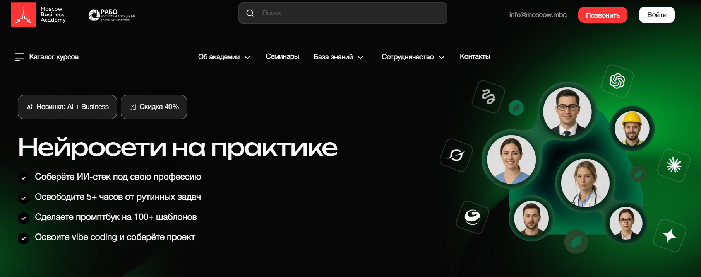
Особенности:
Программа помогает освоить навыки работы с искусственными интеллектами и популярными нейросетями для решения профессиональных задач. Студенты изучают более 30 сервисов, включая ChatGPT, Claude, GigaChat, DeepSeek, Qwen, YandexGPT, Perplexity AI, Gemini, Cursor, Lovable и Sora. Обучение построено вокруг практического применения ИИ в работе: участники учатся создавать тексты, автоматизировать процессы, готовить контент и использовать современные технологии. Курс подходит новичкам, так как не требует базовых навыков программирования и опыта работы с машинным обучением. В процессе обучения слушатели получают доступ к материалам и выполняют практические задания. Особое внимание уделяется созданию промптов и формированию собственного набора запросов для рабочих задач. Участники смогут научиться эффективно использовать нейронные сети и внедрить ИИ в повседневные процессы.
Чему учатся студенты:
Преподаватели:
Преимущества:
Отзывы учеников:
Студенты Московской Бизнес Академии чаще всего отмечают удобный онлайн-формат, понятную подачу материала, практические задания и возможность применять полученные знания в работе. В отзывах также выделяют работу преподавателей и кураторов, которые помогают разобраться в сложных темах.
Перейти на официальный сайт курса3. 🏆 Нейросети. Практический курс – Skillbox

Особенности:
Обучение построено на практических кейсах с использованием популярных нейросетей: ChatGPT, Midjourney, Stable Diffusion, DALL·E 3, Suno и других. Студенты проходят обучение с поддержкой кураторов и получают доступ в профессиональное сообщество. Программа регулярно обновляется, включая новейшие алгоритмы машинного обучения и генеративные модели. Участники научатся автоматизировать задачи бизнеса, создавать контент, работать с текстовыми моделями и графической нейросетью. После прохождения обучения можно внедрить ИИ в реальных проектах и получить конкурентное преимущество на рынке труда. Практика ориентирована на реальные примеры использования искусственного интеллекта в маркетинге, дизайне, IT и аналитике данных.
Чему учатся студенты:
Преподаватели:
Преимущества:
Отзывы учеников:
Выпускники отмечают, что курс помогает освоить основы нейронных сетей и научиться создавать уникальные тексты, изображения и видео. 93% студентов считают обучение полезным для карьеры, а 78% рекомендуют платформу друзьям и коллегам. Чаще всего выделяют практические задания, поддержку преподавателей и возможность сразу внедрять ИИ в работу.
Перейти на официальный сайт курса4. Нейросети на практике – Нетология

Особенности:
Программа обучения сфокусирована на практическом применении искусственного интеллекта в реальных задачах. Студенты за месяц научатся работать с 14 популярными нейросетями, включая ChatGPT и Midjourney. Курс помогает освоить инструменты без необходимости владеть сложными навыками программирования, что делает его доступным широкому кругу специалистов. Занятия построены в формате онлайн, поэтому вы сможете учиться в любом удобном месте и совмещать обучение с работой. В рамках программы уделяется внимание алгоритмам машинного обучения, генерации текстового контента и созданию изображений. Участники получают пакет промптов и полезные материалы для оптимизации рабочих процессов. Дополнительно даются советы по безопасному использованию ИИ. Уже в процессе обучения слушатели смогут делегировать рутинные задачи нейронным сетям и экономить несколько часов ежедневно.
Чему учатся студенты:
Преподаватели:
Преимущества:
Отзывы учеников:
Выпускники отмечают насыщенность программы, современный подход и полезность практических заданий. Многие подчеркивают, что обучение помогает быстрее решать рабочие задачи, автоматизировать процессы и создавать качественный контент без лишних затрат времени.
Перейти на официальный сайт курса5. Нейросети для начинающих — SF Education
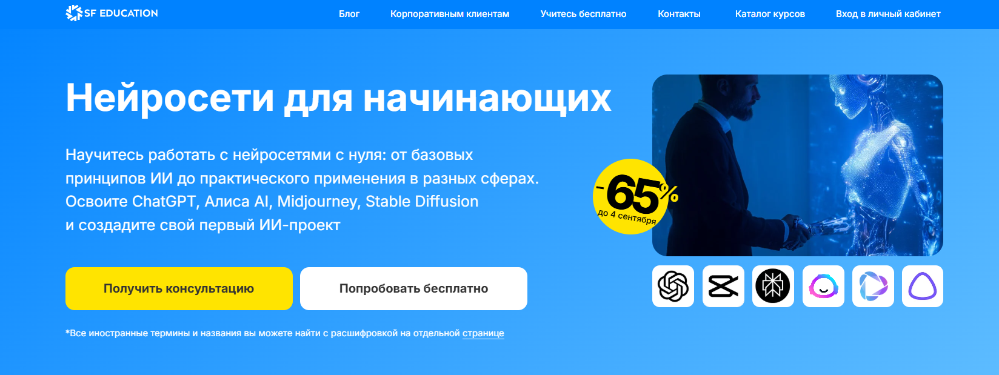
Особенности:
Программа помогает освоить базовые принципы работы нейросетей и понять возможности применения искусственного интеллекта в разных сферах. Студенты изучают популярные нейросети, включая ChatGPT, Midjourney и Stable Diffusion, а также учатся создавать тексты, изображения и код. Обучение построено вокруг практических задач, поэтому участники получают не только теоретические знания, но и практические навыки использования ИИ-инструментов. В рамках курса рассматриваются создание ИИ-ассистентов, автоматизация процессов и работа с большими языковыми моделями. Учащиеся выполняют задания на реальных примерах и разбирают кейсы применения технологий в бизнесе. Формат подходит тем, кто хочет научиться использовать нейросети без глубоких начальных знаний в программировании. Доступ к материалам и обновлениям курса сохраняется после завершения обучения.
Чему учатся студенты:
Преподаватели:
Преимущества:
Отзывы учеников:
Студенты SF Education чаще всего отмечают понятную подачу материала, практическую направленность обучения и поддержку преподавателей. Среди преимуществ выделяют реальные кейсы, удобный формат занятий, возможность возвращаться к материалам и помощь кураторов в процессе прохождения программы. Выпускники также отмечают, что обучение помогает получить прикладные знания и использовать новые инструменты в рабочих задачах.
Перейти на официальный сайт курса6. Нейросети для начинающих — обучение с нуля: от ChatGPT до ИИ-агента — Digital Skills Academy
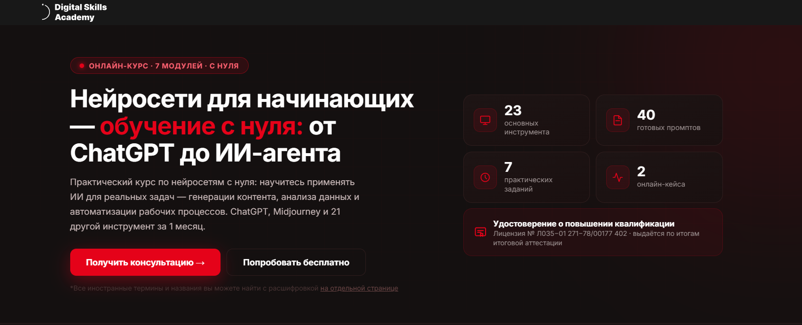
Особенности:
Программа помогает освоить базовые навыки работы с нейросетями без навыков программирования. Студенты изучают возможности популярных нейросетей и учатся применять ИИ для решения реальных задач. Обучение построено вокруг практического применения искусственного интеллекта в работе и бизнесе. В рамках курса рассматриваются ChatGPT, Midjourney и другие современные сервисы. Участники выполняют практические задания и разбирают реальные кейсы использования нейронных сетей. Курс показывает способы генерации контента, анализа данных и автоматизации рабочих процессов. После обучения слушатели смогут эффективнее использовать ИИ-инструменты в профессиональной деятельности.
Чему учатся студенты:
Преподаватели:
Преимущества:
Отзывы учеников:
Студенты отмечают удобный формат обучения, практическую направленность программы и возможность применять полученные знания в работе. Среди преимуществ чаще всего выделяют понятное объяснение инструментов ИИ, разбор реальных задач, работу с популярными сервисами и отсутствие необходимости иметь техническую подготовку. Участники ценят возможность использовать нейросети для создания контента, анализа данных и автоматизации процессов.
Перейти на официальный сайт курса7. Нейросети с нуля — Bang Bang Education
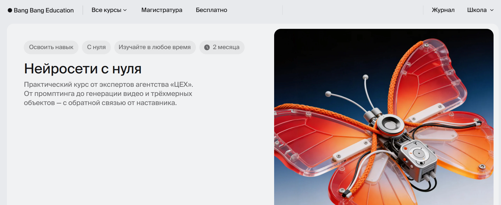
Особенности:
Программа помогает освоить работу с нейросетями с нуля и перейти от базовых знаний к практическому применению инструментов ИИ. На обучении студенты изучают популярные нейросети и учатся использовать их для создания изображений, видео, текстового контента и визуальных материалов. Курс включает работу более чем с 20 нейросетями и показывает способы применения искусственного интеллекта в профессиональных задачах. Обучение построено вокруг практических заданий, где участники создают реальные проекты и развивают навыки работы с генеративными технологиями. Эксперты помогают разобраться в принципах создания эффективных запросов и выборе подходящих сервисов. Студенты учатся выстраивать процесс работы с ИИ — от написания промпта до получения готового результата. В программе также рассматриваются возможности ИИ-агентов и создание серий креативных материалов. Материалы курса обновлены в апреле 2026 года с учетом актуальных технологий и функций.
Чему учатся студенты:
Преподаватели:
Преимущества:
Отзывы учеников:
Студенты Bang Bang Education чаще всего отмечают практическую направленность обучения, понятную структуру материалов, работу наставников и большое количество заданий. Среди положительных сторон выделяют обратную связь по работам, живые вебинары с экспертами и возможность применять полученные навыки в реальных задачах. Ученики также отмечают удобство онлайн-платформы и поддержку в процессе прохождения обучения.
Перейти на официальный сайт курса8. Онлайн-курс «Работа с нейросетями» – Бруноям

Особенности:
Программа обновлена в 2026 году и включает только актуальные знания. В обучении используется подход 15% теории и 85% практики: студенты выполняют реальные проекты, создают контент с помощью ИИ и осваивают популярные нейросети. Занятия проходят в удобном формате с поддержкой наставников, которые дают обратную связь в течение 24 часов. Курс помогает освоить инструменты машинного обучения, научиться создавать тексты и изображения, а также автоматизировать рабочие процессы. Доступ к материалам открыт онлайн, а обучение можно совмещать с учебой или работой. Участники получают практические навыки и знакомятся с примерами применения ИИ в разных сферах. Все задания построены так, чтобы студент научился применять знания в реальных задачах и смог использовать ИИ максимально эффективно.
Чему учатся студенты:
Преподаватели:
Преимущества:
Отзывы учеников:
Студенты отмечают удобный формат занятий, много практических заданий и доступное объяснение сложных тем. Пользователи хвалят поддержку наставников и возможность сразу применять знания в рабочих задачах. Особенно ценят генерацию изображений и текстов, а также практику на реальных кейсах. Курс помогает понять возможности ИИ и уверенно использовать его в профессиональной сфере.
Перейти на официальный сайт курса9. ИИ: нейросети для увеличения дохода — Компьютерная Академия Топ

Особенности:
Программа построена на практических заданиях и дает возможность изучать популярные нейросети и их применение в бизнесе и повседневных задачах. Студенты научатся работать с генерацией изображений, текстов и видео, а также освоят навыки программирования с использованием искусственного интеллекта. Учеба строится на примерах из реальных проектов, что позволяет быстрее внедрить ИИ в работу. Академия поддерживает студентов обратной связью, а лучшие выпускники получают предложения о трудоустройстве. Программа разработана выпускником Гарвардского университета и постоянно обновляется с учетом требований рынка. Учебный процесс сочетает теорию и практику, обеспечивая полезные знания для специалистов разных сфер.
Чему учатся студенты:
Преподаватели:
Преимущества:
Отзывы учеников:
Студенты отмечают простое объяснение сложных тем, большое количество практики и проектов, которые помогают быстро освоить инструменты ИИ. Чаще всего выделяют поддержку преподавателей и реальную пользу для трудоустройства. Многие подчеркивают, что курс помог внедрить искусственный интеллект в рабочие процессы и увеличить доход.
Перейти на официальный сайт курса10. Нейросети для каждого — Академия «Синергия»
Особенности:
Программа помогает освоить инструменты искусственного интеллекта и научиться применять нейросети в рабочих задачах. Студенты изучают популярные нейросети, генерацию контента, создание изображений, текстов и видео. Обучение построено вокруг практического применения ИИ и включает создание реальных проектов для портфолио. Участники получают навыки использования нейронных сетей для автоматизации процессов и оптимизации рабочих задач. В процессе обучения можно разобраться в возможностях ChatGPT, визуальных нейросетей и других сервисов. Курс подходит новичкам без навыков программирования, а также специалистам, которые хотят повысить эффективность работы. После прохождения обучения студенты получают доступ к материалам и могут использовать полученные знания в профессии.
Чему учатся студенты:
Преподаватели:
Преимущества:
Отзывы учеников:
Студенты отмечают удобный онлайн-формат, большое количество практики и поддержку кураторов. Среди преимуществ чаще всего выделяют понятную подачу материала, возможность выполнять реальные задания и получать обратную связь. Выпускники также отмечают помощь в развитии профессиональных навыков и подготовке к новым карьерным возможностям.
Перейти на официальный сайт курса11. Нейросети и ИИ: практические инструменты для современных специалистов — Национальная академия дополнительного профессионального образования

Особенности:
Программа направлена на практическое освоение инструментов искусственного интеллекта и нейронных сетей. Обучение строится на разборе реальных кейсов и практических заданий, что помогает быстро внедрить навыки в работу. Студенты изучают генерацию текстового контента, работу с визуальными нейросетями и алгоритмами машинного обучения. Программа подходит как для тех, кто хочет научиться использовать ИИ для оптимизации повседневных задач, так и для специалистов, стремящихся повысить свою конкурентоспособность. Обучение доступно онлайн, с поддержкой кураторов и возможностью совмещать с рабочим графиком. Курсы включают полезные материалы, которые помогут эффективно использовать нейросети для автоматизации процессов и создания контента.
Чему учатся студенты:
Преподаватели:
Преимущества:
Отзывы учеников:
Студенты отмечают, что курс помогает разобраться в сложных темах и сразу применять полученные знания на практике. Чаще всего выделяют доступность объяснений, удобный график обучения, поддержку преподавателей и пользу от практических заданий. Многие подчеркивают, что смогли освоить новые инструменты ИИ и внедрить их в работу.
Перейти на официальный сайт курсаТОП-6 онлайн-курсов по нейросетям для Повседневных задач
Отличительные преимущества каждой дистанционной программы обучения по нейросетям для Повседневных задач
| № | Курс и школа | Отличительные преимущества курса | |
|---|---|---|---|
| 🥇 | Искусственный интеллект — Skillbox | Комплексная программа для новичков: изучение текста, изображений, видео и анализа данных через ИИ. Более 25 практических кейсов, создание проектов для портфолио, доступ к нейрокомьюнити и регулярное обновление материалов. | Перейти |
| 🥈 | ChatGPT: практический курс — Skillbox | Узкая специализация на практическом применении ChatGPT и других ИИ-инструментов. Отличается большим набором готовых промптов, работой с текстами, презентациями, кодом и автоматизацией рабочих процессов. | Перейти |
| 🥉 | Нейросети для жизни: как повысить личную эффективность — Нетология | Короткий курс с фокусом на использование ИИ в повседневной жизни. Подходит новичкам: помогает внедрить нейросети для планирования, работы с информацией, бюджета, творчества и личных задач. | Перейти |
| 4 | Курс по нейросетям — Бонни и Слайд | Практическая направленность: 10% теории и 90% практики. Изучение популярных нейросетей для текста, изображений, видео и аналитики с проверкой домашних заданий экспертами. | Перейти |
| 5 | Искусственный интеллект для жизни: от первых шагов — Компьютерная Академия ТОП | Расширенная программа с живыми занятиями, изучением 20+ ИИ-инструментов, созданием проектов для портфолио и подготовкой к применению ИИ в профессии. | Перейти |
| 6 | Онлайн-курсы ИИ-дизайна: нейросети для работы и творчества — Международная школа профессий | Курс с акцентом на дизайн и творчество: генерация изображений, текстов, видео, ИИ-аватары и автоматизация творческих задач. Подходит дизайнерам, копирайтерам и начинающим пользователям. | Перейти |
1. 🏆 Искусственный интеллект — Skillbox
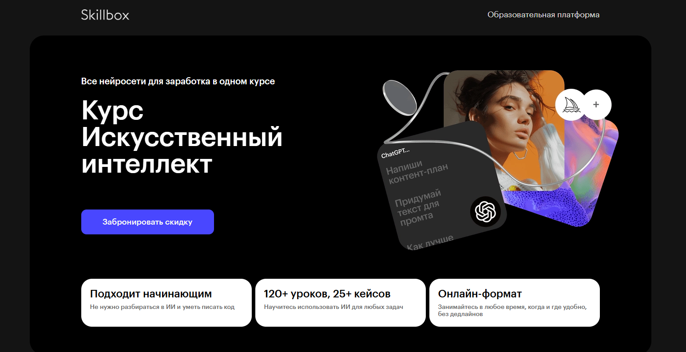
Особенности:
Программа помогает освоить инструменты искусственного интеллекта без навыков программирования и предварительных знаний. Студенты изучают популярные нейросети и учатся использовать их для создания текстов, изображений, видео и анализа данных. Обучение построено вокруг практического применения ИИ и включает более 25 реальных кейсов. В процессе прохождения курса участники создают проекты для портфолио и получают опыт работы с современными сервисами. Материалы программы регулярно обновляются, чтобы учитывать развитие нейросетей и новые возможности технологий. Студенты получают доступ к нейрокомьюнити, где могут общаться со спикерами и обмениваться опытом. Курс помогает внедрить ИИ в рабочие процессы и автоматизировать рутинные задачи.
Чему учатся студенты:
Преподаватели:
Преимущества:
Отзывы учеников:
Студенты Skillbox чаще всего отмечают удобство онлайн-формата, понятную подачу материала, практическую направленность и возможность сразу применять полученные знания в работе. Среди преимуществ также выделяют поддержку кураторов, разбор реальных задач и изучение нескольких нейросетей вместо одного инструмента.
Перейти на официальный сайт курса2. 🏆 ChatGPT: практический курс — Skillbox
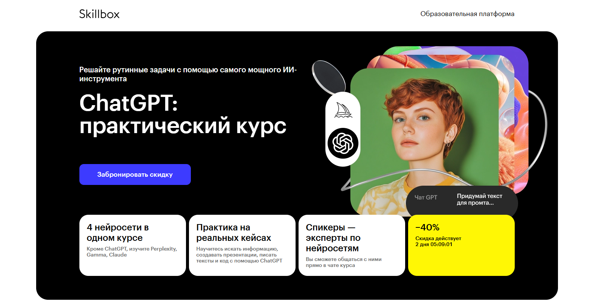
Особенности:
Программа помогает освоить практическое применение искусственного интеллекта и популярных нейросетей для решения рабочих задач. Студенты изучают ChatGPT, Perplexity, Gamma и другие инструменты, которые применяют специалисты разных сфер. Обучение построено на реальных кейсах, поэтому участники получают практический опыт использования ИИ в работе. На занятиях можно научиться создавать тексты, анализировать информацию, автоматизировать процессы и работать с кодом. Материалы курса регулярно обновляются с учётом развития технологий. Участники получают доступ к сообществу, где можно общаться с экспертами и разбирать вопросы по применению нейросетей. Курс подходит как новичкам, так и специалистам, которые хотят улучшить навыки работы с современными технологиями.
Чему учатся студенты:
Преподаватели:
Преимущества:
Отзывы учеников:
Студенты отмечают удобный формат обучения, практическую направленность занятий и возможность применять знания в работе. Среди преимуществ часто выделяют понятное объяснение инструментов ИИ, полезные задания, поддержку экспертов и реальные примеры использования нейросетей для автоматизации задач.
Перейти на официальный сайт курса3. 🏆 Нейросети для жизни: как повысить личную эффективность — Нетология
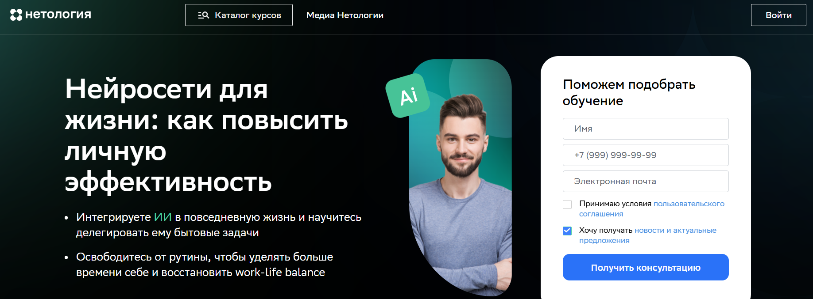
Особенности:
Программа помогает освоить практическое применение нейросетей без необходимости иметь навыки программирования. Участники изучают, как использовать искусственный интеллект для решения личных задач и автоматизации рутинных процессов. На занятиях разбираются основы работы с ИИ, создание эффективных запросов и способы взаимодействия с популярными нейросетями. Обучение построено так, чтобы знания можно было сразу применять в повседневной жизни. Студенты выполняют практические задания и работают с реальными примерами использования искусственного интеллекта. В конце обучения участники создают собственный алгоритм внедрения ИИ в личную жизнь. Формат курса сочетает теорию, практику и самостоятельную работу.
Кратко о программе:
Чему учатся студенты:
Преподаватели:
Преимущества:
Отзывы учеников:
Студенты Нетологии чаще всего отмечают удобную структуру обучения, понятную подачу материала, практические задания и поддержку кураторов. Среди преимуществ также выделяют возможность учиться в удобном формате и применять полученные знания на практике.
Перейти на официальный сайт курса4. Курс по нейросетям — Бонни и Слайд
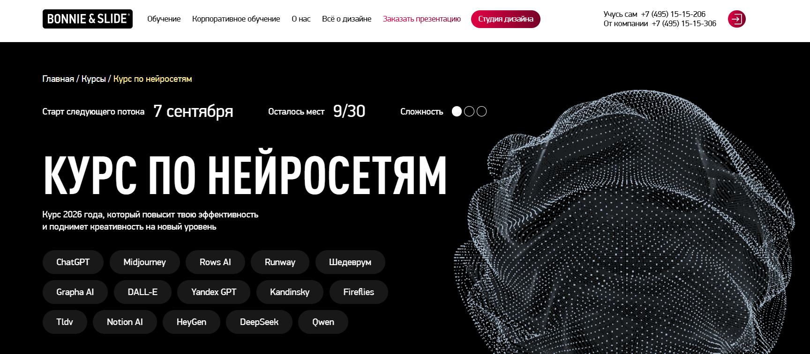
Особенности:
Программа помогает изучить популярные нейросети и научиться применять их в реальных рабочих задачах. Обучение строится по принципу 10% теории и 90% практики, поэтому студенты сразу закрепляют знания на заданиях. Участники знакомятся с ChatGPT, Midjourney, Rows AI, Runway, DALL-E, Yandex GPT и другими сервисами. Курс подходит как новичкам, которые только начинают изучать нейросети, так и пользователям с базовыми навыками работы с ИИ. В процессе обучения слушатели учатся создавать тексты, изображения, видео и анализировать данные. Практические кейсы помогают понять применение нейросетей в разных профессиях и сферах бизнеса. Проверка домашних заданий экспертами позволяет получать персональную обратную связь и улучшать результат.
Чему учатся студенты:
Преподаватели:
Преимущества:
Отзывы учеников:
Студенты Бонни и Слайд чаще всего отмечают понятную подачу материала, удобный формат видеоуроков, большое количество практики и возможность сразу применять знания в работе. В отзывах о курсе по нейросетям участники выделяют логичную структуру программы, задания после уроков и поддержку команды. Также слушатели отмечают, что обучение помогает разобраться в работе с текстами, изображениями и видео с помощью ИИ-инструментов.
Перейти на официальный сайт курса5. Искусственный интеллект для жизни: от первых шагов — Компьютерная Академия ТОП
Особенности:
Программа помогает освоить базовые принципы искусственного интеллекта и научиться использовать современные технологии без необходимости иметь глубокие знания в программировании. Студенты изучают популярные нейросети и инструменты, которые применяют для создания текстов, изображений и видео. Обучение строится на практических заданиях и реальных кейсах, поэтому участники получают практические навыки применения ИИ. В рамках программы можно разобраться в генеративных моделях, автоматизации задач и анализе данных. Студенты учатся писать эффективные запросы и создавать собственные решения с помощью нейросетей. Курс включает работу с актуальными сервисами, среди которых ChatGPT, Midjourney, Runway ML, Perplexity и другие инструменты. После прохождения обучения слушатели получают проекты для портфолио и готовую стратегию применения искусственного интеллекта в своей сфере.
Кратко о программе:
Чему учатся студенты:
Преподаватели:
Преимущества:
Отзывы учеников:
Студенты Компьютерной Академии ТОП чаще всего отмечают понятное объяснение материала, поддержку преподавателей и практическую направленность занятий. Среди преимуществ обучения выделяют возможность задавать вопросы, получать обратную связь и применять полученные знания в реальных задачах. В отзывах об обучении в академии также отмечают удобный формат занятий и полезность практических заданий.
Перейти на официальный сайт курса6. Онлайн-курсы ИИ-дизайна: нейросети для работы и творчества — Международная школа профессий
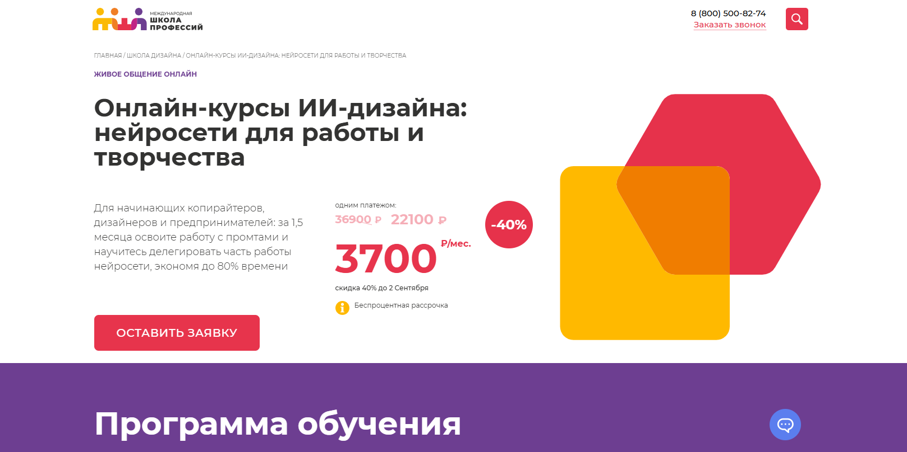
Особенности:
Программа помогает изучить возможности популярных нейросетей и освоить применение искусственного интеллекта в рабочих задачах. Обучение построено с акцентом на практическое применение знаний и создание реальных материалов. Студенты изучают промпт-инжиниринг, генерацию изображений, создание текстового контента и работу с мультимодальными инструментами. На занятиях разбираются современные технологии, которые применяют специалисты разных сфер. Участники получают базовые знания о нейронных сетях и учатся эффективно использовать ИИ для решения конкретных задач. Курс подходит тем, кто хочет научиться создавать визуальный контент и автоматизировать часть рутинных процессов.
Чему учатся студенты:
Преподаватели:
Преимущества:
Отзывы учеников:
Студенты отмечают удобный онлайн-формат, понятную подачу материала и практическую направленность обучения. Среди преимуществ часто выделяют возможность изучать нейросети с нуля, поддержку наставников и применение полученных знаний в рабочих проектах.
Перейти на официальный сайт курсаТОП-7 онлайн-курсов по Промт-инжинирингу
Отличительные преимущества каждой дистанционной программы обучения по Промт-инжинирингу
| № | Курс и школа | Отличительные преимущества курса | |
|---|---|---|---|
| 🥇 | Промпт-инжиниринг — Бруноям | Практический курс с обучением на собственных задачах, поддержкой наставника и регулярным обновлением программы. Подходит для быстрого освоения промптов, работы с ChatGPT, создания контента, исследований и повышения эффективности рабочих процессов. | Перейти |
| 🥈 | Промпт-инженер — Нетология | Большая программа профессиональной переподготовки с созданием проектов в портфолио. Отличается карьерной поддержкой, изучением ИИ-ассистентов, автоматизации процессов, API и дополнительными техническими темами. | Перейти |
| 🥉 | Промпт-инжиниринг для начинающих — TeachMeSkills | Курс с высокой долей практики (85%) и ориентацией на новичков. Участники создают реальные проекты, AI-ассистентов, промпт-библиотеку и учатся работать с современными LLM-моделями. | Перейти |
| 4 | Промпт-инжиниринг — Зерокодер | Акцент на создание ИИ-решений для бизнеса, работу с мультимодальными нейросетями, LLM и разработку AI-ассистентов. Подходит тем, кто хочет собрать портфолио и развивать карьеру в сфере ИИ. | Перейти |
| 5 | Промпт-инжиниринг — ИТ Школа Ростелеком | Курс повышения квалификации с изучением генеративного ИИ, LLM, NLP и безопасного применения технологий. Отличается академическим подходом, вебинарами с преподавателями и официальным удостоверением. | Перейти |
| 6 | Промптинг для управления персоналом (HR): как получать не «текст от нейросети», а рабочий результат — Московская Бизнес Школа | Узкопрофильный мастер-класс для HR-специалистов. Фокусируется на создании рабочих HR-промптов, подборе сотрудников, коммуникации с кандидатами и формировании библиотеки готовых запросов. | Перейти |
| 7 | Работа с запросами (промпт-грамотность) для преподавателей и экспертов — Московская Бизнес Школа | Короткий практический курс для преподавателей, экспертов и авторов образовательных продуктов. Помогает научиться создавать эффективные запросы для контента, аналитики, планирования и работы с ChatGPT. | Перейти |
1. 🏆 Промпт-инжиниринг — Бруноям
Особенности:
Курс помогает освоить промпт-инжиниринг и научиться управлять качеством ответов искусственного интеллекта. Обучение построено вокруг практики: студенты тестируют разные запросы и применяют знания в своих задачах. Навыки позволяют ускорить выполнение большого количества рабочих процессов, включая написание текстов, исследования, создание изображений и контент-планов. Программа обновляется каждые 6 месяцев, чтобы соответствовать изменениям инструментов ИИ. Во время обучения студенты получают поддержку наставников и обратную связь по практическим заданиям в течение 24 часов. Материалы подходят не только для профессиональных задач, но и для личных проектов, творчества и развития личного бренда. Формат обучения позволяет заниматься из любой точки мира в удобное время.
Чему учатся студенты:
Преподаватели:
Преимущества:
Отзывы учеников:
Студенты отмечают понятную структуру обучения, практические задания и возможность сразу применять знания в работе. Среди плюсов часто выделяют поддержку кураторов, полезные примеры из реальных задач и помощь в освоении инструментов ИИ. Ученики также отмечают, что после обучения становится проще формулировать запросы, экономить время и получать более точные ответы от нейросетей.
Перейти на официальный сайт курса2. 🏆 Промпт-инженер — Нетология
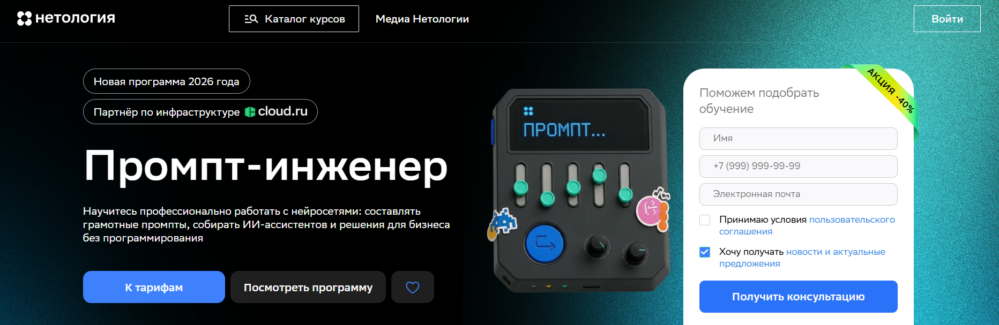
Особенности:
Программа помогает освоить промпт-инжиниринг и научиться эффективно использовать нейросети в рабочих задачах. Студенты изучают создание промптов, системных инструкций и ИИ-ассистентов без необходимости глубокого изучения программирования. Обучение построено вокруг практики: участники выполняют задания и собирают проекты для портфолио. В программу входят дополнительные темы по английскому языку, Python, ООП и работе с API. Эксперты курса дают обратную связь по выполненным работам и помогают улучшать результаты. Материалы доступны в личном кабинете, а записи занятий сохраняются на протяжении 3 лет. Формат подходит для совмещения с работой благодаря гибкому расписанию.
Чему учатся студенты:
Преподаватели:
Преимущества:
Отзывы учеников:
Студенты Нетологии чаще всего отмечают удобный онлайн-формат, понятную подачу материала и практическую направленность обучения. Среди преимуществ выделяют поддержку преподавателей, возможность выполнять реальные задачи с нейросетями и наличие проектов для портфолио. Также ученики обращают внимание на удобство личного кабинета и возможность совмещать обучение с работой.
Перейти на официальный сайт курса3. 🏆 Промпт-инжиниринг для начинающих — TeachMeSkills
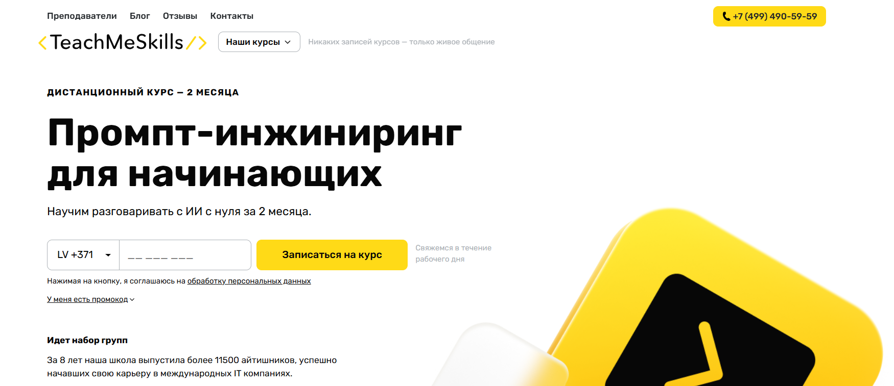
Особенности:
Программа обучения помогает освоить промпт-инжиниринг с нуля и научиться получать предсказуемые результаты от моделей искусственного интеллекта. Студенты изучают, как формулировать запросы для получения качественных текстов, таблиц, списков и визуальных материалов. В процессе обучения участники работают с реальными задачами: создают FAQ-ответы, документы, рыночные обзоры, цепочки писем и постов. Отдельное внимание уделяется работе с контекстом, шаблонами и проверке качества ответов. Курс включает практику с современными AI-инструментами и генерациями контента. После обучения студенты получают опыт создания AI-ассистентов, мини-лендингов и автоматизированных сценариев. Участники формируют собственную библиотеку промптов и портфолио из готовых проектов.
Чему учатся студенты:
Преподаватели:
Преимущества:
Отзывы учеников:
Студенты TeachMeSkills чаще всего отмечают понятную подачу материала, практическую направленность обучения и поддержку преподавателей. В отзывах выпускники выделяют структурированную программу, сочетание теории и практики, обратную связь от наставников и удобный формат занятий. Также ученики положительно оценивают помощь школы в развитии профессиональных навыков и подготовке к работе в IT-сфере.
Перейти на официальный сайт курса4. Промпт-инжиниринг — Зерокодер
Особенности:
Программа по промпт-инжинирингу помогает освоить работу с современными инструментами искусственного интеллекта и применять их в практических задачах. Студенты изучают мультимодальные нейросети и LLM, разбираются в моделях для текста, аудио, видео и изображений. Обучение включает создание решений для бизнеса и разработку ИИ-ассистентов. В процессе обучения участники собирают проекты для портфолио, включая ассистентов для сайтов, корпоративной документации и обработки клиентских запросов. Отдельное внимание уделяется генерациям с использованием популярных инструментов, таких как ChatGPT, Perplexity, GigaChat и Gemini. Программа помогает понять принципы построения промптов для сложных сценариев. Студенты получают поддержку на всех этапах обучения и подготовки к профессиональной деятельности.
Чему учатся студенты:
Преподаватели:
Преимущества:
Отзывы учеников:
Студенты часто отмечают практическую направленность обучения, понятную подачу материала и большое количество заданий. Среди положительных сторон выделяют работу с актуальными инструментами, поддержку кураторов и возможность получить навыки применения нейросетей в реальных задачах. Некоторые участники также отмечают высокую интенсивность программы и необходимость уделять достаточно времени самостоятельной практике.
Перейти на официальный сайт курса5. Промпт-инжиниринг — ИТ Школа Ростелеком
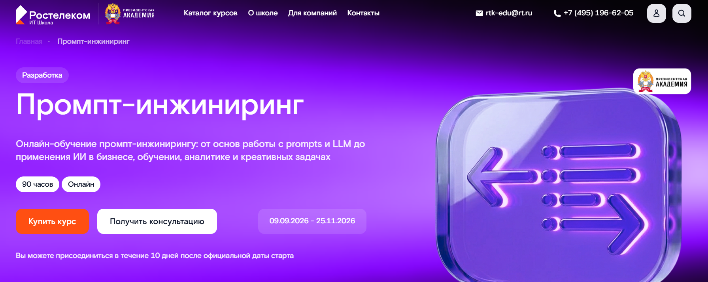
Особенности:
Программа помогает освоить работу с генеративным ИИ и научиться формулировать эффективные запросы для получения качественных результатов. Во время обучения студенты разбирают основы prompt engineering, применение языковых моделей и способы интеграции приложений. Курс подходит тем, кто хочет использовать ИИ без глубокого погружения в разработку. В программе есть практика после каждой темы, проверка заданий и обратная связь от куратора. Обучение включает изучение возможностей и ограничений LLM, а также правил безопасной и этичной работы с искусственным интеллектом. Студенты получают доступ к материалам, видеоурокам и записям вебинаров после старта обучения. Навыки, полученные в рамках программы, можно применять в работе с ChatGPT, подготовке материалов, аналитике и автоматизации задач.
Чему учатся студенты:
Преподаватели:
Преимущества:
Отзывы учеников:
Студенты отмечают удобный график обучения, наличие записей уроков и большое количество практических материалов. Выпускники выделяют понятную подачу информации, поддержку кураторов и возможность применять полученные знания в рабочих задачах. Также слушатели положительно оценивают постепенное усложнение программы и изучение вариантов интеграции LLM с разными сервисами.
Перейти на официальный сайт курса6. Промптинг для управления персоналом (HR): как получать не «текст от нейросети», а рабочий результат — Московская Бизнес Школа
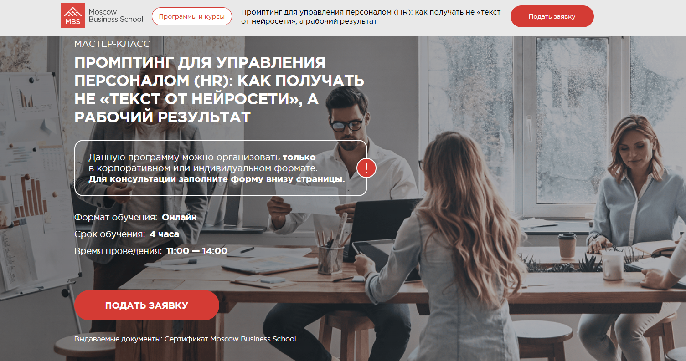
Особенности:
Мастер-класс показывает, как превратить нейросети из инструмента для генерации обычного текста в помощника для решения практических HR-задач. Участники изучают принципы создания эффективных запросов и разбирают структуру профессионального промпта. В программе рассматриваются задачи подбора персонала, коммуникации с кандидатами и внутреннего взаимодействия в компании. Особое внимание уделяется качеству результата, проверке фактов, этическим требованиям и юридическим ограничениям. Обучение помогает понять, почему общий запрос часто приводит к слабому ответу и как улучшать взаимодействие с AI-сервисами. На занятиях разбираются реальные примеры вакансий, писем кандидатам и планов адаптации сотрудников. После обучения участники получают практические шаблоны, которые можно применять в ежедневной работе.
Чему учатся студенты:
Преподаватели:
Преимущества:
Отзывы учеников:
Участники отмечают практическую ценность обучения, понятную подачу материала и возможность сразу применять полученные знания в работе. Среди преимуществ программы выделяют разбор реальных задач, структуру создания запросов и полезные инструменты для повышения эффективности HR-процессов.
Перейти на официальный сайт курса7. Работа с запросами (промпт-грамотность) для преподавателей и экспертов — Московская Бизнес Школа
Особенности:
Программа посвящена работе с запросами для эффективного взаимодействия с искусственным интеллектом. Обучение помогает понять, как формулировать промпты и получать более точные результаты от нейросетей. Участники разбирают структуру эффективного запроса, включая роль, контекст, цель и формат ответа. В рамках занятия рассматриваются практические задачи для работы с контентом, аналитикой, планированием и автоматизацией процессов. Особое внимание уделяется применению ChatGPT и других чат-моделей в профессиональной деятельности. Формат мастер-класса включает разбор реальных рабочих ситуаций. Знания помогают использовать ИИ как инструмент для повышения эффективности в работе и обучении.
Чему учатся студенты:
Преподаватели:
Преимущества:
Отзывы учеников:
Участники программ Московской Бизнес Школы отмечают практическую направленность занятий, понятную подачу материала и возможность сразу применять полученные знания в работе. Среди плюсов часто выделяют разбор практических заданий, создание собственных промптов и ответы преподавателей на дополнительные вопросы.
Перейти на официальный сайт курсаТОП-16 онлайн-курсов по нейросетям для Бизнеса и Продаж
Отличительные преимущества каждой дистанционной программы обучения по нейросетям для Бизнеса и продаж
| № | Курс и школа | Отличительные преимущества | |
|---|---|---|---|
| 🥇 | Нейросети для бизнес-процессов — Академия Эдюсон | Системный курс по внедрению ИИ сразу в несколько функций бизнеса: управление, финансы, маркетинг, продажи, HR, закупки, логистика и производство. Выделяется обучением аудиту процессов, расчёту ROI, построению дорожной карты внедрения, созданию ИИ-агентов и цифровых помощников. Доступ к курсу и обновлениям заявлен бессрочным, поддержка куратора — 365 дней. | Перейти |
| 🥈 | Нейротренер — Академия Эдюсон | Отличается от остальных программ фокусом не столько на изучении нейросетей, сколько на развитии профессиональных и человеческих навыков, устойчивых к автоматизации. Включает 195 интерактивных тренажёров, 50 навыков, ИИ-собеседника с моментальной обратной связью и персональный маршрут развития с адаптацией заданий под профессию пользователя. | Перейти |
| 🥉 | Нейросети для отдела продаж — Академия Эдюсон | Специализированная программа именно для продаж: автоматизация квалификации лидов, контроль переговоров, аналитика воронки, прогнозирование, создание коммерческих предложений, ИИ-ассистентов и чат-ботов. Отдельно рассматривается работа с amoCRM и Bitrix24. Есть более 10 готовых инструментов и бесплатный пробный доступ на 3 дня. | Перейти |
| 4 | Искусственный интеллект в бизнесе: от хайпа к реальным результатам — Московская Бизнес Академия | Одна из наиболее широких по набору инструментов программ: заявлено более 30 нейросетей и сервисов. Помимо маркетинга, продаж, HR, финансов и логистики включает генерацию изображений и видео, Vibe Coding, Cursor и Lovable. Итоговый проект — шестимесячная дорожная карта внедрения ИИ в собственную компанию с экспертной обратной связью. | Перейти |
| 5 | Искусственный интеллект в управлении бизнесом — Московская Бизнес Академия | Более продолжительная управленческая программа с 70% практики, 180 видеоматериалами и 15 практическими заданиями. Отличается акцентом на системное внедрение ИИ руководителем, работу с корпоративными ассистентами и подготовку стратегии внедрения на 30, 60 и 90 дней. Предусмотрен диплом о профессиональной переподготовке с внесением сведений в ФРДО и карьерная поддержка. | Перейти |
| 6 | Нейросети для бизнеса — Skillbox | Программа трудоустройства с гарантией возврата денег, работа с локальными моделями и API, практические проекты для портфолио, широкий охват инструментов (GPT4All, Midjourney, Gemini, Claude). | Перейти |
| 7 | Нейросети для бизнеса и управленцев — Нетология | Удостоверение о повышении квалификации, обучение у экспертов-практиков (Сидорюк, Свирщевская), упор на стратегическое применение ИИ в управлении и маркетинге, доступ к проверенным промптам. | Перейти |
| 8 | Искусственный интеллект для бизнеса — Московская Бизнес Школа | Выделяется возможностью выбрать очный или онлайн-формат и изучением более 50 ИИ-инструментов. Программа охватывает полный цикл — от промптинга и анализа данных до Custom GPTs, персональных ИИ-ассистентов и алгоритма внедрения ИИ в компанию. Отдельно рассматриваются правовые, этические и организационные риски. По итогам предусмотрен диплом о профессиональной переподготовке. | Перейти |
| 9 | ИИ для бизнеса — Бруноям | Компактная двухмесячная программа с упором на практическую автоматизацию, ИИ-агентов, аналитику, контент и AI-видео. Среди отличий — работа с российским контекстом, локальными базами знаний, вопросами конфиденциальности и экономикой внедрения ИИ. Программа обновляется каждые шесть месяцев, а на расширенных тарифах предусмотрена персональная работа с наставником. | Перейти |
| 10 | Нейросети для бизнеса — Skillfactory | Сильный акцент на технически более продвинутой no-code/low-code автоматизации: GPT-агенты, Relevance AI, Make, n8n, API, CRM, RAG, векторные базы и локальные модели. Финальный проект можно построить на реальной задаче своего бизнеса и добавить в портфолио. Предусмотрена поддержка менторов, координаторов и кураторов. | Перейти |
| 11 | Нейросети для работы — KARPOV.COURSES | Отличается синхронным форматом с вебинарами два раза в неделю и последовательным переходом от основ ИИ и LLM к API, Telegram-ботам, Make, n8n и полноценным ИИ-агентам с памятью и базой знаний. Практика построена вокруг реальных кейсов аналитики, маркетинга, HR и менеджмента. Итоговые проекты можно добавить в портфолио, выдаются сертификаты на русском и английском языках. | Перейти |
| 12 | Нейросети для HR — Академия Эдюсон | Создан с учетом последних технологий, поддержка куратора 365 дней в году, доступ к материалам навсегда, налоговый вычет 13%, шаблоны и готовые решения для HR-задач. | Перейти |
| 13 | Нейросети для руководителей — Сити Бизнес Скул - City Business School | Экспертный преподавательский состав (6 специалистов из разных областей), быстрый курс 4,5 недели, доступ к базе инструментов и шаблонам автоматизации, реальная интеграция ИИ без программирования. | Перейти |
| 14 | Нейросети для работы — Яндекс Практикум | Бесплатный вводный модуль, карьерный центр с трудоустройством, практика с 10 нейросетями (ChatGPT, Claude, YandexGPT), формирование собственного промпт-бука как рабочего инструмента. | Перейти |
| 15 | Нейросети для руководителей — Яндекс Практикум | Самая интенсивная по срокам программа в подборке: от 2 до 3 недель. Практика начинается с первого воркшопа и ориентирована непосредственно на руководителей. На продвинутых уровнях рассматриваются ИИ-агенты, агентные цепочки, n8n, Cursor и вайбкодинг; можно создать до шести прикладных проектов. Максимальный тариф включает две индивидуальные встречи с экспертом по ИИ. | Перейти |
| 16 | Искусственный интеллект и нейросети в работе бизнеса — АНО «НИУДПО имени К. Д. Ушинского» | Наиболее доступная по заявленной стоимости и короткая академическая программа: 4 недели и 76 часов. Полностью дистанционный формат включает электронные лекции, вебинары, тестирование и практические задания с обратной связью преподавателей. После успешного завершения сохраняется бессрочный доступ к материалам, а также предоставляется доступ к крупной электронной библиотеке. | Перейти |
1. 🏆 Нейросети для бизнес-процессов — Академия Эдюсон
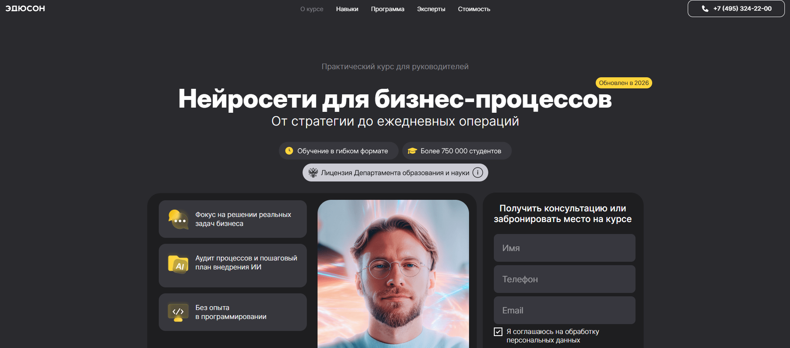
Особенности:
Программа ориентирована на практическое внедрение ИИ, а не только на изучение возможностей популярных нейросетей. Участники начинают с основ работы с нейросетями и составления эффективных запросов, после чего переходят к созданию ботов, ИИ-агентов и цифровых помощников. Отдельный блок посвящён аудиту рабочих процессов и выбору проектов, в которых применение ИИ может дать измеримый бизнес-эффект. Студенты учатся рассчитывать ROI инициатив, распределять роли, определять сроки и формировать дорожную карту внедрения нейросетей. Практическое применение рассматривается сразу в нескольких функциях компании: финансах, маркетинге, продажах, HR, закупках, логистике и производстве. В программе используются ChatGPT, Claude, Google Gemini, DeepSeek, YandexGPT, GigaChat, Grok, Perplexity, NotebookLM, n8n и другие современные инструменты. Участники учатся автоматизировать задачи и рутинные процессы, анализировать информацию и создавать ИИ-помощников для конкретных рабочих задач. Отдельное внимание уделяется регламентам использования ИИ, работе с данными и снижению юридических и репутационных рисков. Курс обновлён и рассчитан на системное внедрение технологий в работу команды.
Чему учатся студенты:
Преподаватели:
Преимущества:
Отзывы учеников:
В отзывах об Академии Эдюсон студенты чаще всего положительно оценивают понятную подачу материала, возможность совмещать онлайн-обучение с основной работой, практические задания и применение полученных знаний в рабочих задачах. В отзывах также отмечают удобный график, реальные примеры, поддержку кураторов и возможность возвращаться к материалам для повторения сложных тем. Отдельные ученики направления по нейросетям пишут, что начинают применять полученные знания в работе уже во время прохождения курса. На независимых площадках встречается и критика, в частности замечания по поводу скорости обратной связи, поэтому впечатления от сопровождения у студентов различаются.
2. 🏆 Нейротренер — Академия Эдюсон
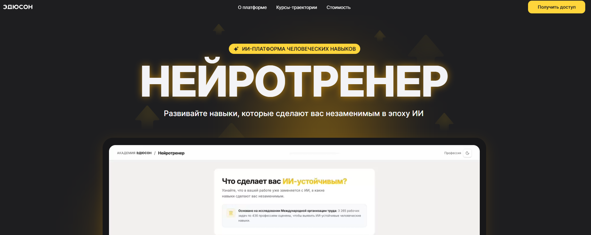
Особенности:
Платформа сосредоточена не на изучении нейросетей или навыков программирования, а на человеческих компетенциях, которые помогают специалисту сохранять ценность при внедрении ИИ в рабочие процессы. Пользователь получает доступ к 50 навыкам, 195 тренажёрам и 10 готовым траекториям развития. Система позволяет указать профессию и типовые рабочие задачи, после чего алгоритм помогает определить сильные стороны и приоритетные направления развития. Практика строится вокруг реальных задач: переговоров, управления сотрудниками, продаж, разрешения конфликтных ситуаций, коммуникации и принятия решений. Каждый тренажёр адаптируется под профессию пользователя, а ИИ-собеседник позволяет отрабатывать диалоги без ожидания преподавателя или партнёра. После тренировки система показывает результат, отмечает сильные стороны и зоны роста, поэтому участник получает обратную связь сразу. Форматы обучения включают короткие анимированные материалы и конспекты, которые можно выбирать в зависимости от удобного способа изучения темы. Для системного прохождения обучения предусмотрены комплексные программы по переговорам, продажам, эмоциональному интеллекту, управлению командой, конфликтам, изменениям, стратегии, коучингу, коммуникации и карьерному развитию. Полученные практические навыки рассчитаны на применение в рабочих задачах, где искусственный интеллект может автоматизировать отдельные процессы, но не заменяет развитое мышление, коммуникацию и навыки управления людьми.
Чему учатся студенты:
Преподаватели:
Преимущества:
Отзывы учеников:
В отзывах об Академии Эдюсон студенты чаще всего положительно оценивают удобный формат обучения, понятную и последовательную подачу материала, практические задания и возможность заниматься в собственном темпе. Пользователи также отмечают оперативные ответы кураторов, актуальность материалов и ориентацию программ на практическое применение. В отзывах о направлениях, связанных с нейросетями и ИИ, встречаются положительные оценки реальных кейсов, работы с автоматизацией процессов и доступности материала для начинающих. Студенты также отмечают содержание курсов, качество лекций и поддержку во время обучения. При этом отдельные пользователи упоминают недостатки мобильной версии или особенности проверки домашних заданий, поэтому впечатления могут зависеть от конкретной программы.
3. 🏆 Нейросети для отдела продаж — Академия Эдюсон
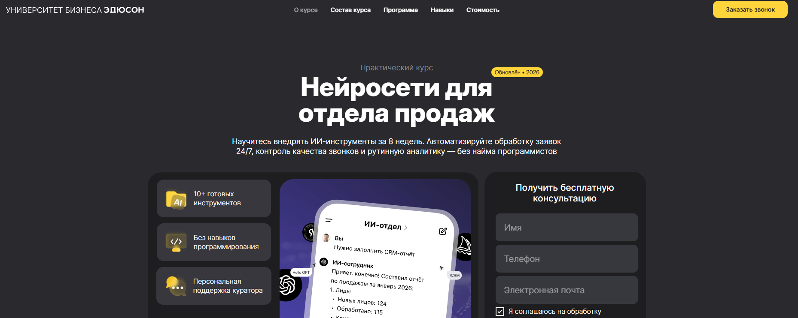
Особенности:
Программа ориентирована на практическое применение нейросетей и ИИ непосредственно в рабочих процессах отдела продаж. Студенты смогут освоить инструменты без программирования и начать внедрять готовые решения уже во время прохождения обучения. Отдельное внимание уделяется автоматизации обработки заявок, контролю качества переговоров, аналитике данных и прогнозированию продаж. Практические задания помогают освоить навыки создания ИИ-агентов, ассистентов и чат-ботов для конкретных задач бизнеса. Участники изучают способы применения искусственного интеллекта в amoCRM и Bitrix24, а также знакомятся с популярными сервисами автоматизации. Программа включает реальные кейсы по внедрению ИИ, оценке эффективности решений и защите корпоративных данных. Студенты учатся применять нейросети для анализа работы команды, подготовки коммерческих предложений и управления воронкой. Формат обучения позволяет совмещать занятия с работой и изучать материалы в удобное время. Дополнительное преимущество — бесплатный доступ к программе на 3 дня без привязки банковской карты, чтобы заранее оценить формат обучения.
Чему учатся студенты:
Преподаватели:
Преимущества:
Отзывы учеников:
В отзывах об Академии Eduson студенты часто относят к плюсам удобный формат обучения в собственном темпе, понятную подачу материала, практические задания и возможность сразу применять новые инструменты в рабочих задачах. Пользователи также положительно оценивают актуальность учебных материалов, удобство платформы, поддержку кураторов и постоянный доступ к пройденным урокам. В отзывах встречаются положительные оценки программ по нейросетям: учащиеся отмечают реальные кейсы, практическую работу с ИИ и возможность освоить новые технологии с нуля. Среди преимуществ академии также называют отсутствие жёстких дедлайнов и регулярное обновление образовательных материалов.
Перейти на официальный сайт курса4. Искусственный интеллект в бизнесе: от хайпа к реальным результатам — Московская Бизнес Академия
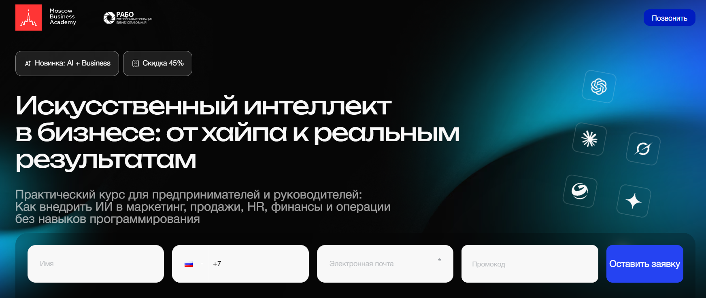
Особенности:
Программа ориентирована на практическое применение искусственного интеллекта в конкретных бизнес-задачах, а не только на изучение теории. Участники смогут освоить современные инструменты и более 30 популярных нейросетей, включая ChatGPT, Grok, Claude, GigaChat, DeepSeek, Qwen, YandexGPT, Perplexity AI, Gemini, Cursor, Lovable и Sora. Обучение начинается с основ прикладного ИИ, работы с моделями и составления эффективных запросов, поэтому специальная техническая подготовка не требуется. Практические навыки развиваются при решении задач в области маркетинга, продаж, HR, финансовой аналитики, логистики, клиентского сервиса и управления проектами. Отдельные модули посвящены генерации контента, созданию изображений и видео, автоматизации рутинных процессов и Vibe Coding. Студенты учатся применять нейросети для анализа данных, подготовки материалов, оптимизации процессов и повышения эффективности бизнеса. В программу включена библиотека ИИ-шаблонов и промптов, которая помогает быстрее перейти к использованию ИИ в рабочих задачах. Программа обновлена и учитывает актуальные инструменты и генеративные модели. Завершается обучение выпускным проектом, в рамках которого участник разрабатывает шестимесячную дорожную карту внедрения ИИ в свою компанию и получает экспертную обратную связь.
Чему учатся студенты:
Преподаватели:
Преимущества:
Отзывы учеников:
В отзывах о Московской Бизнес Академии студенты чаще всего положительно оценивают удобный онлайн-формат, возможность совмещать обучение с работой, структурированную подачу материалов и практическую пользу знаний. Среди регулярно упоминаемых плюсов также встречаются оперативная поддержка кураторов, обратная связь по заданиям, актуальность учебных тем и доступные объяснения преподавателей. Некоторые учащиеся отмечают, что полученные знания удаётся применять в рабочих процессах ещё во время обучения. При этом встречаются и критические отзывы о сроках доступа, количестве практики и скорости решения отдельных организационных вопросов, поэтому условия прохождения программы стоит заранее уточнить перед оплатой.
Перейти на официальный сайт курса5. Искусственный интеллект в управлении бизнесом — Московская Бизнес Академия
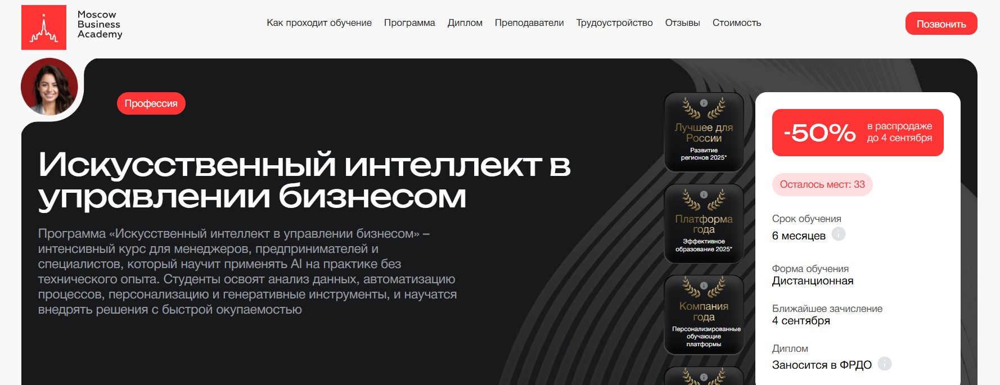
Особенности:
Программа построена вокруг практического применения искусственного интеллекта в реальных бизнес-задачах и обновлена. Студенты осваивают популярные нейросети и сервисы, включая ChatGPT-5, Claude 4 Sonnet, Grok-4, GigaChat, DeepSeek, Qwen, YandexGPT, Gemini 2.5 Pro и Perplexity AI. Отдельные модули посвящены работе с данными, документами, маркетингом, продажами, HR, финансами и клиентским сервисом. Участники учатся применять ИИ для автоматизации рутинных процессов, подготовки отчётов, анализа информации и создания контента. Программа помогает разобраться не только в использовании нейросетей, но и в системном внедрении ИИ в работу команды и рабочие процессы. Практические задания связаны с конкретными управленческими задачами, а 70% программы отведено практике на основе рабочих кейсов. Студенты получают поддержку кураторов и обратную связь от преподавателей в процессе обучения. В финальной части предусмотрена разработка стратегии внедрения ИИ в собственный бизнес или подразделение с планом действий на 30, 60 и 90 дней. Дистанционный формат позволяет совмещать обучение с работой и проходить материалы в удобном темпе.
Чему учатся студенты:
Преподаватели:
Преимущества:
Отзывы учеников:
В положительных отзывах о Московской Бизнес Академии студенты часто отмечают удобный дистанционный формат, понятную организацию процесса обучения, актуальность и структурированность материалов. Среди плюсов также называют профессиональную подачу материала преподавателями, работу кураторов и возможность быстро получать обратную связь. Некоторые выпускники выделяют практические задания, большое количество учебной информации и возможность совмещать занятия с основной работой. В отзывах встречаются положительные оценки коммуникации с кураторами, качества подачи программы и удобства образовательной платформы. При этом мнения об академии различаются: встречаются и отрицательные отзывы о содержании отдельных программ и организации обучения, поэтому перед оплатой стоит внимательно изучить программу выбранного направления.
6. Нейросети для бизнеса — Skillbox

Особенности:
Курс позволяет освоить инструменты автоматизации задач с помощью искусственного интеллекта и генеративных моделей. Обучение строится на реальных примерах из бизнеса: от автоматизации документооборота до создания рекламных креативов. Участники получают практические навыки работы с популярными нейросетями — GPT4All, Midjourney, Gemini, Claude и другими. В процессе обучения студенты выполняют практические проекты для портфолио, что помогает освоить базовые знания и закрепить их на реальных кейсах. Программа включает работу с локальными моделями и API-интеграциями, чтобы научиться использовать ИИ даже без доступа к интернету. Такой подход обеспечивает практическое применение искусственного интеллекта в различных сферах бизнеса. Благодаря пошаговой системе обучения студенты научатся эффективно использовать ИИ-инструменты для оптимизации процессов, повышения эффективности и снижения затрат.
Чему учатся студенты:
Преподаватели:
Преимущества:
Отзывы учеников:
Студенты отмечают, что курс помогает освоить практическое применение искусственного интеллекта без глубоких знаний программирования. Многие выделяют удобный формат обучения, практические кейсы и поддержку кураторов. В отзывах часто упоминают, что полученные навыки позволяют автоматизировать задачи и повысить эффективность работы в компании.
Перейти на официальный сайт курса7. Нейросети для бизнеса и управленцев — Нетология

Особенности:
Программа направлена на освоение инструментов искусственного интеллекта для решения управленческих и бизнес-задач. Студенты получат практические навыки применения ИИ для автоматизации процессов, анализа данных и оптимизации коммуникаций. Обучение строится на реальных примерах и кейсах, что помогает разобраться в возможностях нейронных сетей без навыков программирования. Во время прохождения обучения участники изучают популярные нейросети, включая ChatGPT и MidJourney, и учатся применять их в реальных проектах. После окончания курса студенты смогут эффективно использовать ИИ для стратегического планирования, прогнозирования и работы с клиентами. В рамках занятий особое внимание уделяется практическому применению технологий и созданию уникального контента с помощью искусственных интеллектов.
Чему учатся студенты:
Преподаватели:
Преимущества:
Отзывы учеников:
Студенты отмечают практическую направленность занятий, доступное объяснение сложных тем и возможность сразу применять знания в рабочих проектах. Многие подчеркивают удобный график обучения, поддержку кураторов и пользу от готовых инструментов, которые помогают в реальных задачах бизнеса.
Перейти на официальный сайт курса8. Искусственный интеллект для бизнеса — Московская Бизнес Школа
Особенности:
Программа ориентирована на практическое применение искусственного интеллекта в бизнесе и управлении, а не только на изучение отдельных популярных нейросетей. Участники смогут освоить инструменты ChatGPT, Claude, DeepSeek, GigaChat, сервисы для генерации изображений, аудио и видео и другие решения — всего школа заявляет более 50 инструментов. Обучение помогает освоить навыки составления эффективных запросов, анализа информации и автоматизации задач. Отдельный блок посвящён созданию собственных Custom GPTs и персональных ИИ-ассистентов. Студенты изучают примеры применения ИИ в маркетинге, продажах, поддержке клиентов, финансах, HR и операционной деятельности. Значительная часть программы связана с практическими кейсами и решением реальных рабочих задач, поэтому полученные знания можно применять в компании уже во время прохождения обучения. Также рассматриваются вопросы безопасности, этические и правовые аспекты использования искусственного интеллекта. Программа показывает не только возможности генеративных моделей, но и алгоритм внедрения ИИ в бизнес-процессы с учётом рисков и задач управления. Дополнительный модуль по нейросетям для маркетинга охватывает создание текстового и визуального контента, аналитику, маркетинговые стратегии, работу с аудио, видео и чат-ботами.
Чему учатся студенты:
Преподаватели:
Преимущества:
Отзывы учеников:
В отзывах о Московской Бизнес Школе студенты чаще всего положительно оценивают понятную и структурированную подачу материала, актуальность тем, практические кейсы и возможность применять полученные знания в работе. Отдельно отмечают преподавателей, которые доступно объясняют материал и связывают теорию с реальными бизнес-задачами. В отзывах также встречаются положительные оценки организации занятий, комфортной учебной среды и насыщенности программ. Выпускники отмечают хороший уровень подготовки, интересную подачу материала преподавателями и переход от базовых понятий к реальным кейсам.
Перейти на официальный сайт курса9. ИИ для бизнеса — Бруноям
Особенности:
Программа построена вокруг практического внедрения ИИ в бизнес-процессы, а не только изучения нейросетей и популярных сервисов. Студенты осваивают промпт-инжиниринг, аналитику данных, генерацию контента, создание AI-видео и автоматизацию задач с помощью ИИ-агентов. Отдельный блок посвящён тому, как оценивать экономику автоматизации и находить процессы, в которых применение ИИ способно повысить эффективность бизнеса. При работе с данными учитывается российский контекст, включая локальные базы знаний и требования к безопасному использованию информации. Практические задания связаны с реальными задачами, поэтому полученные знания можно применять в рабочих процессах ещё во время прохождения обучения. Программа помогает разобраться в популярных нейросетях и выбрать подходящие инструменты для конкретных задач, а не использовать искусственный интеллект только как поисковик. Обучение можно совмещать с работой благодаря удобному формату и самостоятельному графику. На тарифах с сопровождением студенты получают поддержку наставника, подробную обратную связь и возможность разбирать собственные кейсы. Программа обновляется каждые шесть месяцев, чтобы учитывать изменения генеративных моделей и современных инструментов.
Чему учатся студенты:
Преподаватели:
Преимущества:
Отзывы учеников:
В отзывах о школе «Бруноям» студенты чаще всего отмечают понятную и последовательную подачу материала, большое количество практических заданий и возможность применять полученные навыки в реальной работе. Среди заметных плюсов также называют оперативную поддержку наставников, подробный разбор домашних заданий, удобный темп обучения и возможность совмещать занятия с работой. Учащиеся курсов по нейросетям отдельно отмечают практическое применение моделей, помощь в выборе подходящих инструментов и подробную обратную связь по ошибкам. В других отзывах положительно оценивают структуру платформы, короткие содержательные уроки и актуальность материалов.
Перейти на официальный сайт курса10. Нейросети для бизнеса — Skillfactory
Особенности:
Программа ориентирована на практическое применение искусственного интеллекта в продажах, маркетинге, аналитике, работе с документами и управлении. Вместо изучения всех возможностей нейронных сетей студенты разбирают конкретные бизнес-задачи и выбирают подходящие точки внедрения ИИ. Обучение проходит по схеме «теория → практика → проект → обратная связь → результат», что помогает освоить современные инструменты последовательно. Участники работают с ChatGPT, Claude, Gemini, DeepSeek, Make, n8n, API, CRM, Google Sheets и BI-инструментами. Практические навыки закрепляются при выполнении заданий, связанных с автоматизацией рутинных процессов, обработкой заявок, созданием цифровых сотрудников и работой с базами знаний. Отдельные модули посвящены GPT-агентам, Relevance AI, локальным моделям, автоматизации процессов в Make и платформе n8n. Студенты учатся не только использовать нейросети, но и оценивать, где внедрение искусственного интеллекта способно повысить эффективность бизнеса. Для финального проекта выбирается реальная задача компании, отдела, специалиста в конкретной роли или задача для собственного портфолио. В процессе обучения предусмотрена поддержка кураторов, менторов и координаторов, а программа обновлена в 2026 году.
Чему учатся студенты:
Преподаватели:
Преимущества:
Отзывы учеников:
В отзывах о Skillfactory студенты часто выделяют большое количество практики, понятную подачу сложного материала, гибкий график и возможность совмещать прохождение курсов с работой. Положительно оценивают обратную связь, поддержку менторов и координаторов, а также практические задания, приближённые к реальным задачам. Среди преимуществ также отмечают отсутствие лишней теории, полезные практические кейсы, удобный график обучения, поддержку сотрудников и прикладной формат занятий.
Перейти на официальный сайт курса11. Нейросети для работы — KARPOV.COURSES
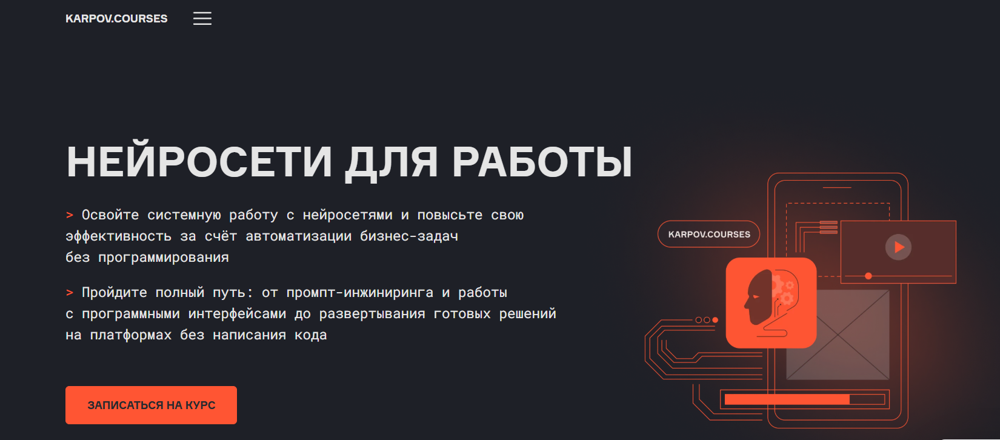
Особенности:
Обучение построено вокруг практического применения ИИ в рабочих и бизнес-задачах. Студенты начинают с основ искусственного интеллекта, машинного обучения и больших языковых моделей, а затем переходят к эффективным запросам, API, чат-ботам и автоматизации процессов. В программе разбираются популярные нейросети и сервисы, включая ChatGPT, Gemini, Claude, DeepSeek, YandexGPT и GigaChat. Участники учатся применять нейросети для генерации контента, анализа информации, подготовки отчётов и решения рутинных задач. Отдельная часть посвящена созданию Telegram-ботов и подключению языковых моделей к внешним источникам данных. Для автоматизации рабочих процессов используются инструменты No-Code и Low-Code, в том числе Make и n8n. Студенты осваивают создание ИИ-агентов с памятью, базой знаний, логикой принятия решений и автоматическим запуском по расписанию или событиям. Практические задания связаны с реальными задачами маркетинга, аналитики данных, управления персоналом, менеджмента и клиентского сервиса. Завершающие темы помогают разобраться в вопросах безопасности, ограничениях и ответственном внедрении ИИ в процессы компании.
Чему учатся студенты:
Преподаватели:
Преимущества:
Отзывы учеников:
В отзывах о KARPOV.COURSES студенты чаще всего положительно оценивают большое количество практики, понятную структуру материалов, сильный состав преподавателей и поддержку кураторов. Среди преимуществ также называют прикладные задания, возможность работать с реальными задачами и удобный формат обучения. Пользователи отмечают, что материалы помогают систематизировать знания, а практические проекты дают опыт, который можно применять в работе. В отзывах отдельно встречаются положительные оценки объёма программы, качества учебных материалов и возможности получить ответы на вопросы по сложным темам.
Перейти на официальный сайт курса12. Нейросети для HR — Академия Эдюсон

Особенности:
Программа создана в 2026 году с учетом современных технологий и активно применяется в сфере HR. Студенты изучают применение искусственных интеллектов для автоматизации рутинных задач: от подбора до отчетности. В курс входят модули о рекрутинге, адаптации сотрудников, аналитике данных и генерации контента. Обучение строится на практике: каждый слушатель получает шаблоны, готовые решения и поддержку куратора 365 дней в году. Курс помогает освоить инструменты и освоить навыки, которые используют нейросети и применяют ИИ в реальных HR-процессах. В результате студенты научатся использовать машинное обучение и моделях машинного обучения для повышения KPI и эффективности команд. Доступ к материалам остается навсегда, а обновления программы бесплатны.
Чему учатся студенты:
Преподаватели:
Преимущества:
Отзывы учеников:
Студенты отмечают, что обучение помогает быстро научиться применять ИИ в работе. Особенно ценят практические задания и обратную связь от кураторов. Многие подчеркивают удобство гибкого графика и доступность объяснений даже для тех, кто только начинает изучать нейронные сети. В отзывах часто упоминается рост продуктивности и появление новых инструментов для решения рабочих задач.
Перейти на официальный сайт курса13. Нейросети для руководителей — Сити Бизнес Скул - City Business School

Особенности:
Программа разработана для тех, кто хочет освоить базовые навыки применения искусственного интеллекта в бизнесе без необходимости изучать языки программирования или сложные алгоритмы машинного обучения. Участники курса научатся использовать популярные нейросети для оптимизации внутренних процессов, внедрения автоматизации и повышения эффективности работы команды. Обучение строится на практическом применении технологий: от анализа данных до генерации контента и моделирования сценариев. Студенты получают доступ к базе ИИ-инструментов и пошаговым инструкциям, что позволит внедрить ИИ в рабочие процессы сразу после прохождения обучения. Курс включает реальные кейсы, практические задания и проекты, что помогает закрепить навыки и применить их в повседневных задачах. С помощью искусственных интеллектов участники научатся экономить время, снижать издержки и принимать более точные управленческие решения.
Чему учатся студенты:
Преподаватели:
Преимущества:
Отзывы учеников:
Студенты отмечают практическую направленность программы, доступное объяснение сложных тем и ценность реальных кейсов. Чаще всего выделяют пользу от практических заданий, возможность освоить инструменты без сложностей и поддержку преподавателей. Многие подчеркивают, что курс помогает научиться эффективно использовать ИИ в бизнесе и получать быстрые результаты уже в процессе обучения.
Перейти на официальный сайт курса14. Нейросети для работы — АНО ДПО «Образовательные технологии Яндекса» Практикум

Особенности:
Программа обновляется к каждому запуску. Учеба строится на практических кейсах, которые связаны с реальными задачами в профессиях. Студенты осваивают инструменты популярных нейросетей, включая ChatGPT, Claude, YandexGPT и другие. В ходе прохождения обучения формируется промпт-бук, который остается как рабочий инструмент. Участники получают практические навыки применения искусственных интеллектов в бизнесе, маркетинге, аналитике и управлении. Поддержка кураторов и наставников делает процесс обучения комфортным и результативным. Доступ к учебным материалам возможен в любое удобное время, а все воркшопы можно пересматривать в записи. Наличие бесплатного вводного модуля позволяет заранее оценить формат курса.
Чему учатся студенты:
Преподаватели:
Преимущества:
Отзывы учеников:
Студенты отмечают удобный формат, практическую направленность и поддержку наставников. Многие подчеркивают ценность реальных проектов и то, что курс помогает освоить навыки, которые сразу применяют в работе. Отдельно выделяют помощь карьерного центра и доступные объяснения сложных тем.
Перейти на официальный сайт курса15. Нейросети для руководителей — Яндекс Практикум
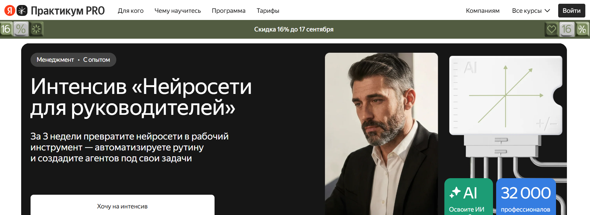
Особенности:
Программа построена вокруг практического применения нейросетей в управлении и бизнесе и не требует технического бэкграунда. Участники начинают использовать ИИ уже с первого воркшопа и выполняют задания, приближенные к реальным рабочим ситуациям. Вместо большого объема теории обучение включает короткие теоретические блоки и практику продолжительностью около 1–1,5 часа. Слушатели работают с ChatGPT, Claude, Perplexity, Алисой AI, n8n, Cursor, Яндекс AI Studio, NotebookLM, Notion AI и другими популярными инструментами. Программа помогает освоить современные подходы к анализу информации, подготовке документов, генерации идей и автоматизации задач. На продвинутом уровне участники переходят к прототипированию, вайбкодингу и созданию ИИ-агентов. Такой формат позволяет не просто изучить возможности искусственного интеллекта, но и получить практические навыки внедрения ИИ в рабочие процессы. В ходе обучения создаются готовые материалы и инструменты, которые можно адаптировать под задачи компании. Максимальный тариф дополняет программу двумя конфиденциальными встречами с экспертом, на которых можно разобрать конкретные вопросы внедрения нейросетей.
Чему учатся студенты:
Преподаватели:
Преимущества:
Отзывы учеников:
В отзывах о Яндекс Практикуме студенты чаще всего положительно оценивают большое количество практических заданий, понятную структуру материалов, реальные кейсы и поддержку команды обучения. Пользователи также отмечают удобный онлайн-формат, подробную обратную связь и возможность применять полученные знания в рабочих задачах. Среди плюсов регулярно упоминаются практическая направленность, помощь наставников, комфортная организация обучения и доступная подача сложных тем. При этом впечатления зависят от конкретной программы: встречаются замечания по поводу высокой нагрузки, отдельных устаревающих материалов и качества поддержки на некоторых курсах. В целом учащиеся ценят прикладной подход, большое количество практики и возможность использовать полученные знания в работе.
16. Искусственный интеллект и нейросети в работе бизнеса — АНО «НИУДПО имени К. Д. Ушинского»
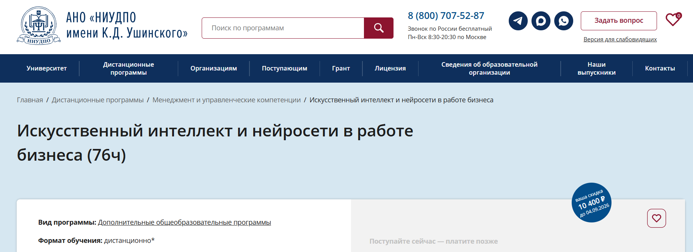
Особенности:
Обучение полностью проходит онлайн, поэтому его можно совмещать с работой и другими задачами. Теоретические материалы представлены в электронном формате, а практические задания помогают освоить навыки на профессиональных ситуациях. Студенты работают с темами генеративных нейросетей и изучают возможности применения искусственного интеллекта в бизнесе. Учебный план охватывает основы генеративных моделей, алгоритмы генерации контента и обзор популярных платформ для работы с текстовыми нейросетями. Отдельная часть программы посвящена использованию ИИ для маркетинга, продаж и других бизнес-задач. В процессе обучения участники получают обратную связь от преподавателей и проходят тестирования по разделам. Записи вебинаров доступны ещё 90 дней после окончания курса, а материалы программы после успешного завершения обучения сохраняются бессрочно. Студенты также получают доступ к библиотеке вебинаров и электронной университетской библиотеке. Такой формат помогает научиться эффективно использовать современные инструменты и автоматизировать часть рутинных процессов без отрыва от основной работы.
Чему учатся студенты:
Преподаватели:
Преимущества:
Отзывы учеников:
В отзывах об АНО «НИУДПО имени К. Д. Ушинского» студенты часто отмечают удобный дистанционный формат, возможность совмещать обучение с работой, понятную структуру материалов и гибкий график. Среди других положительных сторон называют практическую направленность занятий, полезные дополнительные материалы, вебинары, удобный личный кабинет и обратную связь от преподавателей. В отдельных отзывах пользователи также положительно оценивают возможность оплачивать обучение частями. Многие авторы отзывов рекомендуют обучение и положительно оценивают организацию учебного процесса.
Перейти на официальный сайт курсаТОП-7 онлайн-курсов по AI-агентам и Нейросотрудникам
Отличительные преимущества каждой дистанционной программы обучения по AI-агентам и Нейросотрудникам
| № | Курс и школа | Отличительные преимущества | |
|---|---|---|---|
| 🥇 | Нейросети и нейросотрудники для бизнеса — Академия Эдюсон | Практическая ориентация именно на бизнес: 15+ нейросетей, 17+ заданий и 10+ готовых нейросотрудников для маркетинга, аналитики и стратегии. Среди заметных отличий — поддержка куратора в течение 365 дней, бессрочный доступ к материалам и обновлениям, а на тарифе PRO — ИИ-агенты, Telegram-боты и автоматизация через n8n. | Перейти |
| 🥈 | ИИ-агенты — Нетология | Курс сфокусирован на полном цикле создания автономного ИИ-помощника: от выбора задачи и проектирования архитектуры до тестирования и пилотного внедрения. Выделяется объёмом практики — 62 часа, работой с кейсами маркетинга, аналитики, HR и управления, а также гибкостью обучения с возможностью переносить дедлайны и приостанавливать курс. | Перейти |
| 🥉 | ИИ-автоматизация: проектирование и запуск агентных систем — KARPOV.COURSES | Наиболее технически глубокая программа в подборке: API, MCP-коннекторы, RAG, базы знаний, облачное и локальное развёртывание, контроль качества и обработка ошибок. Обучение строится вокруг собственного рабочего проекта или учебного кейса и охватывает весь путь до пилотного запуска агентной системы. По итогам предусмотрен диплом ИТМО о профессиональной переподготовке. | Перейти |
| 4 | Нейросети с нуля для жизни и работы — Skillbox | Самый широкий охват универсальных AI-инструментов: более 40 нейросетей для текстов, изображений, презентаций, аудио, видео, данных и автоматизации. Курс рассчитан на новичков, включает восемь проектов, создание собственного ИИ-помощника и автоматизацию через n8n. Отдельное преимущество — заявленная гарантия трудоустройства или возврата денег с учётом условий предложения. | Перейти |
| 5 | ИИ-агенты и n8n — Бруноям | Наиболее выраженный фокус на n8n и прикладных интеграциях: Telegram, Google Sheets, Airtable, API, RAG, векторные базы, MCP, Supabase и self-hosted-развёртывание через Docker. В программе более 30 практических заданий и итоговый проект для портфолио. На тарифах с поддержкой предоставляются необходимые инструменты, поэтому отдельные платные подписки для прохождения обучения не требуются. | Перейти |
| 6 | ИИ-агенты и автоматизация — Яндекс Практикум | Компактная программа с созданием собственного рабочего ИИ-агента на no-code-платформе n8n. В отличие от более базовых курсов, рассматривает RAG, векторные базы, API, защиту от prompt-инъекций, наблюдаемость и корпоративную безопасность. На расширенных тарифах дополнительно изучаются мультиагентные системы, а бесплатная часть позволяет оценить формат до покупки. | Перейти |
| 7 | Ноль рутины. ИИ ассистенты для вашего бизнеса — Русская Школа Управления | Самая короткая и концентрированная программа подборки — 16 академических часов с акцентом на быстрый перенос навыков в текущую работу. Практика ориентирована на задачи руководителей и бизнеса: почту, календарь, деловую коммуникацию, презентации, анализ данных и звонков продаж. По окончании выдаётся удостоверение о повышении квалификации с внесением сведений в ФРДО. | Перейти |
1. 🏆 Нейросети и нейросотрудники для бизнеса — Академия Эдюсон
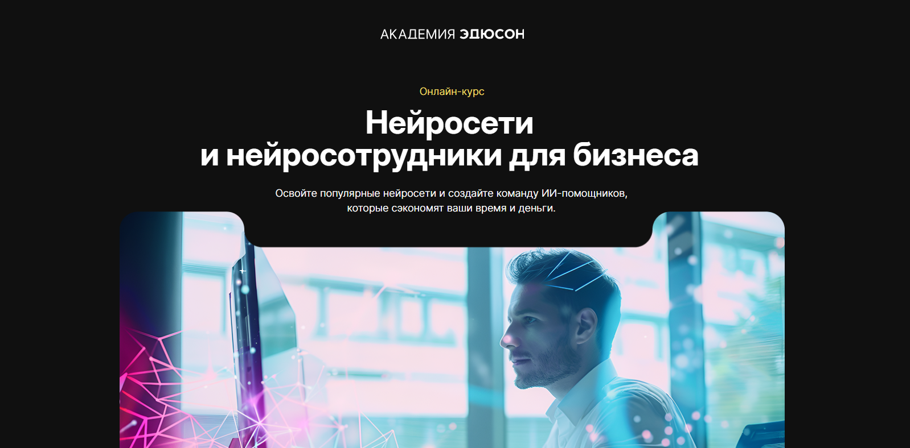
Особенности:
Программа построена вокруг практического применения нейросетей в бизнесе, а не только знакомства с базой нейросети. Студенты осваивают ИИ-помощников с заданными ролями и инструкциями, благодаря которым нейросотрудник может стабильнее выполнять типовые задачи. В обучение входят инструменты для маркетинга, аналитики, запуска продукта, создания контента, продаж и развития бизнеса. Отдельный блок посвящён созданию собственных нейросотрудников в ChatGPT и поиску готовых помощников для решения ваших задач. Студенты работают с ChatGPT, GigaChat, DeepSeek, Grok и другими платформами, получают знания о текстовых и графических нейросетях. На практике разбираются бизнес-планы, анализ конкурентов, посадочные страницы, контент-планы, рекламные материалы, воронки и скрипты для работы с клиентами. Тариф PRO расширяет программу темами ИИ-агентов, ботов, автоматизации процессов через n8n и применения голосового нейропродавца. Доступ к материалам и обновлениям курса заявлен как бессрочный, поэтому знаниями и новыми инструментами можно пользоваться и после завершения обучения. Такой подход позволяет сотруднику быстрее обрабатывать данные, создавать материалы и внедрять искусственный интеллект в реальные процессы компании.
Чему учатся студенты:
Преподаватели:
Преимущества:
Отзывы учеников:
В отзывах об Академии Эдюсон студенты часто относят к плюсам понятную подачу материала, возможность учиться в своём темпе, практические задания и работу с реальными задачами. Пользователи также положительно оценивают поддержку кураторов, актуальность части материалов и возможность применять полученные знания непосредственно в работе. В отзывах о программах по ИИ встречаются отдельные упоминания реальных кейсов по анализу процессов с помощью нейросетей и пользы инструментов для бизнеса. Также отмечаются пожизненный доступ к курсам и обновлениям, а среди отзывов о нейросетях встречаются положительные оценки практической направленности обучения. При этом отдельные учащиеся указывают на технические сбои, базовый уровень части материала для опытных пользователей и необходимость обновлять некоторые учебные блоки.
2. 🏆 ИИ-агенты — Нетология
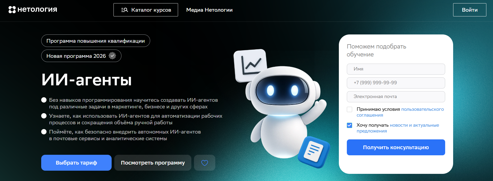
Особенности:
Программа рассчитана на работу с искусственным интеллектом без обязательных навыков программирования и помогает перейти от обычного использования нейросетей к созданию автономных помощников. Студенты разбираются, как система на базе нейросети получает задачу, использует данные и знания, выполняет действия и передаёт результат во внешние сервисы. В учебный процесс включена сборка рабочих решений для маркетинга, аналитики, рекрутинга и управленческих задач. Особое внимание уделяется автоматизации процессов, которая позволяет уменьшить объём ручной работы и повысить эффективность сотрудников. Будущего нейросотрудника можно настроить для анализа информации, подготовки текстов, обработки клиентских отзывов, составления контент-плана или работы с KPI. Отдельный блок посвящён безопасной интеграции с данными и настройке доступов. Студенты проходят путь от выбора задачи до проектирования, сборки, тестирования и подготовки решения к пилотному внедрению в бизнес. Практическая часть включает сценарии, связанные с клиентами, маркетингом, продажами, аналитикой и первичным отбором новых сотрудников. Обучение завершается проектом-симулятором внедрения, где полученные знания применяются к конкретному бизнес-сценарию.
Чему учатся студенты:
Преподаватели:
Преимущества:
Отзывы учеников:
В отзывах о Нетологии студенты чаще всего относят к плюсам понятную и логичную структуру материалов, большое количество практики, профессионализм преподавателей и полезную обратную связь. Также положительно оценивают удобство образовательной платформы, возможность отслеживать прогресс, поддержку координаторов и гибкость сроков выполнения домашних заданий. Учащиеся отмечают, что полученные знания можно применять в рабочих задачах, а сочетание теории и практики помогает лучше освоить новые технологии. В отзывах отдельно встречаются положительные оценки доступной подачи информации, сопровождения во время обучения и возможности совмещать занятия с основной работой.
3. 🏆 ИИ-автоматизация: проектирование и запуск агентных систем — KARPOV.COURSES
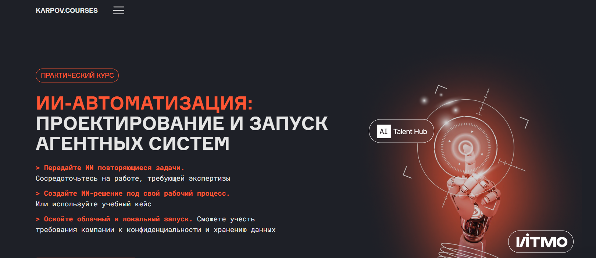
Особенности:
Программа посвящена не отдельным приемам работы в нейросетях, а проектированию процессов, в которых ИИ самостоятельно получает данные, запускает действия и передает сотруднику готовый результат. Студенты учатся определять, какую задачу можно передать искусственному интеллекту, а где необходимо сохранить человеческий контроль. Отдельное внимание уделяется работе с базой знаний: документами, таблицами, внутренними регламентами и другой информацией компании. Участники собирают RAG-ассистента и агентную систему, которая может самостоятельно запускать процессы по расписанию или при наступлении определенного события. Через API и MCP-коннекторы ИИ подключается к реальным рабочим сервисам, что позволяет автоматизировать обработку данных и цепочки действий. Решения можно разворачивать в облаке или локально, если правила компании ограничивают передачу данных внешним платформам. Практика строится вокруг вашей рабочей задачи, а при отсутствии проекта или ограничениях, связанных с NDA, предоставляется учебный кейс. На занятиях рассматриваются проверки качества, обработка ошибок, мониторинг и точки контроля, чтобы работа нейросотрудника оставалась управляемой. Для полноценного обучения потребуются Claude Max, Codex или другой инструмент сопоставимого уровня.
Чему учатся студенты:
Преподаватели:
Преимущества:
Отзывы учеников:
Отзывы о KARPOV.COURSES в целом чаще всего выделяют практическую направленность обучения, большой объем полезного материала, профессиональный уровень преподавателей и возможность применять полученные знания в рабочих задачах. Студенты также отмечают поддержку во время обучения, понятное объяснение сложных тем, работу с прикладными задачами и помощь преподавателей или менторов. Среди положительных моментов встречаются высокая насыщенность программы практикой, актуальность материалов и опыт преподавателей, работающих в крупных компаниях и исследовательских проектах.
Перейти на официальный сайт курса4. Нейросети с нуля для жизни и работы — Skillbox
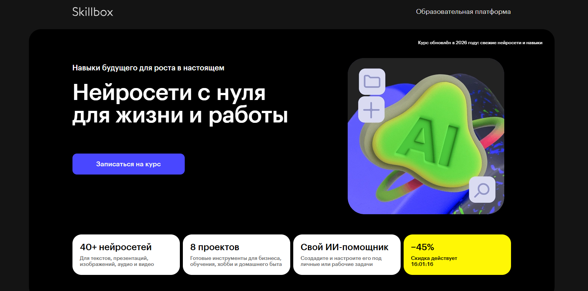
Особенности:
Программа обновлена и включает более 40 нейросетей и AI-инструментов для работы с текстами, изображениями, презентациями, аудио и видео. Студенты начинают с базы нейросетей и постепенно переходят к практическому применению ИИ без обязательных знаний программирования. Обучение помогает выбрать подходящий сервис под конкретную задачу, правильно формулировать запросы и проверять информацию, которую выдают модели. Отдельный блок посвящён работе с данными: студенты учатся искать сведения, сокращать документы, собирать данные в таблицы и настраивать их обработку. В программе есть автоматизация процессов через n8n, таблицы и мессенджеры, благодаря чему ИИ можно использовать как нейросотрудника для выполнения повторяющихся операций. Студенты создают собственного ИИ-помощника, к которому можно подключать материалы и знания для решения личных или рабочих задач. Практика охватывает создание текстов, презентаций, изображений, аудиокниг и видео с цифровыми аватарами. Полученные навыки позволяют применять искусственный интеллект в работе с клиентами, контентом, бизнесом и повседневными делами. В финале одна из выполненных работ оформляется как готовый кейс для портфолио.
Чему учатся студенты:
Преподаватели:
Преимущества:
Отзывы учеников:
В отзывах о Skillbox студенты часто отмечают понятную подачу материала, наличие практических заданий, поддержку кураторов и возможность применять полученные знания в реальных рабочих задачах. На официальной странице отзывов Skillbox указано, что 97% пользователей высоко оценивают материалы курсов, а 92% положительно оценивают общение с куратором. В независимых отзывах о направлении нейросетей также встречаются положительные оценки практических проектов и автоматизации: учащиеся описывают создание собственных ИИ-ассистентов, работу с клиентскими данными и экономию времени при выполнении рутинных процессов.
Перейти на официальный сайт курса5. ИИ-агенты и n8n — Бруноям
Особенности:
Программа строится вокруг практической работы с платформой n8n и позволяет разобраться в нейросетях без обязательного опыта программирования. Студенты создают ботов и ИИ-агентов, которые способны выполнять задачи, взаимодействовать с Telegram, таблицами, почтой и внешними сервисами. Отдельное внимание уделяется обработке данных, подключению внешних API и работе с базами данных. Для повышения точности ответов разбираются RAG, векторные базы и методы семантического поиска информации. Полученные знания помогают автоматизировать процессы, которые обычно требуют постоянного участия сотрудника, и применять нейросотрудников в рабочих сценариях. Программа затрагивает JavaScript, Python, Docker, GPT, MCP, Google Таблицы, Airtable и Supabase, поэтому студенты получают представление сразу о нескольких технологиях автоматизации. В финальных модулях участники создают комплексного нейросотрудника для управления задачами, контактами и почтой, а также осваивают самостоятельное развёртывание n8n на сервере. Практика включает реальные сценарии для бизнеса, обработку информации, аналитику данных и автоматизацию маркетинговых процессов. Инструменты n8n и доступ к языковым моделям на время обучения предоставляются студентам на тарифах с поддержкой, что позволяет сосредоточиться на навыках и эффективности готовых решений.
Чему учатся студенты:
Преподаватели:
Преимущества:
Отзывы учеников:
В отзывах о Бруноям студенты чаще всего относят к плюсам понятную структуру уроков, практическую направленность, работу преподавателей и кураторов, удобство учебной платформы и обратную связь. Отдельно встречаются положительные оценки курсов по нейросетям: ученики отмечают системную подачу материала, работу с реальными задачами, аналитику данных и возможность сразу применять полученные знания. Среди других часто упоминаемых преимуществ — актуальная информация, понятные объяснения для начинающих, помощь со стороны преподавателей и доступ к материалам. При этом отзывы о школе неоднородны: на независимых площадках есть и критические оценки отдельных программ, связанные с объёмом материала или скоростью поддержки.
6. ИИ-агенты и автоматизация — Яндекс Практикум
Особенности:
Программа построена вокруг создания ИИ-агентов под реальную рабочую задачу, а не только изучения нейросетей в теории. Студенты проектируют процессы агента, подключают внешние сервисы, базы данных и мессенджеры, а затем настраивают решение под свои источники данных. Для сборки используется n8n, поэтому сотруднику не требуется писать программный код. Отдельный блок посвящён векторным базам, технологии RAG, системным промптам и защите от инъекций в запросы. Такой подход позволяет использовать искусственный интеллект для анализа обращений клиентов, обработки интервью, подготовки документов и контроля изменений в метриках. На расширенных тарифах студенты изучают мультиагентные системы, где несколько нейросотрудников могут разделять обязанности и маршрутизировать запросы. Полученные навыки подходят бизнесам, которые хотят автоматизировать повторяющиеся процессы и выстроить работу с информацией без постоянной ручной обработки. Курс также разбирает безопасность, корпоративные ограничения и внедрение агентов с учётом требований компании. В результате специалист получает собственного ИИ-агента, которого можно перенести в свой аккаунт и адаптировать под вашу рабочую среду.
Чему учатся студенты:
Преподаватели:
Преимущества:
Отзывы учеников:
В отзывах о Яндекс Практикуме студенты часто называют плюсами понятную подачу информации, переход от простых тем к более сложным, большое количество практики и удобный онлайн-формат. Также положительно оценивают помощь наставников и кураторов, обратную связь по заданиям и возможность закреплять знания на проектах. В отзывах пользователи отдельно отмечают практические задания, поддержку команды, комфортный темп отдельных спринтов и быструю проверку работ.
Перейти на официальный сайт курса7. Ноль рутины. ИИ ассистенты для вашего бизнеса — Русская Школа Управления
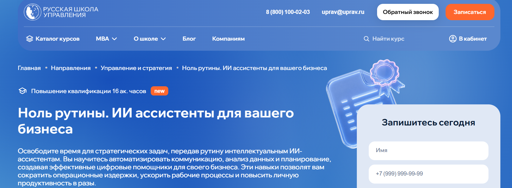
Особенности:
Программа построена вокруг практического применения нейросетей в рабочих процессах и бизнесе. Участники разбираются, как передать интеллектуальным ассистентам обработку почты, планирование, анализ данных и часть коммуникации с клиентами. Отдельный блок посвящён промпт-инжинирингу: специалисты учатся формулировать задачи для ИИ и получать информацию в подходящем для работы виде. Практика включает создание лендингов, презентаций, системы фильтрации электронной почты и автоматического анализатора звонков менеджеров по продажам. Для создания ИИ-ассистентов используется платформа n8n, на базе которой рассматривается автоматизация календаря и других процессов. Студенты также знакомятся с современными ИИ-агентами, мультиагентами и оркестраторами. Полученные инструменты позволяют сократить объём ручной обработки данных и быстрее решать повторяющиеся задачи без привлечения нейросотрудника или расширения штата. Большое внимание уделяется работе с текстами в нейросетях: деловой переписке, внутренним объявлениям, продающим сообщениям, работе с возражениями и информированию об организационных изменениях. Практический подход помогает использовать новые технологии непосредственно в рабочих процессах компании и повышать их эффективность.
Чему учатся студенты:
Преподаватели:
Преимущества:
Отзывы учеников:
В отзывах о Русской Школе Управления ученики чаще всего положительно оценивают преподавателей-практиков, понятную и структурированную подачу информации, актуальность материалов и большое количество прикладных примеров. Студенты отмечают живой формат занятий, интерактивные задания и возможность разобрать реальные рабочие задачи. Среди плюсов дистанционного обучения также называют доступ к записям и дополнительным материалам, поддержку сотрудников школы и возможность получить ответы на возникающие вопросы. На независимых площадках преподавательский состав и практическая направленность регулярно входят в число наиболее заметных достоинств РШУ.
Перейти на официальный сайт курсаТОП-10 онлайн-курсов по Вайб-кодингу
Отличительные преимущества каждой дистанционной программы обучения по Вайб-кодингу
| № | Курс и школа | Отличительные преимущества | |
|---|---|---|---|
| 🥇 | Вайб-кодинг — Академия Эдюсон | До 10 проектов для портфолио, пожизненный доступ к материалам и обновлениям, личный куратор на 365 дней, работа сразу с Cursor AI, Lovable, GigaCode, Supabase, n8n и API нейросетей. | Перейти |
| 🥈 | Вайб-кодинг для бизнеса — Академия Эдюсон | Специализация именно на бизнес-задачах: 70% практики, 15 проектов, создание ИИ-сотрудника, интеграции с 1С, amoCRM, Битрикс24 и Telegram, а также блоки по безопасности, персональным данным и юридическим рискам. | Перейти |
| 🥉 | Вайб-кодинг для заработка — Skillbox | Около 200 часов практики против 17 часов теории, 10 проектов в портфолио, изучение backend, Python, Docker и Yandex Cloud, а также отдельный карьерный блок по резюме, откликам и собеседованиям. | Перейти |
| 4 | Вайб-кодинг для разработчиков — Skillbox | Курс специально для действующих разработчиков: интеграция ИИ в IDE и существующий стек, генерация и ревью кода, тестирование, рефакторинг, базы данных, Docker, MCP и повышенное внимание к безопасности и конфиденциальности. | Перейти |
| 5 | Вайб-кодинг — Нетология | До трёх собственных проектов за три месяца, сочетание AI-кодинга и no-code, работа с Cursor, ChatGPT, AppMaster, Tilda, YandexGPT и GigaChat, живые вебинары и возможность приостановить обучение до шести месяцев. | Перейти |
| 6 | Вайб-кодинг на Claude Code — Хекслет | Наиболее узкая специализация на Claude Code: агентная разработка, CLAUDE.md, контекст-инжиниринг, субагенты, скиллы и хуки. Есть четыре живых воркшопа, Git/GitHub, API, вебхуки и отдельный блок по безопасности ИИ-агентов. | Перейти |
| 7 | Вайб-кодинг и автономные агенты — Зерокодер | Акцент на автономных агентах и более техническом развёртывании проектов: MCP-серверы, локальные модели через Ollama, VPS, API, обработка PDF/CSV/XLSX, а в расширенной программе — GitHub и Docker. Есть поддержка Карьерного центра. | Перейти |
| 8 | Курс «Вайбкодинг» — Яндекс Практикум | Около 70% программы занимает практика, минимум три полноценных проекта — лендинг, CRM и сервис бронирования. Проекты проходят ревью, предусмотрены воркшопы и QA-сессии, а на старших тарифах — бизнес-боты, ИИ-агенты и индивидуальная работа с наставником. | Перейти |
| 9 | Вайбкодинг: автоматизация рабочих задач — Бонни и Слайд | Ориентация на автоматизацию повседневной работы менеджеров, аналитиков, финансистов, HR и маркетологов. За четыре недели создаются шесть рабочих инструментов; каждое задание проверяет эксперт, а отдельное внимание уделено GDPR, ФЗ-152 и корпоративной безопасности. | Перейти |
| 10 | Онлайн-курсы ИИ-программирования (вайб-кодинг) — Международная школа профессий | Короткая программа на пять недель с живым общением с наставниками. Помимо AI-кодинга даёт базовое понимание HTML, CSS, JavaScript, Python и SQL и практику с Cursor, GitHub, Vercel, Supabase, API, базами данных и Telegram-ботами. | Перейти |
1. 🏆 Вайб-кодинг — Академия Эдюсон
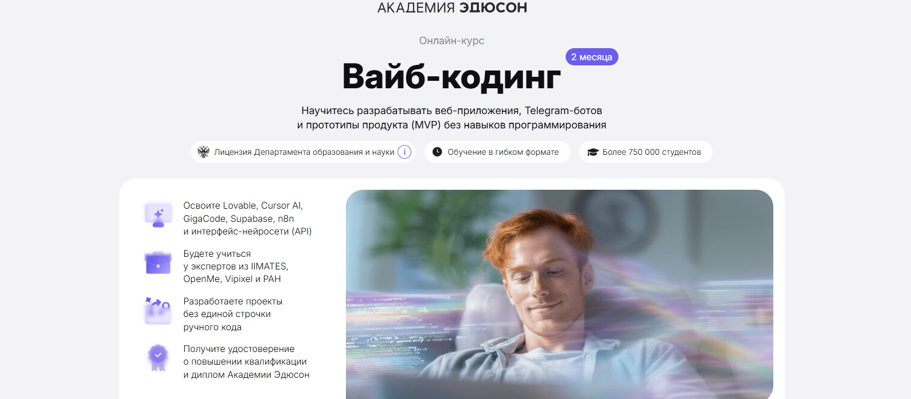
Особенности:
Обучение строится вокруг подхода, при котором человек ставит задачу, а ИИ помогает генерировать код и проходить основные этапы разработки. Студенты осваивают Cursor AI, Lovable, GigaCode, Supabase, n8n и работу с API нейросетей. В процессе программирования модели помогают создавать и улучшать код, тестировать решения и находить ошибки. Большая часть подготовки связана с практикой: учащиеся работают над приложениями, автоматизацией и другими проектами, которые подходят для портфолио. Программа показывает, как создавать продукт от идеи и прототипа MVP до дебаггинга, деплоя и дальнейшей поддержки. Отдельное внимание уделено ИТ-базе, чтобы студент понимал процессы фронтенд- и бэкенд-разработки, даже если раньше не работал программистом. Знания применяются в профессиональных и бизнес-задачах: маркетологу такой подход помогает быстрее проверять гипотезы, а разработчику — передавать ИИ рутинные операции и больше времени уделять сложным задачам. Для работы используются разные нейросети и инструменты, поэтому учащиеся понимают, какие решения максимально подходят для конкретной задачи. В программу входят проекты с реальными данными, веб-приложениями и автоматизированными процессами, а личный куратор оказывает поддержку в течение 365 дней.
Чему учатся студенты:
Преподаватели:
Преимущества:
Отзывы учеников:
В отзывах об Академии Эдюсон студенты чаще всего относят к плюсам возможность учиться в собственном темпе, удобный формат занятий, практические задания, актуальность материалов и доступ к курсам после завершения обучения. Также встречаются положительные оценки работы кураторов, тренажёров и большого количества примеров из практики. Учащиеся отдельно отмечают обучение без жёстких дедлайнов, качество содержания и возможность сразу применять полученные знания в рабочих задачах.
Перейти на официальный сайт курса2. 🏆 Вайб-кодинг для бизнеса — Академия Эдюсон
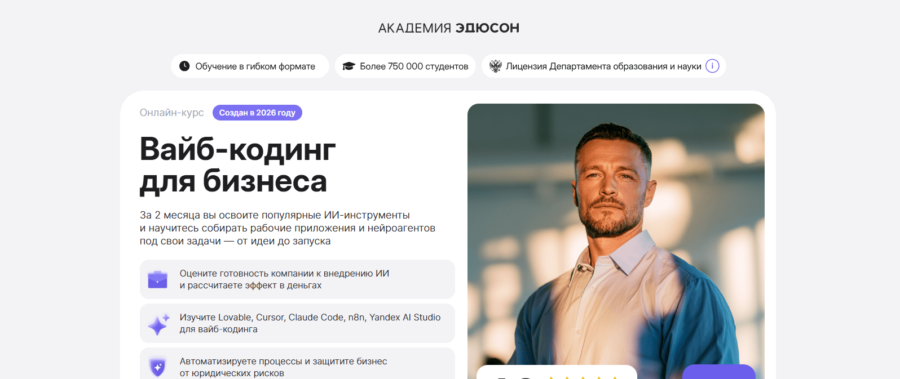
Особенности:
Программа построена вокруг практического применения ИИ в бизнесе, а не вокруг изучения программирования ради программирования. Студенты формулируют задачу обычным языком, а нейросети и специализированные модели генерируют код, который затем проверяют, тестируют и дорабатывают. Такой подход помогает понять весь процесс программирования даже тем, кто раньше не работал разработчиком. В программу включены Lovable, Cursor, Claude Code, n8n и Yandex AI Studio, поэтому учащиеся используют несколько подходов к созданию приложений и автоматизации. Отдельные блоки посвящены подключению корпоративных данных, CRM, «1С», Telegram и баз знаний к ИИ-агентам. Студенты создают 15 проектов для своего бизнеса и разбираются, какие задачи можно решить своими силами, а для каких сложных проектов нужна команда программистов. Большое внимание уделяется тестированию, поиску ошибок, защите данных и юридическим аспектам использования нейросетей. В итоговой работе студент создаёт ИИ-сотрудника под свою задачу и вместе с ментором готовит проект к запуску.
Чему учатся студенты:
Преподаватели:
Преимущества:
Отзывы учеников:
В отзывах об Академии Эдюсон студенты чаще всего относят к плюсам возможность проходить курсы в своём темпе, удобную платформу, большое количество практики, тестов и дополнительных материалов, а также поддержку кураторов. Пользователи отмечают понятную последовательность тем, возможность совмещать обучение с работой и доступ к обновлениям после окончания программы. В отзывах о направлениях программирования отдельно хвалят практические кейсы, постепенное усложнение материала и помощь наставников при выполнении сложных задач. Среди преимуществ также отмечают обучение без привязки к расписанию, пожизненный доступ к материалам и обновлениям, а также стоимость по сравнению с предложениями других школ.
Перейти на официальный сайт курса3. 🏆 Вайб-кодинг для заработка — Skillbox
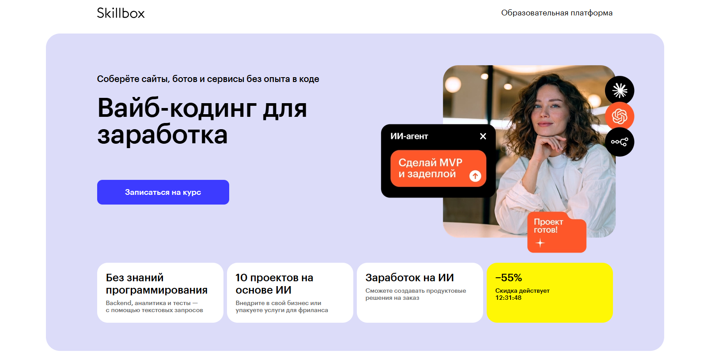
Особенности:
Программа построена вокруг практического применения ИИ для создания сайтов, ботов, ассистентов, автоматизаций и других рабочих продуктов. Студенты не ограничиваются простыми запросами к нейросетям, а проходят основные процессы разработки: от постановки задачи до проверки кода, тестирования и подготовки проекта к запуску. ИИ-модели помогают генерировать код, однако отдельное внимание уделяется проверке результата и поиску ошибок. В процессе программирования участники работают с Claude Code, ChatGPT, Python, n8n, Docker, Yandex Cloud и другими инструментами. Практика занимает значительно больше времени, чем теория: на сайте указано 200 часов практических занятий и 17 часов теоретических материалов. За время обучения студенты создают 10 проектов, которые можно использовать как основу профессионального портфолио. Среди работ есть персональный ИИ-ассистент, сайт, боты, бизнес-агент, автоматизированные процессы для работы с контентом и веб-сервис. Подходы курса подходят как человеку без опыта разработки, так и специалисту, который уже использует нейросети и хочет решать более сложные задачи. Куратор разбирает выполненные работы и помогает улучшать проекты, поэтому студенты получают поддержку не только при изучении инструментов, но и при практическом применении новых знаний.
Чему учатся студенты:
Преподаватели:
Преимущества:
Отзывы учеников:
В отзывах о Skillbox ученики часто выделяют понятную и последовательную подачу материала, возможность проходить программы в удобном темпе, большое количество практики и подробную обратную связь от кураторов. В отзывах о курсах программирования отдельно отмечают разбор кода, помощь проверяющих экспертов и актуальность учебных материалов. На других площадках студенты также положительно оценивают поддержку и возможность получать практический опыт по ходу обучения.
Перейти на официальный сайт курса4. Вайб-кодинг для разработчиков — Skillbox
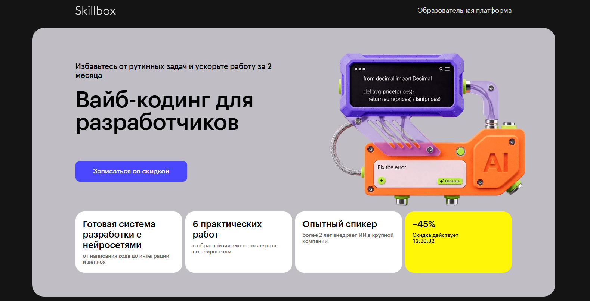
Особенности:
Программа построена вокруг практического использования ИИ в разработке, а не слепого копирования результатов, которые генерируют модели. Студенты учатся сохранять контроль над кодом, проверять решения на наличие ошибок, уязвимостей и спорных архитектурных решений. За два месяца участники проходят путь от основ промпт-инжиниринга до интеграции ИИ в IDE, базы данных, тестирование, рефакторинг и процессы деплоя. В учебных задачах нейросети помогают генерировать код, документацию и тесты, но итоговое решение оценивается с позиции разработчика. Отдельное внимание уделяется конфиденциальности кода, ограничениям моделей, безопасной работе с данными и ответственности при использовании ИИ. Студенты создают бэкенд и фронтенд веб-сервиса FlowTasks, работают с API, базой данных и Docker, поэтому подготовка связана с реальными этапами разработки сложных приложений. Программа включает работу с Cursor, Visual Studio, Docker Desktop, Ollama и GigaIDE, а также знакомство с агентами и MCP. Полученные знания помогают встроить ИИ в уже используемые программы, фреймворки, библиотеки и рабочие процессы без необходимости полностью менять привычный порядок работы. Финальный веб-проект можно показать в портфолио и использовать как основу для будущих профессиональных проектов.
Чему учатся студенты:
Преподаватели:
Преимущества:
Отзывы учеников:
В отзывах о Skillbox студенты часто относят к преимуществам возможность проходить обучение в удобном темпе, понятную подачу материала и поддержку кураторов. Пользователи курсов программирования отдельно отмечают подробную обратную связь по коду, последовательное изучение тем и практические задания. Также встречаются положительные оценки интерфейса платформы, общения с кураторами и возможности совмещать занятия с другими делами. При этом в отзывах указывают, что обучение требует заметного количества времени, а часть дополнительной информации иногда приходится искать самостоятельно.
Перейти на официальный сайт курса5. Вайб-кодинг — Нетология
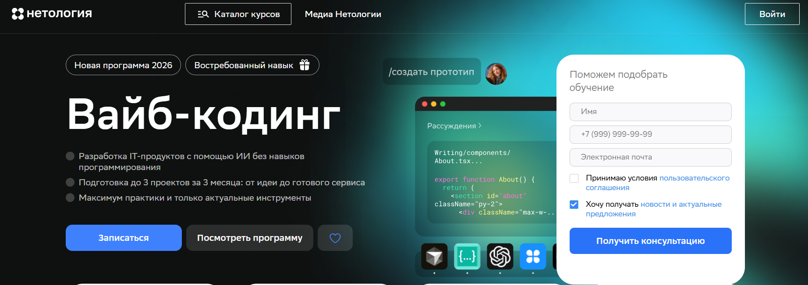
Особенности:
Программа построена вокруг разработки рабочих IT-продуктов с помощью ИИ и рассчитана на подготовку до трёх проектов за три месяца. Студенты используют Cursor, ChatGPT, AppMaster, Tilda, YandexGPT и GigaChat, поэтому обучение охватывает инструменты для разных задач и этапов создания продукта. В процессе программирования ИИ помогает генерировать код, искать ошибки, улучшать код и быстрее проверять результат, а no-code-платформы позволяют собирать приложения и сайты без классической разработки. Основной акцент сделан на практике: учащиеся проектируют MVP, выстраивают пользовательские сценарии, подключают внешние сервисы и работают с моделями ИИ. Программа помогает разобраться, как сформулировать задачу для нейросети, получить нужный результат и проверить его перед запуском для реальных пользователей. Среди возможных проектов указаны Telegram-бот, мобильное приложение, интернет-магазин, автоматические отчёты и ИИ-ассистент для обработки писем и планирования встреч. Занятия можно совмещать с работой, а при необходимости обучение разрешено приостановить на срок до шести месяцев. Такой кодинг подходит тем, кому важно максимально быстро перейти от идеи к прототипу и автоматизировать процессы без большой команды программистов.
Чему учатся студенты:
Преподаватели:
Преимущества:
Отзывы учеников:
В отзывах о Нетологии студенты часто называют среди плюсов понятную и логичную структуру обучения, большое количество практики, опытных преподавателей и оперативную обратную связь. Пользователи также положительно оценивают удобство образовательной платформы, возможность применять полученные знания в реальных задачах и совмещать занятия с работой. В отзывах отдельно отмечают практические задания, поддержку преподавателей и координаторов, разбор домашних работ и последовательное усложнение программы. При этом насыщенность некоторых направлений требует достаточно времени для самостоятельной подготовки.
6. Вайб-кодинг на Claude Code — Хекслет
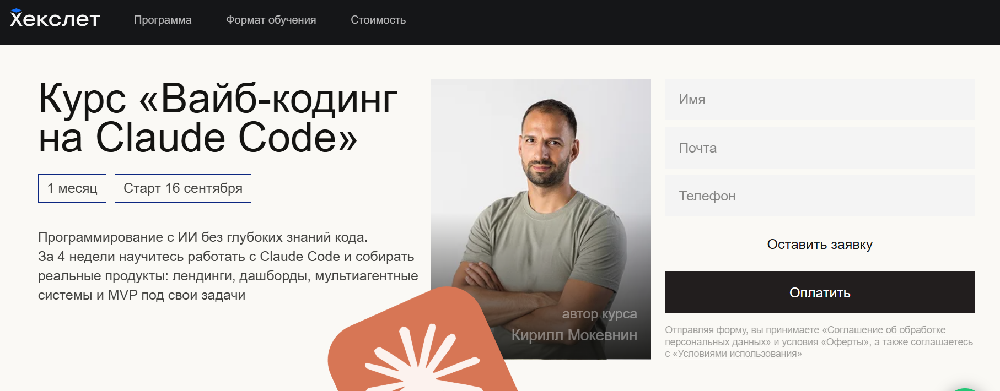
Особенности:
Обучение построено вокруг практического процесса программирования, в котором ИИ помогает превращать текстовую задачу в рабочий результат. Студенты осваивают Claude Code не как отдельный генератор кода, а как агентный инструмент, который работает со структурой проекта, файлами и командами. В процессе программирования учащиеся учатся формулировать задачу, проверять код, который генерируют нейросети, находить ошибки и доводить приложения до публикации. Программа подходит людям без глубоких знаний в разработке: базовые понятия HTML, CSS, JavaScript, React, серверов, HTTP и конфигурационных файлов объясняются с учетом задач вайбкодера. Отдельное внимание уделяется работе с GitHub, версиями, API, вебхуками, данными, контекст-инжинирингом и автоматизацией процессов. Claude Code поддерживает работу нескольких ИИ-агентов, поэтому студенты знакомятся с подходами, при которых агенты делят сложные задачи и выполняют их параллельно. В программу включены вопросы безопасности при работе с моделями и агентами: хранение ключей, минимальные права доступа, защита от prompt injection и предотвращение опасных действий. Практическая часть помогает собрать проекты для портфолио и пройти путь от идеи до работающего продукта. Материалы курса остаются доступными после завершения обучения, а участники получают поддержку в чате потока и доступ в AI-клуб.
Чему учатся студенты:
Преподаватели:
Преимущества:
Отзывы учеников:
В отзывах о Хекслете ученики часто относят к плюсам большое количество практики, сильные проекты и обучение самостоятельному решению задач. Также положительно оценивают понятную структуру программы, удобную образовательную платформу и баланс теории и практических заданий. Среди заметных преимуществ называют обратную связь от кураторов и наставников, полезные учебные материалы и сообщество школы. Некоторые студенты отдельно отмечают, что проекты помогают закреплять знания и лучше понимать реальные процессы разработки. При этом в отзывах встречается мнение, что отдельные сложные темы требуют дополнительной самостоятельной подготовки, а расписание вебинаров подходит не всем.
7. Вайб-кодинг и автономные агенты — Зерокодер
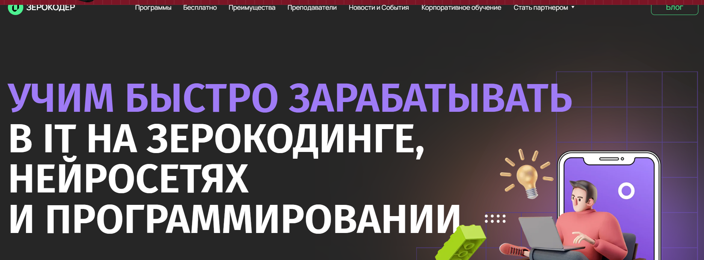
Особенности:
Обучение построено вокруг практики, в которой ИИ помогает генерировать код по текстовому описанию задачи. Студенты не просто изучают процессы программирования, а создают проекты, которые можно добавить в портфолио. В программу входят Telegram-боты, мини-сервисы, работа с файлами, базами данных, API и автономными агентами. В процессе программирования участник учится формулировать задачу так, чтобы языковые модели генерировали подходящий код и помогали исправлять ошибки. Такой вайб-кодинг снижает порог входа для людей без профессиональных знаний в классической разработке. Отдельное внимание уделяется работе с Cursor, Replit, MCP-серверами, GigaChat, Yandex Cloud, локальными моделями и серверным размещением приложений. Студенты проходят путь от простого скрипта до автономного агента, который способен выполнять цепочку действий с минимальным участием человека. Практические задания помогают понять, какие инструменты подходят для разных проектов и как связывать несколько сервисов в одну систему. К концу обучения участник получает набор выполненных работ, который можно использовать как основу портфолио.
Чему учатся студенты:
Преподаватели:
Преимущества:
Отзывы учеников:
В отзывах о Зерокодере ученики часто относят к плюсам понятную пошаговую подачу, практическую направленность, актуальные инструменты и возможность получить результат уже во время занятий. Участники обучения по вайб-кодингу пишут, что создавали сайты, настраивали автопостинг и разрабатывали другие рабочие проекты после нескольких уроков, а материал был изложен доступно даже для тех, кто не хочет глубоко погружаться в Python. В отзывах о других программах школы также регулярно отмечают помощь кураторов, удобный формат, большое количество практики и знания, которые можно применять в рабочих задачах. При этом встречаются замечания о стоимости, необходимости самодисциплины, интенсивном темпе и отдельных сложностях с доступом к некоторым зарубежным сервисам.
8. Курс «Вайбкодинг» — Яндекс Практикум
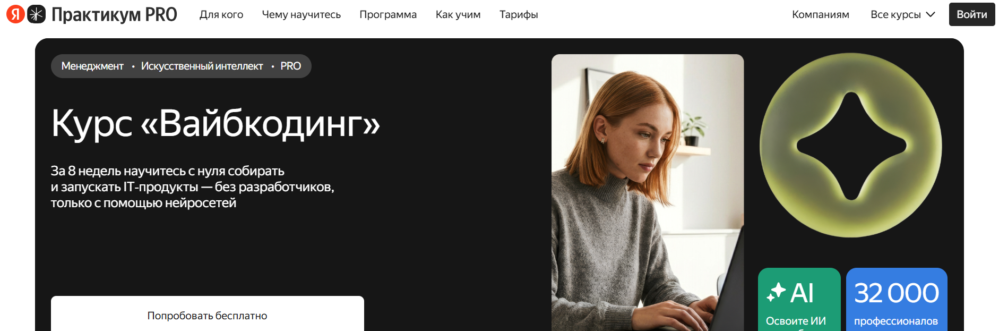
Особенности:
Программа рассчитана на людей, которые хотят создавать и запускать IT-продукты без классической подготовки разработчика. В процессе программирования студенты используют ИИ-модели, которые помогают генерировать код, разбирать задачи, находить ошибки и улучшать программы. Большая часть обучения построена вокруг практики: участники создают лендинг, CRM-систему и сервис бронирования, а на расширенных тарифах работают также с бизнес-ботами и ИИ-агентами. Студенты осваивают подходы к архитектуре, базам данных, API, облачным серверам и автоматизации рабочих процессов. Для разработки используются Cursor, DeepSeek, Yandex AI Studio, SourceCraft, Yandex Cloud, VS Code с AI-плагинами, PostgreSQL, Next.js, Prisma, VPS и Webhooks. Программа помогает пройти путь от постановки задачи нейросети до деплоя готового проекта и отслеживания изменений в коде. В зависимости от тарифа обучение включает четыре или пять воркшопов, несколько QA-сессий и ревью выполненных проектов. Максимальный тариф дополнительно даёт три индивидуальные онлайн-встречи с наставником и возможность работать над собственным продуктом.
Чему учатся студенты:
Преподаватели:
Преимущества:
Отзывы учеников:
В отзывах о Яндекс Практикуме студенты среди плюсов часто отмечают большое количество практики, понятную структуру обучения, полезные задания и поддержку команды. Положительно оценивают обратную связь от кураторов и наставников, ревью проектов, удобную платформу и возможность разбирать материал в подходящем темпе. Также учащиеся выделяют практические кейсы, последовательную подачу тем и воркшопы с экспертами.
9. Вайбкодинг: автоматизация рабочих задач — Бонни и Слайд
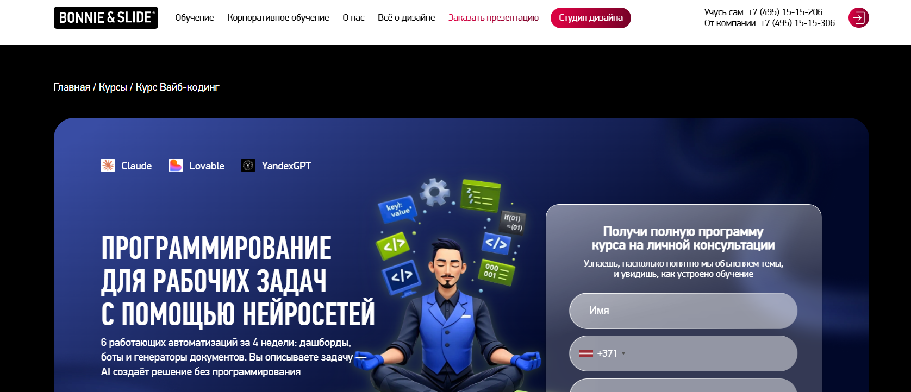
Особенности:
Обучение построено вокруг практических задач, для которых ИИ генерирует код и помогает создавать рабочие инструменты без классического процесса программирования. Студенту достаточно сформулировать задачу обычными словами, после чего нейросети используются для подготовки решения, его доработки и проверки. В программу входят Lovable, ChatGPT, Qwen, Cursor, Claude Code, DeepSeek и Google Sheets, поэтому учащиеся работают сразу с несколькими моделями и подходами. За четыре недели студенты создают дашборды, формы, лендинги, AI-ассистентов, генераторы документов и другие автоматизации. Отдельное внимание уделяется декомпозиции сложных задач, работе с данными и требованиям безопасности, включая GDPR, ФЗ-152 и корпоративные политики. Формат подходит маркетологам, руководителям, аналитикам и другим специалистам, которым нужны собственные решения без необходимости ждать разработчика или команду программистов. Уроки можно проходить в удобное время, а каждое задание получает экспертную проверку и рекомендации по исправлению ошибок. Дополнительные модули знакомят с Claude Code, Cursor и OpenClaw, расширяя знания о разработке приложений, ботах и автономных AI-инструментах. После обучения у студента остаются несколько готовых проектов, а доступ к урокам и обновлениям контента сохраняется в течение 12 месяцев.
Чему учатся студенты:
Преподаватели:
Преимущества:
Отзывы учеников:
В отзывах о Бонни и Слайд студенты чаще всего хвалят понятную и структурированную подачу без лишней информации, короткие уроки, большое количество практики и возможность сразу использовать полученные знания в работе. Также положительно оценивают быструю обратную связь, подробный разбор заданий и советы кураторов. Многие ученики отмечают, что материал легко воспринимается, а задания помогают не просто изучить инструменты, но и закрепить навыки на реальных проектах. В свежих отзывах также встречаются положительные оценки удобного формата обучения, пошаговых объяснений и баланса между теорией и практикой.
Перейти на официальный сайт курса10. Онлайн-курсы ИИ-программирования (вайб-кодинг) — Международная школа профессий
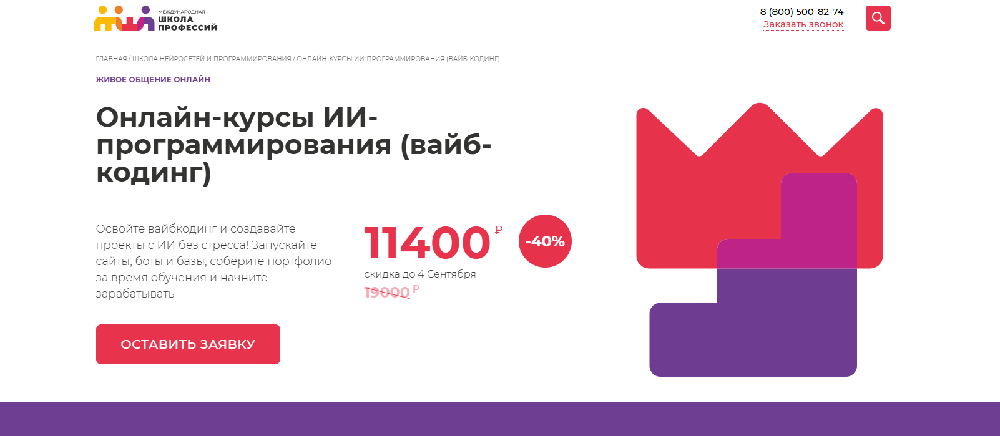
Особенности:
Обучение строится вокруг практического применения ИИ, когда нейросетевые модели помогают генерировать код и быстрее превращать поставленную задачу в работающий результат. Студенты знакомятся с Cursor, GitHub, Vercel и Supabase и понимают, зачем эти инструменты нужны в процессе программирования. В программу входят HTML, CSS, JavaScript, Python и SQL, поэтому участники получают представление о том, какие языки и коды используют для разных задач. Отдельный блок посвящён искусству промптинга: учащиеся формулируют запросы так, чтобы ИИ максимально точно понимал задачу и помогал создавать программы. Практика охватывает создание лендингов, работу с API и базами данных, разработку Telegram-ботов и автоматизацию процессов с помощью no-code и ИИ. Такой кодинг позволяет сосредоточиться не только на синтаксисе, но и на логике продукта, проверке результата и исправлении ошибок. Во время обучения студенты создают несколько проектов, а финальная работа помогает собрать материалы для портфолио. Наставники оказывают поддержку при выполнении практических заданий и помогают пройти путь от первых действий в среде разработки до создания собственного продукта.
Чему учатся студенты:
Преподаватели:
Преимущества:
Отзывы учеников:
В отзывах о Международной школе профессий ученики чаще всего положительно отмечают понятную подачу материала, профессионализм преподавателей, большое количество практики и возможность получить помощь при выполнении заданий. Студентам также нравится онлайн-формат: записи позволяют вернуться к занятиям в удобное время, а обратная связь помогает быстрее разобраться в сложных моментах. В отдельных отзывах хвалят работу преподавателей с новичками, примеры из реальной практики, небольшие группы и внимательное отношение администрации.
Перейти на официальный сайт курсаТОП-14 онлайн-курсов по нейросетям для Дизайнеров
Отличительные преимущества каждой дистанционной программы обучения по нейросетям для Дизайнеров
| № | Курс и школа | Отличительные преимущества | |
|---|---|---|---|
| 🥇 | Нейросети для дизайнеров — Contented | Доступ к 10+ востребованным нейросетям (Midjourney, ChatGPT и др.), гибкий график обучения, возможность создать 5+ работ для портфолио, бонусные онлайн-курсы и бесплатные сервисы во время учебы. | Перейти |
| 🥈 | Нейросети для дизайнеров – дизайн-студия «Логомашина» | Изучение более 30 нейросетей в одном курсе, помощь в выходе на заказы, закрытое сообщество, сертификат и удостоверение о повышении квалификации, упор на практические кейсы для портфолио. | Перейти |
| 🥉 | Графический ИИ-дизайнер — Академия Эдюсон | Комплексная программа для старта с нуля: сочетает базу графического дизайна и работу более чем с 20 нейросетями. Более 10 проектов для портфолио, стажировка после обучения, карьерная подготовка и бессрочный доступ к материалам и обновлениям. | Перейти |
| 4 | Дизайнер интерьеров — Академия Эдюсон | Самая объёмная практическая программа по классическому интерьерному дизайну среди представленных: около 400 часов материалов, более 160 часов практики и 8 проектов. Осваиваются Revit, ArchiCAD, 3Ds Max и другие профессиональные инструменты, а ИИ используется как дополнительный модуль. | Перейти |
| 5 | Нейросети для дизайнеров — Нетология | Системный курс именно по интеграции ИИ в рабочий процесс дизайнера: от исследования и генерации идей до интерфейсов, мини-MVP, видео и ИИ-аватаров. Выделяется большим объёмом практики, работой с Figma и Tilda и отдельным блоком по правовым аспектам использования ИИ. | Перейти |
| 6 | Дизайнер интерьера + ИИ — Нетология | Наиболее продолжительная программа в подборке, объединяющая полноценное освоение профессии дизайнера интерьера с современными ИИ-инструментами. Включает до 6 проектов, 8 индивидуальных консультаций, широкий набор профессиональных программ и карьерную поддержку ещё 12 месяцев после обучения. | Перейти |
| 7 | Нейросети для дизайнера — Pentaschool | Длительная программа (18 недель), бессрочный доступ к материалам, упор на автоматизацию задач и развитие личного бренда, 91% студентов рекомендуют курс. | Перейти |
| 8 | Нейросети для дизайнера — Skillbox | Выделяется широтой AI-инструментария: более 30 нейросетей и 4 дизайнерские программы. За 4 месяца студенты создают 10 проектов для портфолио и осваивают изображения, видео, аудио, презентации, лендинги, тексты и промпт-инжиниринг. | Перейти |
| 9 | Нейросети для дизайнера интерьеров — Skillbox | Самый короткий специализированный курс для интерьерных дизайнеров: около 1 месяца. Фокусируется на применении более 10 AI-инструментов для анализа брифа, планировок, мудбордов, визуализаций, презентаций и продвижения, при этом задания можно выполнять на собственном проекте. | Перейти |
| 10 | Нейросети для дизайнеров — Бруноям | 85% обучения занимает практика на реальных кейсах, индивидуальная поддержка наставников, регулярное обновление программы каждые 3 месяца, доступная цена. | Перейти |
| 11 | Нейросети в коммуникационном дизайне — Bang Bang Education | Короткий интенсив для уже практикующих дизайнеров с опытом генераций. Отличается продвинутой работой со стилями, LoRA, масками, 3D-графикой, коммерческой иллюстрацией и генерацией видео, а материалы обновляются перед каждым новым потоком. | Перейти |
| 12 | Нейросети для создания изображений и видео — Школа дизайна НИУ ВШЭ | Очный формат обучения, работа над проектом с 20 иллюстрациями, документ установленного образца НИУ ВШЭ, акцент на практику и интеграцию ИИ в дизайн-процессы. | Перейти |
| 13 | Нейросети для дизайна — АНО «НИУДПО имени К. Д. Ушинского» | Программа повышения квалификации с гибким дистанционным форматом и возможностью ускоренного прохождения за 13 недель. Выделяется бессрочным доступом к материалам, доступом к большой базе вебинаров и электронной библиотеке, а после обучения выдаётся удостоверение о повышении квалификации. | Перейти |
| 14 | Нейросети для дизайна — Яндекс Практикум | Бесплатный доступ к KREA AI, воркшопы и практика на реальных примерах, помощь карьерного центра Яндекса, дополнительный курс «Основы дизайна в Figma» в подарок. | Перейти |
1. 🏆 Нейросети для дизайнеров — Contented

Особенности:
Программа обновлена в 2026 году и дает доступ к 10+ востребованным нейросетям, включая Midjourney и ChatGPT. Студенты получают бонусные онлайн-курсы и бесплатный доступ к генеративным сервисам на время учебы. Формат обучения сочетает видеолекции, домашние задания и живые вебинары с экспертами. На курсе разбирают алгоритмы машинного обучения, принципы генерации контента и методы практического применения нейронных сетей. Студенты учатся эффективно использовать инструменты ИИ в реальных проектах и создают работы для портфолио. Программа построена так, чтобы можно было изучать материалы в удобное время и совмещать с работой. После прохождения курса выпускники умеют автоматизировать задачи, создавать уникальный контент и внедрять ИИ в профессиональную деятельность.
Чему учатся студенты:
Преподаватели:
Преимущества:
Отзывы учеников:
Студенты отмечают удобный формат обучения, практическую направленность и возможность сразу применять знания в проектах. Чаще всего подчеркивают ценность доступа к популярным нейросетям и помощь экспертов. Выпускники пишут, что курс помогает освоить новые инструменты и повысить конкурентоспособность на рынке труда.
Перейти на официальный сайт курса2. 🏆 Нейросети для дизайнеров – дизайн-студия «Логомашина»

Особенности:
Курс помогает освоить навыки работы с популярными нейросетями без глубоких знаний программирования. Обучение строится на практическом применении искусственных интеллектов в реальных проектах, что позволяет сразу внедрять ИИ в рабочую рутину. Студенты получают базовые знания и практический опыт в генерации изображений, текстов и видео. Обучение проходит в удобном темпе, доступ к материалам сохраняется на год. Программа включает изучение более 30 сервисов, среди которых Midjourney, Stable Diffusion, ChatGPT и другие. Каждое задание направлено на создание проектов для портфолио, которые помогают выйти на рынок фриланса или устроиться в студии. После прохождения обучения слушатели получают официальный документ и востребованную профессию с перспективой роста дохода.
Чему учатся студенты:
Преподаватели:
Преимущества:
Отзывы учеников:
Студенты отмечают, что курс помогает быстро освоить использование нейросетей в реальных задачах. Многие подчеркивают рост дохода, появление новых заказов и повышение уверенности в профессии. Отмечают удобный график обучения, сильную поддержку кураторов и практические проекты, которые легко монетизировать.
Перейти на официальный сайт курса3. 🏆 Графический ИИ-дизайнер — Академия Эдюсон
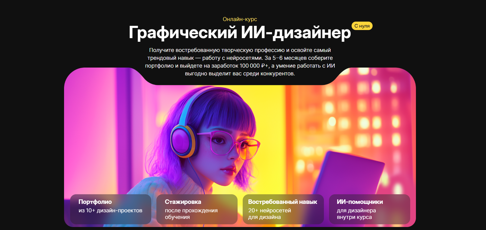
Особенности:
Программа сочетает графический дизайн с практическим применением генеративных нейросетей и искусственного интеллекта. Студенты освоят инструменты для работы с изображениями, текстовым контентом, видео, анимацией, векторной и растровой графикой. Отдельный блок посвящён популярным нейросетям: Midjourney, Stable Diffusion, Recraft, GPT-Image1, Kandinsky, ChatGPT, GigaChat, DeepSeek и другим сервисам. Обучение включает более 210 академических часов и 129 интерактивных уроков, а практические навыки закрепляются с помощью заданий и реальных кейсов. В процессе освоения нейросетей студенты научатся формулировать текстовые запросы, генерировать уникальные изображения и применять ИИ в рабочих задачах графического дизайнера. В портфолио можно добавить более 10 дизайн-проектов, включая работы по брендингу, лендингам и презентациям. Генеративные ИИ помогают автоматизировать рутинные процессы, искать визуальные концепции, создавать визуальный контент и быстрее проверять идеи. Доступ к материалам курса и обновлениям сохраняется навсегда, поэтому изученные инструменты можно повторять после окончания обучения. Программа ориентирована не только на освоение популярных генеративных моделей, но и на развитие собственного стиля без копирования работ преподавателей.
Чему учатся студенты:
Преподаватели:
Преимущества:
Отзывы учеников:
В отзывах об Академии Эдюсон ученики чаще всего положительно оценивают практическую направленность программ, удобство платформы, поддержку кураторов и понятную подачу материала. Среди часто упоминаемых преимуществ выделяются поддержка, практика и удобство платформы. Отдельные студенты отмечают возможность применять полученные навыки ещё во время обучения и пополнять портфолио рабочими проектами. В отзыве о направлении графического ИИ-дизайна также положительно оценены пошаговая структура, практические задания, поддержка куратора и работа с визуальными концепциями на реальных задачах.
Перейти на официальный сайт курса4. Дизайнер интерьеров — Академия Эдюсон
Особенности:
Программа построена вокруг практического освоения дизайна интерьеров и подготовки проектов, которые можно показывать работодателям и заказчикам. Студенты работают с планировкой, эргономикой, цветом, светом, материалами, мебелью и декором. Отдельные модули посвящены Revit Autodesk, ArchiCAD, 3Ds Max, Homestyler и Adobe Photoshop. Обучение включает 42 практических задания, а результатом работы становятся восемь проектов в портфолио. Практические навыки закрепляются на кейсах, близких к реальным рабочим задачам дизайнера интерьера. В программу входят авторский надзор, взаимодействие с заказчиком, расчёт бюджета и изучение юридических вопросов работы. Для развития визуальных концепций предусмотрен модуль по нейросетям для дизайнера, в котором рассматриваются ChatGPT и Midjourney. Использование нейросетей помогает генерировать идеи и искать варианты визуальных решений, но основная часть программы посвящена профессиональным инструментам интерьерного проектирования. После начала обучения студент получает поддержку куратора на 365 дней.
Чему учатся студенты:
Преподаватели:
Преимущества:
Отзывы учеников:
В отзывах об Академии Эдюсон студенты часто выделяют возможность проходить обучение в своём темпе, понятную последовательность материалов, большое количество практических заданий и поддержку кураторов. Пользователи также положительно оценивают видеолекции, скринкасты и дополнительные материалы, которые помогают разбираться в инструментах на практических кейсах. В отзыве дизайнера интерьеров отдельно отмечены видеолекции, записи экрана и дополнительные учебные материалы. Среди преимуществ школы также называют гибкий график и возможность возвращаться к пройденным темам. При этом отдельные пользователи отмечают, что отсутствие жёстких дедлайнов требует самостоятельной дисциплины, а помощь с трудоустройством не означает гарантированного получения работы.
5. Нейросети для дизайнеров — Нетология
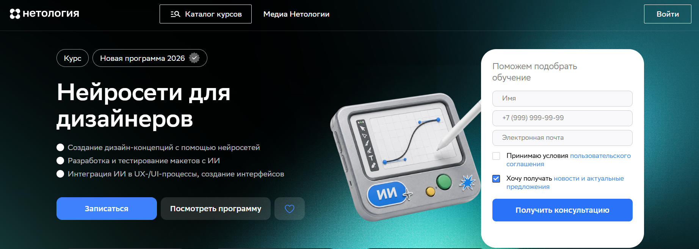
Особенности:
Программа построена вокруг практического применения генеративных нейросетей в дизайне, а не отдельных генераций изображений. Студенты последовательно проходят путь от исследования задачи и генерации идей до готового дизайн-решения для клиента или портфолио. Обучение включает работу с визуальными концепциями, интерфейсами, коммерческим контентом, ИИ-аватарами и no-code-инструментами. Отдельные блоки посвящены генерации изображений, созданию видео и аудио, постобработке результатов генераций и контролю качества. В программе рассматривается Midjourney, а всего заявлено освоение 10 инструментов для решения дизайнерских задач. Практика включает создание мокапа дизайна мебели, прототипа косметического товара и прототипа сайта с товарами для животных. Студенты научатся эффективно применять ИИ в работе с Figma и Tilda, продумывать пользовательские сценарии и собирать работающие интерфейсы. Дополнительно рассматриваются правовые аспекты использования искусственного интеллекта, персональных данных и контента, созданного с помощью ИИ. Обучение можно совмещать с работой: занятия проходят до двух раз в неделю после 18:00 по московскому времени, а средняя нагрузка составляет до 10 часов в неделю.
Чему учатся студенты:
Преподаватели:
Преимущества:
Отзывы учеников:
В отзывах о Нетологии студенты часто относят к плюсам понятную структуру программ, последовательную подачу материала, большое количество практических заданий и обратную связь от преподавателей и кураторов. Пользователи также отмечают удобную образовательную платформу, возможность отслеживать прогресс, смотреть вебинары в записи и совмещать занятия с основной работой. В отзывах именно о направлениях, связанных с нейросетями для дизайнеров, положительно оценивают удобный темп обучения, доступ к записям занятий, быструю работу кураторов и возможность задавать вопросы экспертам.
Перейти на официальный сайт курса6. Дизайнер интерьера + ИИ — Нетология
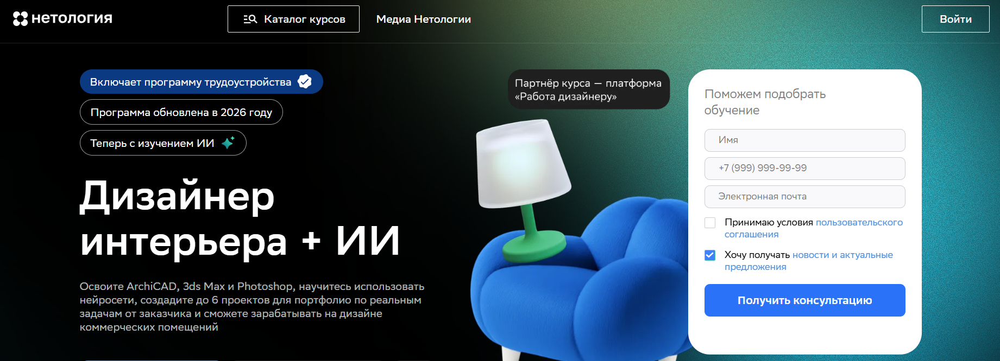
Особенности:
Программа обновлена в 2026 году и сочетает классические навыки проектирования с практическим применением нейросетей. Студенты освоят инструменты ArchiCAD, Photoshop, Autodesk 3ds Max, Corona Renderer, InDesign, AutoCAD и «Дизайн Интерьера 3D». Отдельные модули посвящены использованию генеративных нейросетей и ИИ для создания визуальных концепций, поиска референсов и ускорения рутинных процессов. В работе с искусственным интеллектом рассматриваются ChatGPT, DeepSeek, Suno AI, Midjourney, Leonardo, Firefly, Recraft и другие сервисы, указанные в программе. Обучение включает практические задания, поэтому полученные навыки можно применять при решении реальных задач заказчика. За период обучения студенты смогут создать до шести проектов для портфолио и получить практический опыт подготовки интерьеров от идеи до презентации. Программа помогает освоить основы планировки, эргономики, материаловедения, освещения, декорирования и ведения проекта. Эксперты дают обратную связь по заданиям, проводят вебинары и индивидуальные консультации, что помогает разбирать сложные задачи по мере прохождения курса. Гибкий график обучения позволяет смотреть вебинары в записи, переносить дедлайны и при необходимости брать паузу до шести месяцев.
Чему учатся студенты:
Преподаватели:
Преимущества:
Отзывы учеников:
В отзывах о Нетологии студенты часто называют преимуществами понятную подачу материала, сочетание теории и практических заданий, поддержку преподавателей и координаторов, а также оперативную обратную связь. В отзывах именно об обучении интерьерному дизайну пользователи положительно оценивают последовательный алгоритм создания дизайн-проекта, разбор реальных кейсов, изучение профессиональных программ, дополнительные уроки и общение в чате с другими студентами. Некоторые выпускники отмечают, что обучение помогло получить представление о профессии и освоить основные рабочие инструменты. При этом встречаются и критические отзывы, поэтому впечатления учеников различаются.
Перейти на официальный сайт курса7. Нейросети для дизайнера — Pentaschool

Особенности:
Программа обучения создана для тех, кто хочет освоить инструменты искусственного интеллекта без навыков программирования. Студенты изучают применение нейросетей для разработки концептов, текстового и визуального контента. В процессе прохождения обучения участники научатся автоматизировать рабочие задачи, что позволяет тратить меньше времени на рутину и больше на творчество. Образовательная платформа предлагает удобный график обучения — вы сможете совмещать практику с основной работой. Курс помогает внедрить ИИ в проекты, а также использовать современные алгоритмы машинного обучения для анализа и оптимизации процесса создания дизайна. По итогам студенты смогут освоить базовые и прикладные инструменты, которые уже применяют нейросети в сфере дизайна и маркетинга.
Чему учатся студенты:
Преподаватели:
Преимущества:
Отзывы учеников:
Студенты отмечают простое объяснение сложных тем и полезные практические задания. Положительные отзывы связаны с тем, что курс помогает быстро освоить базовые навыки работы с ИИ и применить их в реальных проектах. Также хвалят поддержку преподавателя и удобный формат обучения в любое время.
Перейти на официальный сайт курса8. Нейросети для дизайнера — Skillbox
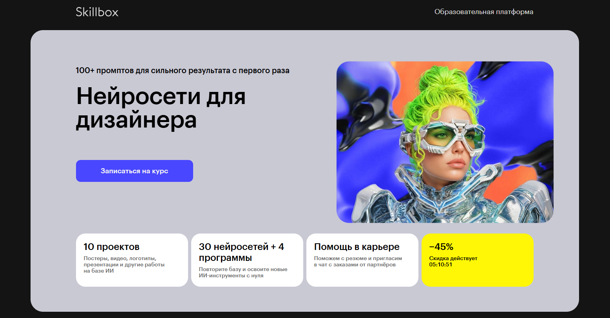
Особенности:
Программа обновлена и рассчитана на освоение более 30 нейросетей и 4 программ для дизайна. Обучение строится вокруг практического применения ИИ: студенты осваивают инструменты для графики, видео, аудио, презентаций, лендингов и текстового контента. В процессе обучения участники создают 10 реальных проектов для портфолио, включая постер, нейрофотосессию, креативы для соцсетей, презентацию, логотип или маскота, коллаж и видеоролики. Отдельный блок посвящён промпт-инжинирингу и работе с текстовыми запросами, от которых зависит качество генераций. Программа помогает научиться применять искусственный интеллект для генерации визуальных концепций, создания изображений и автоматизации рутинных процессов. Студенты также осваивают генерацию видео, синтез голоса, работу с аудио и базовый монтаж. Бонусный блок посвящён текстовому контенту с AI, включая использование ChatGPT и аналогов, подготовку SEO-текстов, лендингов и контент-планов. Практические навыки закрепляются на реальных задачах, а эксперт даёт индивидуальную обратную связь по выполненным работам. Теоретические материалы доступны в удобном темпе, поэтому обучение можно совмещать с работой и другими задачами.
Чему учатся студенты:
Преподаватели:
Преимущества:
Отзывы учеников:
В отзывах о Skillbox студенты часто относят к плюсам удобный график и возможность проходить обучение в собственном темпе, понятную и структурированную подачу материала, практические задания и обратную связь от кураторов. Пользователи также положительно оценивают помощь экспертов при разборе работ, доступность онлайн-формата и возможность совмещать занятия с работой или семейными делами. В отзывах о направлениях дизайна отдельно отмечают переход от базовых тем к практике и профессиональный разбор выполненных заданий.
Перейти на официальный сайт курса9. Нейросети для дизайнера интерьеров — Skillbox
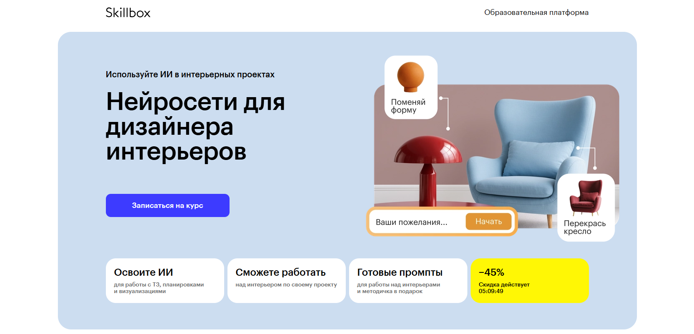
Особенности:
Обучение построено вокруг практического применения нейросетей в дизайне интерьеров: от анализа брифа до подготовки визуализации и презентации проекта. Студенты осваивают инструменты AI, которые помогают быстрее работать с требованиями заказчика, референсами, планировочными решениями и визуальным контентом. В программу включены ChatGPT, Midjourney, DALL·E 3, Nano Banana, YandexGPT, GigaChat, Kandinsky, Шедеврум, DeepSeek, Gemini и другие сервисы, поэтому участники знакомятся сразу с несколькими популярными нейросетями. Значительная часть программы посвящена генеративным нейросетям для создания изображений, поиска идей и разработки визуальных концепций. Студенты учатся формулировать текстовые запросы, создавать мудборды и использовать генерации при подготовке реальных проектов. Отдельный блок помогает внедрить нейросети в работу над планировкой: анализировать пространство, сравнивать варианты и улучшать зонирование. Для визуализации используются в том числе Nano Banana, PromeAI и Archicad AI Visualizer, что позволяет создавать и дорабатывать изображения под конкретную задачу. В программу также входит применение ИИ для генерации контента и продвижения в социальных сетях, включая создание изображений и видео. Обучение проходит в удобном темпе, а практикующие специалисты дают обратную связь по выполненным работам.
Чему учатся студенты:
Преподаватели:
Преимущества:
Отзывы учеников:
В отзывах о Skillbox на независимых площадках учащиеся часто относят к преимуществам удобный формат онлайн-обучения, возможность заниматься в собственном темпе, понятную подачу материала и поддержку кураторов. В отзывах также отмечают практические задания, подробную обратную связь, удобный интерфейс платформы и возможность совмещать занятия с работой. Студенты программ по дизайну отдельно положительно оценивают последовательную структуру материалов и помощь профессиональных кураторов при выполнении практических работ. При этом встречаются замечания о том, что насыщенная программа требует значительных временных затрат, а проверки заданий иногда приходится ждать.
10. Нейросети для дизайнеров – Бруноям

Особенности:
Программа создана в 2026 году и регулярно обновляется каждые 3 месяца. Обучение построено на практическом применении популярных нейросетей, где 85% времени занимает выполнение заданий. Студенты учатся работать с графическими и текстовыми моделями машинного обучения, осваивают генерацию контента и автоматизацию задач. Каждый слушатель получает поддержку наставника без ограничений и доступ к удобной образовательной платформе. Программа помогает внедрить ИИ в дизайн-процессы, оптимизировать рабочие задачи и создавать уникальный визуальный контент. Участники курса получают практический опыт работы с реальными проектами, что повышает их ценность для работодателей. Благодаря такому формату можно освоить базовые и продвинутые навыки без лишней теории и с упором на реальные кейсы.
Чему учатся студенты:
Преподаватели:
Преимущества:
Отзывы учеников:
Студенты отмечают, что курс помогает научиться применять ИИ в реальных проектах и уверенно работать с нейросетями. Многие подчеркивают ценность практических заданий и отзывчивость наставников. Среди плюсов часто выделяют удобный формат обучения, доступность материалов и возможность задать вопрос в чате поддержки. По отзывам выпускников, обучение помогает быстрее решать рабочие задачи и создавать уникальный контент с помощью искусственных интеллектов.
Перейти на официальный сайт курса11. Нейросети в коммуникационном дизайне — Bang Bang Education
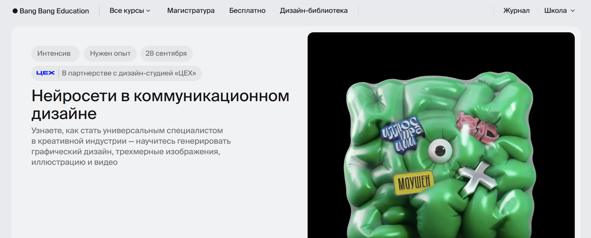
Особенности:
Интенсив посвящён практическому применению искусственного интеллекта в визуальном продакшене и рассчитан на специалистов, которые уже работают с генеративными нейросетями. Студенты изучают более 10 инструментов и моделей, включая Midjourney, Recraft, Krea, Seedream 4, Nano Banana, Reve, Flux, Kling, Runway и другие сервисы. Программа помогает графическому дизайнеру ускорить генерацию контента и при этом сохранять контроль над итоговым визуалом. Участники разбирают не только текстовые запросы, но и работу со стилями, масками, эффектами, текстурами, освещением и ракурсами. Отдельные занятия посвящены статичным генерациям, трёхмерной графике, коммерческой иллюстрации и генерации видео. Студенты учатся сочетать генеративные модели для решения конкретных задач и применять ИИ на разных этапах создания визуального контента. Большая часть программы направлена на развитие практических навыков: предусмотрено пять домашних заданий, а в расширенном формате — их разбор и персональная обратная связь от преподавателя. Материалы обновляются к каждому потоку, чтобы программа обучения включала актуальные возможности инструментов искусственного интеллекта.
Чему учатся студенты:
Преподаватели:
Преимущества:
Отзывы учеников:
В отзывах о Bang Bang Education ученики часто отмечают практическую направленность обучения, понятную подачу материала и возможность сразу применять знания при выполнении заданий и работе над собственными проектами. Среди заметных плюсов также называют подробную обратную связь от наставников, живые вебинары со специалистами отрасли и качественно подготовленные учебные материалы. Студенты положительно оценивают большое количество практики и работу над проектами для портфолио. В отдельных отзывах отмечают структурированность информации и поддержку преподавателей.
Перейти на официальный сайт курса12. Нейросети для создания изображений и видео: в поисках авторского стиля – Школа дизайна НИУ ВШЭ

Особенности:
Программа сочетает изучение генеративных нейросетей и основ программирования, что позволяет студентам освоить базовые навыки работы с искусственными интеллектами. Обучение строится на практических занятиях с куратором и самостоятельной разработке проекта, включающего 20 иллюстраций. Участники курса научатся применять нейросети в сфере дизайна, создавать визуальный контент и автоматизировать задачи. Гибкий график обучения позволяет совмещать курс с работой. Студенты работают над реальными проектами и получают опыт, который используют в профессиональной деятельности. Программа подойдет тем, кто хочет освоить инструменты ИИ с нуля и внедрить их в творческую практику. После прохождения курсов выпускники получают документ установленного образца, который подтверждает квалификацию. Средний возраст слушателей — 34 года, и курс успешно осваивают даже без высшего образования.
Чему учатся студенты:
Преподаватели:
Преимущества:
Отзывы учеников:
Студенты отмечают вовлеченность преподавателей, высокое качество практических занятий и возможность освоить базовые навыки работы с искусственными интеллектами даже без опыта программирования. Многие подчеркивают ценность итогового проекта и полезность реальных кейсов, которые помогают эффективно использовать ИИ в рабочих процессах.
Перейти на официальный сайт курса13. Нейросети для дизайна — АНО «НИУДПО имени К. Д. Ушинского»
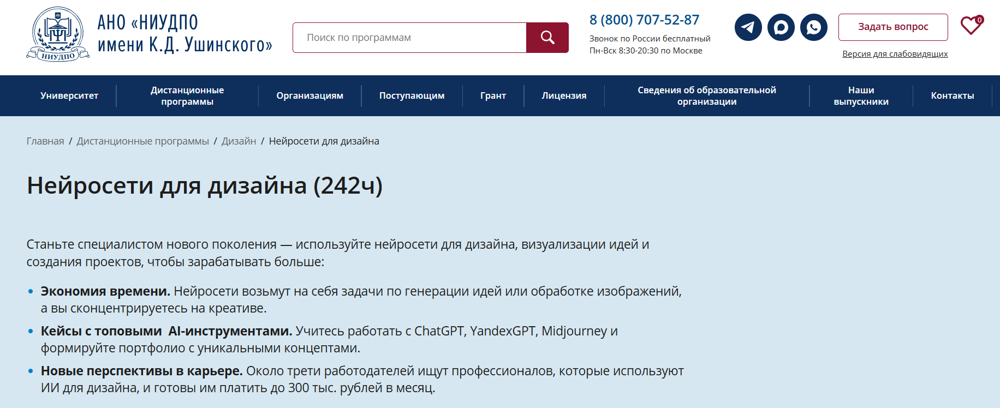
Особенности:
Программа повышения квалификации рассчитана на тех, кто хочет научиться применять искусственный интеллект в рабочих и творческих задачах дизайнера. Студенты осваивают популярные нейросети и инструменты AI, включая ChatGPT, YandexGPT и Midjourney. Использование нейросетей помогает ускорять генерацию идей, поиск визуальных концепций и обработку изображений, оставляя больше времени на креативный процесс. Обучение проходит дистанционно, поэтому материалы можно изучать по удобному графику и совмещать занятия с работой. Практические задания позволяют закреплять полученные навыки в профессиональных ситуациях, а преподаватели проверяют и оценивают работы, а также дают обратную связь. В процессе обучения слушатели учатся формулировать текстовые запросы и использовать возможности генеративных нейросетей для создания визуального контента. Такой подход помогает интегрировать нейросети в рабочие процессы, быстрее готовить макеты, прототипы и свежие визуальные решения. После успешного окончания обучения выпускники получают удостоверение о повышении квалификации и сохраняют бессрочный доступ к материалам программы. Дополнительно студентам доступны записи более 9000 вебинаров и электронная библиотека biblioclub.ru.
Чему учатся студенты:
Преподаватели:
Преимущества:
Отзывы учеников:
В отзывах об АНО «НИУДПО имени К. Д. Ушинского» студенты часто положительно оценивают удобный дистанционный формат, возможность заниматься без отрыва от работы, понятную и структурированную подачу материалов. Среди заметных плюсов также называют видеолекции и вебинары, практическую направленность программ, удобную образовательную платформу и быструю проверку заданий. В отзывах встречаются положительные оценки гибкого графика, доступности материалов в личном кабинете, обратной связи и возможности применять полученные знания в работе. Студенты также отмечают высокий уровень преподавания и удобство дистанционного обучения.
Перейти на официальный сайт курса14. Нейросети для дизайна — Яндекс Практикум

Особенности:
Программа рассчитана на обучение современным инструментам, которые применяют нейросети и искусственные интеллекты в сфере дизайна. За короткий срок вы сможете освоить базовые и практические навыки для работы с изображениями, видео и текстами. В курс входят популярные нейросети Midjourney, Runway, Stable Diffusion, Recraft AI, Vizcom, ChatGPT и YandexGPT. Участники получают бесплатный доступ к KREA AI с широким функционалом. Преподаватели акцентируют внимание на практическом применении алгоритмов машинного обучения и генеративных моделей. Обучение строится на реальных проектах и практических кейсах. По окончании прохождения обучения выпускники формируют портфолио, где демонстрируют умение использовать ИИ для создания визуального и текстового контента. Формат подойдет и новичкам без навыков программирования, и специалистам, которые хотят внедрить ИИ в рабочие процессы.
Чему учатся студенты:
Преподаватели:
Преимущества:
Отзывы учеников:
Выпускники отмечают структурированность программы, доступное объяснение сложных тем и практическую направленность. Многие подчеркивают, что курс помогает научиться применять нейросети в реальных проектах, создавать качественный визуальный и текстовый контент и быстрее решать рабочие задачи. Особенно выделяют воркшопы и поддержку наставников, которые делают обучение максимально эффективным и мотивирующим.
Перейти на официальный сайт курсаТОП-21 онлайн-курсов по нейросетям для Разработчиков
Отличительные преимущества каждой дистанционной программы обучения по нейросетям для Разработчиков
| № | Курс и школа | Отличительные преимущества | |
|---|---|---|---|
| 🥇 | Курс по нейронным сетям — SkillFactory | 10 недель, акцент на практику с TensorFlow и Keras, хакатон, проекты для портфолио, помощь в трудоустройстве. | Перейти |
| 🥈 | Специалист по нейронным сетям — SkillFactory | 24 месяца, диплом о проф. переподготовке, карьерное сопровождение, стажировки, английский и soft skills. | Перейти |
| 🥉 | Machine Learning и Deep Learning — SkillFactory | 10–12 мес, Kaggle и хакатоны, участие в стажировках, поддержка наставников, реальные бизнес-кейсы. | Перейти |
| 4 | Инженер по глубокому обучению нейросетей — Яндекс Практикум | Выбор специализации CV/NLP, PyTorch, Transformers, проекты в портфолио, облачная инфраструктура. | Перейти |
| 5 | Специалист по Data Science — Яндекс Практикум | 13–17 мес, диплом, 17–22 проекта, YandexGPT модуль, гибкий график, карьерный трек до 6 мес. | Перейти |
| 6 | Обработка естественного языка — NLP — Яндекс Практикум | 2 мес, BERT, RoBERTa, LLaMA, RAG, 4 проекта, карьерная поддержка, воркшопы и YandexGPT-помощник. | Перейти |
| 7 | Нейросети для дизайна — Яндекс Практикум | 2 мес, KREA AI бесплатно, Midjourney и Stable Diffusion, генерация визуала и текста, портфолио проектов. | Перейти |
| 8 | Компьютерное зрение — Яндекс Практикум | 2 мес, PyTorch, YOLO, U-Net, CLIP, мультимодальные модели, 4 проекта в портфолио, налоговый вычет. | Перейти |
| 9 | Профессия Machine Learning Engineer — Skillbox | 12 мес, 3 проекта, Kaggle, гарантированное трудоустройство или возврат денег, доступ к обновлениям курса. | Перейти |
| 10 | Специалист по компьютерному зрению дронов и нейросетям — Skillbox | 8 мес, 3 курса в одном (Python, математика, CV), кейсы из индустрии, сертификат гос. образца, скидка 50%. | Перейти |
| 11 | Deep Learning — Нетология | 2,5 мес, удостоверение гос. образца, GAN, NLP и CV, мобильное приложение, доступ к материалам 3 года. | Перейти |
| 12 | Нейросети для анализа данных — Нетология | 2 мес, фокус на аналитике с AI, Jupyter Notebook, n8n-интеграции, ChatGPT/DeepSeek/Gemini, мобильное приложение. | Перейти |
| 13 | Компьютерное зрение — OTUS | 4 мес, PyTorch, OpenCV, HuggingFace, проекты для резюме, записи занятий навсегда, карьерные консультации. | Перейти |
| 14 | Компьютерное зрение. Advanced — OTUS | 4 мес, Vision Transformers, Diffusion, PyTorch 2.0, 3D CV, выпускной проект в портфолио, карьерная поддержка. | Перейти |
| 15 | Специализация Machine Learning — OTUS | 11 мес, диплом о проф. переподготовке, A/B-тесты, NLP и CV, портфолио проектов, доступ к материалам навсегда. | Перейти |
| 16 | Deep Learning Engineer — KARPOV.COURSES | 4–5 мес, проекты в NLP, CV и аудио, трансформеры, карьерное сопровождение, сертификат на 2 языках. | Перейти |
| 17 | Аналитика больших данных — KARPOV.COURSES | 2 года, диплом магистра ВШЭ, BI-системы, Spark, Python, академическая + практическая экспертиза, господдержка кредита. | Перейти |
| 18 | Онлайн-курс Data Scientist с нуля — Школа Бруноям | 8 мес, личный наставник без ограничений, проекты в портфолио, обновления уроков каждые 3 мес, карьерная поддержка. | Перейти |
| 19 | Специалист по интеграции искусственного интеллекта — GeekBrains | 6 мес, проекты стоимостью от 50 000 ₽ во время курса, генерация контента с ИИ, портфолио из 4–12 проектов. | Перейти |
| 20 | Разработчик искусственного интеллекта — GeekBrains | 12 мес, диплом гос. образца, Python, PyTorch, SQL, NLP и CV, гибкий график, гарантия помощи в трудоустройстве. | Перейти |
| 21 | Искусственный интеллект и большие данные — МИТУ | 3,5–4,5 года, диплом бакалавра гос. образца, Big Data, ML, генеративные модели, возможность поступления без ЕГЭ. | Перейти |
1. 🏆 Курс по нейронным сетям — SkillFactory

Особенности:
Программа обучения строится вокруг практического применения нейросетей для бизнеса. Студенты осваивают популярные библиотеки TensorFlow и Keras, изучают сверточные и рекуррентные модели. В ходе курса они научатся эффективно использовать искусственные интеллекты для анализа данных, распознавания изображений, работы с текстовыми моделями и построения рекомендательных систем. Особое внимание уделяется практическим кейсам: от построения кредитных скоринговых моделей до увеличения продаж в ритейле. Обучение проходит в удобном онлайне с поддержкой кураторов. Выпускники получают практический опыт и навыки программирования, востребованные на рынке.
Чему учатся студенты:
Преподаватели:
Преимущества:
Отзывы учеников:
Студенты отмечают доступность материала, практическую направленность и удобный график обучения. Многие выделяют поддержку кураторов, структурированную программу и возможность решать реальные задачи бизнеса. Особенно ценят проекты, которые можно включить в портфолио для трудоустройства.
Перейти на официальный сайт курса2. 🏆 Специалист по нейронным сетям — SkillFactory

Особенности:
Обучение строится на сочетании теории и практики: 20% времени уделяется теоретическим блокам, а 80% — практическим заданиям. Студенты научатся работать с алгоритмами машинного обучения и современными инструментами анализа данных. Программа включает карьерное сопровождение: тренажеры собеседований, консультации с HR и помощь в составлении резюме. Курсы включают бесплатные направления по soft skills и английскому для IT-специалистов. Уже к середине обучения можно собрать портфолио из реальных проектов. Занятия проходят в онлайне, что позволяет совмещать обучение с работой. Доступна поддержка менторов и кураторов. Программа помогает освоить инструменты для работы с ИИ, получить базовые знания математики и программирования и применить их в реальных кейсах.
Чему учатся студенты:
Преподаватели:
Преимущества:
Отзывы учеников:
Студенты отмечают высокое качество преподавания, доступность материала и большое количество практических заданий. Многие подчеркивают ценность карьерного сопровождения, помощь с резюме и подготовкой к собеседованиям. Часто упоминают сильную поддержку менторов и удобный формат обучения, который позволяет совмещать учебу с работой.
Перейти на официальный сайт курса3. 🏆 Machine Learning и Deep Learning – Skillfactory

Особенности:
Программа сочетает практику и теорию, обучая работе с машинным обучением и глубокими нейросетями. Участники проходят задания на основе реальных кейсов, решают задачи по анализу данных и созданию моделей для бизнеса. Курс основан на практическом применении искусственного интеллекта и включает участие в соревнованиях. Обучение проходит в удобном онлайн-формате с еженедельным открытием новых модулей. Студенты получают доступ к полезным материалам, базе знаний и поддержке кураторов. Программа охватывает как основы программирования, так и сложные темы нейронных сетей. Обучение помогает научиться использовать ИИ для автоматизации процессов и внедрения решений в различных сферах.
Чему учатся студенты:
Преподаватели:
Преимущества:
Отзывы учеников:
Студенты отмечают, что программа сбалансирована между теорией и практикой, много задач для закрепления материала. Подчеркивают ценность взаимодействия с преподавателями и куратором, доступность объяснений и большое количество практических кейсов. Отмечается возможность применить знания сразу в рабочих проектах и на фрилансе.
Перейти на официальный сайт курса4. Инженер по глубокому обучению нейросетей — АНО ДПО «Образовательные технологии Яндекса - Практикум»

Особенности:
Программа 2026 года включает самые актуальные инструменты искусственных интеллектов и популярных нейросетей. Обучение строится на практических кейсах и реальных задачах, чтобы студенты могли освоить базовые и углубленные знания. Участники проходят обучение с поддержкой наставников, получают практические навыки на 4–8 проектах для портфолио и учатся эффективно использовать нейросети в рабочих задачах. Можно выбрать специализацию: компьютерное зрение или обработку естественного языка. Гибкий график обучения позволяет совмещать процесс с работой. Практика проходит в облачной инфраструктуре, что дает возможность научиться использовать современные инструменты и алгоритмы машинного обучения. Курсы включают воркшопы и работу с текстовыми моделями, где студенты научатся создавать и внедрять готовые решения.
Чему учатся студенты:
Преподаватели:
Преимущества:
Отзывы учеников:
Выпускники отмечают высокое качество обучения, полезные материалы и практическую направленность. Многие выделяют гибкий график обучения и помощь наставников. По данным отзывов, сильной стороной курса стали практические проекты, которые позволяют закрепить знания и получить навыки программирования в сфере ИИ. Большинство студентов указывают, что курс помог им выйти на новый профессиональный уровень и найти работу в сфере искусственного интеллекта и нейронных сетей.
Перейти на официальный сайт курса5. Специалист по Data Science — АНО ДПО «Образовательные технологии Яндекса - Практикум»

Особенности:
Программа разработана в соответствии с требованиями рынка 2026 года и акцентирована на практическом применении искусственных интеллектов и машинного обучения. В ходе прохождения обучения студенты работают над реальными кейсами, решая задачи бизнеса и применяя современные алгоритмы машинного анализа. В курс встроен модуль по YandexGPT, где изучается использование нейросетей и генеративных ИИ для задач анализа данных. Нагрузка не превышает 15 часов в неделю, что позволяет совмещать учебу с работой. Важно, что программа обновляется регулярно, чтобы студенты осваивали только актуальные инструменты. После окончания курса выпускники получают диплом установленного образца и доступ к карьерной поддержке до 6 месяцев. Это помогает внедрить ИИ в профессиональную сферу и быстро выйти на новый уровень дохода.
Чему учатся студенты:
Преподаватели:
Преимущества:
Отзывы учеников:
Выпускники отмечают, что курс помогает освоить базовые навыки анализа данных и научиться эффективно использовать ИИ в реальных проектах. Чаще всего подчеркивают качество практических заданий, возможность применять знания сразу на работе и помощь в трудоустройстве. Многие пишут, что уже в первые месяцы после окончания курса нашли работу в IT и смежных сферах.
Перейти на официальный сайт курса6. Обработка естественного языка — NLP — АНО ДПО «Образовательные технологии Яндекса - Практикум»

Особенности:
Программа обновлена на 2026 год и включает лучшие практики обработки естественного языка. Обучение строится на практических кейсах и реальных задачах компаний. Студенты осваивают современные архитектуры — от BERT и RoBERTa до LLaMA и RAG, что позволяет освоить базовые и продвинутые навыки применения искусственного интеллекта. В рамках курса предусмотрено 4 проекта, которые помогут сформировать портфолио. Теория подается через интерактивную платформу, а практические проекты закрепляют навыки использования нейросетей. Обучение сопровождается поддержкой наставников и экспертов, а YandexGPT помогает разобраться в сложных темах и подготовить краткие конспекты. Студенты проходят обучение на базе PyTorch и современных инструментов машинного обучения, что делает программу максимально эффективной для внедрения ИИ в бизнес-задачи.
Чему учатся студенты:
Преподаватели:
Преимущества:
Отзывы учеников:
Студенты отмечают высокое качество преподавателей, большое количество практических заданий и проектов, удобный график обучения и доступность материалов. Особенно ценится возможность сразу применять полученные знания в реальных проектах и практических кейсах, а также поддержка кураторов и экспертов, которые помогают освоить сложные темы.
Перейти на официальный сайт курса7. Нейросети для дизайна — АНО ДПО «Образовательные технологии Яндекса - Практикум»

Особенности:
Программа рассчитана на тех, кто хочет освоить навыки работы с популярными нейросетями без глубоких знаний программирования. Обучение строится вокруг практических заданий, что помогает быстро внедрить искусственные интеллекты в рабочие процессы. Студенты научатся работать с алгоритмами машинного обучения и освоят инструменты для генерации визуального и текстового контента. Занятия проходят онлайн с поддержкой кураторов и экспертов. В рамках курса уделяется внимание реальным проектам, что позволяет накопить практический опыт. Студенты осваивают базовые принципы работы с генеративными моделями и учатся решать задачи в сфере ИИ. Доступ к KREA AI предоставляется бесплатно, а это упрощает освоение инструментов на практике. По окончании участники получают документ, подтверждающий уровень подготовки, и могут применить навыки в любых сферах бизнеса и маркетинга.
Чему учатся студенты:
Преподаватели:
Преимущества:
Отзывы учеников:
Выпускники отмечают структурированность программы, большое количество практических заданий и возможность научиться использовать искусственные интеллекты в реальных проектах. Студенты подчеркивают ценность воркшопов с экспертами, поддержку кураторов и удобство онлайн-формата. Многие отмечают, что после курса начали быстрее создавать контент, эффективнее применять ИИ и получили готовые проекты для портфолио.
Перейти на официальный сайт курса8. Компьютерное зрение - АНО ДПО «Образовательные технологии Яндекса - Практикум»

Особенности:
Программа рассчитана на слушателей со сферой ИИ и опытом работы с данными. Студенты учатся внедрять искусственные интеллекты в реальные бизнес-задачи, работать с популярными нейросетями и моделями компьютерного зрения. Обучение строится на практических кейсах, что помогает освоить базовые и продвинутые навыки программирования для анализа изображений и видео. Участники проходят обучение с поддержкой экспертов, выполняют 4 проекта для портфолио и применяют алгоритмы машинного обучения на практике. Программа курса обновляется регулярно, чтобы студенты изучали только актуальные технологии. Применяют нейросети для сегментации, детекции и генерации контента, включая изображения и тексты. Курс помогает освоить инструменты вроде PyTorch, YOLO, U-Net и CLIP, которые используют нейронные сети для решения сложных задач. После прохождения курсов слушатели смогут внедрить ИИ в разработку и создавать контент с помощью генеративных моделей.
Чему учатся студенты:
Преподаватели:
Преимущества:
Отзывы учеников:
Студенты отмечают удобный формат обучения, насыщенную практику и поддержку экспертов. Плюсами называют возможность научиться использовать ИИ и нейронные сети для реальных проектов, добавление новых проектов в портфолио и доступ к актуальным инструментам. Высоко ценится качество обратной связи и практическая направленность курса.
Перейти на официальный сайт курса9. Профессия Machine Learning Engineer – Skillbox

Особенности:
Программа помогает освоить все ключевые навыки работы с машинным обучением и искусственными интеллектами. Студенты выполняют проекты на Kaggle и получают опыт применения нейросетей в реальных кейсах. Обучение строится без жёстких дедлайнов: можно совмещать с работой и проходить модули в удобном темпе. На протяжении курса доступны консультации экспертов, персональная поддержка кураторов и HR-сопровождение. В портфолио выпускника входят три проекта на основе реальных данных партнёров, включая модель для банковского риск-менеджмента. По окончании выпускники получают доступ к базе вакансий и сообществу специалистов в сфере искусственного интеллекта.
Чему учатся студенты:
Преподаватели:
Преимущества:
Отзывы учеников:
Студенты чаще всего отмечают удобный формат обучения, доступность материалов и практических кейсов, а также полезность обратной связи от кураторов. Многие подчеркивают, что курс помогает собрать сильное портфолио и успешно трудоустроиться в сфере искусственного интеллекта.
Перейти на официальный сайт курса10. Специалист по компьютерному зрению дронов и нейросетям — Skillbox

Особенности:
Программа объединяет три курса: Python для инженеров, математика для робототехников и компьютерное зрение с нейросетями. Обучение строится на практике, включая задачи из сельского хозяйства, логистики и промышленности. Участники изучают алгоритмы машинного обучения и научатся использовать искусственные интеллекты для создания прикладных решений. Курсы включают множество практических проектов, где студенты применяют нейросети в реальных примерах. Благодаря такой программе легко освоить базовые знания и перейти к глубоком обучении. Все участники получают доступ к образовательной платформе с удобными форматами занятий. В конце студенты смогут показать реальные проекты в портфолио, что повышает шансы на трудоустройство.
Чему учатся студенты:
Преподаватели:
Преимущества:
Отзывы учеников:
Выпускники Skillbox отмечают высокое качество программы, удобный график обучения и большое количество практики. Студенты подчеркивают, что задания помогают закрепить навыки и дают реальный опыт. Отдельно выделяют поддержку кураторов и возможность трудоустройства после окончания обучения.
Перейти на официальный сайт курса11. Deep Learning – Нетология

Особенности:
Программа создана для тех, кто хочет освоить инструменты и практическое применение нейросетей. Во время прохождения обучения студенты учатся работать с моделями машинного обучения, внедрять ИИ в реальные проекты и решать задачи анализа данных. Курс включает практические кейсы, где применяют нейросети для генерации текстов, изображений и автоматизации задач. Участники получают доступ к платформе с полезными материалами и мобильным приложением, что делает обучение удобным. В процессе обучения уделяется внимание алгоритмам машинного обучения и их применению для различных задач. Формат построен так, чтобы студенты смогли освоить новые навыки без отрыва от работы. Участники выполняют домашние задания, проекты и получают поддержку кураторов. После окончания курса можно использовать полученные знания для внедрения ИИ в бизнес или карьеру в сфере искусственного интеллекта.
Чему учатся студенты:
Преподаватели:
Преимущества:
Отзывы учеников:
Выпускники отмечают, что курс помогает освоить практические навыки и эффективно использовать ИИ в рабочих проектах. Многие подчеркивают пользу от реальных кейсов и удобный формат обучения, а также доступ к полезным материалам и поддержке преподавателей. Студенты ценят, что программа учит применять нейросети не только теоретически, но и в практических задачах.
Перейти на официальный сайт курса12. Нейросети для анализа данных — Нетология

Особенности:
Обучение строится так, чтобы студенты могли освоить базовые навыки и научиться использовать искусственные интеллекты в ежедневных рабочих задачах. Программа сочетает теорию и практику, включая анализ таблиц, генерацию SQL-запросов и применение ChatGPT для аналитики. На курсе показывают примеры использования нейросетей для оптимизации процессов, внедрения ИИ в аналитику и создания отчетов. Студенты осваивают методы машинного обучения без глубоких знаний программирования, а также изучают современные сервисы автоматизации. Доступ к материалам сохраняется, включая мобильное приложение с возможностью учиться офлайн. По окончании курса участники получают удостоверение о повышении квалификации. Обучение подойдет как новичкам, так и тем, кто уже работает с данными, но хочет упростить рутинные задачи.
Чему учатся студенты:
Преподаватели:
Преимущества:
Отзывы учеников:
Студенты отмечают простоту объяснений и большое количество практических заданий. Часто подчеркивают ценность поддержки кураторов и возможность сразу применять полученные знания на работе. Многие положительно отзываются о мобильном приложении, где удобно учиться даже офлайн. Отмечают, что курс помогает освоить инструменты искусственного интеллекта для реальных рабочих задач и значительно упрощает аналитику.
Перейти на официальный сайт курса13. Компьютерное зрение — OTUS

Особенности:
Программа позволяет освоить навыки компьютерного зрения на практике и закрепить знания в реальных проектах. Обучение строится вокруг использования нейросетей, алгоритмов машинного обучения и применения искусственного интеллекта для анализа изображений, видео и 3D-сцен. Занятия включают практические кейсы с визуальными нейросетями, работа с современными инструментами вроде PyTorch, OpenCV и HuggingFace. Студенты создают проекты, которые можно демонстрировать работодателям, что особенно важно для трудоустройства. Программа рассчитана на тех, кто хочет эффективно использовать искусственные интеллекты в рабочих задачах, научиться создавать уникальный контент и внедрять ИИ в реальные процессы. Доступ к материалам сохраняется после окончания курса, а домашние задания помогают закрепить практический опыт.
Чему учатся студенты:
Преподаватели:
Преимущества:
Отзывы учеников:
Студенты отмечают систематизацию знаний, практическую направленность и доступ к полезным материалам. Подчеркивают высокий уровень преподавателей, удобный график обучения и возможность применять полученные навыки сразу в реальных проектах. Многие выпускники говорят о росте профессиональной уверенности и перспективе повышения дохода после прохождения программы.
Перейти на официальный сайт курса14. Компьютерное зрение. Advanced – OTUS

Особенности:
Программа рассчитана на тех, кто уже имеет базовые навыки в компьютерном зрении и хочет углубиться в сложные задачи. Обучение строится на сочетании теории и практики: каждое занятие сопровождается практическими заданиями. Студенты учатся применять нейросети и алгоритмы машинного обучения для реальных задач. В курсе используются современные инструменты, включая PyTorch 2.0, Vision Transformers и генеративные модели. Практические проекты помогают освоить навыки, востребованные в сфере искусственного интеллекта. По окончании студенты создают выпускной проект, который можно прикрепить к резюме. Занятия проходят в удобное вечернее время, что позволяет совмещать учебу с работой. Все участники получают доступ к полезным материалам и обратной связи от преподавателей.
Чему учатся студенты:
Преподаватели:
Преимущества:
Отзывы учеников:
Студенты отмечают сильный состав преподавателей и широкий спектр тем. Многие подчеркивают ценность практических проектов и возможность работать над реальными задачами. Положительно выделяют удобный график занятий, обратную связь и качественную подачу материала. Выпускники указывают, что обучение помогает получить практический опыт и повысить востребованность на рынке труда.
Перейти на официальный сайт курса15. Специализация Machine Learning — OTUS

Особенности:
Программа строится поэтапно: сначала участники осваивают базовые навыки и основы машинного обучения, затем переходят к более сложным моделям и практическим проектам. Обучение включает изучение Python и языков программирования, алгоритмы машинного обучения и глубокое обучение. Студенты выполняют реальные проекты, что позволяет получить практический опыт и портфолио. В процессе обучения используются современные сервисы и инструменты, а также применяются популярные нейросети для реальных задач. Программа помогает освоить навыки работы с искусственными интеллектами, включая анализ данных, генерацию контента и применение нейронных моделей. Студенты научатся использовать методы анализа для различных сфер бизнеса и смогут внедрить ИИ в рабочих процессах. Поддержка преподавателей и менторов позволяет максимально эффективно закрепить практику на конкретных кейсах.
Чему учатся студенты:
Преподаватели:
Преимущества:
Отзывы учеников:
Студенты отмечают практический подход и удобный график обучения. Многие выделяют, что программа помогает разобраться с базовыми знаниями и постепенно перейти к сложным задачам. Плюсом считают наличие проектной работы и возможность получить консультации у экспертов. Чаще всего отмечают высокое качество преподавателей и полезность практических заданий.
Перейти на официальный сайт курса16. Deep Learning Engineer — KARPOV.COURSES

Особенности:
Обучение строится на практике и применении искусственных интеллектов в реальных задачах. Студенты изучают алгоритмы машинного обучения, учатся использовать современные модели и осваивают инструменты для работы с нейронными сетями. Программа включает направления NLP, Computer Vision и аудиоанализ. Каждое направление завершается проектом, ориентированным на реальные кейсы. Курс помогает освоить базовые и продвинутые навыки программирования, разобраться в возможностях нейросетей и научиться применять ИИ в разных сферах. Благодаря поддержке экспертов участники получают доступ к полезным материалам и учатся работать с популярными нейросетями. Практика на реальных примерах формирует уверенность в решении сложных задач, а карьерное сопровождение ускоряет процесс трудоустройства.
Чему учатся студенты:
Преподаватели:
Преимущества:
Отзывы учеников:
Студенты отмечают высокое качество преподавания, удобный график обучения и практический подход. Многие подчеркивают ценность карьерного центра и помощь в трудоустройстве. Популярны отзывы о том, что курс помогает освоить новые навыки и уверенно применять ИИ в реальных проектах.
Перейти на официальный сайт курса17. Аналитика больших данных – НИУ ВШЭ и KARPOV.COURSES

Особенности:
Программа магистратуры совмещает академическую экспертизу НИУ ВШЭ и практический подход KARPOV.COURSES. Студенты получают доступ к современным инструментам анализа данных, изучают основы искусственного интеллекта и машинного обучения, а также методы работы с нейронными сетями. Обучение строится на реальных кейсах из бизнеса и позволяет освоить практические навыки для решения конкретных задач. Формат гибкий, что дает возможность совмещать учебу и работу. Доступ к материалам сохраняется на протяжении всего курса. Образовательный кредит делает стоимость обучения доступной. В процессе обучения студенты учатся применять нейросети и осваивают навыки программирования. Курс подойдет тем, кто хочет освоить базовые инструменты анализа и углубиться в применение искусственного интеллекта.
Чему учатся студенты:
Преподаватели:
Преимущества:
Отзывы учеников:
Студенты отмечают сильную программу, практическую направленность и доступность материалов. Подчеркивают ценность поддержки кураторов и преподавателей, а также возможность учиться у экспертов, работающих с нейросетями и искусственным интеллектом. Отзывы часто выделяют удобный формат обучения и реальные проекты, которые помогают трудоустройству.
Перейти на официальный сайт курса18. Онлайн-курс Data Scientist с нуля — Школа Бруноям

Особенности:
Программа построена на практическом применении алгоритмов машинного обучения и изучении базовых навыков работы с данными. Студенты научатся работать с Python, базами данных, современными библиотеками анализа и визуализации. Каждый проходит обучение с поддержкой личного наставника и выполняет практические проекты для портфолио. Важная часть курса — использование нейросетей и искусственного интеллекта для решения реальных задач. Учебный процесс адаптирован под удобный график, а материалы обновляются каждые три месяца. После окончания обучения студенты получают поддержку в трудоустройстве и могут внедрить ИИ в рабочих процессах.
Чему учатся студенты:
Преподаватели:
Преимущества:
Отзывы учеников:
Студенты отмечают большое количество практики и полезных материалов, удобную образовательную платформу и быстрые ответы наставников. Многие подчеркивают, что обучение помогает освоить базовые навыки работы с данными и эффективно использовать нейросети в проектах. Среди плюсов выделяют практические кейсы, карьерную помощь и возможность совмещать учебу с работой.
Перейти на официальный сайт курса19. Специалист по интеграции искусственного интеллекта — GeekBrains

Особенности:
Обучение построено на решении реальных задач компаний. Студенты осваивают работу с популярными нейросетями и учатся применять ИИ в разных сферах бизнеса. Курс помогает освоить базовые навыки автоматизации процессов и генерации контента без глубоких знаний программирования. Участники выполняют практические проекты стоимостью от 50 000 ₽ уже в период обучения. После завершения программы выпускники получают востребованные компетенции и могут претендовать на доход от 150 000 ₽ в месяц. Поддержка кураторов и наставников обеспечивает качественную подготовку и мотивацию. Практические кейсы позволяют научиться использовать искусственные интеллектуальные технологии для оптимизации бизнес-процессов. Программа включает работу с современными инструментами вроде ChatGPT, Midjourney, Stable Diffusion и другими. Студенты не только учатся, но и собирают реальное портфолио для старта в профессии.
Чему учатся студенты:
Преподаватели:
Преимущества:
Отзывы учеников:
Студенты отмечают высокий уровень преподавателей и практическую ценность занятий. Многие выделяют возможность сразу применять знания в проектах и собирать портфолио. Отдельно подчеркивают быструю обратную связь от кураторов и поддержку сообщества. Положительно оценивают доступность материала и удобный формат онлайн-обучения.
Перейти на официальный сайт курса20. Разработчик искусственного интеллекта – GeekBrains

Особенности:
Обучение строится на сочетании теории и практики: студенты проходят видеолекции, выполняют задания и создают реальные проекты. В программе — основы программирования, алгоритмы машинного обучения, использование нейронных сетей и методов анализа данных. Слушатели получают доступ к инструментам Python, PyTorch, TensorFlow и другим сервисам. Курсы включают онлайн-встречи с преподавателями и поддержку кураторов. После прохождения обучения участники получают диплом, подтверждающий профессиональные навыки. GeekBrains гарантирует помощь в трудоустройстве: от подготовки документов до рекомендаций работодателям. Все занятия проходят на образовательной платформе, удобной для самостоятельной практики. Курс подойдет тем, кто хочет изучить основы искусственного интеллекта и научиться применять ИИ в реальных проектах.
Чему учатся студенты:
Преподаватели:
Преимущества:
Отзывы учеников:
Студенты отмечают практическую направленность курса, доступность материала и поддержку преподавателей. Среди плюсов чаще всего выделяют удобный график обучения, большое количество реальных проектов, помощь с трудоустройством и высокое качество преподавания.
Перейти на официальный сайт курса21. Искусственный интеллект и большие данные — Московский институт технологий и управления

Особенности:
Учебная программа ориентирована на освоение базовых навыков работы с данными и практическому применению искусственного интеллекта. Студенты научатся использовать нейросети в реальных задачах, освоят инструменты анализа и машинного обучения. Обучение строится полностью онлайн, поэтому можно совмещать учебу с работой и другими проектами. Все занятия сохраняются в личном кабинете, что позволяет возвращаться к материалам в любое время. В рамках курса студенты проходят обучение на примерах реальных кейсов, что помогает освоить инструменты и внедрить ИИ в различных сферах. Благодаря практическим проектам выпускники получают навыки программирования и применения нейросетей для создания текстового и визуального контента, автоматизации процессов и анализа больших объемов данных.
Чему учатся студенты:
Преподаватели:
Преимущества:
Отзывы учеников:
Студенты отмечают удобный график обучения, возможность совмещать учебу с работой, а также доступность преподавателей. Положительно выделяют практические занятия и проекты, которые помогают научиться эффективно использовать ИИ и нейросети в рабочих задачах. Многие подчеркивают, что курс помогает освоить новые профессии и выйти на рынок с актуальными знаниями.
Перейти на официальный сайт курсаТОП-6 онлайн-курсов по нейросетям для Маркетологов
Отличительные преимущества каждой дистанционной программы обучения по нейросетям для Маркетологов
| № | Курс и школа | Отличительные преимущества | |
|---|---|---|---|
| 🥇 | Менеджер контент-завода — Академия Эдюсон | Курс делает акцент на выстраивании полного процесса производства контента: от брифа и примеров до генерации, проверки и публикации. Подходит тем, кто хочет наладить контент-конвейер для рекламы, социальных сетей, видео, изображений и текстов с помощью нейросетей. | Перейти |
| 🥈 | Нейросети для маркетинга — Нетология |
Удостоверение о повышении квалификации государственного образца. Сборник промптов в подарок. Гибкий график обучения (вечерние занятия). Практика на воркшопах с экспертами. Скидка 40% и возможность налогового вычета. |
Перейти |
| 🥉 | Нейросети для маркетологов — Бруноям |
85% практики и проектов. Поддержка наставников 24/7 и проверка с обратной связью. Программа обновляется каждые 3 месяца. Бонусный курс «Учись учиться». Сертификат школы для резюме. |
Перейти |
| 4 | Нейросети для маркетолога — MAED Academy |
Изучение более 20 нейросетей. Более 100 готовых промптов, шаблонов и гайдов. 4 воркшопа с практикой и разбором кейсов. Обновлённая в июне 2026 программа. Закрытый чат с экспертами и быстрая обратная связь. |
Перейти |
| 5 | ИИ-менеджер по маркетплейсам — Академия Эдюсон |
Два диплома: удостоверение гос. образца и диплом Академии Эдюсон. 127 уроков, 24 кейса и 50 чек-листов. AI-ассистент для ускорения задач в 4 раза. Бессрочный доступ к материалам. Гарантия возврата денег при отсутствии трудоустройства. |
Перейти |
| 6 | Нейросети для маркетинга и продаж — ИНФОХИТ |
Скидка 54% (экономия более 50 000 ₽). Юридические аспекты применения ИИ. Создание чат-ботов для бизнеса. Автоматизация до 90% рутинных процессов. Гибкая рассрочка и кешбэк до 10%. |
Перейти |
1. 🏆 Менеджер контент-завода — Академия Эдюсон

Особенности:
Программа помогает выстроить производство контента как понятный рабочий процесс: от брифа и примеров до генерации, проверки и публикации. Студенты учатся применять нейросети для текстов, изображений, видео, анимации и псевдо-3D-графики. Курс делает акцент на практике: в программе заявлено более 22 заданий и финальный проект. Участники осваивают более 15 нейросетей, включая Midjourney, Stable Diffusion, Kandinsky, Recraft, Kling, HeyGen, Pika, Sora, Leonardo AI, Tripo AI, Meshy AI, ChatGPT, GPT-Image1, Grok3, GigaChat и DeepSeek. Обучение подходит для старта с нуля, поэтому не требует готового опыта в работе с искусственным интеллектом. Доступ к материалам и обновлениям сохраняется навсегда, а поддержка куратора длится 365 дней. Отдельный плюс программы — Нейрохаб с готовыми промптами, ИИ-агентами, новостями, подборками сервисов и бонусами от партнёров. Курс помогает ускорить выпуск рекламных материалов, снизить ручную нагрузку и наладить контент-конвейер для команды или личных проектов.
Кратко о программе:
Чему учатся студенты:
Преподаватели:
Преимущества:
Отзывы учеников:
В отзывах об Академии Эдюсон студенты чаще всего отмечают удобный дистанционный формат, понятную подачу материала, практические задания, тесты, тренажёры, быстрые ответы поддержки и возможность учиться в своём темпе. На площадках с отзывами также встречаются мнения о пользе актуальных программ о нейросетях, практических кейсах и помощи кураторов, хотя отдельные ученики указывают, что им хотелось бы больше примеров или более подробной проработки некоторых тем.
Перейти на официальный сайт курса2. 🏆 Нейросети для маркетинга — Нетология

Особенности:
Программа построена на практическом применении искусственного интеллекта и позволяет делегировать до 85% маркетинговых задач. В процессе обучения студенты изучают популярные нейросети, включая ChatGPT, YandexGPT, MidJourney и DALLE-3. Занятия проходят по вечерам, что удобно для работающих специалистов. Обучение строится на реальных кейсах и задачах, что помогает освоить инструменты без отрыва от основной деятельности. Участники курса научатся создавать тексты, визуальный контент, видео и персонализированные рекламные материалы с помощью ИИ. Практика на воркшопах с экспертами помогает глубже понять применение нейросетей. Записи всех занятий остаются в личном кабинете, что позволяет возвращаться к материалу в любое время. После окончания курса студенты получают удостоверение государственного образца и сборник промптов в подарок.
Чему учатся студенты:
Преподаватели:
Преимущества:
Отзывы учеников:
Студенты отмечают практическую направленность курса и доступное объяснение сложных тем. Многие подчеркивают ценность работы с реальными кейсами и возможность внедрить ИИ в собственные проекты. Также положительно оценивают поддержку кураторов и экспертов, а записи занятий помогают повторять материал в удобное время.
Перейти на официальный сайт курса3. 🏆 Нейросети для маркетологов – Бруноям

Особенности:
Программа обновлена в 2026 году и полностью адаптирована под современные требования маркетинга с использованием искусственных интеллектов. Основное внимание уделяется практическим навыкам и применению нейронных сетей в реальных задачах бизнеса. Более 85% времени занимают практические проекты, где студенты научатся эффективно использовать популярные нейросети. Обучение строится просто и структурно, без лишней теории. В процессе прохождения обучения доступна поддержка наставников в чате. Все задания проверяются с развернутой обратной связью. Платформа удобна и позволяет учиться в любом удобном графике. Курс подходит тем, кто хочет освоить инструменты генеративных моделей, научиться создавать контент и автоматизировать рутинные процессы.
Чему учатся студенты:
Преподаватели:
Преимущества:
Отзывы учеников:
Студенты отмечают структурированную подачу материала, компетентность преподавателей и большое количество практики. Отдельно выделяют, что обучение помогает научиться применять ИИ для генерации текстов и изображений, а также использовать нейросети для решения повседневных рабочих задач. Многие подчеркивают, что полученные знания сразу удалось внедрить в рабочие проекты.
Перейти на официальный сайт курса4. Нейросети для маркетолога — MAED Academy

Особенности:
Программа разработана с акцентом на практическое применение искусственных интеллектов в маркетинге. Студенты проходят обучение на реальных кейсах и осваивают навыки, которые уже применяют нейросети в компаниях разных сфер. В курс включено изучение более 20 популярных нейросетей, среди которых ChatGPT, Midjourney, Stable Diffusion и другие. Участники учатся работать с текстовым контентом, создавать изображения и видео, автоматизировать рутинные задачи и строить стратегию продвижения. Поддержка кураторов и экспертов позволяет быстрее освоить инструменты и внедрить ИИ в свои рабочие процессы. Каждое задание проверяется наставником с обратной связью в течение 48 часов. После прохождения обучения студенты смогут внедрить ИИ в маркетинговые стратегии и оптимизировать процессы, экономя десятки часов еженедельно.
Чему учатся студенты:
Преподаватели:
Преимущества:
Отзывы учеников:
Выпускники отмечают доступность подачи материала и акцент на практическом применении. Многие подчеркивают ценность обратной связи от экспертов и удобный график обучения. Студенты положительно отзываются о поддержке кураторов и полезных материалах, которые помогают эффективно использовать ИИ в маркетинговых задачах.
Перейти на официальный сайт курса5. ИИ-менеджер по маркетплейсам — Академия Эдюсон

Особенности:
Программа сочетает обучение с практическими кейсами и моделированием личных кабинетов Wildberries, Ozon и Яндекс.Маркета. Студенты получают доступ к интеллектуальному ассистенту, который ускоряет выполнение задач в 4 раза. Курс основан на реальных бизнес-ситуациях и помогает освоить навыки применения искусственных интеллектов в продажах, логистике и аналитике. Материалы регулярно обновляются, а доступ остаётся навсегда. Поддержка куратора доступна 365 дней в году. Студенты учатся использовать популярные нейросети для анализа, создания контента и оптимизации процессов. После прохождения обучения слушатели уверенно внедряют ИИ в работу и выходят на высокий доход в сфере e-commerce.
Чему учатся студенты:
Преподаватели:
Преимущества:
Отзывы учеников:
Студенты отмечают удобный формат онлайн-занятий и бессрочный доступ к материалам. Многие подчеркивают практическую ценность заданий и тренажёров, а также реальную помощь преподавателей-практиков. Отмечают возможность совмещать обучение с работой или декретом. Выпускники пишут, что навыки применения ИИ помогают им быстрее находить клиентов и повышать доход.
Перейти на официальный сайт курса6. Нейросети для маркетинга и продаж — ИНФОХИТ

Особенности:
Обучение строится по четкому расписанию и направлено на практическое применение искусственных интеллектов в маркетинге и продажах. Студенты осваивают базовые навыки работы с популярными нейросетями и учатся автоматизировать до 90% рутинных процессов. Курс подойдет тем, кто хочет внедрить ИИ в рабочие задачи, освоить инструменты генерации контента и научиться использовать ChatGPT и Midjourney для бизнеса. Включены практические кейсы и задания, помогающие закрепить знания на реальных проектах. Программа уделяет внимание юридическим аспектам использования искусственного интеллекта. Сопровождение кураторов позволяет максимально эффективно пройти обучение. В результате участники получают практический опыт применения ИИ для продвижения товаров и услуг.
Чему учатся студенты:
Преподаватели:
Преимущества:
Отзывы учеников:
Студенты отмечают доступность объяснений, удобный формат обучения и практическую пользу от прохождения курсов. Чаще всего выделяют простоту освоения инструментов, поддержку кураторов и быстрые результаты от внедрения полученных знаний в работу.
Перейти на официальный сайт курсаТОП-4 онлайн-курсов по нейросетям для Создания Видео
Отличительные преимущества каждой дистанционной программы обучения по нейросетям для Создания видео
| № | Курс и школа | Отличительные преимущества | |
|---|---|---|---|
| 🥇 | Нейросети для изображений и видео — Академия Эдюсон | Программа ориентирована на сбор собственной фабрики медиаматериалов для рабочих задач: реклама, сайты, маркетплейсы, презентации и социальные сети. В отличие от первого курса, в описании отдельно выделено обновление в мае 2026 года, финальный проект для портфолио и работа с фотореалистичными визуальными материалами. | Перейти |
| 🥈 | Нейросети для работы с графикой и видео — Skillbox |
Обновление программы каждый месяц. Фокус на графику и видео (Midjourney, Stable Diffusion, DALL·E 3). Портфолио из 10+ работ. Сертификат с гослицензией. Карьерный центр и поддержка трудоустройства. |
Перейти |
| 🥉 | Нейросети для создания видео и музыки — Нетология |
Изучение видео и музыки на практике. Доступ к материалам в течение 3 лет (в приложении, даже офлайн). Формирование портфолио для бизнеса и SMM. Налоговый вычет и гибкая рассрочка. Чек-листы и инструкции для работы с сервисами. |
Перейти |
| 4 | AI FilmMaker: создание видео с нейросетями — KHS Хохлов Сабатовский |
Создание видео без живых съёмок (полностью на нейросетях). Шанс попасть в продакшн-команду KHS. Актуальные инструменты 2026 года. Гибкий график: от 14 дней до нескольких месяцев. Практика на реальных проектах и участие в фестивале. |
Перейти |
1. 🏆 Нейросети для изображений и видео — Академия Эдюсон

Особенности:
Обучение построено вокруг практики: студенты не просто знакомятся с сервисами, а собирают собственную фабрику медиаматериалов для рабочих задач. На курсе разбирают генерацию изображений, создание видео, удаление фона, стилизацию, озвучку текста цифровым персонажем и улучшение готовых визуальных материалов. Программа обновлена в мае 2026 года, поэтому в неё включены актуальные инструменты и сценарии применения искусственного интеллекта. Студенты учатся писать точные запросы, чтобы получать результат быстрее и с меньшим количеством правок. Отдельное внимание уделяется задачам для рекламы, сайтов, маркетплейсов, социальных сетей и презентаций. В программе предусмотрено 22+ практических задания, которые помогают закрепить работу с разными типами медиаматериалов. Доступ к курсу и обновлениям остаётся навсегда, поэтому можно возвращаться к урокам после завершения обучения. Кураторская поддержка действует 365 дней, что удобно для тех, кто совмещает обучение с работой или проектами. На официальной странице указаны 15+ нейросетей, старт с нуля, фокус на практике и срок обучения 2 месяца.
Кратко о программе:
Чему учатся студенты:
Преподаватели:
Преимущества:
Отзывы учеников:
В отзывах об Академии Эдюсон студенты чаще всего отмечают понятную подачу материала, большое количество практики, гибкий график, быструю проверку заданий и удобный дистанционный формат. На площадках с отзывами также выделяют прикладной характер обучения: задания помогают применять новые навыки в рабочих задачах, а доступ к материалам позволяет возвращаться к урокам после завершения программы. Среди плюсов часто называют рассрочку, скидки, поддержку кураторов и структуру курсов, где сложные темы разбиты на понятные шаги.
Перейти на официальный сайт курса2. 🏆 Нейросети для работы с графикой и видео — Skillbox

Особенности:
Программа создана для тех, кто хочет освоить навыки применения искусственного интеллекта в графике и видео. Студенты изучают популярные нейросети Midjourney, Stable Diffusion и DALL·E 3, учатся генерировать изображения, видео и анимацию. В рамках прохождения обучения акцент делается на практических кейсах и решении реальных задач. Участники получают доступ к закрытому сообществу и могут напрямую общаться с экспертами. Каждое обновление курса учитывает развитие технологий и внедрение новых инструментов. Благодаря машинному обучению и алгоритмам нейронных сетей студенты научатся создавать уникальный контент и получать практические навыки для сферы ИИ.
Чему учатся студенты:
Преподаватели:
Преимущества:
Отзывы учеников:
Студенты отмечают удобный график обучения и доступность объяснений. По данным опроса ВШЭ, 93% выпускников достигли своих целей, а 78% готовы рекомендовать обучение. Среди плюсов чаще всего выделяют практические задания, актуальные знания, поддержку кураторов и возможность сразу внедрять ИИ в рабочих задачах.
Перейти на официальный сайт курса3. 🏆 Нейросети для создания видео и музыки — Нетология

Особенности:
Программа сочетает изучение популярных нейросетей и практических кейсов, что помогает освоить инструменты для создания медиа без навыков программирования. На занятиях студенты учатся работать с алгоритмами машинного обучения, создавать тексты, видео и музыку при помощи искусственных интеллектов. Программа построена на практических заданиях, что позволяет сразу применять полученные знания. Каждый участник получит инструкции и чек-листы для работы с сервисами и освоит базовые принципы генерации контента. Материалы доступны в приложении, что удобно для тех, кто совмещает учебу с работой. Курс помогает изучать нейросети на практике, внедрять ИИ в реальные проекты и развивать новые компетенции.
Чему учатся студенты:
Преподаватели:
Преимущества:
Отзывы учеников:
Студенты отмечают практический подход, удобный график обучения и актуальные знания о применении ИИ. Многие подчеркивают пользу портфолио проектов и возможность научиться создавать качественный контент с помощью нейросетей без лишних затрат. Отмечают поддержку кураторов и доступность материала для новичков.
Перейти на официальный сайт курса4. AI FilmMaker: создание видео с нейросетями — KHS Хохлов Сабатовский

Особенности:
Программа построена на работе с популярными нейросетями, которые применяют искусственный интеллект для генерации визуального и звукового контента. Студенты научатся автоматизировать процессы, которые раньше занимали недели: от поиска футажей и музыки до озвучки и визуальных эффектов. Обучение строится на практических кейсах и реальных проектах, где участники получают опыт применения ИИ для создания рекламы, кино и мультфильмов. Курс помогает освоить инструменты машинного обучения и понять применение нейронных сетей в видеопродакшне. Важным преимуществом является возможность научиться создавать видео без живых съемок, полностью опираясь на генеративные модели. Образовательная программа включает обучение базовым принципам и углубление в современные технологии. Уже во время прохождения курсов студенты создают портфолио и получают шанс на карьерный рост.
Чему учатся студенты:
Преподаватели:
Преимущества:
Отзывы учеников:
Выпускники отмечают практическую ценность программы: возможность зарабатывать уже после первых проектов, реальное ускорение работы и освоение полезных инструментов. Многие подчеркивают, что курс помогает освоить инструменты искусственного интеллекта даже без базовых знаний программирования. Среди преимуществ студенты чаще всего выделяют понятную подачу материала, поддержку наставников и возможность трудоустройства.
Перейти на официальный сайт курсаТОП-9 онлайн-курсов по нейросетям для Детей и Подростков
Отличительные преимущества каждой дистанционной программы обучения по нейросетям для Детей и Подростков
| № | Название курса | Отличительные преимущества | Ссылка |
|---|---|---|---|
| 🥇 | Python и нейросети для школьников — Академия Эдюсон | Курс для детей от 11 лет, которые хотят изучить программирование на Python и познакомиться с нейросетями. Отличается форматом стажировки, 12-месячной продолжительностью, 48 интерактивными уроками, 20 проектами и поддержкой личного преподавателя. | Перейти |
| 🥈 | Scratch и нейросети для школьников — Академия Эдюсон | Курс для детей от 9 лет, которые начинают изучать программирование с нуля через Scratch, цифровую грамотность и нейросети. В отличие от курса по Python, программа проще для старта, включает 19 проектов, двухмерные игры, анимации, изображения, видео и сайт-визитку. | Перейти |
| 🥉 | Нейросети для детей AI Kids — Skillbox |
Бесплатное начало обучения, лицензия РФ, проектная работа и промпт-инженерия. Поддержка кураторов и профориентация, широкий охват (Python, тексты, игры, аналитика). |
Перейти |
| 4 | Искусственный интеллект для подростков — OTUS Kids |
Индивидуальная диагностика и подбор программы. Формат «стажировка в IT-компании», развитие soft-skills и профориентация. Наставники из индустрии (Severstal, Cardoo и др.). |
Перейти |
| 5 | Нейросети и работа с данными — Фоксфорд |
Малые группы до 12 человек, работа с реальными кейсами. Сертификат и возможность налогового вычета, акцент на анализ данных. |
Перейти |
| 6 | Minecraft: введение в искусственный интеллект — CODDY |
Построен на Minecraft Education Edition, офлайн/онлайн формат. Изучение JavaScript и MakeCode, развитие soft-skills через командные проекты. |
Перейти |
| 7 | Нейросети для детей: основы и практика — Школа программирования CODDY |
Игровая форма обучения, первый урок бесплатный. Этические аспекты использования ИИ, генерация контента и веб-разработка. |
Перейти |
| 8 | Курсы Python для детей и подростков – Skysmart Pro |
Фокус на реальных проектах, формирование портфолио разработчика. Рассрочка от 5 175 ₽, преподаватели-практики, освоение основ ML и ИИ. |
Перейти |
| 9 | Программирование на Python для детей — Компьютерная Академия ТОП |
Программа соответствует ФГОС и рекомендована ЮНЕСКО. Очные/онлайн занятия, бесплатные места по федеральным проектам, геймификация. Современные лаборатории, 3D-принтеры и роботы. |
Перейти |
1. 🏆 Python и нейросети для школьников — Академия Эдюсон

Особенности:
Программа построена как стажировка, чтобы ребёнок не просто смотрел уроки, а проходил путь начинающего разработчика. Ученик знакомится с этапами создания ИТ-проекта, учится писать код, работать с алгоритмами, файлами и объектно-ориентированным программированием. Отдельный блок посвящён нейросетям и 10 инструментам искусственного интеллекта, которые помогают решать учебные и проектные задачи. За время обучения ребёнок выполняет 20 проектов с нуля, включая текстовые квесты, консольные игры и мини-приложения. В программе есть проект «Астероиды» и проект «Тамагочи-питомец», поэтому обучение связано с понятными игровыми задачами. Заниматься можно в группе или индивидуально, что удобно для разных темпов освоения материала. Личный преподаватель проверяет задания, отвечает на вопросы и помогает сохранить интерес к учёбе. Первое занятие по программированию можно пройти бесплатно, чтобы оценить формат до записи.
Чему учатся студенты:
Преподаватели:
Преимущества:
Отзывы учеников:
В отзывах об Академии Эдюсон чаще всего отмечают удобный дистанционный формат, понятную подачу материала, быстрые ответы кураторов и преподавателей, практические задания, тренажёры и возможность учиться в своём темпе. Студенты также выделяют последовательную структуру уроков, обратную связь без формальных ответов и баланс теории с практикой. На образовательных площадках у школы высокий рейтинг, а курс для детей по программированию и нейросетям входит в подборки ИТ-направлений для школьников.
Перейти на официальный сайт курса2. 🏆 Scratch и нейросети для школьников — Академия Эдюсон

Особенности:
Программа построена как стажировка, поэтому ребенок не просто смотрит уроки, а проходит путь начинающего разработчика через практические задания. Обучение рассчитано на школьников от 9 лет и подходит для старта без опыта в программировании. В процессе дети создают 19 проектов, включая двухмерные игры, анимации, изображения с помощью нейросетей, видео и сайт-визитку. Отдельное внимание уделяется цифровой грамотности, логике, работе с переменными, движению объектов, событиям и встроенным модулям Scratch. Ребенок учится работать с графикой, звуковыми эффектами и культурой публикации проектов. Личный преподаватель отвечает на вопросы, проверяет домашние задания и помогает сохранить интерес к обучению. В программе есть итоговый проект, который закрепляет навыки и становится частью первого портфолио. Обучение можно проходить в группе или индивидуально, поэтому формат легко подобрать под темп и характер ребенка. Первое занятие по программированию доступно бесплатно, что помогает познакомиться с подходом школы до записи.
Чему учатся студенты:
Преподаватели:
Преимущества:
Отзывы учеников:
В отзывах об Академии Эдюсон чаще всего отмечают понятную подачу материала, удобный дистанционный формат, практические задания, быструю обратную связь кураторов и возможность учиться в своем темпе. На площадках с отзывами также выделяют баланс теории и практики, развернутые ответы преподавателей и пользу проектного подхода, когда результат обучения можно показать в портфолио.
Перейти на официальный сайт курса3. 🏆 Нейросети для детей AI Kids — Skillbox

Особенности:
Программа строится вокруг изучения популярных нейросетей и применения ИИ в разных задачах. Дети учатся работать с алгоритмами машинного обучения, создавать тексты, изображения и видео. Обучение строится на реальных примерах и практических проектах, что позволяет получить полезные навыки и применять ИИ для учёбы. Программа охватывает промпт-инженерию, работу с визуальными нейросетями и генерацию контента. Школьники научатся использовать ChatGPT, графические и музыкальные сервисы, а также освоят основы программирования на Python. Каждый модуль ориентирован на практику и помогает детям развиваться в сфере искусственного интеллекта.
Чему учатся студенты:
Преподаватели:
Преимущества:
Отзывы учеников:
Родители отмечают, что дети начинают применять нейросети для учёбы и отвлекаются от игр в пользу создания проектов. Ученики хвалят доступность объяснений и большое количество практики. Отмечается, что школьники уверенно используют Python, создают игры и выступают с презентациями. Особенно ценят поддержку кураторов и живое общение, которое помогает детям почувствовать себя частью IT-сообщества.
Перейти на официальный сайт курса4. Искусственный интеллект для подростков — OTUS Kids

Особенности:
Программа строится по принципу «стажировки в ИТ-компании», где подростки получают практические навыки и осваивают инструменты, которые используют специалисты сферы искусственного интеллекта. Занятия проходят в формате живого общения и закрепляются на реальных проектах. Курсы включают изучение моделей машинного обучения, применение нейросетей для создания контента и автоматизации задач. Ученики получают доступ к визуальным и текстовым инструментам, учатся работать с популярными нейросетями и создавать уникальные проекты. В процессе обучения большое внимание уделяется развитию личных навыков: коммуникации, командной работы и управлению временем. Подростки научатся применять ИИ для учебных и практических задач, смогут создавать ботов, игры, тексты и изображения. Каждое занятие завершается результатом — сформированным умением или готовым элементом портфолио.
Чему учатся студенты:
Преподаватели:
Преимущества:
Отзывы учеников:
Родители и подростки отмечают удобный график обучения, поддержку наставников и практическую пользу занятий. Особенно ценят проектный подход и возможность освоить базовые навыки программирования и применения ИИ в разных сферах. Выпускники подчеркивают, что курсы помогают определиться с выбором профессии и собрать портфолио для будущего трудоустройства.
Перейти на официальный сайт курса5. Нейросети и работа с данными — Фоксфорд

Особенности:
Занятия проходят в небольших группах до 12 человек, что позволяет преподавателю уделить внимание каждому ученику. Учеба строится на разборе реальных кейсов и практических заданий. Студенты научатся использовать популярные нейросети для анализа данных, генерации текстового и визуального контента, а также автоматизации задач. Программа включает освоение инструментов для работы с искусственным интеллектом и понимание алгоритмов машинного обучения. Участники смогут внедрить ИИ в свои проекты, создавать уникальные материалы и решать задачи с помощью современных технологий. Обучение сопровождается поддержкой куратора и общением в чате с другими студентами. По завершении курса выдается сертификат, подтверждающий полученные знания.
Чему учатся студенты:
Преподаватели:
Преимущества:
Отзывы учеников:
Ученики отмечают доступность объяснений сложных тем, большое количество практических заданий и поддержку преподавателей. Родители подчеркивают, что курс помогает детям освоить навыки программирования, изучить основы ИИ и научиться эффективно применять нейросети в учебе и повседневных задачах.
Перейти на официальный сайт курса6. Minecraft: введение в искусственный интеллект — CODDY

Особенности:
Программа построена на базе Minecraft Education Edition и помогает детям освоить основы программирования через игру. В процессе прохождения обучения дети работают с алгоритмами машинного обучения и применением искусственного интеллекта для создания собственных проектов. Курс развивает математическое и алгоритмическое мышление, творческие способности и навыки командной работы. Ученики научатся применять практические навыки при программировании агентов, решающих игровые задачи. Занятия включают изучение JavaScript и практическое использование платформы MakeCode от Microsoft. Благодаря проектным заданиям школьники научатся создавать цифровые миры и смогут внедрить ИИ в игровые сценарии. По завершении программы дети получают возможность презентовать свои разработки.
Чему учатся студенты:
Преподаватели:
Преимущества:
Отзывы учеников:
Родители и дети отмечают увлекательный формат занятий и быстрые результаты. Ученики с интересом проходят обучение, развивают навыки программирования и учатся применять ИИ на практике. Многие выделяют сильных преподавателей и индивидуальный подход, а также то, что курс помогает научиться решать реальные задачи в игровой форме.
Перейти на официальный сайт курса7. Нейросети для детей: основы и практика — Школа программирования CODDY

Особенности:
Программа обучения ориентирована на практическое освоение инструментов искусственного интеллекта и популярных нейросетей. Занятия проходят в игровой форме, что делает процесс понятным и увлекательным даже для новичков. Ученики получают базовые знания о нейронных сетях и алгоритмах машинного обучения без сложной математики. Практические задания включают генерацию контента с помощью ИИ, создание сайтов и разработку собственных проектов. Особое внимание уделяется этическим аспектам использования искусственных интеллектов и безопасности работы с ними. Финальной точкой обучения становится защита проектов, где дети учатся презентовать свои идеи и уверенно выступать. Такой подход помогает освоить навыки, которые уже применяются в разных профессиях цифровой сферы.
Чему учатся студенты:
Преподаватели:
Преимущества:
Отзывы учеников:
Родители и дети отмечают простое объяснение сложных тем, интересные задания и полезные практические проекты. Чаще всего хвалят поддержку преподавателей, атмосферу на занятиях и возможность создавать собственные проекты с применением ИИ. Многие подчеркивают, что курс помогает развить навыки программирования и уверенность в будущем.
Перейти на официальный сайт курса8. Курсы Python для детей и подростков – Skysmart Pro

Особенности:
Программа помогает освоить базовые знания Python и научиться применять навыки программирования на реальных задачах. Ученики с нуля осваивают работу с переменными, условиями и циклами, учатся создавать игры и простые приложения. Формат обучения строится на практических проектах, что позволяет студентам сразу получать опыт и видеть результат. Курсы включают работу с алгоритмами и принципами машинного обучения, что помогает познакомиться со сферой искусственного интеллекта. В процессе прохождения обучения дети учатся использовать ИИ и понимать принципы применения нейросетей. Каждое занятие направлено на практическое применение инструментов и освоение навыков, которые используют нейросети и генеративные модели. Такой подход помогает быстрее войти в сферу искусственного интеллекта и развить интерес к созданию собственных проектов.
Чему учатся студенты:
Преподаватели:
Преимущества:
Отзывы учеников:
Родители отмечают быстрый прогресс детей: создание первых игр, развитие логики и креативности. Многие подчеркивают, что курсы помогают освоить навыки, которые применяют ИИ и популярные нейросети. Учащиеся хвастаются своими проектами, а родители довольны ростом интереса к учебе и улучшением оценок в школе. Большинство отзывов выделяют доступное объяснение материала и увлекательный формат занятий.
Перейти на официальный сайт курса9. Программирование на Python для детей — Компьютерная Академия ТОП

Особенности:
Программа построена на практике: студенты создают проекты с первого занятия. В основе обучения лежат базовые знания Python, которые применяются в реальных задачах. Курсы включают работу с условиями, циклами, файлами и библиотеками. Дети научатся использовать искусственные интеллекты и познакомятся с алгоритмами машинного обучения через игровые проекты. Важная часть обучения — создание игр, голосового ассистента и собственных приложений. Образовательная платформа Академии делает упор на развитие логического мышления, умения работать в команде и применять нейросети для решения задач. Программа рекомендована ЮНЕСКО и получила высокую оценку родителей по всей стране.
Чему учатся студенты:
Преподаватели:
Преимущества:
Отзывы учеников:
Родители и студенты отмечают удобный график обучения, внимание преподавателей и практический подход. Многие подчеркивают, что дети научились создавать реальные проекты, нашли новых друзей и уверенно смотрят в сферу IT. Положительно оценивается и возможность бесплатных курсов по федеральным программам.
Перейти на официальный сайт курсаТОП-5 онлайн-курсов по ИИ в медицине
Отличительные преимущества каждой дистанционной программы обучения по нейросетям - ИИ в медицине
| № | Курс и школа | Отличительные преимущества | |
|---|---|---|---|
| 🥇 | ИИ в медицине: как использовать в работе каждый день — Нетология |
Без необходимости программирования. Аккредитация НМО + удостоверение гос. образца. Практические кейсы для врачей и студентов. Развитие личного бренда врача. |
Перейти |
| 🥈 | Профессия Data Scientist в медицине — Skillfactory и Сеченовский университет |
13 месяцев обучения на реальных медицинских данных. Стажировки и карьерное сопровождение. Преподаватели — академики РАН, Kaggle Grandmaster. Доступ к материалам навсегда. |
Перейти |
| 🥉 | Data Scientist в медицине — GeekBrains |
Фокус на Python, SQL, TensorFlow, PyTorch. Карьерное сопровождение до оффера. Живые занятия с экспертами и HR-поддержка. Проекты максимально приближены к медицине. |
Перейти |
| 4 | Искусственный интеллект (AI) в медицине — OTUS |
Курс от сбора данных до внедрения ML-моделей. Сертификат + удостоверение о повышении квалификации. Проектная работа в портфолио. Размещение резюме в базе работодателей OTUS. |
Перейти |
| 5 | Разработчик умных устройств — GeekBrains |
Фокус на IoT и искусственном интеллекте. Навыки работы с C, Python, датчиками и mesh-сетями. Опытные преподаватели из EPAM и Orange Business. Поддержка трудоустройства и карьерное сопровождение. |
Перейти |
1. 🏆 ИИ в медицине: как использовать в работе каждый день — Нетология

Особенности:
Программа создана для тех, кто хочет освоить инструменты искусственного интеллекта в медицине без навыков программирования. Обучение построено на практике и помогает научиться использовать нейросети для ведения документации, диагностики и анализа медицинских данных. Студенты выполняют практические задания и получают обратную связь от экспертов. Занятия проходят два раза в неделю в онлайн-формате, а все материалы доступны в личном кабинете и мобильном приложении. Дополнительно слушатели получают гайд с советами по составлению эффективных запросов для нейросетей. После окончания курса выдается удостоверение государственного образца. Программа аккредитована в системе НМО, что важно для специалистов, связанных со здравоохранением.
Чему учатся студенты:
Преподаватели:
Преимущества:
Отзывы учеников:
Слушатели отмечают практическую ценность занятий и доступность изложения материала. Врачи подчеркивают пользу модулей об этике и юридических аспектах внедрения ИИ в медицине. Студенты благодарят за конкретные примеры российских и зарубежных решений на базе машинного обучения и отмечают, что курс помогает лучше понимать применение искусственных технологий в повседневной работе.
Перейти на официальный сайт курса2. 🏆 Профессия Data Scientist в медицине – Skillfactory и Сеченовский университет

Особенности:
Программа создана совместно с ведущим университетом в сфере медицины и здравоохранения. Студенты изучают применение искусственных интеллектов для анализа данных пациентов и построения прогнозных моделей. Обучение построено на реальных кейсах, включая работу с КТ-снимками и моделями машинного обучения. Лекции ведут эксперты, среди которых академики РАН и специалисты из индустрии. Участники курса научатся работать с нейронными сетями, изучат методы анализа данных и примут участие в соревнованиях Kaggle. Обучение подходит для совмещения с работой: достаточно 10 часов в неделю. Программа помогает освоить навыки программирования и закрепить их в практических проектах. Студенты получают доступ к материалам навсегда и возможность карьерного сопровождения до трудоустройства.
Чему учатся студенты:
Преподаватели:
Преимущества:
Отзывы учеников:
Студенты отмечают удобный формат занятий, большое количество практических заданий и актуальность материалов. В отзывах подчеркивают ценность проектов на реальных данных и поддержку менторов. Многие выпускники указывают, что программа помогла им сменить профессию и выйти на новый уровень дохода.
Перейти на официальный сайт курса3. 🏆 Data Scientist в медицине — GeekBrains

Особенности:
Программа разработана с акцентом на анализ медицинских данных с помощью машинного обучения и популярных нейросетей. Студенты изучают основы программирования, базы данных и математику, а также получают практические навыки работы с Python, SQL, TensorFlow, PyTorch и другими инструментами. Курс сочетает видеоуроки и живые занятия, что позволяет научиться применять искусственные интеллекты на реальных кейсах. Обучение строится на практических заданиях и проектах, которые максимально приближены к реальным задачам в медицине. По окончании программы слушатели осваивают навыки программирования, умеют внедрять ИИ в процессы и решать задачи анализа данных. Студенты получают поддержку кураторов и карьерных специалистов до момента трудоустройства. Такой подход дает возможность не только освоить базовые знания, но и внедрить ИИ в медицинскую практику.
Чему учатся студенты:
Преподаватели:
Преимущества:
Отзывы учеников:
Студенты отмечают высокий уровень преподавателей и понятное объяснение сложных тем. Многие подчеркивают, что обучение помогает освоить практические навыки, востребованные на рынке труда. Чаще всего хвалят реальные проекты, карьерную поддержку и удобный график обучения.
Перейти на официальный сайт курса4. Искусственный интеллект (AI) в медицине — OTUS

Особенности:
Программа выстроена по логике внедрения моделей: от сбора медицинских данных до анализа результатов машинного обучения. Участники изучают основы медицинской диагностики, особенности нейросетевых подходов и методы разметки информации. Курс помогает освоить базовые принципы анализа и применения ИИ в медицине, а также научиться работать с реальными кейсами. Обучение строится вокруг практических заданий и проектной работы, что позволяет закрепить навыки программирования и внедрения алгоритмов машинного обучения. Выпускники осваивают инструменты работы с датасетами и получают практический опыт внедрения технологий в медицинскую сферу.
Чему учатся студенты:
Преподаватели:
Преимущества:
Отзывы учеников:
Студенты отмечают высокий профессионализм преподавателей и практическую направленность заданий. Многие подчеркивают, что курс помогает разобраться в сложных темах машинного обучения, научиться эффективно использовать ИИ в реальных проектах и повысить конкурентоспособность на рынке труда.
Перейти на официальный сайт курса5. Разработчик умных устройств — GeekBrains

Особенности:
Программа сочетает освоение базовых навыков программирования и изучение принципов работы с интернетом вещей. В процессе обучения студенты получают практические навыки создания и оптимизации умных устройств. Курс помогает научиться использовать современные технологии и применять ИИ в реальных проектах. Обучение строится на видеолекциях, практических кейсах и проектах в профессиональной среде. Студенты проходят обучение с поддержкой кураторов и карьерных консультантов, что значительно повышает шансы на успешное трудоустройство. После прохождения курсов выпускники смогут внедрить ИИ и освоить инструменты анализа данных, необходимых для создания эффективных решений в сфере искусственного интеллекта. Акцент сделан на практическом применении знаний и освоении инструментов, которые используют популярные нейросети и алгоритмы машинного обучения.
Чему учатся студенты:
Преподаватели:
Преимущества:
Отзывы учеников:
Студенты отмечают высокое качество преподавания, полезные материалы и практические задания. Особенно ценят поддержку кураторов и помощь с трудоустройством. Отмечают, что курс помогает освоить инструменты искусственного интеллекта и применить их на реальных примерах.
Перейти на официальный сайт курсаБесплатные курсы по обучению нейросетям
1. Бесплатный мини-курс «Профессия Нейросети на практике» – Академия Эдюсон
✅ Официальный сайт: free.eduson.academy
Описание и особенности:
2. Бесплатный курс «YandexGPT для начинающих» – АНО ДПО «Образовательные технологии Яндекса»
✅ Официальный сайт: start.practicum.yandex
Описание и особенности:
3. Нейросети. Практический курс, бесплатно – Skillbox
✅ Официальный сайт: skillbox.ru
Описание и особенности:
4. Нейронные сети, бесплатно – Институт биоинформатики
✅ Официальный сайт: stepik.org
Описание и особенности:
Кто такой специалист по нейросетям?
Специалист по нейросетям — это эксперт в области искусственного интеллекта, занимающийся разработкой, обучением и внедрением нейронных сетей. Его главная задача — создавать модели, которые могут анализировать большие объемы данных, распознавать изображения, работать с текстами и прогнозировать результаты.
Что делают специалисты по нейросетям и чем занимаются?
Работа специалиста связана с решением прикладных задач в разных сферах бизнеса и науки. Их деятельность охватывает широкий спектр направлений:
Что должен знать и уметь специалист по нейросетям?
Чтобы стать востребованным профессионалом, необходимо обладать глубокими знаниями в ряде областей:
Востребованность и зарплаты специалистов по нейросетям в России в 2026 году
В 2026 году профессия специалиста по нейросетям остается одной из самых перспективных на рынке труда. С ростом цифровизации и внедрением ИИ практически во все сферы бизнеса спрос на таких экспертов только увеличивается.
Средняя зарплата специалиста по нейросетям в России в 2026 году варьируется:
Как стать специалистом по нейросетям и где учиться?
Получить профессию можно как через высшее образование, так и через онлайн-курсы и самообучение. Наиболее эффективный путь — сочетание теоретических знаний и практического опыта.
Перспективы профессии и карьерный рост
Специалист по нейросетям может развиваться в нескольких направлениях:
Что включает обучение по нейросетям?
Обучение по нейросетям охватывает основы искусственного интеллекта, знакомство с алгоритмами машинного обучения, работу с нейронными сетями и практику применения популярных нейросетей для решения реальных задач. В процессе прохождения курсов вы получите практические навыки работы с текстовыми и графическими моделями, научитесь автоматизировать рутинные процессы и эффективно использовать ИИ в различных сферах.
Кому подойдет обучение по искусственному интеллекту?
Обучение подойдет новичкам, которые хотят освоить базовые знания и получить первые практические проекты, а также разработчикам, аналитикам и предпринимателям, которым важно внедрить ИИ в бизнес-процессы. Курсы одинаково полезны дизайнерам, маркетологам и специалистам по работе с данными.
Что дает прохождение обучения по нейросетям?
После прохождения обучения вы освоите инструменты для создания контента, генерации изображений и текстов, а также сможете эффективно использовать практические кейсы. Участники получают базу знаний и опыт, который позволяет решать сложные задачи в сфере машинного обучения и внедрения искусственного интеллекта в реальные проекты.
Можно ли изучать ИИ с нуля?
Да, даже если у вас нет навыков программирования, вы сможете освоить основы ИИ. Онлайн курсы включают вводные модули, где объясняются базовые принципы и даются практические задания для закрепления материала. В процессе вы научитесь работать с ИИ, применять его для генерации текстового и визуального контента.
Сколько стоит обучение по нейросетям?
Стоимость обучения зависит от выбранной программы. Существуют бесплатные курсы, где можно изучить основы, а также платные курсы с поддержкой кураторов, реальными проектами и сертификатами. В среднем, цена может варьироваться от коротких интенсивов до длительных образовательных программ стоимостью выше средней.
Какие практические навыки вы получите?
Вы научитесь создавать тексты, работать с визуальными нейросетями, использовать генеративные ИИ для создания изображений, видео и маркетинговых материалов. Также вы освоите практическое применение нейросетей для автоматизации процессов и решения конкретных задач бизнеса.
Какие нейросети изучают на курсах?
На курсах разбирают популярные нейросети, такие как ChatGPT, MidJourney, Stable Diffusion, а также сервисы для анализа данных и автоматизации рабочих процессов. Студенты проходят обучение на реальных примерах использования нейронных сетей в маркетинге, дизайне и аналитике.
Сколько времени занимает прохождение курсов по искусственному интеллекту?
Время прохождения зависит от формата. Интенсивные программы занимают от 2 месяцев, а более глубокие курсы могут длиться до полугода. График обучения можно выбрать индивидуально: многие программы доступны в онлайне в любом удобном времени.
Можно ли научиться использовать ИИ без программирования?
Да, многие современные курсы по нейросетям помогают освоить работу с готовыми инструментами без знания языков программирования. Вы научитесь применять ИИ в реальных задачах: от генерации контента до автоматизации процессов. Но если вы хотите углубиться в алгоритмы машинного обучения, знание Python и основ программирования будет полезным.
Какие форматы обучения AI существуют?
Обучение строится в формате онлайн курсов, вебинаров и самостоятельных занятий с практическими кейсами. Курсы включают практические задания, разбор реальных проектов, поддержку кураторов и доступ к базе знаний. Это позволяет эффективно совмещать учебу с работой.
Какие профессии можно освоить после обучения по нейросетям?
Вы сможете работать в сфере искусственного интеллекта, аналитики данных, автоматизации процессов, маркетинга и дизайна. Выпускники становятся разработчиками ИИ, аналитиками, специалистами по автоматизации или создают собственные проекты на базе нейронных сетей.
Как выбрать хороший курс по ИИ?
Хороший курс должен включать практику на реальных кейсах, поддержку экспертов и доступ к полезным материалам. Также важно, чтобы программа давала возможность освоить инструменты и получить практический опыт, который можно применить в рабочих задачах.
Какие результаты можно получить после обучения искусственному интеллекту?
После прохождения курса вы сможете научиться создавать уникальный контент, внедрять ИИ в бизнес-процессы, автоматизировать рутинные задачи и эффективно использовать современные технологии. Кроме того, выпускники получают сертификаты, которые подтверждают уровень их знаний.
Какие проекты выполняют студенты во время курса по ИИ?
В процессе обучения студенты работают над реальными задачами: создают уникальные тексты, визуальный контент, внедряют ИИ в бизнес-кейсы и решают задачи по анализу данных. Эти проекты становятся частью портфолио и помогают в трудоустройстве.
Почему стоит изучать нейросети именно сейчас?
Сфера искусственного интеллекта стремительно развивается, и специалисты, которые научатся применять ИИ, будут востребованы в разных профессиях. Уже сегодня компании активно внедряют ИИ, используют его для автоматизации задач и создания нового контента. Поэтому освоить навыки работы с нейросетями — это способ оставаться конкурентоспособным на рынке.
Можно ли внедрить ИИ в малый бизнес?
Да, применение ИИ помогает автоматизировать маркетинг, создавать контент, анализировать данные клиентов и оптимизировать рабочие процессы. Даже малый бизнес может внедрить искусственный интеллект через готовые сервисы, которые упрощают рутинные процессы и позволяют работать максимально эффективно.
Какие навыки можно освоить после окончания курса по ИИ?
После окончания обучения вы научитесь эффективно использовать ИИ, сможете создавать изображения и тексты, работать с генеративными моделями, автоматизировать процессы и внедрять нейросети в реальных проектах. Также вы получите базовые знания программирования и опыт, который поможет решать сложные задачи.
------------------------------------------------
Реклама. Информация о рекламодателе по ссылкам в статье.